序――モース先生
石川千代松
一八八七年の春英国で科学の学会があった。
今云うた戦争ごっこで思い出したが、先生の此の擬戦は子供の遊戯であった計りではなく、夫れが真に迫ったものであったとの事である。夫れは当時或る日九段の偕行社の一室で軍人を沢山集めて、此擬戦を行って見せた事があったが、其時専門の軍人連が、之れは本物だと云うて大いに賞讃された事を覚えて居る。
先生が本邦に来られたのは西暦一八七七年だと思って居るが、夫れは先生が米国で研究して居られた
其頃の東京大学は名は大学であったが、まだ色々の学科が欠けて居た。生物学も其一つで此時先生に依って初めて設置されたのである。で動物学科を先生が持たれ植物学科は矢田部良吉先生が担任されたのであった。先生の最初の弟子は今の佐々木忠次郎博士と松浦佐与彦君とであったが、惜しい事には松浦君は其当時直きに死なれた。此松浦君の墓は谷中天王寺にあって先生の英語の墓碑銘がある。
先生は此両君に一般動物学を教えられた計りでなく、又採集の方法、標本の陳列、レーベルの書き方等をも教えられた。
先生は弁舌が大層達者であられた計りではなく、又黒板に絵を書くのが非常に御上手であったので、先生の講義を聴くものは夫れは本統に酔わされて仕舞ったのである。多分其時迄日本に来た外国人で、先生位弁舌の巧みな人はなかったろう。夫れも其筈、先生の講演は米国でも実に有名なもので、先生が青年の時分通俗講演で金を得て動物学研究の費用にされたと聴いて居た。
処が当時本邦の学校に
此大森の貝塚に関して
斯様にして先生は本邦生物学の祖先である計りでなく又人類学の祖先でもある。又此大森貝塚の研究は其後大学にメモアーとして出版されたが、此メモアーが又我大学で学術的の研究を出版した初めでもある。夫れに又先生には学会の必要を説かれて、東京生物学会なるものを起されたが、此生物学会が又本邦の学会の
（先生が発見された大森の貝塚は先生の此書にもある通り鉄道線路に沿うた処にあったので、其後
之れ等の事の外先生には、当時盛んに採集旅行を致され、北は北海道から南は九州迄行かれたが其際観察せられた事をスケッチとノートとに収められ、夫れ等が集まって、此ジャッパン・デー・バイ・デーとなったのである。何んにせよ此本は半世紀前の日本を先生の
又先生は今も云う様にスケッチが上手であられたが、其為め失敗された
之れは先生の失策噺の一つであるが、久しい間に又は無論斯様な事も沢山あったろう。併し先生は今も云うた様にただ日本人が好きであられた計りでなく、又先生御自身も全く日本人の様な考えを持って居られた。其証拠の一つは先生が日本の帝室から戴かれた勲章に対する事で、先生が東京大学の御傭で居られたのは二年であったので、日本の勲章は普通では戴けなかったのである。併し先生が日本の為めに尽された功績は非常なもので、前述の如く日本の大学が大学らしくなったのも、全く先生の御蔭であるのみならず、又先生は帰国されてからも始終日本と日本人を愛し、本統の日本を全世界に紹介された。であるから日清、日露二大戦争の時にも大いに日本の真意を世界に知らしめ欧米人の誤解を防がれたのである。其上日本から渡米した日本人には誰れ彼れの別なく出来る丈け援助を与えられボストンへ行った日本人でセーラムに立ち寄らないものがあると先生の機嫌が悪かったと云う位であった。であるから、我皇室でも初めに先生に勲三等の旭日章を授けられ其後又勲二等の瑞宝章を送られたのである。誰れも知る様外交官や軍人抔では夫れ程の功績がなくとも勲章は容易に授けらるるのは世界共通の事実であるが、学者抔で高級の勲章をいただく事は真に功績の著しいものに限られて居る。であるから先生が我皇室から授けられた勲章は真に貴重なものである事は疑いのない事である。処が先生は、日本皇帝からいただいた勲章は、日本の皇室に関する時にのみ
私は前に先生が左右の手を同時に使われる事を云うたが、先生は両手を別々に使わるる計りでなく、先生の脳も左右別々に使用する事が出来たのである。之れに付き面白い噺がある。フィラデルフィアのウィスター・インスチチュートの長ドクトル・グリーンマン氏が或る時セーラムにモース先生を訪い、先生の脳の話が出て、夫れが大層面白いと云うので先生は死んだ後は自分の脳を同インスチチュートへ寄贈せようと云われた。其後グリーンマン氏はガラス製のジャーを木の箱に入れて先生の処へ「永久之れを使用されない事を望む」と云う手紙を付けて送った。処が先生は之れを受け取ってから、書斎の机の下に置き、それを足台にして居られたと。先生が御亡くなりになる前年であった、先生の八十八歳の寿を祝う為めに、我々が出して居る『東洋学芸雑誌』で特別号を発行せようと思い、私が先生の所へ手紙を上げて其事を伺った処斯様な御返辞が来たのである、
“The Wister Institute of Anatomy of Philadelphia sent a glass Jar properly labelled …… in using for my brain which they will get when I am done with it.”
（……の処の文字は不明）。
此文章の終りの when I am done with it は実に先生でなければ書かれない誠に面白い御言葉である。（……の処の文字は不明）。
斯様な事は先生には珍しくない事で、先生の言文は夫れで又有名であった。であるから何れの集会でも、先生が居らるる処には必ず沢山の人が集り先生の御話を聴くのを楽みにして居たものである。コンクリン博士が書かれたものの中に又次ぎの様なものがある。或る時ウーズ・ホールの臨海実験で先生が日本の話をされた事がある。此時先生は人力車に乗って来る人の絵を両手で巧に黒板に画かれたが、其顔が直ぐ前に坐って居る所長のホイットマン教授に如何にも能く似て居たので満場の人の大喝采を博したと。
併し先生にも嫌いな事があった。其一つは家蠅で、他の一つは音だ。此音に付き、近い頃日本に来る途中太平洋上で死なれたキングスレー博士は、次ぎの様な面白い噺を書いて居る。モースがシンシナチイで、或る豪家に泊った時、寝室に小さい貴重な置時計があって、其音が気になってどうしても眠られない。どうかして之れを止めようとしたが、不可能であった。困ったあげく先生は自分の下着で夫れを包み、カバンの中に入れて、グッスリ眠ったが、翌朝此事を忘れて仕舞い、其儘立った。二十四時間の後コロンビアに帰り、カバンを開けて大きに驚き、時計を盗んだと思われては大変だと云うので直ぐに打電して詫び、時計はエキスプレッスで送り返したと。
先生は一八三八年メイン州のポートランドに生れ、ルイ・アガッシイの特別な門人であられたが、アガッシイの動物学の講義の中で腕足類に関した点に疑問を起し、其後大いにそれを研究して、声名を博されたのである。前にも云うた様に先生が日本に来られたのも其の研究の為めであった。其翌年から前述の如く二年間我大学の教師を勤められ、一度帰られてから八十二年に又来朝せられたが之れは先生には主として日本の陶器を蒐集せらるる為めであった。先生にはセーラム市のピーボデー博物館長であられたり又ボストン美術博物館の日本陶器類の部長をも勤めて居られた。で先生が日本で集められた陶器は悉く此美術博物館へ売られたが、夫れは諸方から巨万の金で買わんとしたが、先生は自分が勤めて居らるる博物館へ比較的安く売られたのであると。之れは先生の人格の高い事を示す一つの話として今でも残って居る。夫れから先生は又此陶器を研究せられて、一大著述を遺されたが、此書は実に貴重なもので、日本陶器に関する書としては恐く世界無比のものであろう。
先生は身心共に非常に健全であられ老年に至る迄盛んに運動をして居られた。コンクリン博士が書かれたものに左の様な言葉がある。「先生は七十五歳の誕生日に若い人達を相手にテニスをして居られた処、ドクトル・ウワアヤ・ミッチェル氏が七十五歳の老人にはテニスは余り烈しい運動であると云い、先生の脈を取って見た処、夫れが丸で子供の脈の様に強く打って居たと。」私が先年ハーバード大学へ行った時マーク氏が話されたのに、モースが八十六（？）で自分が八十で共にテニスをやった事があると。斯様であったから先生は夫れは実に丈夫で、亡くなられる直前迄活動を続けて居られたと。
先生は一九二五年十二月廿日にセーラムの自宅で静かに逝かれたのである。セーラムで先生の居宅の近くに住い、久しく先生の御世話をして居たマーガレット・ブルックス（先生はお玉さんと呼んで居られた）嬢は私に先生の臨終の様子を斯様に話された。
先生は毎晩夕食の前後に宅へ来られ、時々夜食を共にする事もあったが、十二月十六日（水曜日）の晩には自分達姉妹が食事をして居る処へ来られ、何故今晩は食事に呼んで呉れなかったか、とからかわれたので、今晩は別に先生に差し上げるものもなかったからと申し上げた処、でも独りで宅で食うより旨いからと云われ、いつもの様に肱掛椅子に腰を下して何にか雑誌を見て居られたが、九時半頃になって、もう眠るからと云うて帰られた。夫れから半時も経たない内に先生の下婢が遽しく駈込んで来て先生が大病だと云うので、急いで行った処、先生には昏睡状態で倒れて居られた。急報でコンコードに居る御嬢さんが来られた時に少し解った様であったが、其儘四日後の日曜日の午後四時に逝かれたのである。であるから、先生には倒れられてからは少しの苦痛も感ぜられなかった様であると。
斯様に先生は亡くなられる前迄活動して居られたが八十九年の長い間には普通人に比ぶれば余程多くの仕事をせられたのである。夫れに又前述の如く、先生には同一時に二つの違った仕事もせられたのであるから、先生が一生中に致された仕事の年月は少なくとも其倍即ち一九八年にも当る訳である。
先生の此の貴い脳は今ではウィスター・インスチチュートの解剖学陳列室に収めてある。私も先年フィラデルフィアへ行った時、グリーンマン博士に案内されて拝見したが、先生の脳はドナルドソン博士に依って水平に二つに切断してあった。之れは生前先生の御希望に依り先生の脳の構造に何にか変った点があって夫れが科学に貢献する処があるまいかとの事からである。併しドナルドソン博士が私に話されたのには、一寸表面から見た処では別に変った処も見えない。先生が脳をアノ様に使われたのは多分練習から来たものであったろうと。
であるから「先生は生きて居られた時にも亦死んだ後にも科学の為めに身心を提供されたのである」とは又コンクリン博士が私に書いて呉れた文章の内にあるが、斯様にして「先生の死で世界は著名な学者を失い、日本は最も好い親友を失い、又先生の知人は楽しき愛すべき仲間を失ったのである」と之れも亦コンクリン博士がモース先生に就いて書かれた言葉である。
私がセーラムでの御墓参りをした時先生の墓碑は十年前に死なれた奥さんの石の傍に横になって居たが、雪が多いので、其時まだ建てる事が出来なかったとの事であった。
× × × × ×
終りに
夫れに又附言する事を許していただき度い事は私の子供の欣一が此書を訳させていただいた事で、之れは欣一が米国に留学して居た時先生が大層可愛がって下さったので、殊に願ったからである。
［＃改丁］
一 先ず第一に現在の私がこの著述の訳者として適当なものであるかどうかを、私自身が疑っていることを申し上げます。時間が不規則になりやすい職業に従事しているので、この訳も朝夕僅かな暇を見ては、ちょいちょいやったのであり、殊に校正は多忙を極めている最中にやりました。もっと英語が出来、もっと翻訳が上手で、そして何よりも、もっと翻訳のみに費す時間を持つ人がいるに違いないと思うと、私は原著者と読者とに相済まぬような気がします。誤訳、誤植等、自分では気がつかなくても、定めし存在することでしょう。御叱正を乞います。
二 原著はマーガレット・ブルックス嬢へ、デディケートしてあります。まことに穏雅な、親切な、而もエフィシェントな老嬢で、老年のモース先生をこれ程よく理解していた人は、恐らく他に無かったでしょう。
三 Morse に最も近い仮名はモースであります。私自身はこの文中に於るが如く、モースといい、且つ書きますが、来朝当時はモールスとして知られており、今でもそう呼ぶ人がありますから、場合に応じて両方を使用しました。
四 人名、地名は出来るだけ調べましたが、どうしても判らぬ人名二、三には〔？〕としておきました。また当時の官職名は、別にさしつかえ無いと思うものは、当時の呼び名によらず、直訳しておきました。
五 翻訳中、（ ）は原著にある括弧、又はあまり長いセンテンスを判りやすくするためのもの。〔 〕は註釈用の括弧です。
六 絵は大体に於て原図より小さくなっています。従って実物大とか、二分の一とかしてあるのも、多少それより小さいことと御了解願い度いのです。
絵は大体に於て原図より小さくなっています。従って実物大とか、二分の一とかしてあるのも、多少それより小さいことと御了解願い度いのです。
七 価格、ドル・セントは、日本に関する限り円・銭ですが、モース先生も断っておられますし、そのままドル・セントとしました。
八 下巻の巻尾にある索引、各頁の上の余白にある内容指示、上下両巻の巻頭にある色刷の口絵は省略しました。
九 先輩、友人に色々と教示を受けました。芳名は掲げませんが、厚く感謝しています。
一〇 原著は一九一七年十月、ホートン・ミフリンによって出版され、版権はモース先生自身のものになっています。先生御逝去後これは令嬢ラッセル・ロッブ夫人にうつりました。この翻訳はロッブ夫人の承諾を受けて行ったものです。私は先生自らが
二 原著はマーガレット・ブルックス嬢へ、デディケートしてあります。まことに穏雅な、親切な、而もエフィシェントな老嬢で、老年のモース先生をこれ程よく理解していた人は、恐らく他に無かったでしょう。
三 Morse に最も近い仮名はモースであります。私自身はこの文中に於るが如く、モースといい、且つ書きますが、来朝当時はモールスとして知られており、今でもそう呼ぶ人がありますから、場合に応じて両方を使用しました。
四 人名、地名は出来るだけ調べましたが、どうしても判らぬ人名二、三には〔？〕としておきました。また当時の官職名は、別にさしつかえ無いと思うものは、当時の呼び名によらず、直訳しておきました。
五 翻訳中、（ ）は原著にある括弧、又はあまり長いセンテンスを判りやすくするためのもの。〔 〕は註釈用の括弧です。
六
絵は大体に於て原図より小さくなっています。従って実物大とか、二分の一とかしてあるのも、多少それより小さいことと御了解願い度いのです。七 価格、ドル・セントは、日本に関する限り円・銭ですが、モース先生も断っておられますし、そのままドル・セントとしました。
八 下巻の巻尾にある索引、各頁の上の余白にある内容指示、上下両巻の巻頭にある色刷の口絵は省略しました。
九 先輩、友人に色々と教示を受けました。芳名は掲げませんが、厚く感謝しています。
一〇 原著は一九一七年十月、ホートン・ミフリンによって出版され、版権はモース先生自身のものになっています。先生御逝去後これは令嬢ラッセル・ロッブ夫人にうつりました。この翻訳はロッブ夫人の承諾を受けて行ったものです。私は先生自らが
Kin-ichi Ishikawa
With the affectionate regards of
Edw. S. Morse
Salem
June 3. 1921
With the affectionate regards of
Edw. S. Morse
Salem
June 3. 1921
と書いて贈って下さった本で、この翻訳をしました。自分自身が適当な訳者であるや否やを疑いつつ、敢てこの仕事を御引き受けしたのには、実にこのような、モース先生に対する思慕の念が一つの理由になっているのであります。
昭和四年 夏
［＃改丁］訳者
私が最初日本を訪れた目的は単に日本の近海に産する腕足類の各種を研究するだけであった。それで、江ノ島に設けた小さな実験所で仕事をしている内に、私は文部省から東京の帝国大学で動物学の講座を受持つ可く招聘された。殆ど四年日本にいた間、私は国へ送る手紙の重複を避ける為に、毎日日記をつけた。私の滞在の一期限は、後になって発表してもよいと思われた題目に関する記録が出来上らぬ内に、終って了った。が、これは特殊な性質を持っていたのである。即ち住宅及びそれに関係した諸事物の覚え書きや写生図だった。これ等の備忘録は私の著書『日本の家庭及びその周囲』――“Japanese Homes and Their Surroundings”の材料となったのである。この理由で、本書には、この前著に出ている写生図の少数を再び使用した以外、家庭住宅等に関する記述は極めて僅かしか出て来ない。また私は私が特に興味を持っている問題以外に就ては、記録しようとも、資料を蒐集しようとも努めなかった。日本の宗教――（仏教、神道）――神話、民話等に大して興味を持たぬ私は、これ等を一向研究しなかった。また地理にも興味を持っていないので、横切った川の名前も通過した地域の名も
私が何等かの、時には実に些細なことの、覚え書きか写生かをしなかった日とては一日もない。私は観察と同時に興味ある事物を記録することの重大さを知っていた。そうでないとすぐ陳腐になって了って、目につかぬ。ブリス・ペリー教授は彼の尊敬すべき著述『パーク・ストリート・ペーパース』の中で、ホーソンがまさに大西洋を渡らんとしつつある友人ホレーシオ・ブリッジに与えた手紙を引用している。曰く「常に、君の心から新奇さの印象が消えぬ内に書き始めよ。そうでないと、最初に君の注意を引いた特異な事物も、記録するに足らぬ物であるかのように思われやすい。而もこのような小さな特異な事柄こそ、読者に最も生々とした印象を与える、大切なものなのである。最少限度に於てでも特質を持っている物ならば、何物をも、記録すべくあまりに軽少だと思う勿れ。君はあとから君自身の旅行記を読んで、このような小さな特異性が如何に重大な、そして描写的な力を持っているかに驚くであろう。」
本書にして
日記帳三千五百頁を占めるこの材料を、どういう方法で世に表わそうかということは、長年考えはしたが、はっきりした考えがつかなかった。まったく、友人ドクタア・ウィリアム・スターギス・ビゲロウ（私は同氏と一緒に三度目の日本訪問をなした）からの手紙がなかったら、この日記は出版のために準備されなかったことであろう。私は大得意でビゲロウ氏に手紙を出し、軟体動物並に腕足類に関するいくたの研究を片づけるために、セーラムのピーボディ博物館及びボストンの美術館から長い休暇を貰ったことを知らせた。それに対するドクタア・ビゲロウの返事は次の通りである――「君の手紙で気に入らぬことがたった一つある。外でもない、より高尚な、君ほどそれに就て語る資格を持っている人は他にない事の態度や習慣に就て時を費さず、誰でも出来るような下等動物の研究に、君がいまだに大切な時を徒費しているという白状だ。どうだ、君は正直な所、日本人の方が虫よりも高等な有機体だと思わないか。腕足類なんぞは溝へでも棄てて了え。腕足類は棄てて置いても大丈夫だ、いずれ誰かが世話をするにきまっている。君と僕とが四十年前親しく知っていた日本の有機体は、消滅しつつあるタイプで、その多くは既に完全に地球の表面から姿を消し、そして我々の年齢の人間こそは、文字通り、かかる有機体の生存を目撃した最後の人であることを、忘れないで呉れ。この後十年間に我々がかつて知った日本人はみんなベレムナイツ〔今は化石としてのみ残っている頭足類の一種〕のように、いなくなって了うぞ。」
彼の論点は圧倒的で私に弁解の余地を与えなかった。私は渋々出版を目的として材料の整理を始めた。最初私は備忘録を、私が一八八一年から翌年にかかる冬、ボストンのローウェル・インスティテュートでなした日本に関する十二講の表題によって分類することに腹をきめた。その表題というのは次の通りである。一――国土、国民、言語。二――国民性。三――家庭、食物、化粧。四――家庭及びその周囲。五――子供、玩具、遊戯。六――寺院、劇場、音楽。七――都会生活と保健事項。八――田舎の生活と自然の景色。九――教育と学生。一〇――産業的職業。一一――陶器及び絵画芸術。一二――古物。
かかる主題のあるものは、すでに他の人々の手で、専門的論文の性質を持つ程度に豊富な
絵によって取扱われている。それに、私の資料をローウェル・インスティテュートの講義の順に分類することは大変な大仕事で、おまけに多くの新しい副表題を必要とする。やむを得ず、私は旅行の覚え書きを一篇の継続的記録として発表することにした。本の表題“Japan Day by Day”――エッチ・エー・ガーフィールド夫人とロリン・エフ・ディーランド氏とから個々に云って来られた――は、事実ありのままを示している。材料の多くは、この日記がちょいちょい描写する、街頭をぶらつく群衆のように、呑気でまとまっていない。然し今日稀に見る、又は全く跡を絶った多くの事柄を描いている。この日記中の重要な問題はすでに他で発表した。
かかる覚え書きは次の如く各種の記事や著述の形をとっている――『ポピュラー・サイエンス・マンスリー』には「日本に於る健康状態」、「日本に於る古代人の形蹟」（画付）、「日本に於るドルメン」（画付）の三記事。『ユースス・コムパニオン』に「日本の紙鳶 あげ」（画付）。『ハーパース・マンスリー』には「古い薩摩」と題する記事に四十九の物品を十一枚の木版画で説明して出した。また『日本の家庭とその周囲』と称する本には説明図が三百七図入っている。東京帝国大学発行の『大森の貝塚』には石版図のたたんだもの十八枚に説明図二百六十七図が納めてある。日本の陶器に関する記録はフォトグラヴィア版六十八枚、及び記事中に一千五百四十五個の製造家の刻印を入れた、三百六十四頁の四折判の本となって、ボストン美術館から発行された。また私を最初日本に導いた腕足類の研究の結果はボストン博物学会から出版された。これは八十六頁の四折判で石版図が二十三枚入っている。
画付）、「日本に於るドルメン」（画付）の三記事。『ユースス・コムパニオン』に「日本の画付）。『ハーパース・マンスリー』には「古い薩摩」と題する記事に四十九の物品を十一枚の木版画で説明して出した。また『日本の家庭とその周囲』と称する本には説明図が三百七図入っている。東京帝国大学発行の『大森の貝塚』には石版図のたたんだもの十八枚に説明図二百六十七図が納めてある。日本の陶器に関する記録はフォトグラヴィア版六十八枚、及び記事中に一千五百四十五個の製造家の刻印を入れた、三百六十四頁の四折判の本となって、ボストン美術館から発行された。また私を最初日本に導いた腕足類の研究の結果はボストン博物学会から出版された。これは八十六頁の四折判で石版図が二十三枚入っている。ボストン美術館のジェー・イー・ロッジ氏は、私に本書に出て来る日本の物件のすべてに、その名を表す支那文字をつけることを勧告された。然しそれは、原稿を印刷のため準備するに当って、非常に労力を要するのみならず、漢字に興味を持つ少数の読者は、それ等に相当する漢字が見出さるであろう所のヘップバーンの日英辞典を、持っているなり、あるいは容易に手にすることが出来るであろうことを思って、私は遺憾ながらこの優れた申し出に従うことをやめた。
 をも除外した。
をも除外した。この日記の叙述には大ざっぱなものが多い。一例として日本人が正直であることを述べてあるが、私はかかる一般的な記述によって、日本に
必ず見出されるであろう所の多くの
私が日本で交をむすび、そして世話になった初期の友人に女子師範学校長のドクタア高嶺秀夫及び彼の友人宮岡恒次郎、竹中成憲両氏がある。宮岡氏はその後有名な弁護士になった。彼はそれ迄外交官をしていて、ベルリン及びワシントン大使館の参事官であった。九歳の彼は同年の私の男の子の遊び友達だった。彼はよく私の家へ遊びに来たもので、彼と彼の兄を通して私は諺、迷信、遊戯、習慣等に関する無数の知識を得た。なお実験室で親しく交際した私の特別な学生諸君にも感謝の意を表する。帝国大学の綜理ドクタア加藤、副綜理ドクタア浜尾、ドクタア服部、学習院長立花伯爵その他『日本の家庭』の序文に芳名を録した多くの日本人の学生、友人、茶ノ湯、音曲の先生等にも私は負うところが多い。
いろいろな点で助力を与えられた美術館の富田幸二郎氏及び平野ちゑ嬢に私は感謝する。また一緒に日本に行った私の娘ラッセル・ロッブ夫人は、私が記録しておかなかった多くの事件や経験を注意してくれた点で、ラッセル・ロッブ氏はタイプライタアで打った原稿の全部を批評的に読み、余計なところを削除し、句章を短くし、各方面にわたって粗雑なところを平滑にしてくれた点で、私は負う所が多い。最後に、

Ｅ・Ｓ・Ｍ
［＃改丁］サンフランシスコからの航海中のこまかいことや、十七日の航海を済ませて上陸した時のよろこびやは全部省略して、この日記は日本人を最初に見た時から書き始めよう。
我々が横浜に投錨した時は、もう暗かった。ホテルに所属する日本風の小舟が我々の乗船に横づけにされ、これに乗客中の数名が乗り移った。この舟というのは、細長い、不細工な代物で、
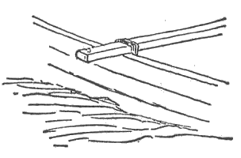
図‐１
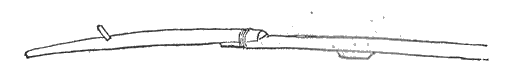
図‐２
小舟はやっと岸に着いた。私は叫び度い位うれしくなって――まったく私は小声で叫んだが――日本の海岸に飛び上った。税関の役人たちが我々の荷物を調べるために、落着き払ってやって来た。純白の制帽の下に黒い頭髪が奇妙に見える、小さな日本の人達である。我々は海岸に沿うた道を、暗黒の中へ元気よく進んだ。我々の着きようが遅かったので、ホテルはいささか混雑し、日本人の雇人達が我々の部屋を準備するために右往左往した。やがて床についた我々は、境遇の新奇さと、早く朝の光を見度いという熱心さとの為に、
私の三十九回の誕生日である。ホテルの窓から港内に集った各国の軍艦や、この国特有の奇妙な小舟や、
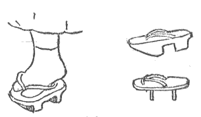
図‐３
運河の入口に新しい海堤が築かれつつあった。不思議な人間の
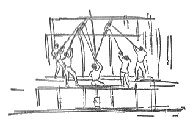
図‐４
朝飯が終るとすぐに我々は町を見物に出かけた。日本の町の街々をさまよい歩いた第一印象は、いつまでも消え失せぬであろう。――不思議な建築、最も清潔な陳列箱に似たのが多い見馴れぬ開け放した店、店員たちの礼譲、いろいろなこまかい物品の新奇さ、人々の立てる奇妙な物音、空気を充たす杉と茶の香。我々にとって珍しからぬ物とては、足の下の大地と、暖かい輝かしい陽光と位であった。ホテルの角には、人力車が数台並んで客を待っていた（図５）が、我々が出て行くや否や、彼等は「人力車？」と叫んだ。我々は明瞭に要らぬことを表示したが、それにも拘らず二人我々について来た。我々が立ち止ると彼等も立ち止る。我々が小さな店をのぞき込んで、何をか見て微笑すると、彼等もまた微笑するのであった。私は彼等がこんなに遠くまでついて来る忍耐力に驚いた。何故かなれば我々は歩く方がよかったから人力車を雇おうと思わなかったのである。然し彼等は我々よりも、やがて何が起るかをよく知っていた。歩き廻っている内に
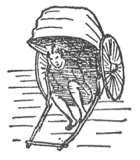
図‐５
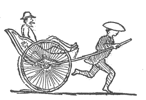
図‐６
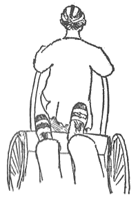
図‐７
誰でも皆店を開いているようである。店と、それからその後にある部屋とは、道路に向って明けっぱなしになっているので、買物をしに行く人は、自分が商品の間から無作法にも、その家族が食事をしているのを見たり、簡単なことこれに比すべくもない程度にまで引き下げられた家事をやっているのを見たりしていることに気がつく。たいていの家には炭火を埋めた灰の入っている器具がある。この上では茶のための湯が熱くされ、寒い時には手をあたためるのだが、最も重要な役目は喫煙家に便利を与えることにあるらしい。パイプと吸い口とは金属で、柄は芦みたいな物である（図８）。煙草は色が薄く、こまかく刻んであり、非常に乾いていて且つ非常にやわらかい。雁首には小さな豆粒位の煙草のたまが納る。これを詰め、さて例の炭で火を点けると、一度か二度パッと吸った丈で全部灰になって了う。このような一服でも充分なことがあるが、続けて吸うために五、六度詰めかえることも出来る。またお茶はいつでもいれることが出来るような具合になっていて、お茶を一杯出すということが一般に、店に来た人をもてなすしるしになっている。かかる小さな店のありさまを描写することは不可能である。ある点でこれ等の店は、床が地面から持ち上った、あけっぱなしの仮小屋を連想させる。お客様はこの床の端に腰をかけるのである。商品は――可哀想になる位品数のすくないことが間々ある――低い、段々みたいな棚に並べてあるが、至って手近にあるので、お客様は腰をかけた儘手をのばして取ることが出来る。この後で家族が一室に集り、食事をしたり物を読んだり寝たりしているのであるが、若しこの店が自家製品を売るのであると、その部屋は扇子なり菓子なり砂糖菓子なり玩具なり、その他何であろうと、商品の製造場として使用される。子供が多勢集ってままごとをやっているのを見ているような気がする。時に
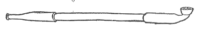
図‐８
この国の人々がどこ迄もあけっぱなしなのに、見る者は彼等の特異性をまざまざと印象つけられる。例えば往来のまん中を誰れはばからず子供に乳房をふくませて歩く婦人をちょいちょい見受ける。また、続けさまにお
店に入る――と云った処で、多くの場合には単に敷居をまたいで再び大地を踏むことに止るが――時、男も女もはき物を残す。前に出した写生図でも判る通り、
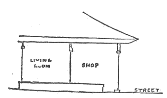
図‐９
ある階級に属する男たちが、馬や牡牛の代りに、重い荷物を一杯積んだ二輪車を引っぱったり押したりするのを見る人は、彼等の痛々しい忍耐に同情の念を禁じ得ぬ（図10）。彼等は力を入れる時、短い音を連続的に発するが、調子が高いので可成り遠くの方まで聞える。繰り返して云うことはホイダ ホイ！ ホイ サカ ホイ！ と聞える。顔を流れる汗の玉や、口からたれる
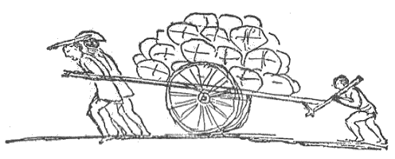
図‐10
いたる所に広々とした稲の田がある。これは田をつくることのみならず、毎年稲を植える時、どれ程多くの労力が費されるかを物語っている。田は細い堤によって、不規則な形の地区に分たれ、この堤は同時に各地区への通路になる。地区のあるものには地面を耕す人があり（図11）他では桶から液体の肥料をまいており、更に他の場所では移植が行われつつある。草の芽のように小さい稲の草は、一々人の手によって植えられねばならぬので、これは如何にも信じ難い仕事みたいであるが而も一家族をあげてことごとく、老婆も子供も一緒になってやるのである。小さい子供達は赤坊を背中に負って見物人として田の畔にいるらしく見える。この、子供を背負うということは、至る処で見られる。婦人が五人いれば四人まで、子供が六人いれば五人までが、必ず赤坊を背負っていることは誠に著しく目につく。時としては、背負う者が両手を後に廻して赤坊を支え、又ある時には赤坊が両足を前につき出して馬に乗るような格好をしている。赤坊が泣き叫ぶのを聞くことは、めったになく、又私はいま迄の所、お母さんが赤坊に対して
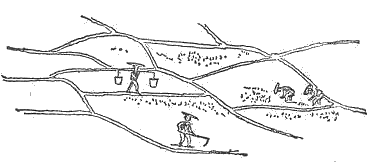
図‐11
私は野原や森林に、我国にあるのと全く同じ植物のあるのに気がついた。同時にまるで似ていないのもある。
はじめて東京――東の首府という意味である――に行った時、我々は横浜を、例の魅力に富んだ人力車で横断した。東京は人口百万に近い都会である。古い名前を江戸といったので、以前からそこにいる外国人達はいまだに江戸と呼んでいる。我々を東京へ運んで行った列車は、一等、二等、三等から成り立っていたが、我々は二等が充分清潔で且つ楽であることを発見した。車は英国の車と米国の車と米国の鉄道馬車との三つを一緒にしたものである。連結機と車台とバンター・ビームは英国風、車室の両端にある昇降台と扉とは米国風、そして座席が車と直角に着いている所は米国の鉄道馬車みたいなのである。我々は非常な興味を以てあたりの景色を眺めた。鉄路の両側に何マイルも何マイルもひろがる稲の田は、今や（六月）水に被われていて、そこに働く人達は膝のあたり迄泥に入っている。淡緑色の新しい稲は、濃い色の木立に生々した対照をなしている。百姓家は恐ろしく大きな草
我々は東京に着いた。汽車が停ると人々はセメントの道に下りた。木製の下駄や草履が立てる音は、どこかしら馬が沢山橋を渡る時の音に似ている――このカラコロいう音には、不思議に響き渡る、どっちかというと音楽的な震動が混っている。我々の人力車には、肩に繩をつけた男が一人余計に加った――何のことはない、タンデム・ティーム〔竪に二頭馬を並べた馬車〕である――そして我々はいい勢で走り出した。横浜が興味深かったとすれば、この大都会の狭い路や生活の有様は、更に更に興味が深い。人力車は速く走る、一軒一軒の家をのぞき込む、異様な人々と行き違う――僧侶や紳士や派手に装った婦人や学生や小学校の子供や、その殆ど全部が帽子をかぶっていず、みんな黒い頭の毛をしていて、下層社会の人々の、全部とはいわぬが、ある者どもは腰のまわりに
かなり広い焼跡を通過した時、私は今までこんなに人が働くのを見たことがないと思った位、盛な活動が行われつつあった。そこには、小さな、一階建ての住宅や、吹けば飛ぶような店舗と、それから背の高い、堂々たる二階建ての防火建築との、二つの形式の建物が建てられつつあった。大きな防火建築をつくるに当っては、先ず足場を組み立て、次にむしろで被覆するのであるが、これはふんだんに使用する壁土が、早く乾き過ぎぬ為にするのである。かかる建物には、重い瓦の屋根が使用される。これは地震の際大いに安全だとされている。即ち屋根の惰性は、よしんば建物は揺れても、屋根は動かぬようになっているのである。一本の杖を指一本の上に立てようとすると困難である。だが、若し重い本を、この杖の上に結びつけることが出来れば、それを支えることは容易になるし、本をすこしも動かすことなしに、手を素速く数インチ前後に動かすことも出来る。〔蔵を建てるには〕先ず丈夫な骨組みが出来、その
建物が先ず板張りされる場合には、四角い瓦が、時としては筋違いに、時としては水平に置かれ、その後合せ目を白い壁土で塗りつぶすのであるが、これが中々手際よく、美しく見えるものである（図12）。商売人たちは毎年一定の金額を建築費として貯金する習慣を持っている。これは、どうかすると広い区域を全滅させる大火を予想してのことなのであるが、我々が通りつつあった区域は、長い間、このような災難にあわなかったので、こうして貯えた金がかなりな額に達した結果、他に比較して余程上等な建物を建てることが出来た。
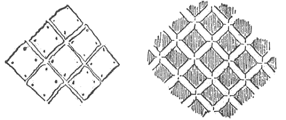
図‐12
古風な、美しい橋を渡り、お城の堀に沿うて走る内に、間もなく我々はドクタア・デーヴィッド・マレーの事務所に着いた。優雅な傾斜を持つ高さ二十フィート、あるいはそれ以上の石垣に接するこの堀は、小さな川のように見えた。石垣は広い区域を取りかこんでいる。堀の水は十五マイルも遠くから来ているが、全工事の堅牢さと規模の大きさとは、大したものである。我々はテーブルと椅子若干とが置かれた低い建物に入って行って、文部省の督学官、ドクタア・デーヴィッド・マレーの来るのを待った。テーブルの上には、煙草を吸う人の為の、火を入れた土器が箱に入っている物が置いてあった。間もなく召使いがお盆にお茶碗数個をのせて持って来たが、部屋を入る時、頭が床にさわる位深くお辞儀をした。
大学の外人教授は西洋風の家に住んでいる。これ等の家の多くは所々に出入口のある、高い塀にかこまれた広い構えの中に建っている。出入口のある物は締めたっきりであり、他の物は夜になると必ず締められる。東京市中には、このような場所があちこちにあり、ヤシキと呼ばれている。封建時代には殿様たち、即ち各地の大名たちが、一年の中の数ヶ月を、江戸に住むことを強請された。で、殿様たちは、時として数千に達する程の家来や工匠や召使いを連れてやって来たものである。我々が行きつつある屋敷は、封建時代に加賀の大名が持っていたもので、加賀屋敷と呼ばれていた。市内にある他の屋敷も、大名の領地の名で呼ばれる。かかる構えに関する詳細は、日本に就いて書かれた信頼すべき書類によってこれを知られ度い。大名のある者は大なる富、陸地を
現在の加賀屋敷は、立木と
我々は外山教授と一緒に帝国大学を訪れた。日本服を着た学生が、グレーの植物学を学び、化学実験室で仕事をし、物理の実験をやり、英語の教科書を使用しているのを見ては、一寸妙な気持がせざるを得なかった。この大学には英語を勉強するための予備校が付属しているので、大学に入る学生は一人のこらず英語を了解していなくてはならない。私は文部卿に面会した。立派な顔をした日本人で、英語は一言も判らない。若い非常に学者らしい顔をした人が、通訳としてついて来た。この会見は、気持はよかったが、恐ろしく形式的だったので、私にはこのように通訳を通じて話をすることが、いささか気になった。日本語の上品な会話は、聞いていて誠に気持がよい。ドクタア・マレーも同席されたが、会話が終って別れた時、私が非常にいい印象を与えたといわれた。私はノート無しに講義することに馴れているが、この習慣がこの際、幸にも役に立ったのである。私は最大の注意を払って言葉を選びながら、この国が示しつつある進歩に就いて文部卿をほめた。
昼過ぎにはウィルソン教授（我々は同教授と昼飯を共にした）が私を相撲見物に連れて行ってくれた。周囲の光景がすでに面白い。小さな茶屋、高さ十フィートばかりの青銅の神様若干、それから例の如き日本人の群集。我々は切符を買った。長さ七インチ、幅二インチ半、厚さ半インチの木片で漢字がいくつか印刷してある。興行場は棒を立て、たるきを横に渡した場所に、天井に

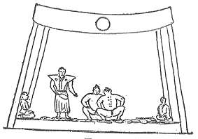
図‐13
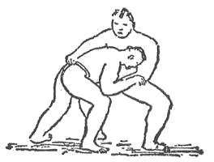
図‐14
ここを立ち去る時、私の友人は人力車を呼んで、日本語で車夫に私の行先きを話した。彼は先約があるので、私を停車場につれて行く訳に行かなかったのである。かくて私は三十分間、この大きな都会の狭い町並を旅していた。その間に欧米人には一人も行き会わず、また、勿論、私が正しい所へ行きつつあるのか、間違った方向へ行きつつあるのか、まるで見当がつかなかった。
汽車に乗って東京を出ると、すぐに江戸湾の水の上に、海岸と並行して同じような形の小さい低い島が五つ一列にならんでいるのが見える。これ等の島が設堡されているのだと知っても、別に
我々は散歩をしていて時々我国の墓地によく似た墓地を見た。勿論墓石の形は異っている。我国で見るような、長くて細い塚は見当らず、また石屋の芸術品である所の
夜中に時々、規則的なリズムを持つ奇妙なカチンカチンという音を聞くことがある。これは私設夜警が立てる音で、時間をきめて一定の場所を巡回し、その土地の持主に誰かが番をしつつあることを知らせるために、カチン カチンやるのである。
また昼夜を問わず、
店で売る品物を陳列する方法は多く簡単で且つ面白い。一例として、
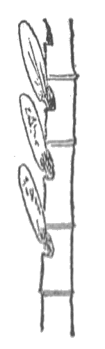
図‐15
人力車に乗って町を行くと、単純な物品の限りなき変化に気がつく。それで、ちょっと乗った丈でも、しょっ中油断なくしていられ、興味深く、また面白がっていられる。二階のある家でいうならば、二階の手摺だけでも格子や彫刻や木材に自然が痕をとどめた物の数百の変種を見せている。ある手摺は不規則な穴のあいた、でこぼこな板で出来ていた（図16）。このような粗末な、見っともない板は、薪にしかならぬと思う人もあるであろう。然し日本人は例えば不規則な樹幹の外側をきり取つた板［＃「きり取つた板」はママ］、それはきのこのためによごれていて、またきのこが押しつけた跡が穴になっている物のような、「自然」のきまぐれによる自然的な結果をたのしむのである。
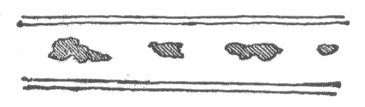
図‐16
大分人力車に乗ったので、乗っている時には全く静かにしていなくてはならぬことを知った。車を引く車夫は梶棒をかなり高く、丁度バランスする程度に押えている。だから乗っている人が突然前に動くと――例えばお辞儀をする――車夫は膝をつきお客は彼の頭上を越して前に墜ちる。反対に、友人が通り過ぎたのに気がついて、頭と身体とをくるりと後に向け同時に後方に身体をかしげると、先ずたいていは人力車があおむけにひっくりかえり、乗っている人は静かに往来に投げ落される。車夫は
日本人の持っている装飾衝動は止るところを知らぬ。赤坊の頭でさえこの衝動からまぬかれぬ。両耳の上の一房、前頭部の半月形、頭のてっぺんの円形、後頭部の小さな尻尾――赤坊の頭を剃るにしても、こんな風に巧に毛を残すのである。
日本では我国と違って馬に蹄鉄を打たない。馬や牛が藁でつくった靴をはいているのは、すこぶる観物である。これは厚い、編んだ底を持っていて、ひづめの後に結びつけられる。往来にはこんな靴が棄ててある。四足の労役獣のばかりでなく二本足のも……。
第17図は子供を背中に負う一つの方法を示している。お母さんは背後に両手を廻し、そして赤坊の玩具を手に持っている。
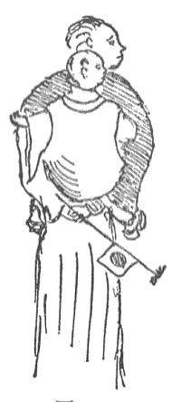
図‐17
東京の死亡率が、ボストンのそれよりもすくないということを知って驚いた私は、この国の保健状態に就いて、多少の研究をした。それによると赤痢及び小児
この国の人々は頭に何もかぶらず、殊に男は頭のてっぺんを剃って、
街路や小さな横丁等は概して撒水がよく行われている。路の両側に住む人々が大きな竹の柄杓で打水をしているのを見る。東京では水を入れた深い桶を担い棒でかついだ男が町を歩きまわる。桶の底の穴をふさぐ栓をぬくと、水がひろがって、
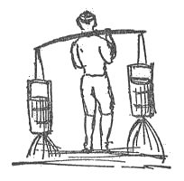
図‐18
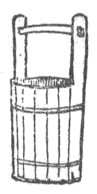
図‐19
固い木でつくった担い棒は日本、支那、朝鮮を通じて、いたる所でこれを見る。棒の両端に大きな
この国に来た外国人が先ず気づくことの一つに、いろいろなことをやるのに日本人と我々とが逆であるという事実がある。このことは既に何千回となく物語られているが、私もまた一言せざるを得ない。日本人は
「茶を火にかける」建物は百尺に百五十尺、長く低い
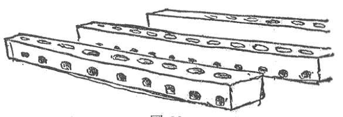
図‐20
輸出向きの茶は、空気が入らぬようにハンダで密封する板鉛の箱に納めるにさき立って、先ず完全に乾燥しなくてはならぬ。すこしでも湿気があると
日本で出喰わす愉快な経験の数と新奇さとにはジャーナリストも汗をかく。劇場はかかる新奇の一つであった。友人数名と共に劇場に向けて出発するということが、すでに素晴しく景気のいい感を与えた。人通りの多い町を一列縦隊で勢よく人力車を走らせると、一秒ごとに新しい光景に、新しい物音、新しい香い（この最後は必ずしも常に気持よいものであるとはいえぬ）に接する……これは忘れることの出来ぬ経験である。間もなく我々は劇場に来る。我々にとっては何が何やらまるで見当もつかぬような支那文字をべったり書いた細長い布や、派手な色の
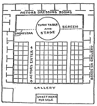
図‐21
舞台は低く、その一方にあるオーケストラは黒塗りの衝立によって、観客からかくしてある。舞台の中央には床と同高度の、直径二十五フィートという巨大な回転盤がある。場面が変る時には幕を下さず、俳優その他一切合財を乗せたままで回転盤が徐々に回転し、道具方が忙しく仕立てつつあった新しい場面を見せると共に今迄使っていた場面を見えなくする。観客が劇を受け入れる有様は興味深かった。彼等は、たしかに、サンフランシスコの支那劇場で支那人の観客が示したより以上の感情と興奮を見せた。ここで私は
句的につけ加えるが、上海に於る支那劇場は、サンフランシスコのそれとすこしも異っていなかった。サンフランシスコの舞台で、大きな、丸いコネティカット出来の柱時計が、時を刻んでいた丈が相違点であった。劇は古代のある古典劇を演出したものとのことであった。言語は我々の為に通訳してくれた日本人にとってもむずかしく、彼は時々ある語句を捕え得るのみであった。数世紀前のスタイルの服装をした俳優――大小の刀をさしたサムライ――を見ては、興味津々たるものがあった。酔っぱらった場面は、大いに酔った勢を発揮して演出された。剥製の猫が長い竿のさきにぶらさがって出て来て手紙を盗んだ。揚幕から出て来た数人の俳優が、舞台でおきまりの
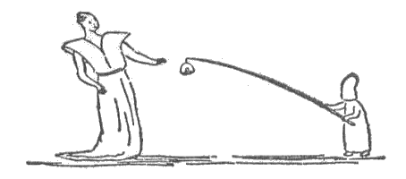
図‐22
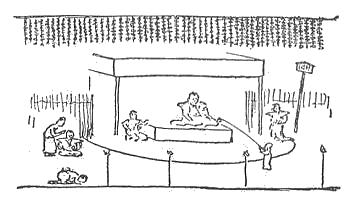
図‐23
旧式なニューイングランドの習慣で育てられた者にとって、日曜日は面白い日であった。あらゆる種類の商売や職業が盛んに行われつつある。港の船舶は平日通りに忙しく、ホテルの向いの例の※［＃「木＋戈」、U+233FE、1巻-28-下-13］打機械は一生懸命働き、往来には掃除夫や撒水夫がいるし、内国人の店はすべて開いている。私の見た範囲では、日曜を安息日とする例は、薬にしたくもない。この日の午後、私は上野公園の帝室博物館を訪れるために東京へ行った。公園の人夫たちは忙しく働いている。博物館の
博物館には完全に驚かされた。立派に標本にした鳥類の蒐集、内国産甲殻類の美しい陳列箱、アルコール漬の大きな蒐集、その他動物各類がならべてある。そして面白いことに、標示札がいずれも日本語で書いてある。教育に関する進歩並に外国の教育方針を採用している程度は、まったくめまぐるしい位である。
東京の町々を通っていて私はいろいろな新しいことを観察した。殆どすべての家の
日本及び他の東洋の国々を訪れる者が非常に早く気づくことは、殆ど一般的といってもよい位、ありとあらゆる物品に竹を使用していることである。河に沿って大きな竹置場がいくつもあり、巨大な束にまとめられた竹が立っている。竹製品の一覧表を見ることが出来たらば、西洋人はたしかに一驚を喫するであろう。私は道路修繕の手車から、小さな石ころが粗末な竹の
不思議な有様の町を歩いていて、アメリカ製のミシンがカチカチいっているのを聞くと妙な気がする。日本人がいろいろな新しい考案を素速く採用するやり口を見ると、この古い国民は、支那で見られる万事を死滅させるような保守主義に、縛りつけられていないことが非常にハッキリ判る。
大学を出て来た時、私は人力車夫が四人いる所に歩みよった。私は、米国の辻馬車屋がするように、彼等もまた揃って私の方に馳けつけるかなと思っていたが、事実はそれに反し、一人がしゃがんで長さの異った麦藁を四本ひろい、そして
箸という物はナイフ、フォーク、及び匙の役をつとめる最も奇妙な代物である。どうしてもナイフを要するような食物は、すでに小さく切られて膳に出るし、ソップはお椀から直接に呑む。で、箸は食物の小片を摘むフォーク、及び口につけた茶椀から飯を口中に押し込むショベルとして使用される。この箸の思いつきが、他のいろいろな場合に使われているのを見ては、驚かざるを得ない。即ち鉄箸では火になった炭をつかみ、料理番は魚や菓子をひっくり返すのに箸を用い、宝石商は懐中時計のこまかい部分を組み立てるために繊細な象牙の箸を使用し、往来では紙屑拾いや掃除人が長さ三尺の箸で、
往来を歩いていると、目立って乞食のいないことに気がつく。不具者のいないことも著しい。人力車の多いのには
旅行中の国の地方的市場を訪れることは、博物学の興味ある勉強になる。世界漫遊者は二つの重大な場所を訪れることを忘れてはならぬ。その土地の市場と、ヨーロッパでは土地の美術館とである。市場に行くとその地方の博物を見ることが出来るが、特にヨーロッパでは固有の服装をした農民達を見ることが出来るばかりでなく、手製の箱、籠等も見られる。横浜の市場訪問は興味深い光景の連続であった。莚を屋根とし、通路の幾筋かを持つ広い場所には、私が生れて初めて見た程に沢山の生きた魚類がいた。いろいろ形の変った桶や皿や笊を見る丈でも面白かったが、それが鮮かな色の、奇妙な形をした、多種の生魚で充ちているのだから、この陳列はまさに
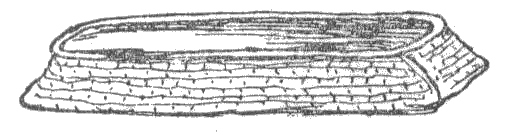
図‐24
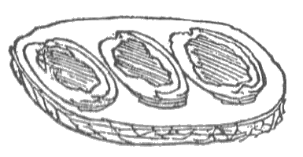
図‐25
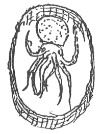
図‐26
これ等各種の生物はすべてある簡単な方法によって生かされている。即ち低い台の上にのせた大きな円い水槽に常に水を満たし、その水槽から所々に穴をあけた長い竹の管が出ていて、この穴から水がかなりの距離にまで噴出するのである。槽に入れる水は人が
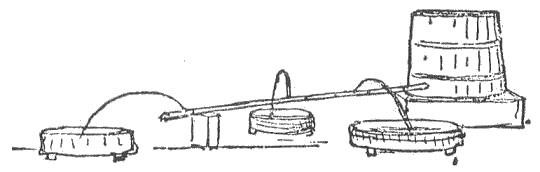
図‐27
＊ 合衆国漁業委員会最初の委員長ベアド教授の談によると、我国の近海にも日本の海に於ると同程度に沢山の可食魚類がいるのだが、我々が単に大量的に捕え得る魚のみを捕えるのに反して、日本の漁夫は捕った魚はすべて持ち帰り、そしてそれを市場で辛棒強くより分けるのである。
市場の野菜部は貧弱である。外国人が来る迄は極めて少数の野菜しか知られていなかったものらしい。ダイコンと呼ばれるラディッシの奇妙な一種は重要な食物である。それは長さ一フィート半、砂糖大根の形をしていて、色は緑がかった白色である。付合せ物として生で食うこともあるが、また醗酵させてザワクラウトに似たような物にする事もある。この後者たるや、私と一緒にいた友人の言をかりると、製革場にいる犬でさえも尻尾をまく程臭気が強い。往来を運搬しているのでさえも判る。そしてそれは
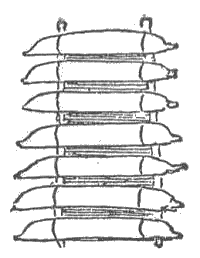
図‐28
人々が正直である国にいることは実に気持がよい。私は決して札入れや懐中時計の見張りをしようとしない。錠をかけぬ部屋の机の上に、私は小銭を置いたままにするのだが、日本人の子供や召使いは一日に数十回出入しても、触ってならぬ物には決して手を触れぬ。私の大外套と春の外套をクリーニングするために持って行った召使いは、間もなくポケットの一つに小銭若干が入っていたのに気がついてそれを持って来たが、また、今度はサンフランシスコの乗合馬車の切符を三枚もって来た。この国の人々も所謂文明人としばらく交っていると盗みをすることがあるそうであるが、内地に入ると不正直というようなことは殆ど無く、条約港に於ても稀なことである。日本人が正直であることの最もよい実証は、三千万人の国民の住家に錠も鍵も
ある茶店で私は始めて日本の国民的飲料である処のサケを味った。酒は米から醸造した飲料で、私の考ではラーガー・ビヤより強くはなく、我々が
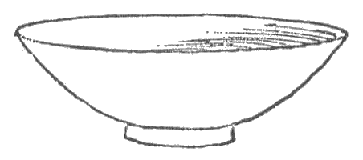
図‐29
有名なアメリカの医師で数年間日本で開業し、ここ二年間は東京医科大学に関係しているドクタア・エルドリッジは、彼自身が日本人を取扱ったことや、他の医師（中には十六年も、日本に滞在した人がある）の経験に就いて、私にいろいろなことを教えてくれた。日本の気候は著しくよいとされている。従来必ず流行した疱瘡は、政府が一般種痘のために力強い制度を布き、その目的のために痘苗製造所を持つに至って、今や制御し得るようになった。この事に於て、他の多くに於ると同様、日本人は西洋の国民よりも遙かに進歩している。
日本人の多くが美しい白い歯を見せる一方、悪い歯も見受ける。門歯が著しくつき出した人もいるが、この不格好は子供があまり遅くまで母乳を飲む習慣によるものとされる。即ち子供は六、七歳になるまでも乳を飲むので、その結果歯が前方に引き出されるのであると。日本人は既に外国の歯科医学を勉強しているが、彼等の特殊的な、そして繊細な機械的技能を以てしたら、間もなく巧みな歯科医が出来るであろう。日本は泰西科学のどの部門よりも医学に就いて最も堅実な進歩を遂げて来た。医学校や病院は既に立派に建てられている。外国から輸入されるすべての薬が純であるかどうか分析して調べるための化学試験所はすぐ建てられた。泰西医療術の採用が極めて迅速なので、皇漢法はもう亡びんとしている程である。宗教的信仰に次いで人々が最も頑固に固執するのは医術的信心であって、それが如何に荒唐無稽で莫迦げていても容易に心を変えぬ。支那の医術的祭礼を速に合理的且つ科学的な泰西の方法に変えた所は、この国民があらゆる文明から最善のものをさがし出して、それを即座に採用するという著しい特長を持っていることの圧倒的実例である。我々は他の国民の長所を学ぶことが比較的遅い。我々はドイツやイングランドには我国のよりも良い都市政制度があり、全ヨーロッパにはよりよき道路建設法があることを知っている。だが我々は果してこれ等の制度を迅速に採用しているであろうか。
我国の人々は、丸い真鍮製で中央に四角な穴のあいている支那の銭をよく知っている。日本にも同様なものや、またより大きく、楕円形で中心に四角な穴のあいたものもある。我々は屡々この穴が何のためにあるのかと不思議に思った。これは人が銭を南京玉のように粗末な藁繩で貫いたり、木片の上に垂直に立つ小さな棒に通して積み上げたりする為らしい（図30）。
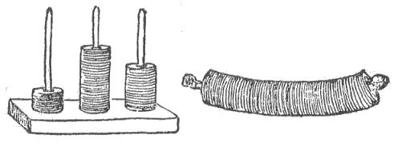
図‐30
いろいろな事柄の中で外国人の筆者達が一人残らず一致する事がある。それは日本が子供達の天国だということである。この国の子供達は親切に取扱われるばかりでなく、他のいずれの国の子供達よりも多くの自由を持ち、その自由を濫用することはより少く、気持のよい経験の、より多くの変化を持っている。赤坊時代にはしょっ中、お母さんなり他の人々なりの背に乗っている。刑罰もなく、咎めることもなく、叱られることもなく、
バー・ハーバア、ニューポート及びその階級に属する場所等を稀な例外として、我国に於る防海壁に沿う無数の地域には、村落改良協会や都市連合が撲滅を期しつつあるような状態に置かれた納屋や廃棄物やその他の鼻持ちならぬ物が目に入る。全くこのような見っともない状態が、
日本人が集っているのを見て第一に受ける一般的な印象は、彼等が皆同じような顔をしていることで、個々の区別はいく月か日本にいた後でないと出来ない。然し、日本人にとって、初めの間はフランス人、イギリス人、イタリー及び他のヨーロッパ人を含む我々が、皆同じに見えたというのを聞いて驚かざるを得ない。どの点で我々がお互に似ているかを尋ねると、彼等は必ず「あなた方は皆物凄い、睨みつけるような眼と、高い鼻と、白い皮膚とを持っている」と答える。彼等が我々の個々の区別をし始めるのも、やはりしばらくしてからである。同様にして彼等の一風変った眼や、平な鼻梁や、より暗色な皮膚が、我々に彼等を皆同じように見させる。だが、この国に数ヶ月いた外国人には、日本人にも我々に於ると同じ程度の個人的の相違があることが判って来る。同様に見えるばかりでなく、彼等は皆背が低く脚が短く、黒い濃い頭髪、どちらかというと突き出た唇が開いて白い歯を現わし、頬骨は高く、色はくすみ、手が小さくて繊美で典雅であり、いつもにこにこと挙動は静かで丁寧で、晴々しい。下層民が特に過度に機嫌がいいのは驚く程である。一例として、人力車夫が、支払われた賃銀を足りぬと信じる理由をもって、若干の銭を更に要求する時、彼はほがらかに微笑し哄笑する。荒々しく拒絶した所で何等の変りはない。彼は依然微笑しつつ、親切そうにニタリとして引きさがる。
外国人は日本に数ヶ月いた上で、徐々に次のようなことに気がつき始める。即ち彼は日本人にすべてを教える気でいたのであるが、驚くことには、また残念ながら、自分の国で人道の名に於て道徳的教訓の重荷になっている善徳や品性を、日本人は生れながらに持っているらしいことである。衣服の簡素、家庭の整理、周囲の清潔、自然及びすべての自然物に対する愛、あっさりして魅力に富む芸術、挙動の礼儀正しさ、他人の感情に就いての思いやり……これ等は恵まれた階級の人々ばかりでなく、最も貧しい人々も持っている特質である。こう感じるのが私一人でない証拠として、我国社交界の最上級に属する人の言葉をかりよう。我々は数ヶ日の間ある田舎の宿やに泊っていた。下女の一人が、我々のやった間違いを丁寧に譲り合ったのを見て、この米国人は「これ等の人々の態度と典雅とは、我国最良の社交界の人々にくらべて、よしんば優れてはいないにしても、決して劣りはしない」というのであった。
［＃改ページ］
日光への旅行――宇都宮までの六十六マイルを駅馬車で、それから更に三十マイル近くを人力車で行くという旅――は、私に田舎に関する最初の経験を与えた。我々は朝の四時に東京を立って駅馬車の出る場所まで三マイル人力車を走らせた。こんなに早く、天の如く静かな大都会を横切ることは、まことに奇妙なものであった。駅馬車の乗場で、我々は行を同じくする友人達と顔を合わせた。文部省のお役人が一人通弁として付いて行って呉れる外に、日本人が二人、我々のために料理や、荷ごしらえや、荷を担ったり、その他の雑用をするために同行した。我々の乗った駅馬車というのは、運送会社が団体客を海岸へ運ぶ為に、臨時に仕立てる小さな荷馬車に酷似して、腰掛が両側にあり、膝と膝とがゴツンゴツンぶつかる――といったようなものであった。然し道路は平坦で、二頭の馬――八マイルか十マイル位で馬を代える――は、いい勢で走り続けた。
朝の六時頃、ある町を通過したが、その町の一通りには籠や浅い箱に入れた売物の野菜、魚類、果実等を持った人々が何百人となく集っていた。野天の市場なのである。この群衆の中を行く時、御者は小さな
この市場の町を過ぎてから、我々は重い荷を天秤棒にかけて、ヨチヨチ歩いている人を何人か見た。大した荷である。私は幾度かこれをやって見て失敗した。荷を地面から持ち上げることすら出来ない。然るにこの人々は天秤棒をかついで何マイルという遠方にまで行くのである。また十マイルも離れている東京まで歩いて買物に行く若い娘を数名見た。六時半というのに子供はもう学校へと路を急いでいる。時々あたり前の日本服を着ながら、アメリカ風の帽子をかぶっている日本人に出喰わした。薄い木綿の股引きだけしか身につけていない人も五、六人見た。然し脚に何にもはかない人も多いので、これは別に変には思われなかった。
我々は水田の間を何マイルも何マイルも走ったが、ここで私は水車が灌漑用の踏み車として使用されているのを見た。図31は例の天秤棒で水車と箱とを運んで路を歩いて来る人を示している。同じスケッチで、一人の男が車を踏んで水を溝から水田にあげつつある。先ず箱を土手に入れ、車を適宜な凹に落し込むと、車の両側の泥に長い竿を立てる。人はこの竿につかまって身体の平衡を保ちながら、両足で車をまわすのである。
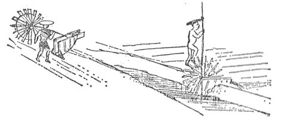
図‐31
我々が通った道路は平でもあり、まっすぐでもあって、ニューイングランドの田舎で見受けるものよりも遙かによかった。農家は小ざっぱりと、趣深く建てられ、そして大きな

図‐32
所で、これ等各種のお社への入口は tori-i と称する不思議な門口、換言すれば
道路に添って立木に小枝の束が縛りつけてあるのを見ることがある。これは人々が集め、蓄え、そして、このようにして乾燥させる焚きつけなのである。
ある町で、私は初めて二人の乞食を見たが、とても大変な様子をしていた。即ち一人は片方の足の指をすっかり失っていたし、もう一人の乞食の顔は、まさに醗酵してふくれ上らんとしつつあるかのように見えた。おまけに身につけた
午前八時十五分過ぎには十五マイルも来ていた。我々の荷物全部――それには罐詰のスープ、食料品、英国製エール一ダース等も入っている――を積んだ人力車は、我々のはるか前方を走っていた。而も車夫は我々と
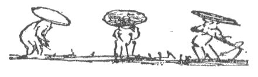
図‐33
目の見えぬ娘がバンジョーの一種を弾きながら歌を唄ってゆっくりと町を歩くのをよく見たし、またある場所では一人の男がパンチ・エンド・ジュディ〔操り人形〕式の見世物をやっていた。片手に人形を持ち、その頭をポコンポコン動かしながら、彼は歌を唄うのであった。
街道を進んで行くと各種の家内経済がよく見える。
路に接した農家は、裏からさし込む光線に、よく磨き込まれた板の間が光って見える程あけっぱなしである。靴のままグランド・ピアノに乗っかる人が無いと同様、このような板の間に泥靴を踏み込む人間はいまい。家屋の開放的であるのを見ると、常に新鮮な空気が出入していることを了解せざるを得ない。燕は、恰度我国で納屋に巣をかけるように、家の中に巣を営む（図34）。家によっては紙や土器の皿を何枚か巣の下に置いて床を保護し、また巣の直下の梁に小さな棚を打ちつけたのもある。蠅はすこししかいない。これは馬がすくないからであろう。家蠅は馬肥で繁殖するものである。
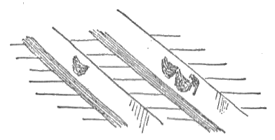
図‐34
床を洗うのに女は膝をついて、両手でこするようなことをしないで、立った儘手を床につけ、歩きながら
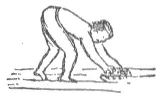
図‐35
窓
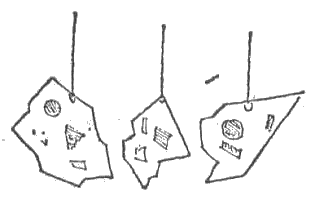
図‐36
我々が通過した村は、いずれも小さな店舗がならぶ、主要街を持っていた。どの店にしても、我々が立ち止ると、煙草に火をつける為の灰に埋めた炭火を入れた箱が差し出され、続いて小さな茶碗をいくつかのせたお盆が出る。時として菓子、又は碌に味のしないような煎餅若干が提供された。私は段々この茶に馴れて来るが、中々気持のよいものである。それはきまって非常に薄く、熱く、そして牛乳も砂糖も入れずに飲む。日本では身分の上下にかかわらず、一日中ちょいちょいお茶を飲む。
この地方では外国人が珍しいのか、それとも人々が恐ろしく好奇心に富んでいるのか、とにかく、どこででも我々が立ち止ると同時に老若男女が我々を取り巻いて、何をするのかとばかり目を見張る。そして、私が小さな子供の方を向いて動きかけると、子供は気が違ったように泣き叫びながら逃げて行く。馬車で走っている間に、私はいく度か笑いながら後を追って来る子供達を早く追いついて踏段に乗れとさしまねいたが、彼等は
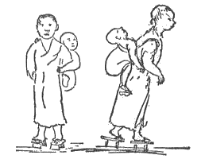
図‐37
日本を旅行すると、先ずどこにでも子供がいることに気がつくが、次に気がつくのは、いたる所に竹が使用してあることである。
田舎を旅しているとすぐ気がつくが、雌鶏の群というものが見あたらぬ。雌鶏と雄鶏とがたった二羽でさまよい歩く――もっともたいていはひっくり返した笊の内に入っているが――だけである。鶏の種類は二つに限られているらしい。一つは立派な、脚の長い、
歩いて廻る床屋が、往来に、真鍮張りの珍しい箱を据えて仕事をしている。床屋はたいていは大人だが（女もいる）どうかすると若い男の子みたいなのもいる。顔はどこからどこ迄剃って了う。婦人でさえ、鼻、頬、その他顔面の表面を全部剃らせる。田舎を旅行していると、このような旅廻りの床屋がある程度まで原因となっている眼病の流行に気がつく――
 衝
衝我々が休憩した宿屋の部屋部屋には、支那文字の格言がかけてある。日本人の通弁がその意味を訳そうとして一生懸命になる有様は中々面白い。我々として見ると、書かれた言葉が国民にとってそれ程意味が不明瞭であることは、大いに不思議である。読む時に、若し一字でも判らぬ字があると、通弁先生は五里霧中に入って了う。接続詞が非常にすくなく、また文脈は役に立たぬらしい。今 Penny wise pound foolish ――〔一文惜みの百損〕――なる格言が四個の漢字で書いてあると仮定する。この格言が初めてである場合、若し四字の中の一字が判らないと、全体の意味が更に解釈出来なくなる。つまり penny wise …… foolish とか、…… wise pound foolish とか（外の字が判らぬにしても同様である）いう風になって、何のことやら訳が判らぬ。我々の通弁が読み得た文句は、いずれも非常に崇高な道徳的の性質のものであった。格言、古典からのよき教え、自然美の嘆美等がそれである。このような額は最も貧弱な宿屋や居酒屋にでもかけてある。それ等の文句が含む崇高な感情を知り、絵画の優雅な芸術味を認めた時、私は我国の同様な場所、即ち下等な酒場や
田舎の旅には楽しみが多いが、その一つは道路に添う美しい生垣、戸口の前の奇麗に掃かれた歩道、家内にある物がすべて小ざっぱりとしていい趣味をあらわしていること、可愛らしい茶呑茶碗や土瓶急須、炭火を入れる青銅の器、木目の美しい鏡板、奇妙な木の
この国の人々の芸術的性情は、いろいろな方法――極めて些細なことにでも――で示されている。子供が誤って障子に穴をあけたとすると、四角い紙片をはりつけずに、桜の花の形に切った紙をはる。この、奇麗な、障子のつくろい方を見た時、私は我国ではこわれた窓硝子を、古い帽子や何かをつめ込んだ袋でつくろうのであることを思い出した。
穀物を
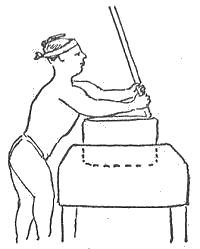
図‐38
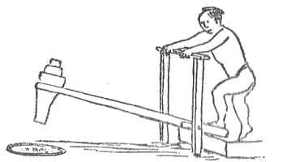
図‐39
この上もなく涼しい日に、この上もなく楽しい旅を終えて我々は宇都宮に着いた。目新しい風物と経験とはここに思い出せぬ程多かった。六十六マイルというものを、どちらかといえばガタピシャな馬車に乗って来たのだが、見た物、聞いた音、一として平和で上品ならざるはなかった。田舎の人々の物優しさと礼譲、生活の経済と質素と単純！ 忘れられぬ経験が一つある。品のいいお婆さんが、何マイルかの間、駅馬車内で私の隣に坐った。私は日本語は殆ど判らぬながら、身振りをしたり、粗末な絵を描いたりして、具合よく彼女と会話をした。お婆さんはそれ迄に外国人を見たこともなければ、話を交えたこともなかった。彼女が私に向って発した興味ある質問は、我国の知識的で上品な老婦人が外国人に向ってなすであろうと、全く同じ性質を持っていた。
旅館に於る我々の部屋の清潔さは筆ではいい現わし得ない。これ等の部屋は二階にあって広い遊歩道に面していた。ドクタア・マレーのボーイ（日本人）が間もなく我々のために美事な西洋料理を調理した。我々はまだ日本料理に馴れていなかったからである。ここで私は宿屋の子供やその他の人々に就いての、面白い経験を語らねばならぬ。即ち私は日本の紙に日本の筆で
六十六マイルの馬車の旅で疲れた我々は、上述の芸当を済ませた上で床に就いた。すくなくとも床から三フィートの高さの二本の棒に乗った、四角い
絵（図40）によらねば得られない。提灯の一つの面は枠に入っていて、それを上にあげることが出来る。こうして浅い油皿に入っている木髄質の燈心若干に点火するのである。日本では床の上に寝るのであるが、やわらかい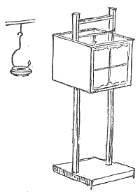
図‐40
＊ この畳に関する詳細は私の『日本の家庭』（ハーパア会社一八八六年）に図面つきで説明してある。Japanese Homes（Harper & Bros）
四角い箱の形をした、恐ろしく大きな緑色の
翌朝、我々は夙く、元気よく起き出でた。今日は人力車で二十六マイル行かねばならぬ。人力車夫が宿屋の前に並び、宇都宮の人口の半数が群をなして押しよせ、我々の衣類や動作を好奇心に富んだ興味で観察する有様は、まことに奇妙であった。暑い日なので私は上衣とチョッキとを取っていたので、一方ならず派手なズボンつりが群衆の特別な注意を惹いた。このズボンつりは意匠も色もあまりに野蛮なので、田舎の人達ですら感心してくれなかった。
車夫は総計六人、大きな筋肉たくましい者共で、犢鼻褌だけの素っぱだか。皮膚は常に太陽に照らされて褐色をしている。彼等は速歩で進んでいったが、とある村に入ると気が違いでもしたかのように駈け出した。私は人間の性質がどこでも同じなのを感ぜざる得なかった。我国の駅馬車も田舎道はブランブランと進むが、村にさしかかると疾駆して通過するではないか。
宇都宮の二十五マイル手前から日光に近い橋石に至る迄、道路に接して立派な杉（松柏科の一種）の並木がある。所々に高さ十二フィートを越える土手があり、その両側には水を通ずる為に深い溝が掘ってある。その溝のある箇所には、水の流れを制御する目的で広い
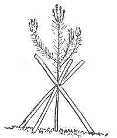
図‐41
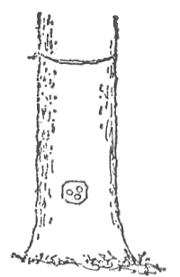
図‐42
密集した部落以外に人家を見ることは稀である。普通、小さな
道路の両側に電信柱がある。堤の上には柱を立てる余地が無いので、例の深い溝の真中に立ててあり、柱の底部に当って溝は手際よく切られ、堤の中に入り込んでいる（図43）。古いニューイングランド式の
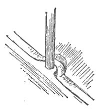
図‐43
仕事をするにも休むにも、日本人は足と脚との内側の上に坐る――というのは、脚を身体の下で曲げ、
時々我々は不細工な形をした荷鞍の上に、素敵に大きな荷物を積んだ荷牛を見受けた。また馬といえば、何マイル行っても種馬にばかり行き会うのであった。東京市中及び近郊でも種馬ばかりである。所が宇都宮を過ぎると、馬は一つの例外もなく牝馬のみであった。この牡馬と牝馬とのいる場所を、こう遠く離すという奇妙な方法は、日本独特のものだとの話だが、疑も無くこれは支那その他の東方の国々でも行われているであろう。
村の人々が将棋――我国の
あばら家や、人が出来かけの家に住んでいるというようなことは、決してみられなかった。建築中の家屋はいくつか見たが、どの家にしても人の住んでいる場所はすっかり出来上っていて、足場がくっついていたり、屋根を葺かず、羽目を打たぬ儘にしてあったりはしないのである。屋根の多くは萱葺きで、地方によって屋背の種類が異っている。
＊ 家屋の詳細は『日本の家庭』に就いて知られ度い。
日本人の清潔さは驚く程である。家は清潔で木の床は磨き込まれ、周囲は奇麗に掃き清められているが、それにも係らず、田舎の下層民の子供達はきたない顔をしている。畑に肥料を運ぶ木製のバケツは真白で、我国の牛乳鑵みたいに清潔である。ミルクやバターやチーズは日本では知られていない。然しながら料理に就いては清潔ということがあまり明らかに現われていないので、食事を楽しもうとする人にとっては、それが如何にして調えられたかという知識は、食慾催進剤の役をしない。これは貧乏階級のみをさしていうのであるが、恐らく世界中どこへ行っても、貧民階級では同じことがいえるであろう。
とある川の岸で、漁夫が十本の釣竿を同時に取扱っているのを見た。彼は高みに立って扇の骨のように開いた釣竿の端を足で踏んでいる。このようにして彼は、まるで巣の真中にいる大きな
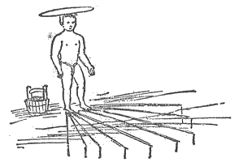
図‐44
日本の枕というのは奇妙な代物で、一寸見ると如何にも使い難くそうであるが、而し私は二時間の睡眠にこれを使用して見て、これはいいと思った。只、馴れぬ人が一晩中使用すると頸に
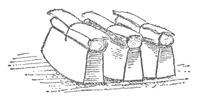
図‐45
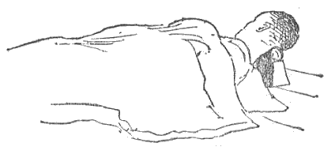
図‐46
日本の部屋に敷いてある畳に就いては既に書いた。畳は一定の規則に従って敷きつめられる。図47は六枚畳を敷いた部屋を示している。宿屋では畳一枚に客人一人の割合なので、主人としては、一人で部屋全体を占領したがるのみならず、テーブルと椅子とを欲しがる外国人よりも、日本人の方を歓迎する。テーブルや椅子――手に入らぬ時は論外だが――には、いずれも脚に幅の広い板が打ちつけてある。そうでないと畳に穴があいて了う。加レ之、外国人はコックを連れて歩くが、このコックがまた台所で広い場所を取る。日本食に慣れるには中々時間がかかる。日本料理は味も旨味も無いように思われる。お菓子でさえも味に欠けている。私は冷たい牛乳をグーッとやり度くて仕方がなかった。パン一片とバターとでもいい。だが、その他のすべての事が如何にも気持よいので、目下の処食物のことなんぞは考えていない。
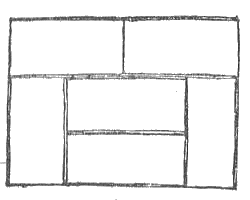
図‐47
我々は東京行きの郵便屋に行きあった。裸の男が、竿のさきに日本の旗を立てた、黒塗の二輪車を引っ張って、全速力で走る。このような男はちょいちょい交代し、馬よりも早い（図48）。
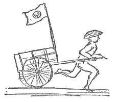
図‐48
道路の重要な曲り角や目につきやすい場所には、馬に慈悲をたれ給う神への顕著な記念碑が建っている、ここにその一つのスケッチがある（図49）。碑文を書くことは出来なかったので、いい加減なことを書いておいたが、我国の動物虐待防止会式の

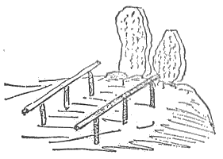
図‐49
萱葺屋根の葺きようの巧みさには、いくら感心しても感心しきれなかった。こんな風なことに迄、あく迄よい趣味があらわれているのである。よく葺いた屋根は五十年ももつそうである＊。
＊ 『日本の家庭』には屋根のことが写生図と共にある程度まで取扱ってある。
日本の萱葺屋根の特異点は、各国がそれぞれ独特の型式を持って相譲らぬことで、これ等各種の型式をよく知っている人ならば、風船で日本に流れついたとしても、家の
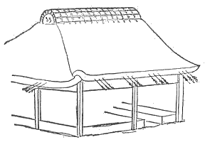
図‐50
日本の
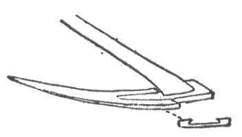
図‐51
この国の
図‐52
図‐53
路に沿って我々は折々、まるい、輝紅色の草
小憩するために車を止めた茶屋で、我々はいたる所を見廻した。部屋は奇麗に取片づけられている、畳は清潔である、杉材の天井やすべての木部は穴を埋めず、油を塗らず、
図‐54
窓――それがある場合には――の形に現われる日本人の注意深さと趣味とは図55の通りである。これは鼠無地の壁を丸くくりぬいた、直径四フィートの窓であって、外側には松の立木を
図‐55
図56は女髪結に
図‐56
この国の人々があく迄勤労する実例はいたる所で見られる。作物を植えることを語った時、私は何千エーカーという水田に稲の小さな束が手で移植されることを述べたが、大麦や小麦や蕎麦が事実何列も移植され、また徹底的な草取りが手で行われるのだとは、思いもよらなかった。聞く所によると、米の変種は二百七十種ある。主な種類は二つ――普通のと、それからねばねばしたのとである。
［＃改ページ］
我々は世界的に有名な日光の諸寺院に近い橋石〔括弧してストーン・ブリッジとしてあるが現在の日光町字
図‐57

図‐58
我々は村一番の宿屋に泊った。道路から古風な建物のいくつかが長く続いて、美しい廊下や、掃き清めた内庭や、変った灌木や、背の低い松や、石燈籠や、奇妙な塀や、その他すべてが、如何にも人の心を引きつける。我々はかくの如き建物の最終の部屋――下二間、二階二間である――を選定した。そこの廊下は殆ど部屋と同じ位広く、そして張り出した屋根で覆われている。我々はテーブルを廊下に持ち出し、夜は頭の上の桷からぶら下った、二つの石油
落ついた所で我々は村落を見廻し、雄大な山の景色を楽しむのである。我々の背後で
＊ この橋に関係のある面白い事実が一つ。グラント将軍が一八七九年世界一周の途次、日光を訪れた時、この柵を取りはらって彼が渡れるようにしたが、謙遜な将軍はこの名誉を断った。
これ等の寺院や墳墓は実に驚嘆すべきものである。精巧、大規模、壮麗……その一端を伝えることすら私には全然出来ないことを、ここに白状せねばならぬ。見ること二時間にして、私は疲れ果てた。私はこれ等の寺院の小さな写真数葉を持っているが、それ等はこまかい装飾や、こみ入った木ぼりや、青銅細工や、
一般用の橋を渡ってから、我々は広い並木路を登って行った。この路は山の斜面を切り開いたものなので、六フィート或は八フィートごと位に石段があり、両側は巨大な石の壁、そしてあたり一面、我国メインの最も荒々しい地方に於るが如く、古い森林の木がすくすくと天をついて立つ。これ等建造物の宏大さを
図59はドイツの地図からうつした日光寺院である。私は建物の二、三に文字を書いて符号とした。何故かというと、私のスケッチは到底これ等の建物の大さを現わさぬからである。Ｏは三つの大広間を持つ建築を示している。その中央の広間は四十フィートに六十フィートであり、点線で示す側間は四十フィートに二十五フィートである。この寸法はむしろすくな目に推測したものである。どの建物の壁も鮮かに彩色された、精巧な彫刻を施した鏡板で被われている。木彫は深く、枝や花は離れ、木材は彫刻に対して、暗い背地をなす程深くえぐられている。Ｆと記された平面図に於て、入口の一側には鏡板が十五枚あり、他の側には八枚ある。
図‐59
かかる鏡板は長さ六フィートで各々異った構図を持っている。ある一枚には鶴、他の一枚には白鳥、更にスケッチ（図60）で示す一枚は高浮彫で美しく彫った神話の鳥……それは如何にも生々としていて、羽根や花は見事に極彩色されてある……である。大きな鏡板の下には、同様に精巧な彫刻を施した、より小さな鏡板があり、数多い真鍮の板にはこみ入った模様が切り込んである。この素晴しい偉業に面して、我々は息もつかず、只
図‐60
この仕事の多くは三百年近くの昔に始められ、各種の建築物は二百五十年前まで位の間に建て増しされたのであるが、それにもかかわらず一向古ぼけていないのを見ると、これ等神聖な記念物を如何に大切にして来たかが判る。室内にあっては漆細工、真鍮、
このスケッチ（図61・62）は時代の色緑に、かつ万物を被う陰影によって湿気を帯びた、大きな石段の大略を示す。あたりを占めるものは、すべての密林に於るが如く、完全な沈黙で、それを破るものは只蝉の声と、
図‐61
図‐62
お寺に近づいた時我々はお経のように響く妙な合唱を耳にして、これは何か宗教上の
図‐63
お寺から帰る途中で、私は各一片の石からつくられた二つの大きな石柱の写生をした（図64）。それはたった今柱をとび越しはしたが、尻尾がひっかかったといったような形の神話の獣をあらわしている。
図‐64
今まで研究していた目まぐるしい程の細工や奇麗な色彩や、こみ入った細部を後に、落付きのある部屋に帰ると、その対照は実に大きい。我々の部屋は階下のにも階上のにも、特に我々のために置かれた洋風の机と椅子とを除いて、家具類が一切無い。我々は床の上に寝るのである。階下の廊下から見える古風な小さい庭には、常緑樹と、花をつけた灌木若干と、塵もとどめぬ小径とがある。左手には便所（図65）へ通じる廊下があるが、これなどもニューイングランドの村で、普通見っともなくて而も目につきやすい事物を、このようにして隠す所に、日本人の芸術的洗練がよく現われている。日本の大工――というよりも指物師といった方が適切かも知れぬ――が、自然そのままの木を使用する方法に注意されたい＊。木造部のすべては鉋にかけた状態そのまま、而もその大部分は自然そのままの状態である。私は辷る衝立によって塞がれた小さな戸棚が、昆虫箱その他を仕舞うのに便利であることを発見した。
図‐65
＊ 『日本の家庭』には図65のうつしと叙述とが出ている。図66も書きうつし、説明をつけてこの本に出してあるが、この図は我々が寝た部屋の一つを示しているもので、日本間の簡単で上品な特質をよく現わしている。
図‐66
街路に立ち並ぶ小さな店には土地の
図‐67
日本で名所として知られている多くの場所の土産物は、必ずそれ等の土地に密接した所から蒐集した材料でつくられる。我国に於ては、ナイアガラ瀑布、バー・ハーバアその他で、何千マイルも遠くから運んで来た、従ってその場所と全く無関係な品物が、土産物として売られる。事実、私はバー・ハーバアで、日本から持って来た土産物を見たが、店の者はそれを海岸で採集したのだといい、ナイアガラ瀑布では英国のライアス〔ジュラ紀時代の古部〕からの菊石を、滝のすぐ近くの岩石から掘り出した化石だといって売っている。
図68は高さ三フィートの青銅の鐘と、長さ八フィートの丸太棒と、それから、どんな風にそれをつるして鐘をつくかを示している。図69は私の昆虫箱を調べつつある日本の昆虫採集家。このスケッチをした時、彼はそれ等昆虫の日本名を私に教えていて、私は彼のいうことが一つも判らずに、つづけさまに礼をいうのであった。
図‐68
図‐69
日光付近で採集している間に、私は保護色の著しい例の二、三を見た。その一は路傍で見受ける小さな雨蛙が、常に大きな緑の木葉の上に坐っているのだが、その葉の緑と蛙の色とが全く同じであった。私は、また、緑色の
図‐70
図‐71
七月二日の月曜日の朝、我々は中禅寺に向って出発した。距離七、八マイル、全部登りである。日光は海抜二千フィート、中禅寺は四千フィート。我々はカゴを一挺やとったが、これは簡単な
図‐72
図‐73
二マイル歩いてから我々は道路を離れて、神社と、茶屋と、庭と、森林の間を流れ落ちる渓流の水晶のような水を
この魅力に富む場所を後にすると、道路はせまくなり、奔流する山の小川に出喰わした。水は清澄で青く、岩は重なり合い、坂は急に、景色は驚く可きものである。山々は高く嶮しく、水量は普通かかる場所に於て見られるものよりも遙かに多く、山間の渓流というよりも事実山の河川であった。狭い小径は大きな岩と岩との間をぬけたり、岩にそって廻ったり、小さな仮橋で数回川を越したりしている。この水音高く流れる川に沿うて行くこと一、二マイルにして登りはいよいよ本式になり、急な坂かはてしなき石段かを登ると、所々、景色のいい所に小さな腰掛茶屋がある。その一つは特に記憶に残っている。それは
我々一行中の二人は、かわり番こに「カゴ」に乗った。私も乗って見たが、こんな風にして人に運ばれるのは如何にも登山らしくないので、八分の一マイルばかりで下りて了った。
図‐74
図‐75
ある場所で腐った木の一片をひっくりかえして見たら、きせる貝に似て巻き方が反対な、実に美しい陸貝があった。（私はこの「種」の形をフランスの一雑誌で見た覚えがある。）それ等と一緒にあった小さな貝は、明かにニューイングランドで普通に見受ける種の物と同一であった。また極めて美しい蝶が飛んでいて、私はその若干を捕えた。我々は路傍に立ち並ぶ石の像に興味を感じた。それ等の大多数――全部とまでは行かぬとしても――は仏陀の姿で、こわれているものも多く、中にはひっくり返った儘のもあるが、いずれも苔むし、その他いろいろと時代の痕跡をとどめていた。石の台の上にのっているのもあったが、その一つの両脚、両手の上には小石が積み上げてあった。この小石一つが一回の祈祷を代表するのである（図76）。渓流をさかのぼる時、小さな橋の上に佇んで下をほとばしり流れる水から立ち昇る空気に冷されるのは誠に気持がよい。氷河作用の証拠が見えぬのは不思議に思われた。漂石の中には、氷河作用によるものらしく見えるものが大略千個について一個位あるが、それ等もニューイングランドの漂石のように丸くはなく、また蝕壊されてもいない。旅人達が休み場として用いる無住の小舎で、私は初めて羽目や
図‐76
長い、辛い、然し素晴しい徒歩旅行を終えて、我々は中禅寺湖のほとりに着いた。この湖水は径二マイル、一方をめぐるのは一千五百フィート、あるいはそれ以上の急な山々で、北には有名な海抜八千フィートの
この国で最も有難からぬ厄介物の一つは
下層民が使用する食物の名を列記したら興味があるであろう。海にある物は殆ど全部一般国民の食膳にのぼる。魚類ばかりでなく、
図‐77
中禅寺の村は冬には人がいなくなる。今は七月の第一週であるが、それでも僅かの家にしか人が入っていない。然しもうしばらくすると、何千人という旅人が男体登山にやって来て、どの家にも部屋を求める人達が一杯になる。田舎の家や
奥地へ入って見ると、衣服は何か重大なことがある時にのみ使われるらしく、子供は丸裸、男もそれに近く、女は部分的に裸でいる。
その夜非常によく眠て翌朝はドクタア・マレーと私とが男体山に登る事になっていたので、五時に起きた。我々は先ず一ドル支払わねばならなかった。これは案内賃という事になっていたが、事実僧侶の懐に入るのである。男が一人、厚い衣類や飲料水等を担いで我々について来た。往来を一マイルの八分の一ばかり行った所で、我々は石段を登ってお寺に詣り、ここで長い杖を貰った。お寺の正門の両側に長い旗が立っていた。細長い旗を竿につける方法が如何にも巧みなので、私はそれを注意深くスケッチした（図78）。（その後私は店の前やその他の場所で、同じように出来た小さな旗を沢山見た。）旗は竹竿の上端にかぶさっている可動性の竹の一片についていて、旗の片側にある環がそれをちゃんと抑え、風が吹くと全体が竿を中心に回転する。旗は漢字を上から下へ垂直的に書くのに都合がいいように長く出来ている。私は漢字を写す――というよりも寧ろそれ等がどんな物であるかを示すべく努力した。旗は長さ十五フィートで幅三フィート、依って私はその上半部だけを写した。漢字は寺院と山の名その他である。図79は石段の下部、両側の旗、及びそのすぐ後方にある鳥居の写生図である。古めかしい背の高い、大きな門の錠が外されて開いた。それを通り越すと、我々は直接に山の頂上まで行っている山径の下に出た。
図‐78
図‐79
図‐80
図‐81
上へ上へと登るに従って、中禅寺湖の青い水は木の間から輝き、山々の峰が後から見えて来る。果しないと迄思われた時をすごして唐檜の列まで来ると、今迄よりも見なれた花が多くなった。我々はバンチベリーの花を見た。これは我国のより小さい。またブルーベリーを思わせるベリーを見たが熟してはいなかった。その他、北方の植物系統に属する花があったが、それ等が亜熱帯の型式を備えたものと混合して咲いていたのは不思議である。頂上に近づくとあたりの山々の景色は誠に壮大であった。近い山は海抜八一七五フィートという我々の高度よりも遙かに低い。遠くの山の渓谷には雪が見られた。峰々の外貌は、ホワイト・マウンテンスのそれに比較すると、著しく相違している。登る途中所々に毎年巡礼に来る日本人たちが休んで一杯の茶を飲む休憩所があったが、かかる場所に来ることは気持がよかった。外国人は影も形も見えず、また空瓶、箱、新聞紙等が目に入らないのはうれしかった。時々我々は小さな屋根板のような薄く細長い板片をひろった。これには漢字が書いてあるが、それはお祈りであるということであった。
今や我々は絶頂から百フィートの所に来た。その一方の側は、千フィートをも超える垂直な面で、古い噴火口の縁である。絶頂のすこし下に真鍮で蓋った黒塗の頑丈な社がある（図82）。それを最高点から見た所は図83で示した。扉には鍵がかかっていたが、内部には仏陀の像があるとのことであった。前面の壇、即ち廊下には
図‐82
図‐83
我々は頂上に一時間いたが、百五十マイル向うの富士山が、地平線高く聳える景色は驚く可きものであった。高く登れば登る程、地平線は高く見える。この高さから富士を見ると、その巨大さと、またがる地域の広汎さとが、非常にはっきり理解出来る。図84の写生図に於て富士山の傾斜はあまりに急すぎるが、写生した時にはこう見えたのである。捲き雲の塊が富士の裾をかくしていたが、ワシントン山位の高さの山ならば、この雲の層に頂がかくれて了うことであろう。
図‐84
下山は登山よりも骨が折れた。私はこんな際限もない段々をポッコリポッコリ下りるよりも、カリゲインを十二度下りた方がいい。頂上から麓までの距離は七マイルというが、麓に来る迄にもう二十マイルもあったように思われたので、我々はよろこんで一時間を休憩と睡眠とに費した。この時日本の木枕を使った。涼しいことは涼しかったが、どうも具合が悪かった。五時、八マイル向うの湯元に向けて出発。私は元気溌剌たるものであった。
路は二マイルばかりの間湖水に沿うている。これが中禅寺と湯元とを結ぶ唯一の街道なので、
図‐85
八時、我々は数軒の家がかたまり合って高い山の中心に巣喰っているような、湯元の小村に入った。
図‐86
浴場は道路の片側に並んでいる。前面の開いた粗末な木造の小屋で、内には長さ八フィート、幅五フィートの風呂桶があり、湯は桶の内側にある木管から流れ入ったり、単に桶の後方にある噴泉から桶の縁を越して流れ込んだりしている。一つの浴場には六、七人が入浴していたが、皆しゃがんで肩まで湯に浸り、時に水を汲んで頭からかけていた。然し最も驚かされたのは、老幼の両性が一緒に風呂に入っていて、而もそれが（低い衝立が幾分かくしてはいるが）通行人のある往来に向けて明け放しである事である。
ここで、一寸横道に入るが、私は裸体の問題に就いてありの儘の事実をすこし述べねばならぬ。日本では何百年かにわたって、裸体を無作法とは思わないのであるが、我々はそれを
私は中禅寺へ向う途で、我々に追いついた旅人達のことを述べた。嶮しい所を登る時、私は二人の可愛らしい娘に手をかして、足場の悪い場所を助け上げようとした。私には彼女等にふざけてかかろうというような意志は毛頭無かったのであるが、湯元温泉へ向いつつある彼女等はそう考えたらしく、私の申出を遠慮深く「ゴメンナサイ」と言って断った。さて温泉に来て、ドクタア・マレーは管から流れ出る時の湯の温度を知り度いと思ったが、いくらか足が悪いので、寒暖計をそこに支え持つことを私に依頼した。これをする為には私は片足をうんと内側に踏み入れて、風呂桶の縁に立ち、湯の流に届くように腕を思い切り伸す必要があった。私がいささか気恥しく思い、桶の中にいる人達を見る勇気がなかったことは、誰でも了解出来るであろう。この時桶の中から「オハヨー」というほがらかな二人の声がする。その方を見て、前日のあの遠慮深い娘二人が裸で湯に入っているのを発見した私の驚きは、如何ばかりであったろう。事実をいうと彼等は子供のようで、私は日本人が見る我々は、我々が見る日本人よりも無限に無作法で慎みがないのであることを断乎として主張する。我々外国人が深く襟を切り開いた衣服をつけて、彼等の国にないワルツのような踊をしたり、公の場所でキスをしたり（人前で夫が妻を接吻することさえも）その他いろいろなことをすることは、日本人に我々を野蛮だと思わせる。往来を歩きながら風呂桶をのぞき込む者があれば入浴者は、恐らく我々が食卓に向っている時、青二歳が食堂の窓から覗き込んで行くようなことがあった場合に、いうようなことを、いい合うであろう。日本人のやることで我々に極めて無作法だと思われるものもすこしはある。我々のやることで日本人に極めて無作法だと思われることは多い。
道路に沿って浴場が数軒ある。屋根の無いのもあれば、図87のように小屋に似た覆いがあるのもある。地面から多量の湯――文字通り


図‐87
ドクタア・マレーが手帳を持ち、私がかかる浴場に一つ一つ入っては、桶の隅に立って出口から流れ出る湯の方に寒暖計をさし出し、後には我々が何をするかと不思議に思ってついて来る老幼男女を随えて道路を歩いたのは、実に並外れな経験であった。ついて来る人達は入浴者を気にかけず、入浴者はついて来る人達を気にかけなかったが、これは全くしかあるべきである。それは実に礼節と単純さとの絶頂であって、この群衆の間には好色な猫っかぶりなどはいない。浴場にはそれぞれ二人乃至八人（あるいはそれ以上）の入浴者がいて、中には浴槽の縁に坐っているのもあったが、若い娘、中年の婦人、しなびた老人等が、皆一緒の桶で沐浴する。私は素直に且つ明確に、日本の生活のこの一面を説明した。それはこの国民が持つ特に著しい異常の一つだからである。我々に比して優雅な丁重さは十倍も持ち、態度は静かで気質は愛らしいこの日本人でありながら、裸体が無作法であるとは全然考えない。全く考えないのだから、我々外国人でさえも、日本人が裸体を恥じぬと同じく、恥しく思わず、そして我々に取っては乱暴だと思われることでも、日本人にはそうでない、との結論に達する。たった一つ無作法なのは、外国人が彼等の裸体を見ようとする行為で、彼等はこれを憤り、そして面をそむける。その一例として、我々が帰路についた時、人力車七台（六台には一行が乗り、一台には荷物を積んだ）を連ねて、村の往来をガラガラと走って通った。すると一軒の家の前の、殆ど往来の上ともいう可き所で、一人の婦人が例の深い風呂桶で入浴していた。かかる場合誰しも、身に一糸もまとわぬ彼女としては、家の後にかくれるか、すくなくとも桶の中に身体をかくすかすることと思うであろうが、彼女は身体を洗うことを中止せずに平気で我々一行を眺めやった。人力車夫たちは顔を向けもしなかった。事実この国三千万の人々の中、一人だってそんなことをする者はないであろう。私は急いでドクタア・マレーの注意を呼び起さざるを得なかった。するとその婦人は私の動作に気がついて、多少背中を向けたが、多分我々を田舎者か野蛮人だと思ったことであろう。また実際我々はそうなのであった。
湯元で水温調査を終えた我々は、この土地唯一の大きなゴンドラみたいな舟を借り、漕ぎ手として男二人をやとって、湖水の動物研究にとりかかった。舟子が舟に乗りうつる時、若い娘が例の火鉢と
図‐88
宿屋に着くと我々は急いで荷造りをし、ドクタアは駄馬をやとい、十七マイルの距離を橋石まで歩いて帰ることにした。その日一日の経験の後なので、丘を上下し、平原や渓流を横切り始めた時には、いささか疲れていた。我々はかくの如くにして、七月四日の独立祭を祝ったのである。私は昆虫採集に時を費した為に取り残されて了い、私の日本語たるや「如何ですか？」「さようなら」「一寸待って」、その他僅かなバラバラの単語に限られているのに、数時間にわたって、英語の全く話されぬ日本の奥地に、たった一人でいるという、素晴しい新奇さを楽しんだ。この日は暑熱きびしく、私の衣服はすべて人夫が背負って先に持って行って了ったので、私は下シャツとズボン下とを身につけている丈であった。それも出がけにボタンが取れて了ったので、安全ピン一本でどうやら体裁をととのえ、かくて私はその日を祝うために「大砲ドンドン」「星の輝く旗」等を歌いながら、或は蝶々を網で捕え、或は甲虫を拾い、とにかく局面の奇異を大いに愉快に思いながら歩いて行った。私は熱い太陽を除けるために、てっぺんの丸い日本の帽子をかぶっていた。これで私の親友と
図‐89
私は中禅寺で、休憩しながら私の来るのを待っていた一行に追いつき、食事をした後でまた歩き出した。橋石に向う途中の景色は、来た時よりも余程雄大である。下り坂なので、荒々しい切り立った渓谷を見下すことが出来るばかりでなく、上る時には暑くて疲労が激しい為に何も考えることが出来なかったが、今は深い谷の人に迫るような形状をつくづくと心に感じることが出来た。我々の食料はなくなりかけていた。赤葡萄酒や
［＃改ページ］
二日間続けさまに雨が降って我々に手紙や旅行記を書く時間を充分与えて呉れた。朝の五時、我々は東京へ向けて出発した。人力車は旧式な二輪馬車みたいに幌をかけ、雨をふせぐ為に油紙を前方に結びつけた（図90）。我々は文字通り仕舞い込まれて了ったあげく、七台の人力車を一列につらねて景気よく出立した。車夫の半数は裸体で、半数はペラペラした上衣を背中にひっかけた丈である。確かに寒い日であったが、彼等は湯気を出して走った。時々雨がやむと幌を下させる。車夫たちは長休みもしないで、三十マイルを殆ど継続的に走った。急な傾斜のある場所では、溝に十フィート、あるいは十五フィート置きに
図‐90
我々が昼飯をとるために休んだある場所では、一人の男が詩だか何だかを朗誦していたが、彼の声には非常に緊張した不自然な調子があった。彼は二つの長い木片を持っていて、適当な時間を置いては彼の話に勢をつける為に、それを叩き合せた。家の近所にいた人は誰も彼に注意を払わないので、我々は一銭ずつ出し合って、彼になおしばらく朗誦を続けさせた。我々が旅した街道には、前にも述べたような立派な松や杉が、塀のように立ち並んでいた。他所に於ると同様、ここでも燕が家の中に巣をつくり、最も善い部屋にまで入り込む。床がよごれるのを防ぐ為に棚が打ちつけてある。
街道には短い間隔をおいて標があり、次の場所までの距離が示してある。三十五マイル来た時、路が非常に悪くなり、また風も著しく勢を増したので、我々の車夫は疲れて了い、引き返し度いといい出した。そこで賃銀を貰った彼等は、四銭出して食事をした後、帰って行った。我々が通過した村のある物は貧しげに見え、村民たちも明らかに貧乏やつれしていた。外国人がめったにやって来ないので、我々が通ると家族全体が出て見送り、我々が止ると人の黒山があたりを取巻いた。人々は最下層に属し、粗野な顔をして、子供は恐ろしく不潔で、家屋は貧弱であったが、然し彼等の顔には、我国の大都市の貧民窟で見受けるような、野獣性も悪性も、また
このきたならしい町に於てですら、我々が立寄った旅籠屋を、ニューイングランドその他の我国の各所で私が見た宿屋と比較すると、面白いことが見出された。図91は我々の部屋の一面をざっと写生したものである。棚はざらざらした虫喰いの板、柱は自然のままの木の幹、それから簡単なかけもの。細部はしっかり建てられてあった。この部屋は美しい庭に面していて、庭には水をたたえた小さな木槽があった。その材木は海岸から持って来たのである。事実それは船材の一部分で、色は黒く、ふなくい虫が穴をあけたものである。その中には岩と水草と真鍮の
図‐91
図‐92
此所で我々は、我々の人力車夫と喧嘩をした。彼等は我々が手も足も出ないような地位にあるのを見て、所謂文明国でよく行われるように、足もとにつけ込もうとしたのである。我々はステッキで彼等を威嚇した。すると彼等は大人しくなったが、事実彼等は悪人ではないので、事態は再び円滑になった。雨が絶間なくビショビショ降り、おまけに寒かったが、これ等の裸体の男共は、気にかける様子さえも示さなかった。日本人が雨に無関心なのは、不思議な位である。小さな赤坊を背中に負った子供達が、びしょ濡れになった儘、薄明の中に立っていたりする。段々暗くなるにつれて、人力車に乗って走ることが、退屈になって来た。低い葺き屋根の家々が暗く、煙っぽく見え、殆どすべての藁葺家根から、まるで家が火事ででもあるかのように、煙が立ち登る。茶をのむ為に休んだ場所には、どこにも（最も貧し
最後に人力車の旅の終点に着いた我々は、すべての旅館に共通である如く、下が全部開いた大きな家の前に下り立った。非常に暗く、雨は降り続いている。そして車夫たちが、長い間走ったので身体から湯気を立てながら、絵画的な集団をなして、お茶を――ラム酒でないことに御注意！ ――飲み、着色した提灯のあたたかい光が、彼等の後に陰影を投げて、彼等の褐色な身体を殆ど赤い色に見せている所は、気味が悪い程であった。彼等は野蛮人みたいに見えた。この家には一体何家族いるのか見当がつかなかったが、すくなくとも半ダースはいたし、女も多かった。図93は戸外から我々を見つめていた子供達の群である。一室に通された我々は、
図‐93
天井には長い棒から
図‐94
磨き上げた黒い歯を持つ既婚の婦人達は、外国人にとってぞっとする程驚く可きものである。最初に黒磨料をつける時、彼等は色がよくしみ込むようにしばらく唇を離している。このように唇を引き離していることはやがて癖になる。とにかく、彼等はめったに唇を閉じていない。若い男が扇子を持ち出して、我々に名前を書いてくれといった。私が私の分に虫や貝を沢山書いてやったら、彼は大いによろこんで、返礼に菓子を一袋呉れた。砂糖漬の
この地、
我々は六時に眼を覚ました。如何にも輝しい朝である。忠実なヤスが舟中で調理した朝飯を済ませて、我々は荷物の上に横になり、河、大小各種の船舶、面白い形の家等の珍しい景色を楽しんだ。河岸は低く、流れはゆるいので、我々は静かに進んだ。だが、静かといっても、いい写生図をつくるには早すぎた。河上の舟は、形は同じだが、大さが違う。ペンキを塗った舟は一艘もない。町の家にも、都会の家にも、ペンキが塗ってない結果、町通りが如何にも薄ぎたなく見え、家屋は我国の古い小屋や納屋を連想させる。使うとすれば、それは黒くて腐った糊みたいな不愉快な臭気を発するペンキである。写生図（図95）は我々が乗った舟を示している。図96は帆をあげた舟であるが、風が無いので舟夫は竿で押している。舟の帆は長い幅の狭い薄布を、三、四インチのすき間を置いて紐でかがったものである。帆は非常に大きく、かかるすき間は風が強い時に風圧を軽減する。長い竹竿は鉄で被覆してあって、巨大なペンに似ている（図97）。舟夫の耐久力は、人力車夫の力と耐久力とに全く等しい。一例として、我々の舟夫は夜十時に漕ぎ始め、途中で一、二度休んだきりで、翌日の午後四時まで一睡もせず、また疲れたらしい様子も見せずに、漕ぎ続けた。時々、我々は、河岸を修繕している人足の一団の前を通った。この仕事で、彼等は竹の堡塁を築き、杭を打ち込み、ある場合には、長さ十フィートの小枝や灌木の大きな束の、切口の方を河に向けて置いて、壁をつくるのであった。最も効果のあるのは、長い管状の竹籠で、直径一フィート、長さ十五フィート或は二十フィートのものに、大きな石をつめたものである。これ等の管は、河岸の危険な場所に、十文字に積まれる。河は非常に速に河岸を洗い流すので、絶間なく看視していなくてはならぬ。
図‐95
図‐96
図‐97
我々は魚を網で取る巧みな方法を見た。網は二本の長い竹竿に張られ、竹竿の端は舟に取りつけられた簡単な枠構えに結びつけてある。この枠構えを前方に押すと竹竿が水中にひたり、網と一緒に水中に没する。しばらくして、枠構えを手前に引き寄せると、水から網が上って魚は舟に投り落される。図98は水中に入った網と引き入れられた網とである。河に添う家屋の型式は、図99で示す。図100はもう一つ別の舟である。
図‐98
図‐99
図‐100
四週間日本にいて、私はやっと一目で男と女の区別がつくようになりかけている。彼等は同じ様に長い、青黒い衣類を身につけている。男は髭を生やしていず、田舎へ行くと、女の頭髪が男のと区別つかぬ程こんがらかっている。が、しばらくすると、相異が認められて来る。田舎の人々――農民――は、概して不器量である。男の方が女よりもいい顔をしていて、時々知的な顔を見受ける。私は奇麗ともいうべき娘を五、六人見た。
子供が赤坊を背負うことに就いては、既に述べる所があった。図101は大きな男の子が釣をしている処であるが、彼の背中には彼の小さな弟だか妹だかがぶら下っている。私は今迄に
外国人の立場からいうと、この国民は所謂「音楽に対する耳」を持っていないらしい。彼等の音楽は最も粗雑なもののように思われる。
図‐101
＊ その後ある学生が話した所によると、我々の音楽は日本人にとってはまるで音楽とは思われぬそうである。彼は何故、我々が我々の音楽を、ギックリシャックリ、不意に切断するのか、了解出来ぬといっていた。彼にとっては、我々の音楽は「ジッグ、ジッグ、ジッグ、ジッグ、ジッグ、ジッガア、ジッグ、ジッグ」と聞える丈であった。
然し、男達が仕事をしながら歌う声は、余程自然的で心から出るように思われる。そして、我々が過日橋石で知った所によると、彼等はこの種の唱歌を事実練習するのである。我々は酒盛りでもやっているような場所を通ったが、聞く所によるとこれは労働者が大勢、物を揚げたり、杭を打ったり、重い荷を動かしたりする時に、仕事に合わせて歌う彼等の歌や合唱を、練習しつつあるのであった。歌のある箇所に来ると、二十人、三十人の労働者達が一生懸命になって、一斉に引く準備をしている光景は、誠に興味がある。ちょっとでも動いたり努力したりする迄に、一分間、あるいはそれ以上の時間歌を歌うことは、我々には非常な時の浪費であるかの如く思われる。
灌漑を目的とする水車装置は大規模であった。同じ心棒に大きな輪が三つついていて、六人の男がそれを踏んでいた。こうして広い区域の稲田が灌漑されつつあった。かかる人達は、雇われて働いているのか、それとも農夫達が交代でこの仕事をするのか、私はききもらした。
この国民に奇形者や不具者が、著しくすくないことに気がつく。その原因の第一は、子供の身体に気をつけること、第二には殆ど一般的に家屋が一階建てで、階段が無いから、子供が墜落したりしないことと思考してよかろう。指をはさむドアも、あばれ馬も、噛みつく犬も、角ではねる牛もいない。牝牛はいるが必ず紐でつながれている。鉄砲もピストルもなく、椅子が無いから転げ落ちることもなく、高い窓が無いから墜落もしない。従って背骨を挫折したり［＃「背骨を挫折したり」はママ］することがない。換言すれば重大な性質の出来ごとの原因になるような状態が、子供の周囲には存在しないのである。投石は見たことがない。我国のように、都会で男の子供が党派戦をするということもない。我々からして見れば、日本人が彼等の熱い風呂の中で火傷して死なぬのが、不思議である。
東京から十マイルのところで向い風が起った。我々はそこで上陸して人力車をやとい、ボーイは荷物を持って来るために後に残した。人力車は我々をのせて新しい地域を横断した。ここは世界大都会の一つである東京の境界地なので、興味があった。家の形は多少異っていた。即ちある箇所、特に屋梁の取扱い方に、新しい所があって、百マイル北の家屋で見受けるのとは大いに違っていた。
塵芥を埋立その他の目的で運搬するのには、長い紐輪を持つ、粗末な筵を使用する。塵芥は
図‐102
この広い世界を通じて、どこでも子供達が、泥のパイや菓子をつくるのを好むのは、面白いことである。日本の路傍ででも、小さな女の子が柔軟な泥をこねて小さな円形のものをつくっていたが、これは、日本にはパイもパンもないので、米でつくる菓子のモチを現わしているに違いない。
この国の人々が――最下層の人でさえも――が、必ず外国人に対して示す礼譲に富んだ丁寧な態度には、絶えず驚かされる。私は続けさまに気がついたが、彼等は私に話しかけるのに先ず頭に巻いた布を解いて、それを横に置くのである。一台の人力車が道路で他の一台に追いつき、それを追い越す時――我々は早く東京に着き度くて急いでいたのでこれをやった――車夫は必ず詫び、そして、通訳の言によると「お許しが出ますれば……」というようなことをいう。
我々は多くの美しい生垣を通過した。その一つ二つは、二重の生垣で、内側のは濃く繁った木を四角にかり込み、それに接するのは灌木の生垣で、やはり四角にかり込んであるが、高さは半分位である。これが町通りに沿うて、かなりな距離並んでいたので、実に効果的であった。日本の造園師は、植木の小枝に永久的の形がつく迄、それを竹の枠にしばりつけるという、一方法を持っている。私の見た一本の巨大な
この国の人々が持つ奇妙な風習はいたる処に見え、そして注意を惹く。ある家の入口には、漢字を僅か書いた横に、指を広くひろげた手に墨を塗ったものが二つ、ペタンと押してあった＊。
＊ 数年後、私はこの記号は、疱疽 を追い払うためにつくられたということを聞いた。
東京の近くで我々は大きな材木置場を通り過した。板は我国のように乱雑に積み上げず木を切った通りに
大火事の経過を見張るために、家屋の屋根の上に足場をつくることに就いては、既に述べた。今や私は数軒の家の屋根に水を満した大きな樽と、屋根に振りかかる火の子を消す為の、刷毛のついた長い竿とが置いてあるのを見た。樽を籠細工でつつんで、見た所がいいようにしたのもあった。
行商人が商品を背中にしょって歩いているのに屡々逢った。ある行商人は小さな籠の入った大きな箱をいくつか運んでいたが、この籠の中には緑色の


再びドクタア・マレーの款待に接し、半焼けのロースト・ビーフ、本当のバタ、それから佳良なパンの正餐の卓に向った時は悦しかった。ミルクもバタもチーズもパンも
帝国大学の動物学教授として招聘されて以来、私は夏期の実験所を計画し、学生九十名の級の為に課程を整え、博物館創立の計画に忙しく暮している。
大きな包を背負った人を、往来で屡々見ることがある。この包は青色の布で被われて、
図‐103
私が今迄に知り得た処では、この都会の町には、外国人がある一区画なり、橋なりの名をとって命名した、僅かな例を除いて、名前がない。最も広い大通りでもその通りである。主要な区画（多分すべての区画）には名があるが、町通りには決して無い。人はこれこれの区画に住んでいるので、その人を探す為には、その区画の四辺を――即ち四つの異った町なり露地なりを――歩き廻らねばならぬ。ドクタア・マレーは、私と一緒に、私が紹介状を貰って来た日本人を探しに出かけた。我々の人力車夫は、何度もくりかえしてその区画を質ねた後、さてそれが見つかると、今度は目的の家をさがし出す迄に四辺の三辺までを、家にはりつけた小さな木、又は紙の札を読み読み歩くのであった。これに関連して面白いのは、我国の職業的都市住所姓名簿製作人が名前を集める方法である。彼等は先ず一区画の一隅から始め、ありとあらゆる小路や入り込んだ場所に入りながら四辺を廻り、その一区画が済むと持っている地図でその区画を消し去って、新しい区画の一隅からまた仕事を始める。このようにして検査員は全都市を調査しつくす＊。
＊ 気ぜわしない旅行家がよくやる、信頼出来ぬ叙述の例として、東京の町々に名前がないという以上の間違った記事（私の日記から書き写したもの）は誠に適切である。当時私は日本語とては一言も話さなかったので、この間違いは、東京にかなりの間いた米国人の仲間から聞いたものに相違ない。『日本亜細亜協会会報』の第一巻にはドクタア・Ｗ・Ｅ・グリフィスの「江戸の町及び町名」という面白い通信が出ている。これは一八七二年に読まれ、一八七四年、即ち私が以上の記録を私の日記になした三年前、すでに発行されている。私はこの記事を熱心に推奨する。これを読むと町名はいくらでもあり、フロント（前）、パイン（松）、ウィロー（柳）、シーダー（杉）等我国のと同じのもあれば、また「ありあまる喜悦」、「墓の戸」、「一つの色」、「山のそよ風」、「指の谷」及びそれに類似した、極めて奇妙な町名もある。
人々の住宅には仏教の廟を納めた棚――カミダナ、即ち神様の棚と呼ばれる――があり、そこに小さな燈火と食物の献げ物とが置かれる。かくの如き食物は、死んだ友人のために献げられるのである。
時々町通りで何かのお祭を祝っているのに出喰わす。先頃の夜、往来は売り買いをする人々で一杯だった。正式の市なのである。私は人ごみの中を一時間も歩いて、売物に出ている色々な奇妙な品物を観察したが、その多くは手づくりで、値段は一セントの半分あるいは十分の一というような僅かなものであった。町を照らすのは、螢に似た小さな蝋燭や提灯で、極めて弱い光を出すのが関の山だった。支柱にのった棚は趣味深く塩梅してあり、常緑樹の一種の短い小枝を、二つの竹片ではさんで、小さな垣根をつくったのも一つあった。多数の花束、小さな鉢植えの植木、可愛らしい木の小皿、いろいろな種類の玩具、それから精巧を極めた紙製の提灯等が見られた。ある提灯は紙で円筒形をつくり、その中には上部に風車を持つ木製の心棒があり、そして蝋燭の熱が心棒を回転させる。紙をきりぬいてつくった馬に乗っている人、人力車、人々の姿が心棒からつき出たものに下っている。提灯には小さな橋や風景が描いてあるので、人や馬が回転すると、蝋燭がその影を紙の円筒に投げ、かくてこれ等の物体が橋を渡るという活動写真が出来上る。子供にとっては最も興味のある玩具だが、而も値段は僅か一セント半であった。図104はその構造の概念を示している。別の円い形をした白い紙提灯には、新しい水滴と思われるものが表面についていた。最初私は、提灯の内側に
人力車に乗って町を通る人は、この国の人々が如何に自然物を愛するかに絶えず気がつく。一例として飲み屋――もっとも氷水、瓶詰めのソーダ水等より強い物は飲ませぬが――の店さきに、大きな、こんがらかった、何かの木の根の直径六フィートばかりのが立てかけてあり、顧客が使用する美しい磁器のコップがこの根のあちらこちらにかけてある（図106）。この根は、農夫達が根の垣根をつくる材料にするようなものであった。それを一層黒く見せるために、しょっ中水で濡らしてある。それで艶のいい磁器のコップと相伴って実に見事に見えた。またふなくい虫が穴をあけた黒色の舟板二枚の間に、竹の胴輪を入れてつくった植木鉢もあったが（図107）非常に効果的で、また無類であった。
図‐104
図‐105
図‐106
図‐107
東京の町を散歩している中に、私は小学校へ入って見た。先ず先生の許可を受けたが、先生は私の望みを理解して呉れた。私は部屋を一つ一つ見せて貰ったが、異った部屋に入るごとに先生は朗誦をやめ、号令をかけると生徒は皆立ち上り、もう一つの号令と共に一同――先生も含む――机にさわる位低くお辞儀をするのであった。その後朗誦は中絶することなしに続けられる。
日本人の顔面には強烈な表情というものがない。これは彼等の訓練の結果である。彼等は決して狂憤したり（興奮さえもしない）しないらしいので、外国人の顔に見受けるような深い皺などを惹起することは無い。
下層民の間には奇妙な入れ墨の方式が見られる。すくなくとも我々はそれを裸体の人力車夫に見る。背中、両腕、両脚等に青と赤とで奇怪極る模様を念入りに入れ墨するのであるが、その意匠のあるものは全く芸術的で、背中から両脚へかけて、最も精細に行った竜の入れ墨の如きは、その一例である。この遺風は如何に妖怪的な先祖から来ているのであろうか！ 脚部に朽木のような物質を燃やした焼跡が、行列しているのを見ることも多い。苦痛の多い手術であるが、リョーマチスの療法だとされている。
日本人が倭生樹をつくるのに巧みであることは既に述べた。この間私は高さ二フィートの頑丈な
日本に着いてから数週間になる。その間に私は少数の例外を除いて、労働階級――農夫や人足達――と接触したのであるが、彼等は如何に真面目で、芸術的の趣味を持ち、そして清潔であったろう！ 遠からぬ内に、私は、より上層の階級に近づき度いと思っている。この国では「上流」と、「下流」とがはっきりした定義を持っているのである。下流に属する労働者達の正直、節倹、丁寧、清潔その他我国に於て「基督教徒的」とも呼ばれる可き道徳のすべてに関しては、一冊の本を書くことも出来る位である。
東京でアサクサと呼ばれる一郭は、外国人に珍しい観物の一つである。大きな寺院が付近の低い住宅の上にそそり立っている。この寺院に達する路の両側には、主として玩具屋や犬の芸当や
＊ 我々はここ二十年間にこの点で大きに進歩した。今やボストン公園で、大人や子供が鳩の群に餌をやっているのを見るようになった。鳩は餌をやる人の頭、肩、手等にとまる。
薄暗い寺院の隅々では、涼しそうな服装をした僧侶が動きまわり、人々があちらこちらにかたまって祈祷をしていた。日本人は、私が今迄見た所によると、祈祷をする時以外に熱心そうな表情をしない。寺院の内にある奇妙な物象は、屡々人を驚かし、軽蔑の念をさえ起させる。この問題に関して米国の一宣教師雑誌は、この宗教的建築物の壁にかかっているある品物――太平洋の便船「シティ・オブ・チャイナ号」の石版画を額に入れたもの――を捕えて嘲弄の的にした。私はこれを信じることが出来なかった。それで初めてこの寺院に行った時、特に探した処が、なる程、他の記念品や象徴物の間に入って壁を飾っていた。それは記叙してあった通り、蒸汽船の、安っぽい、石版の色絵で、よごれた所から見ると何年かそこにかかっていたものらしい。硝子板の横の方に何か五、六行縦に書いてあった。数日後私は学生の一人と一緒にまた浅草寺へ行って、そこに書いてあることを翻訳して貰うと、大体以下のようなことが書いてあるのであった――「この汽船は難船した日本の水夫五人を救助して日本へ送り届けた。外国人のこの親切な行為を永く記念するために、当時の僧侶がこの絵を手に入れ、当寺の聖物の間にそれを置いた。」これは日本人が外国人に対して、非常な反感を持っていた頃行われたことで、僧侶達が本当の
この寺院には、天主教の祭儀を思わせるものが沢山ある。事実、十七世紀の後半、オランダ使節に随って長崎へ来た同国の医師ケムペルは仏教の儀式や祭礼を研究し、坊主、尼、聖水、香、数珠、独身の僧侶、
図‐108
東京の往来は何度歩いても、何か記録に残すべき新しい事柄に出会う。砂糖を売る一軒の店で、八つか十を越しているとはどうしても思えぬ男の子達が、砂糖を
大人が寛容で子供が行儀がいい一例として、どんなに変った、奇怪なみなりをした人が来ても、それに向って叫んだり笑ったり、何等かの方法で邪魔をしたりしない。私は帽子として大きな日本の蟹の甲羅をかぶっている人を見たことがある（図109）。これは日本の近海でとれる巨大な蟹で胴体の長さが一フィート以上に達し、爪は両方へ四、五フィートもつき出している。この男が歩いて行くのを多くの人が眺め、中には微笑した人もあった。殆ど全部の人々が頭を露出しているのに、これはまた奇妙な物をかぶったものである。

図‐109
私は「河を開く」というお祭に行った。この正確な意味は聞かなかった。このお祝は隅田川で行われるので、東京中の人が何千人となく川の上や河岸の茶店に集って来る。我々三人は晩の八時に加賀屋敷を出た。この晩の人力車の走りようは、およそこれ程無鉄砲なことは無い位であった。そもそも出発したのが遅かったのだが、往来は人が一人残らず手に持っている紙提灯の、薄暗い光を除いては暗く、おまけに車夫は急いでいたので、全速力で走りながら、人々に通路をあけさせる為に「ハイ、ハイ、ハイ」と叫び続けるのであった。狭い所を無理矢理に通ったの通らぬの！ 先に行く人力車が止ると、後のがそれにぶつかった。我々は曲り角を急にまがり、狭い通りを近路し、すべての人力車を追い越した。川の光景には思わず茫然とした。広い川は見渡すかぎり、各種のボートや遊山船で埋まっていた。我々はある大名の庭を横切ることを許されていて、この家の召使いが我々のために河の端に椅子を持って来て呉れた。数分間坐っていた上で、我々はもっと近く見物することにきめたが、恰度その時一艘の舟が、お客を求めながら、河岸に沿って静かに近よった。我々が乗ると、間もなく舟は群衆の真中まで漕ぎ出た。この時我々の眼前に展開された光景以上に不思議なものは、容易に想像出来まい。ありとあらゆる大きさの舟、大きな、底の四角い舟、日除や天蓋を持ったのが多い立派な伝馬船……それ等はいずれも、日除の端につるした、色鮮かな提灯の光で照らされている（図110）。そして舟の中央には必ず敷物がひろげてあり、その上では大小とりどりの皿や酒徳利をならべたのを取巻いて、家族が友人と共に坐り、芸者達は三味線をかき鳴して、奇妙な作り声で歌を歌う。広い川はかくの如き、提灯で照らされた舟で完全に被われている。ある舟では物静かな酒盛が行われ、すべての舟に子供が乗っており、そしてどちらを向いても、気のよさと行儀のよさとが見られる。河の向う岸では橋に近く光輝
図‐110
上陸してから我々は、また景気よく人力車を走らせて帰宅した。日曜の夜の十一時というのに、店舗の殆ど全部は開いていた。私は夜中まで起きていて、ドクタア・マレーと日本人の態度に就て話し合った。いろいろな話題の中で我々は火事のことを論じたが、ドクタア・マレーは、それ迄に火事場へ行ったことは、一度も無いが、今度あったら一緒に行こうと約束された。やがて我々は寝ることにして、彼は二階へ行き、私は文字通り蚊で一杯になっている地階の部屋へ退いた。私は蚊を一匹も入れずに蚊帳の中にもぐり込んだが、ブンブンいう声で眠つかれずにいると、間もなく警鐘が鳴った。警鐘は高い柱の上にあって梯子がかかっている（図111）。一人の男が梯子を登って行って、棒で区域の数を叩く。その音は粗硬で非音楽的であり、五百フィートの遠く迄も響くまいと思われる程
図‐111
図‐112
図‐113
この写生図で、私は水の洩る機械、水を運んでいる二人の男、屋敷の塀に立っている標章持ち等の概念を示そうと努めたのであるが、実際の火事場にはこんな機械が数台あり、その殆ど全部が洩り、人々が水を運搬し、梯子や、消火用の棒や杖を持って、叩いたり撲ったりして建物を引き倒し、すべての人が怒鳴り、十中八、九までが灯のついた提灯を持っている。そこはよろしく御想像下さい。前にもいったように、蛇管というような物が無いので、機械は火焔の極く近く迄引き寄せねばならず、従って裸体か、裸体に近い消防夫は、火傷をしはしまいかと思われる＊。
＊ 其後知った所によると、消防夫は厚い刺し子でつくった制帽や甲やその他すべてを持っている。そして火事の進行を阻止するために風下の家を取りこわし、機械は焔に水をかけるのでなく、この仕事をする消防夫達に水をかけ、かくの如き小さな迸水装置は、迅速に取り上げて火事の現場へ持って行くことが出来る。提灯は暗い狭い町通りで消防夫達を助ける――と、こう聞くと日本の消防隊も、そんなに莫迦気た真似ばかりやっているのでもない。マサチューセッツ州セーラムのピーボディー・ミュージアムには、消防夫の身支度の立派な蒐集が陳列してある。
勇気と活気の点で、また熱と煙とに対する抵抗力に於て、彼等は我国の消防夫に比して決して劣ってはいないが、それ以外の点ではアメリカの少年達の方が遙かにうまくやりそうに思われ、彼等の間に立っていた私は、彼等の途法もないやり方に、何度も何度も腹をかかえて笑った。木造建築の薄っぺらな火を引きやすい性質が原因して、一年か二年ごとにこの都会の広い区域が焼け落ち、多額の財産はいうに及ばず、時に生命さえも亡ぼされるのに、何の不思議はない。日本人が建築法を変更して、薄い木片の羽目板を使用することを禁止し、そしてもっと役に立つ消火機械を持ち、ちゃんとした消防隊を組織しなくては、火災による大損害はいつ迄もあとを絶たぬであろう。
一時、火事場から家路についた時、何か商売がありはしまいかと思って開けている店が五、六軒あった。店といえば、その多くが晩の十時、或はその以後までも開いているのに気がつく。夜になると店全体が往来に溢れ出るらしく、何にしても往来の両側の建物の近くには（歩道がないので）木製品、金属製品、陶器、漆器、団扇、玩具、菓子その他を積み上げた莚がびっしり並び、それ等のすべては紙の燈心を持つ粗末な脂蝋から石油
先日の午後伊藤氏という有名な老人が、ドクタア・マレーを訪問し、私も紹介されるの名誉を持った。彼は秀でたる植物学者で、一八二四年既に日本のある植物協会の会長であった。伊藤氏はマレー夫人に、この年最初に咲いた蓮の花を持って来たのである。彼は丁髷は棄てたが純日本風の礼装をしていた（図114）。私は最大の興味を以て彼を眺めた。そしてドクタア・グレーやドクタア・グッドエールが、この日本の植物に就いては一から十まで知っている、優しい物静かな老人に逢ったら、どれ程よろこぶことだろうと考えた。通弁を通じて私は彼と、非常にゆっくりした然し愉快な会話を交換した。彼が退出する時、私は私の備忘録の一部分の写しを贈呈したが、彼に判ったのは絵だけであった。数日後彼から日本の植物に関する全三巻の著書を贈って来た。
図‐114
お城を取りまく堀と、そこから
東京のような大きな都会に、歩道が無いことは奇妙である。往来の地盤は固くて平であるが、群衆がその真中を歩いているのは不思議に思われる。人力車が出来てから間がないので、年とった人々はそれを避けねばならぬことを、容易に了解しない。車夫は全速力で走って来て、間一髪で通行人を
［＃改ページ］
私は日本の近海に多くの「種」がいる腕足類と称する動物の一群を研究するために、曳網や顕微鏡を持って日本へ来たのであった。私はフンディの入江、セント・ローレンス湾、ノース・カロライナのブォーフォート等へ同じ目的で行ったが、それ等のいずれに於ても、只一つの「種」しか見出されなかった。然し日本には三、四十の「種」が知られている。私は横浜の南十八マイルの江ノ島に実験所を設けた。ここは漁村で、同時に遊楽の地である。私がそこに行って僅か数日経った時、若い日本人が一人尋ねて来て、東京の帝国大学の学生のために講義をしてくれと招聘した。日本語がまるで
契約書は二ヶ国語で、書かねばならなかった［＃「ならなかった」は底本では「ならなった」］。私は二人の書記が忙しく書類を調製する内、事務所に坐っていて、彼等の仕事ぶりを内々スケッチした（図115）。実験所のために、ガラス瓶、
図‐115
南へ行くに従って、江ノ島まで位の短い内であっても、村々の家屋に相違のあるのが認められる。ある村の家は、一軒残らず屋根に茂った
江ノ島は切り立ったような島で、満潮時には水の下になる長い狭い砂洲で、陸地とつながっている。この島は突然見える……というのは、陸地を離れる直前に、我々は長い砂丘を登るので、その頂に立つと江ノ島が海中に浮び、太平洋から押しよせる白波でへり取られた砂浜と共に人の目に入る。この長い砂洲を横切る時、私は初めて太平洋の海岸というものを見た。私は陸上に見るべきものが沢山あるので、それ迄海岸を見ることを、私自身に許さなかったのである。私が子供の時、大切に戸棚に仕舞っておいたり、あるいは博物館でおなじみになったりした亜熱帯の貝殻、例えば、たから貝、いも貝、大きなうずらがい、その他の南方の貝を、ここでは沢山拾うことが出来る。これ等の生物の生きたのが見られるという期待が、如何に私を悦ばせたかは、想像出来るであろう。江ノ島の村は、一本の急な狭い道をなして、ごちゃごちゃに集っているのだが、その道は短い距離をおいて六段、八段の石段がある位、急である。幅は十フィートを越えず、而も木造の茶屋が二階、あるいは三階建てなので、道は比較的暗い。これに加うるに板でつくった垂直の看板、いろいろな形や色をした、これも垂直な布等が、更に陰影を多くするので、道路の表面には決して日が当らず、常にしめっている。路の両側には店舗がぎっしり立ち並んでいて、その多くでは貝殻、
私は日本の食物で暮すことに決心して、昼飯は一口も食わずに出て来たのであった。一軒の茶屋に入って、部屋に通されると、我々は手をたたいた。これは召使いを呼ぶ普通な方法で、家が明け放しだから、手をたたくと台所までもよく聞える。召使いは「ハイ」と長くひっぱって答える。部屋には家具その他が全く無く、あるものは只我々と旅行鞄とだけであった。先ずお茶、次に風味のない砂糖菓子とスポンジ・ケーク（かすてら）に似たような菓子が運ばれた。これ等は我国では、最後に来るのだが、ここでは最初に現われる。我々は床に坐っていた。私は殆ど餓死せんばかりに腹が空いていたので、何でも食う気であった。娘達が何かを差出すごとに、膝をついてお辞儀をする、そのしとやかな有様は、実に典雅それ自身であった。しばらくすると、漆器のお盆にのって食事が出現したが、磁器、陶器、漆器の皿の数の多さ！ 箸は割マッチみたいにくっついていて、我々のために二つに割ってくれたが、これはつまり、新しく使い、そして使用後は折ってすてて了うことを示している。箸は図116のようにして片手で持つ。一本は拇指と二本の指とではさみ、物を書く時ペンを動かすようにして前後に動かす。もう一本の箸は薬指と、拇指と人差指との分れ目とで、しっかり押えられる。私はすでに、一寸箸を使うことが出来るようになった。これ等二本の簡単な装置が、テーブル上のすべての飲食用器具の代用をする。肉はそれが出る場合には、適宜の大さに切って膳に出される。スープは、我々の鉢に比べれば、小さくて深くて蓋のある椀に入っている。そして液体は飲み、固形分は箸でつまみ上げる。飯も同様な椀に入っていて、人はその椀を下唇にあてがって口に押し込む。だが、飯には、箸でそのかたまりをつまみ上げることも出来る位、ねばり気がある。飯櫃の蓋は、飯椀を給仕する時、よくお盆として使われる。料理番は、金網や鍋の食物をひっくり返すのに、金属製の箸を使用する。火鉢で使う箸は鉄か真鍮で、一端に環があって連結している。細工人は懐中時計を組み立てるのに細い箸を使う。往来の塵ひろいは、長さ三フィート半の竹の棒を二本持っていて、これで紙屑を拾い、背中にしょった籠の中に入れる。私は一人の老婦人が貝で花をつくるのを見たが、こまかい貝殻をつまみ上げるのに、我々が
図‐116
だが、日本の正餐のことに戻ろう。いくつかの盆の上にひろがったのを見た時、私は食物に対すると同様の興味を、それ等を盛る各種の皿類に対して持った。床に坐り、皿の多くを持ち上げては食うのは甚だ厄介であったし、また箸にはしょっ中注意を払っている必要があったが、すべてに関する興味と新奇さに加うるに激しい食慾があったので、誠に気持のよい経験をすることが出来た。油で揚げた魚と飯とは全く美味だった。各種の漬物はそれ程うまくなく、小さな黒い梅に至っては言語道断だった。大きな浅皿の上には、絹糸でかがった硝子の棒の敷物があった。棒は鉛筆位の太さがあり、敷物は長さ一フィートで、くるくると捲くことが出来る。これは煮魚のような食物の水気を切るには、この上なしの仕掛けである。図117はそれが皿に入っている所を示している。この装置は日本の有名な料理、即ち生きてピンピンしている魚を薄く切った、冷たい生の魚肉に使用される。生の魚を食うことは、我々の趣味には殊に向かないが（だが我々は、生の
図‐117
図‐118
朝飯はあまりうまい具合ではなかった。水っぽい魚のスープ、魚はどっちかというとゴリゴリで、その他の「飾り立て」に至っては手がつけられぬ。やむを得ず私は罐詰のスープ、デヴィルド・ハムやクラッカース等の食糧品や、石油ランプ、ナイフ、フォーク、スプーン等を注文した。この不思議な食物に慣れることが出来たら、どれ程面倒な目にあわずに済むことだろう。私が特にほしかったのは朝の珈琲である。日本人はお茶しか飲まぬ。よって珈琲も買わねばならなかった。
私は家屋内の装飾に関する、すべての事実を、記述し度いと思う。我々が往来を歩いていて通り過ぎた、明るく、風通しがよく、そして涼しい一軒の茶店のことを書き留める。天井から糸で細長い金銀の紙をつるしたのが、奇妙な効果を出していた。一寸でも風が吹くと、紙片はくるくる廻ってピカピカ輝き、非常に気持がよい。これ等の紙片は長さ三インチ、幅一インチ、約一フィートの間を置いて天上一面にぶら下っている。天井を飾るもう一つの方法は――もっとも、天井を飾ることはすくない、――大きな扇子の彩色画を以てすることである。十六フィート四方の部屋の天井に、こんな絵が二十も張ってあったが、そのある物は高価で非常に鮮かな色をしていた。日本人が天然物を便化する器用なやり方は顕著である。廊下の手摺板にいろいろな姿をした鶴を切りぬいたのがあった。また日除けには極度に紋切型にした富士と雲との絵がかいてあった（図119）。
図‐119
洗面した時、我々は真鍮製の洗面器の横手に、木製の楊子が数本置いてあるのを発見した。それは細い木片で、一端はとがり、他端は裂いて最もこまかい刷毛にしてある。これ等は一度使用するとすてて了うものだが、使えば刷毛の部分がこわれるから、いつでも安心して新しいのを使うことが出来る（図120）。
図‐120
日本の燭台にはいろいろな形のがあるが、非常に興味が深い。それは真鍮製で、床からの高さが三フィート近くもある（図121）。
図‐121
翌朝我々は夙く起き、長い往来を通ってもう一軒の茶屋へ行った。ここは実に空気がよく、そして如何にも景色がよいので、私は永久的に一部屋借りることにした。海の向うの富士山の姿の美しさ。このことを決めてから、我々は固い岩に刻んだ段々を登って、島の最高点へ行った。この島には樹木が繁茂し、頂上にはお寺と神社とがあり、巡礼が大勢来る。いくつかの神社の背後で、島は海に臨む断崖絶壁で突然終っている。ここから我々は石段で下の狭い岸に降り、潜水夫が二人、貝を求めて水中に一分と十秒間もぐるのを見た。彼等が水面に出て来た時、我々は若干の銭を投げた。すると彼等はまたももぐって行った。銅貨ほしさにもぐる小さな男の子もいたが、水晶のように澄んだ水の中で、バシャバシャやっている彼等の姿は、中々面白かった。岩にかじりついている貝は、いずれも米国のと非常に異る。海岸の穴に棲んでいる小さな
非常につかれていた上に暑い日だったので、横浜へ帰る途中、私は殆ど居ねむりをしつづけた。だが、何から何までが、異国的な雰囲気を持っているのを、うれしく思った。ある点で男の子達は、世界中どこへ行っても同じである。粘土の崖を通過した時、小さな子供達が、（恐らく漢字を使用してであろう）名前をほっていた。私は米国でも、度々このような露出面に、男の子が頭文字を刻んでいるのを見た。
日本人が畳や、家の周囲の小路を掃く
私が汽車の中やその他で観察した処によると、日本人は物を読む時に唇を動かし、音読することもよくある。
横浜に住んでいる外国人の間にあって、日本人は召使い、料理人、御者、番頭等のあらゆる職を持っていて、支那人は至ってすくない。然し大きな銀行のあるものには支那人がいて、現金を扱ったり勘定をしたりしている。国際間の銀行事務、為替相場等を、すみからすみ迄知っている点で、世界中支那人に及ぶものはない。一例として、交易が
 は、インドや支那の米価や、ロンドン、ニューヨーク等の為替相場を質問されるとすぐさま、而も正確に返答をする。同時に彼等は銭――銀ドル――を勘定し、目方の不足したのや偽物を発見する速度に就ても、誰よりもすぐれている。彼等が銀ドルの一本を片手に並べて持ち、先ずそれ等の厚さが正確であるかどうかを検べる為に、端をずーっと［＃「ずーっと」は底本では「ずっーと」］見渡し（彼等が使用する唯一の貨幣たるメキシコドルは、粗末に出来ている）そこでそれ等を滝のように別の手に落しながら、一枚一枚の片面を眺め、相互同志ぶつかり合う音を聞き、次に反対側を見るために反対の手に落し込むその速度は、真に驚くの他はない。一人の買がそれをやるのを見ながら、私は銀貨がチリンと音を立てるごとに、指でコツンとやろうと思って、出来るだけ速く叩いた結果、私は一分間に三百二十回ばかり、コツンコツンやったことを発見した。この計算は多すぎるかも知れないが、とにかく銀貨が一つの手から他の手に落される速さは、まったく信用出来ぬ程である。こうして買は一分間確実に二百枚以上の重量を感じ、銀貨を瞥見し、そして音を聴く。時々重さの足らぬ銀貨を取り出すのを、私はあきれ返って凝視した。だが、日本人が不正直なので、かかる支那人の名人が雇傭されるのだというのは、日本人を
は、インドや支那の米価や、ロンドン、ニューヨーク等の為替相場を質問されるとすぐさま、而も正確に返答をする。同時に彼等は銭――銀ドル――を勘定し、目方の不足したのや偽物を発見する速度に就ても、誰よりもすぐれている。彼等が銀ドルの一本を片手に並べて持ち、先ずそれ等の厚さが正確であるかどうかを検べる為に、端をずーっと［＃「ずーっと」は底本では「ずっーと」］見渡し（彼等が使用する唯一の貨幣たるメキシコドルは、粗末に出来ている）そこでそれ等を滝のように別の手に落しながら、一枚一枚の片面を眺め、相互同志ぶつかり合う音を聞き、次に反対側を見るために反対の手に落し込むその速度は、真に驚くの他はない。一人の買がそれをやるのを見ながら、私は銀貨がチリンと音を立てるごとに、指でコツンとやろうと思って、出来るだけ速く叩いた結果、私は一分間に三百二十回ばかり、コツンコツンやったことを発見した。この計算は多すぎるかも知れないが、とにかく銀貨が一つの手から他の手に落される速さは、まったく信用出来ぬ程である。こうして買は一分間確実に二百枚以上の重量を感じ、銀貨を瞥見し、そして音を聴く。時々重さの足らぬ銀貨を取り出すのを、私はあきれ返って凝視した。だが、日本人が不正直なので、かかる支那人の名人が雇傭されるのだというのは、日本人を私は東京でもう一つの博物館を見学した。これは工芸博物館で、私は炭坑、橋梁、堰堤の多数の模型や、また河岸の堤防を如何にして水蝕から保護するかを示す模型等を見た。日本家の屋根の組立てもあったが、それには、その強さを示すために、大きな石がいくつか乗せてあった。橋の模型はいずれも長さ五、六フィートの大きなもので、非常に巧妙に、且つ美麗に出来ていた。また立木から繩で吊した歩橋の、河にかかった模型もあった。図122は橋脚の簡単な写生で、一種の肱木の建築法を示している。最初に
図‐122
この博物館にはサウス・ケンシントン博物館から送った、英国製の磁器陶器の蒐集があった。陳列箱は上品で、
私は郵便局の主事をしているファー氏に紹介された。同氏の話によると私宛の手紙を江ノ島へ転送することは、すこしも面倒でないらしい。昨年中に郵便切手を六千ドル外国の蒐集家に売ったそうである。米国へ行く郵便袋の各々に入っている手紙に貼った切手は、外国の蒐集家に、五十ドルから七十五ドルまでで売られるというが、何と丸儲ではないか。
この国の雲の印象はまったく素晴しい。空中に湿気が多いので、天空を横切って、何ともいえぬ形と色を持つ、影に似た光線が投げられることがある。日没時、雲塊のあるものは透明に見え、それをすかしてその背後の濃い雲を見ることも出来る。朝は空が晴れているが、午後になると北と西の方向に雲塊が現われ、そして日暮れには素晴しい色彩が見られる。
私は前に、私が今迄見た都会の町通りに、名前がついていないという事実を述べた。横浜では地面が四角形をいくつもならべたような具合に地取りしてある。聞く所によると、町通りはもとの区画に従わず、地所が小区域に転貸されると、それ等の場所へ達する町通りが、ここに出した図面に示すように、出来るのだそうである（図123）。どこでもさがそうとする人は、元の区域の番地を知っていなくてはならぬ。番地には引き続いた順序というものがない。一例として、グランド・ホテルは八十八番だが、八十九番は四分の三マイルもはなれた所にある。地所は最初海岸から運河まで順に番号づけられ、運河に達すると再び海岸に戻って、そこから数え出したのであった。
図‐123
この国の庭園にはイシドーロ、即ち石の燈籠という面白い装飾物がある。形はいろいろだが、図124ではその二つを示した。これ等はたいてい苔で被われ、いずれも日本の庭園で興味あるのみならず、米国の庭に持って来ても面白かろうと思う。小さなランプか蝋燭を、特にこの目的でえぐり取られた上部に置く。これはその周囲を照しはしない。恰度海岸の燈台が航海者を導くように、夜庭園の小径を歩く人の案内者の役をつとめる丈である。
図‐124
再び江ノ島へ（七月二十一日）。午後四時、熔鉱炉のように赫々と照りつける日の光を浴びて出発した。日光は皮膚に触れると事実焦げつく。日本人が帽子もかぶらずに平気でいられるのは、実に神秘的である。彼等はひどく汗をかくので、頭にまきつけた藍色のタオルをちょいちょい絞らねばならぬ程である。だが晩方は気持よく涼しくなり、また日中でも日陰は涼しそうに見える。前と同じ路を通りながら、私はつくづく小さな涼亭の便利さを感じた。ここで休む人はお茶を飲み煎餅を食い、そして支払うのはお盆に残す一セントの半分である。このような場所には粗末極まる小屋がけから、道路全体を被いかくす大きな藁むしろの日除けを持つ、絵画的な建造物に至るまでの、あらゆる種類がある。図125は野趣を帯びた茶店の外見を示している。我々はちょいちょい、農夫が牝牛や牡牛を、三匹ずつ繋いで連れて来るのに逢った。牡牛は我国のよりも遙かに小さく、脚も短いらしく思われるが、荒々しいことは同様だと見え、鼻孔の隔壁に孔をあけてそこに輪を通し、この輪に繩をつけて引き導かれていた。これ等は三百マイルも向うの京都から横浜まで持って来て、そこで肉類を食う外国人の為に撲殺するのである。彼等は至って静かに連れられて来た。追い立てもしなければ、怒鳴りもせず、また吠え立てて牛をじらす犬もいない。いずれも足に厚い藁の靴をはき、上に日除けの筵を張られたのも多い。私がこれを特に記すのには理由がある。かつてマサチューセッツのケンブリッジで、大学が牛の大群をブライトン迄送ったことがあるが、その時、子供や大人が、彼等を苦しめ悩ましたそのやり方は、ハーヴァードの学生にとって忘れられぬことの一つである。
図‐125
道を行く農夫達は、よく四角い莚を肩にかけて背中にまとっている。これは日除けにも雨除けにもなる。竹や材木を山程積んだ駄馬にもちょいちょい出会うが、必ず繩で引かれて来る（図126）。駄馬や牛が沢山往来を歩いて行くにも拘らず、糞が落ちていないのに驚く。これは道路の清潔というよりも、肥料にする目的で、それを掃き集めることを仕事にしている、ある階級の人々が――ある階級とまでは行かないにしても、皆老人ではある――いるかららしい。図127に示すものは、このような農夫の一人が、道路清掃と背中にしょった赤坊の世話との、二重義務を遂行している所である。
図‐126
図‐127
稲がのびると共に、稲の上に大きな麦藁帽子と胴体だけを出した農夫達が、一層変な格好に見える（図128）。だが、人間が身体を殆ど二つに折り曲げて、終日焦げつくような太陽の下で働いているとは！ 男も女もこの仕事をする。
図‐128
家の前の道路に水をまくのには、図129のような長い木造のポンプを使用する。長さは三フィート半で、かなりな水流を発射する。これは防火にも使う。
図‐129
ある村を通り過ぎていた時、私は新しく生れた赤坊を抱いて、奇麗な着物を着た婦人の周囲に、同じく奇麗な着物を着た子供達が、嬉々として集っているのを見た。彼等は我国の洗礼名つけ式みたいな儀式のために、近くの神社か教会かへ行った帰りだということを、私は聞いた。女の子は三十三日目に、男の子は三十一日目にこの儀式に連れて行くそうである。私は人力車の上から彼等に向ってほほ笑み、そして手を振った。子供の中には応じた者もあり、人力車が道路の角を曲って了う迄それをつづけた。
世界中、大抵の所で扇子や団扇は、顔をあおぐか、目に影をするかに使われるが、日本にはそれ等の変種が非常に多いばかりでなく、実にいろいろなことに使用される。油紙でつくった団扇は、水に入れて使うので、あおぐと空気が涼しくなる。火をおこす時には
我々が休んだある場所で、私は一人の男が、何でもないような扇を、一生懸命に研究しているのを見た。私にもそれを見せて呉れないかと頼むと、彼は私が興味を持ったことを非常によろこんだらしかった。その扇の一面には日本の地図があり、他の面には丸や、黒い丸や、半月のように半分黒い丸やを頭につけた、垂直線の区画が並んでいた。これは東京、尾張間の停止所の一覧表で、只の丸は飲食店、半黒の丸は休み場所、黒丸は旅人が「食い且つ眠り得る」場所を示している。道徳的の文句、詩、茶店の礼讃等もよく書いてある。封建時代には、大将達が、大きな扇を打ち振って、軍隊の運動を指揮した。これ等の扇には白地に赤い丸があったり、赤に黄金の丸があったり、黄金に赤い丸があったりした。日本の扇に関しては、大きな本が幾冊か出版されている。
小さい子供にちょいちょい見受ける
私は非常に興味を以て壁紙の模様を見た。私が今迄に見たのは平民階級の住宅ので、我国の安い壁紙同様に貧弱極るものであるが、只一つ、我国のよりも優れた点がある。それは決してケバケバしい色彩が使ってないことで、大体に於て薄い色をつけた地紙に、白くて光る模様を置いた丈である。模様は我々のとは全然違う。そしてくるくる巻いては無く、長さ一フィート半の細長い紙片になっている。一部屋で違う紙が何枚か見られることもある。私が写したのには五種類あった。一種は天井一種は壁の上部と部屋の二側、他は辷る衝立に張ってあった。これは決してよくはなかった。誰かがこの部屋を所謂欧米風にしようとした結果、みじめにも失敗したのである。ある模様には菱形と形式的な花とで充たした不規則な区域があり、その外に燕と蝶と蛾とがあった。図130には Paulowniaと呼ぶ水生植物の絵がある。これは徳川家の紋章に描出してある。また撫子、昼顔、葡萄、蔓草等を、雲形の輪郭にゴチャゴチャに入れたものや、小舎に入った兎もある。更にもう一つは川の早瀬を薪を積んだ、而も舟頭のいない舟が流れている所を示しているが、これには何か意味があるのだろう。これ等の模様は錦襴から模写したそうである。私はこれ等が最も目立たぬ点に興味を感じた。紙を余程丁寧に調べないと判らぬ位である。往来を越して見た家の襖は、竹の子の外皮を混じた紙ではってあった。これは松の木の内皮を細かく切った物のように見えたが、非常に濃い褐色で、実に効果的であった（図131）。又、紙をつくる時、繊維紙料に緑色の、糸みたいな海藻を入れることもあるが、これも見た目には非常に美しい。
図‐130
図‐131
江ノ島は有名な遊覧地なので、店には土地の材料でつくった土産物や子供の玩具が沢山ある。
図‐132
図‐133
私の部屋の向うに、この家の一角が見える。そこには日本人の学生が四人で一部屋を占領していて、朝は寛かなキモノを着て一生懸命に勉強しているが、午後太陽がカンカン照る時には、裸になって将棊やゴをして遊ぶ。どちらも非常にむずかしい遊びである。彼等はよく笑う、気持のいい連中であって、午前中の会話を聞くとドイツ語を学んでいることが判る。一人が「私は明日父に逢いにロンドンへ行く」というと、もう一人がそれをドイツ語に訳していう。このようにして彼等の部屋からは日本語、ドイツ語、英語がこんがらかって聞え、時々フランス語で何かいい、間違えるといい気持そうな笑い声を立てる。彼等の英語は実にしっかりしていて、私には全部判る。
昨夜学生達の二人が、私の依頼に応じて碁のやり方を説明する為に、私の部屋へ来た。この遊技は元来支那から来たのであるが、今は日本人の方が支那人より上手にやる。熟練した打ち手の間にあっては、一勝負に数日を要し、一つの手に一時間かかることもある。盤は高さ八インチの低い
絵を入れてドイツ・アジア協会の会報に提出した。図‐134
図‐135
学生達は私のために、親切にも一勝負やって見せて呉れた。私の方に時間がなかったため、これは急いでやった。一方が七十一個の四角を、他は八十四個の四角を得た。この遊技には私に理解出来なかった点も若干ある。
同じ碁盤を使ってやる遊技がもう一つある。これは至って簡単で、我国の人々にも面白かろうと思われる。即ち円盤五個を一列にならべようとするのである。これは簡単な遊技ではあるが、人によって上手さに非常な差がある。私は学生達と数回やって見たが、いつでも僅かな石で負かされて了った。次に彼等がやると百個以上の円盤を使用した。若し一方が四個並ぶ線が二本ある状況をつくり上げれば、勝ちになる。相手はその一つをしか止めることが出来ないからである。図136はかかる位置を現わしている。ＡとＢとはここにいう二つの線で、相手はその一本しか止めることが出来ない。碁の勝負と同じく盤上で各様の争点を開始することもある。

図‐136
日本間には、壁の真中に柱が立っているのがよくある。これは屋根を支持する為なのかも知れぬ。屡々この柱に長さ五フィート、幅は柱のそれに近い位の、薄い木片がかけてある。そしてこの垂直な狭い表面に、日本の芸術家は絵なり、絵の一部分なりを描き、ちょっと明けた戸から見えるようにする＊。
＊ 『日本の家庭』に掲載したものは、杉の木地に松の褐色の幹と緑の葉とを描いたもので、実に美しいというより外はなかった。反対側には別の絵が描いてあった。
江ノ島へ帰って見ると、私の部屋は私の為にとりのけてあった。荷物は安全に到着し、実験所として借りた建物は殆ど完成していた。私はドクタア・マレーに借りたハンモックを部屋の柱から縁側の柱へかけ渡した。蚊はいないということだったが、中々もって、大群が乱入して来る。私は顔にタオルをかけ、次に薄い上衣をかけたが、これでは暑くてたまらぬ上に、動いたり何かする為起き上ったりする度ごとに、チョッキ三枚及びズボンをシャツで包んで作った枕が転げ落ち、私は一々それをつくり直さねばならぬ。最後に私は絶望して、ハンモックにねることを思い切った。私のボーイ（日本人）が部屋全体にひろがるような蚊帳を持って来たので、私は畳の上に寝た。その時はもう真夜中を過ぎていた。私がやっと眠りにつくと、心配そうな顔をした男が片手に棒の先につけた提灯を、片手に手紙と新聞紙とを持って、私の部屋へ入って来た。彼は日本語で何か
日本人は夜、家族のある者や客人が、睡眠しているかも知れぬという事を断じて悟らぬらしい。この点で、彼等は我々よりも特に悪いという訳でもないのかも知れぬ。日本人の住居は我々のに比較すると遙かに開放的なので、極めて僅かな物音でも容易に隣室へ聞え、それが大きいと、家中の者が陽気な群衆の唱歌や会話によって、款待されることになる。障子を閉める音、夜一枚一枚押して雨戸をびしゃびしゃ閉める音は、最もうるさい。障子や戸は決して静かに取扱わぬ。この一般的ながたぴしゃ騒ぎからして、私は日本人は眠ろうとする時、こんな風な邪魔が入っても平気なのかと思った。然し訊ねて見た結果によると、日本人だって我々同様敏感であるが、多分あまり丁寧なので抗議などは申し出ないのであろう。
ここへ来てから、私は私の衣類を、無理にシャツに押し込んだものを枕として、床の上に寝ている。日本の枕は昼寝には非常に適しているが、慣れないと頸が痛くなるから、私には夜使う丈の勇気がない。
ここで再び私は蚤の厄介さを述べねばならぬが、大きな奴に噛まれると、いつ迄も疼痛が残る。私の身体には噛傷が五十もある。暑い時なのでその痛痒さがやり切れぬ。
今日食事をしている最中に、激しい地震が家をゆすり、コップの水を動揺させ、いろいろな物品をガタガタいわせた。それは殆ど身の丈四十フィートの肥った男が、家の一方にドサンと倒れかかったような感だった。いろいろな震動が感じられたのは、いろいろな岩磐に原因しているに違いない。震動を惹起する転位は、軟かい岩石と硬い岩石とによって程度の差がある筈である。
今日外山氏と彼の友人とが来た。彼等が食事をしている時、私も招かれ、そこで煮た
外山氏の友人というのは学者らしい人で、英語は一言も話さないが、実に正確に読み且つ翻訳する。彼は英語の著書をいろいろ日本語に訳した。そしてそれ等はよく読まれる。すでに翻訳された著書を列記したら、たしかに米国人を驚かすに足りよう。曰くスペンサーの『教育論』（これは非常に売れた）、ミルの『自由論』、バックルの『文明史』、トマス・ペインの『理論時代』の一部、バークの『新旧民権党』（すでに一万部売れた）、その他の同様な性質の本である。このような本は我国のある階級の人々には嫌厭されるが、この国では非常な興味を以て読まれる。
図137は江戸湾の地図で、江ノ島の位置を示している。
図‐137
昨晩私は将棋盤を使ってやる遊技を、三種類習った。学生の一人が私に日本の将棋を教えようと努めたが、私には込み入り過ぎていて了解出来なかった。だが私は将棋盤（図138）には四角が八十一個あり、形は碁盤とあまり違っていないことを知った。これ等の四角は彩色はしてないが、深い線が四角の境界を示している。将棋駒は
図‐138
駒には大小があるが、形はみな同じである。王の一族が一番大きく、兵隊即ち卒が一番小さい。駒は
図‐139
今朝、外山氏及び二人の彼の友人と共に舟を
図‐140
午後は横浜に向けて出発。途中小村藤沢に立ちよった。江ノ島に一番近い郵便局はここにある。サンフランシスコからの汽船が着いたので、私宛の郵便が転送されていはしまいかと思って寄って見た。我々が郵便局に着いた時、恰度郵便が配付され始めた。図141は郵便局長が、手紙や新聞の雑多なかたまりを前にして、坐っている所を示す。私宛の手紙を日本の小さな村で受取ること、及び局長さんが、私の名を日本語で書いた紙片をつけた手紙の束を、渡してくれた無邪気な態度は、まったく新奇なものであった。私が単に「モースさん」といった丈で、手紙の束が差出された。他の手紙の配分に夢中な局長さんは、顔をあげもしなかった。横浜郵便局長の話によると、日本が万国郵便連合に加入した最初の年に、
図‐141
私は前に死んだ縁者を記念するためカミダナ（神の棚）に燈の光を絶やさぬ祭典のことを述べた。道路の両側の家には、いずれも神棚の、神道か仏教の意味を持つ二、三の事物の前に、一列、時としては数列の燈火がある。部屋は低く、神棚の上の木造部は煤けて黒い。図142はこのような家庭内の祠の一つを写生したのである。この上にならべてある品物の数は、多分信心と財布とに比例するのだろうが、非常に差がある。死人にそなえる米を入れた、小さな皿もある。神道の神社で使うかかる器には、
図‐142
旗は細長い布で輪によって縦に旗竿にかけられる。題銘はすべての漢字に於ると同様、縦に書かれる＊。旗をあげる方法は図143に示す通りである。
図‐143
＊ 忘れてならぬのは、日本人の使用する漢字が厳密に支那のものだということである。私の知るかぎり日本は漢字を一つも発明していない。これは我々が文字を発明しないと同じである。只日本人は漢字の音を使用してアルファベットを発明し、最後にそれ等の漢字を一つの線、あるいは二本の［＃「二本の」は底本では「二木の」］線位にまで単純化した。支那人はこれを全然やっていない。西方の国境にサンスクリットなる、発音による文字の形式の、いい実例を持ちながら、一億の国民の中で、彼等自身のアルファベットを考え出す丈の知恵を持った者が、一人もいなかったのである。大支那学者ドクタア・エス・ウェルス・ウィリアムは、支那を他の国々から隔離した最大の原因は彼等の言語だといい、絵画文字並に象形文字研究の大家、ギャリック・マロレー大佐は絵文字の使用は文明に属さぬといっている。そこで支那人に関して起る問題は――この国民は彼等の書法の結果として、不活発で且つ文明に遅れているのか、それとも他の方法を採用すべく余りに化石しているか？ である。日本の一学者の言によると、日本語は漢字の輸入によって、大いに発達をさまたげられたそうである。
路傍の茶屋で人々に会う時、彼等のいうことが、一言もこちらに通じないことを、理解させることは、不可能である。彼等はかまわず話し続ける。こっちを
江ノ島で必要とする品物数点を買い求めて正午出発、十八マイルの路を人力車で帰る。実にひどい暑さであった。汗は大きな水滴になって私の顔や手につき、車夫は湯気を立てんばかりであったが、蒸発が速いので耐え忍ぶことが出来る。恰も職人達が群をなして寺々を廻る時節なので（七月末）、街道には多勢巡礼がいた。これは実は田舎を歩き廻ることになるのだが、彼等はこの休暇に神社仏閣を廻って祈祷をいい、銅貨を奉納する信仰的精神をつけ加える。彼等は十数人位の団体をなして出かけ、二、三人ずつかたまってブラブラと道を歩く。彼等はたいてい同じような木綿の衣服――ゆるやかな
図‐144
我々は途中で、恐らく寺の燈籠と思われる、大きな青銅の鋳物を運搬して行く群衆に追いついた。その意匠は透し彫だった。それは長い棒からつるされ、棒の前方には横木があって、その両端を一人ずつでかつぎ、後方は多分素敵な力持ちと思われる男が、一人で支えていた（図145）。これ等の人々は白地の衣服を着ていたが、その背中には右の肩から腰にかけて漢字が書いてあり、鋳物にも文字を記した小旗が立ててあった。彼等は休むために荷を下すと、みんなそろって奇妙きわまる、詠歌みたいなものを唄った。路上ではこのような珍しいものにいろいろと、行き違ったり、追いついたりする。
図‐145
私の部屋から海を越して富士山が実に立派に見える。入江が家から五十フィートの所まで来ているので、面白い形をした舟にのっている漁夫達が常に見える。そして夜、獲物を積んで帰って来る時、彼等は唱応的に歌を唄う。一人が「ヒアリ」というと他の一人が「フタリ」といい――すくなくともこんな風に聞える――そして漁夫達は、片舷片舷交代で漕ぎながら
横浜からの帰途例の砂洲を横切りながら私は長い、大きなうねりが太平洋から押し寄せて来るのに気がついた。これは外洋で、大きな暴風雨が起りかけていることを示している。其後風は勢を増しつつあったが、今や最大の狂暴を以て吹きつけている。そして、今こうやって書いている私の耳を風と波が一緒になった凄じい怒号が襲う。今日の午前、天地
［＃改ページ］
今朝我々の小実験所が出来上った。曳網の綱と、その他若干の品物とが届きさえすれば、すぐに仕事に取りかかることが出来る。私は戸に

戸に南京錠をつけた後、我々はアルコール二罐、私が横浜で買った沢山の
図‐146
図‐147
図‐148
昨夕私は机を部屋の真中へ持出し、外山教授、彼の友人生田氏〔？〕及び私の助手の松村氏を招いて、石油
私が昨日横浜から来る途中で写生した図（図149）程、一般民衆の単純な、そして開放的な性質をよく示すものはあるまい。車夫は横浜市の市境線を離れると、とても暑かったので立止って仕事着を脱いで了った（市内では法律によって、何等かの上衣を着ていなくてはならぬのである）。彼等は外国人に対する遠慮から、裸で東京、横浜その他の大都会へ入ることを許されない。裸といったって、勿論必ず
図‐149
それを待つ間に、私は夜の燈明がついている神棚をスケッチするため、一軒の家へさまよい入って、その家の婦人が熟睡し、また乳をのませつつあった赤坊も熟睡しているのを見た。私は日本の家が入り込もうとする無遠慮者にとっては、文字通りあけっぱなしである事の例として、この場面を写生せざるを得なかった。若し彼女が起きていたら、私は謝辞なしには入らなかったことであろう。
七月二十九日 日曜日。若干の英国の店が閉められ、また政府の役所も閉められる（外国人に譲歩したのである）、大都会以外にあっては、日曜日を他の日と区別する方法は、絶対に無い。この役所も、私の短い経験によると、入って行けば用を達することが出来る。
旅につかれ、よごれた巡礼達が、神社に参詣するために、島の頂上へ達する狭い路に一杯になっている。各
著述家のノックス氏、『東京タイムス』の主筆ハウス氏、横浜のドクタア・エルドリッジ及びウェルトハイムバア氏が私の宿屋で一日一夜を送った。今朝彼等が出立した後、私は路の終りまで見送りに行った。砂の地頸〔地峡〕が台風で洗われて了ったので、彼等は舟に乗って本土へ越さねばならなかったが、叫び声！ 押し方！ 引き方！ ある者は
横浜の海岸に残された暴風雨の影響を見ると、波が如何に猛烈な性質を持っていたかが判る。海壁の重い覆い石は道路に打ち上げられ、道路は砂利や大きな石で一杯になっていた。大きな日本の
実験所には窓が二つあり、その一つからは海岸が、もう一つからは砂洲に沿うて本土が見える。図150は実験所から海岸を見た所で、一番手前は建築中のクラ、又は godown と呼ばれる、耐火建物である。足場は莚をかけ、壁土が早く乾き過ぎるのを防ぐ。砂洲が完全に流されて了ったので人々は舟で渡ったり、徒渉する頑丈な男に背負われたりする。
図‐150
昨日横浜から来る途中、十八マイルの間で、異る場所に乞食を四人見た。今や道路に巡礼が充ち、今後数週間にわたって尚巡礼が絶えぬので、乞食も出て来るのである。彼等は不思議な有様で物乞いをする。人が見えると同時に、彼等は地面に膝をつき、頭を土にすりつけて、まるで動かず、そのままでいる。私が手真似で車夫に、この男が祈祷でもしているのか、それとも物乞いをしているのか、質問せねばならなかった位である。日本ではめったに乞食を見受けず、また渡り者、浮浪人、無頼漢等がいないことは、田園の魅力を一層大にしている。
図151は我々の実験所で、私の知っている範囲では、太平洋沿岸に於る唯一の動物研究所の写生である。
図‐151
二週間前の私は、かかる性質の研究所のために小舎を借り受ける努力を、書きとめることなどは、価値がないと思っていたであろう。米国にいれば私はイーストポートへかけつけ、波止場の建物の上階を借り、大工を雇って私の希望を伝え、保存罐を買い、かくて半日もあれば仕事に取りかかれるからである。私がドクタア・マレーに向って小さな家を手に入れ、それを特に私の研究のために準備するという案を話した時、彼は意味ありげに笑って、非常に多くの邪魔が入るに違いないといったが、まったくその通りであったといわねばならぬ。第一適当な建物を見つけて、その持主にそれを私の為に支度させるのを承諾させる迄に、大部時間がかかった。彼は来週それをするという。いや、今すぐでなくてはいけない。そうでなければまるで要らないのだ。それから万事通弁を経て説明する。日本にはテーブルなど無いから、田舎の大工の石頭に長いテーブルを壁の所に置くということを叩き込もうとする。日本人は床に坐るので椅子なんどは無いから椅子を四つ作らせる。棚をかけさせ、
ドクタア・エルドリッジはこの建物と、壺、銅罐、小桶、
子供が遊んでいるのを見たら、粘土でお寺をつくり、その外側を瓶詰めの
家々の屋根を眺めてすぐに気がつくのは、煙突がまるで無いことである。また小櫓、円屋根、その他のとび出た物も無い。都会だと
図‐152
家の内外を問わず、耳を襲う奇妙な物音の中で、学生が漢文を読む音ぐらい奇妙なものはない。これ等の古典を、すくなくとも学生は、必ず声を出して読む。それは不思議な高低を持つ、妙な、気味の悪い音で、時々突然一音階とび上り、息を長く吸い込む。それが非常に変なので勢い耳を傾けるが、真似をすることは不可能である。
夜になると部屋は陰鬱になる程暗い。小さな皿に入った油と植物の髄の燈心とが紙の燈籠の中で弱々しく光っている。人はすくなくとも燈籠を発見することは出来る。この周囲にかたまり合って家族が本を読んだり、遊技をしたりする。蝋燭も同様に貧弱である。石油が来たことをどれ程日本人が有難がっているかは、石油及び
今朝（七月三十日）私は第一回の曳網を試みた。我々の舟は小さ過ぎた上に、人が乗り過ぎたが、それで外側へ廻って出て、絶え間なく大洋から寄せて来る大きなうねりに乗りながら、曳網を使用しようと試みた。十五
＊ この研究の結果は「生きた腕足類の観察」と題する記録の中に入っている。『ボストン博物協会記要』第五巻八号。
日本人は会話する時、変なことをする。それは間断なく「ハ」「ヘイ」ということで、一例として一人が他の一人に話をしている時、話が
今朝私は帆のある大きな舟に漁夫四人が乗ったのを手に入れ、朝の八時から午後四時まで曳網をやった。全体の費用が七十五セント、それで船頭達はすこしも怠けず懸命に働いた。外山は舟に酔うので来ず、彼の友人は東京へ帰ったので、私の助手の松村がやって見ようということになったが、出かけて一時間にもならぬ内に彼は曳網に対する興味をすっかり失って了い、その後しばらくしてからは舟酔いのみじめさに身をまかせて舟底に横になった儘、舟が岸に帰り着く迄動かなかった。彼は通弁することも出来ぬ程酔って了ったので、私は一から十まで手まね身振りで指図しなくてはならなかった。太陽が極めて熱く、私はまたひどく火傷をした。私は我国で太陽がシャツを通して人の皮膚を焼くというようなことをする覚えはないが、日本の太陽はこんな真似をする。今日は遙か遠くまで出かけ、曳網を三十五
人はみな
我々は何艘もの舟とすれちがった。釣をしている者も、網を
図‐153
私のコックが、私のシャツに、焼け穴をつくって了った。彼は悪気のないニタニタ笑いをしながら、炭火の入った土器とその上に透しのある竹籠の底を上にして被せた物とを見せて、事件を説明した。この籠の上に乾かそうと思う衣類を、図154のようにかけるので、自然炭が跳ねて衣類に焼けこげが出来る。私は一番薄い下着しか着ていないので、これ等はしょっ中洗っては乾かし、洗っては乾かしている。
図‐154
ここに出した写生図は、宿屋に於ける私の部屋の三方の隅を示している。図155は私が食事をする一隅である。食卓にお目をとめられ度い――これが大工の外国人のテーブルに対する概念である。椅子は旅行家用の畳み椅子を真似たのであるが、畳めない。テーブルは普通のよりも一フィート高く、椅子は低すぎるので食事をする時、私の頭が非常に好都合にも、皿と同じ高さになる。だが食事をしながら、私は美しい入江と、広い湾と、遠方の素晴しい富士山とを眺める。景色は毎日変るが、今やこの写生をしている時の光景は、何といってよいか判らぬ位である。日没の一時間前で、低い山脈はみな冷かな薄い藍色、山脈の間にたなびく細い雲の流れは、あらゆる細部を驚く程明瞭に浮び出させる太陽の光線によって、色あざやかに照らされ、そのすべてにぬきん出て山の王者が聳えている。部屋の話に立ちかえると、テーブルが非常に高いので、肘をそれにのせぬと楽でない。隅には私の為に棚がつられ、その一つに私は木髄の帽子と麦藁帽子とをのせた。テーブルには朝飯の準備が出来ているのだが、多くの食事の為の食品も全部のっかっている。まるで野営しているようだ。その次の写生（図156）は私の執筆兼仕事テーブルで、塩の瓶に
図‐155
図‐156
図‐157
曳網で取った材料を選りわけることが出来たのは、実に助手達が手伝ってくれたからである。海底には海産物が非常に豊富である。で私が大事なサミセンガイを研究している間に、彼等は貝、
図‐158
今
図‐159
嵐があってから、非常に潮の低い時以外には、本土へ渡ることが出来なくなって了ったので、何人かの船頭は団体をなしてやって来る巡礼達（一晩泊るだけのも多い）を渡して、大もうけをしている。巡礼の一隊に従って往来を登って行くと、非常に面白い。この往来にそって建っている家の殆ど全部が遊興の場所らしく、宿やの人々がすべて店さきに並んで客を引くので、恰もニューヨークで、辻馬車がズラリと並んだ前を歩くような騒ぎである。客引が間断なく立てる音の奇妙さは形容出来ぬ。第一の家で立てる騒音が第二の家で聞え、第二の家のは第三の家で聞え……とにかくいろいろな声で完全なヒンヒン啼きである。
ここ数日間、私の料理人は何度も叱られた結果、大いに気張って了い、今や私はとても贅沢な暮しをしている。今朝私はトーストに鶏卵を落したものと、イギリスのしたびらめに似た魚を焼いたものとを食った。正餐には日本で最も美味な魚である鯛、新しい薩摩芋、やわらかくて美味な塩づけの
先日の朝、私は窓の下にいる犬に石をぶつけた。犬は自分の横を過ぎて行く石を見た丈で、恐怖の念は更に示さなかった。そこでもう一つ石を投げると、今度は脚の間を抜けたが、それでも犬は只不思議そうに石を見る丈で、平気な顔をしていた。その後往来で別の犬に出喰わしたので、
日本人が丁寧であることを物語る最も力強い事実は、最高階級から最低階級にいたる迄、すべての人々がいずれも行儀がいいということである。世話をされる人々は、親切にされてもそれに
先夜東京から帰って来た時、江ノ島へ着いたのはもう真夜中に近かった。それは非常に暗い夜で、私は又しても下層民の住家が、如何に陰鬱であるかを目撃した。雨戸を閉めると、夜の家は土牢みたいであろう。開いた炉に火がパチパチ燃えるあの陽気さを、日本人は知らない。僅かな炭火で保温と茶を入れる目的とを達し、台所で料理用に焚く薪は上方の
私はポケットに百ドル入れ、車夫只一人を伴侶として、夜中暗い竹藪や貧乏な寒村を通り、時々旅人や旅人の群に出会ったが、私に言葉をかける者は一人もなかった。私はピストルはおろか、杖さえも持っていなかったが、この国の人々の優しい性質を深く信じているので、いささかなりとも恐怖の念を抱かなかった。ある殊の外暗い場所で、我々は橋を渡った。それは高く弓形に反っていて、上には芝土があり、手摺はなく、幅は人力車が辛じて通れる位であった（図160）。橋の真中で我々は、酒に酔っていくらか上機嫌な三人の男に出喰わした。その瞬間私は若し面倒なことが起れば、きっとここで起るなと思った。何故かといえば我々を通す為には、彼等は橋の端に立たねばならぬからである。私の大きな日除帽子と葉巻とによって、彼等は私が「外夷」であることを知っていた。で、一押し押せば人力車も何も二十フィート下の河に落ちて了う。だが彼等は何ともいわなかった。最後に私は疲れ切って眠て了った。幸い道路が平坦だったからよかったものの、そうでなかったら私は溝へ投り込まれていたかも知れぬ。目をさましていれば、人はデコボコな路で人力車が前後に揺れる時、無意識に自分の身体の釣合をとる。目をさますと、我々は海岸に来ていた。波が打ち寄せている。そしてあたりは、世界中どこへ行っても、只田舎だけが持つ、あの闇であった。人のいることを示す唯一の表示は、海の向うの家の集団から洩れる僅かな燈火と、海岸の所々にある明るい火――それをかこんで裸体の漁夫が網や舟を修繕している――とだけであった。私の人力車夫は、暗闇のどこからか、大きな籠を二つ見つけて来て、この中に持って来た荷物を入れ、それを長い天秤棒の両端にしばりつけて、煮えくりかえるような磯波の中を、ジャブジャブ渡り始めた。闇の中から一人の男が、これもどこからともなく現われ、私を負って渡ろうといった。そこで私は普通やるように、背中に乗ったが、これではいけないのであった。彼は私を落し、後に廻って彼の頭を私の両脚の間に押し込み、まるで私が小さな子供ででもあるかのように、軽々と持ち上げて肩にのせた。私は彼の
図‐160
道路は何度通っても、何か新しいものか、面白いものを見せてくれる。私はある一軒の店で、大きな木槽の辺を越して、図161で示すかような

図‐161
図‐162
過日東京へ行く途中、私と同じ車室に、何かの集りへ行く為に盛装した小さな子供が二人いた。彼等は五、六歳にもなっていなかったが、髪を最もこみ入った風に結び、眉毛を奇麗に
図‐163
人力車に乗って田舎を通っている間に、徐々に気がついたのは、垣根や建物を穢なくする記号、ひっかき傷、その他が全然無いことである。この国には、
道路で私は、葉のついたままの、長い竹が立っているのを見た。葉には色とりどりの紙片がついている。何かの祭礼の飾りか、あるいは何等かの広告であろう。
東洋風の習慣の一つが、路傍なり、又は内々なりで話をして、人々をもてなし廻る公共的の談話家に見られる。日本の話し家は旅をしては、天幕の下にすみやかに聴衆を集める。日本語はまるで判らぬながら、私は話し家と、話しに聞きほれてよろこんでいる聴衆とを見て、楽しんだ。私は旅館に来た話し家の話を三十分間も聞いた（図164）。彼の顔面筋肉は不思議な働きをし、また違う人物を表示するために、突然声の調子を変化させる所は興味が深かった。彼の聴衆である所の学生達は、ある種の人物がゆっくりした、おせっかいな声で表現された時、声を立てて笑った。すると話し家も同じように嬉しがった。彼は低い机を前にして坐り（これは将棋盤を特に借りて来たのである）そして舞台道具として、三つの品物を持っていた。その一つは扇子で、時に右手で、時に左手で持つ。他の一つは閉じた扇子のような品で、これは薄い木片に紙をまきつけたもの。彼は話に調子をつける為に時々これで、強弱の差をつけて、机をひっぱたく。第三の品物は小さな木片で、彼はこれを屡々取り上げては、カチンカチンと机を叩く。
図‐164
実験所の世話をやく男は大いに成績がいい。彼は曳網で上げた砂から小さな貝を取り出し、大きなのを洗い、自己の仕事に非常な興味を持っているらしく見える。彼は、一週間一ドル二十五セントという莫大な労銀で、四六時中我々のために、ありとあらゆる仕事をする。
今日（八月十四日）子供達はみな派手な色の着物を奇麗に着ている。何かの祭礼を祝うものと思われる。実験所に行って見ると、小使が自分の子供の頭を剃っている最中であった。一番下の子はすでにその苦難をすごして、姉さんの背中で眠ていた。彼等を写生しようとしている時に、赤坊が目を覚まして泣き始めた。姉さんはそこで腰かけから下り、背中の赤坊を、一種のゴトゴト動かすような運動でゆすぶりながら、歩き廻ったあげく、また腰かけに腰を下した（図165）。今日の祭礼は、彼等の先祖を祭るものだとのことである。午前中、子供は少量の米を、自分の家から持って来るなり、他人に貰うなりして、以前は海岸に置いた大きな釜でそれを煮たものだが、今は家の中で煮る。子供はめいめい塗椀を持って、自分の分け前を貰うために大勢集って来る。図166は子供を背負った婦人を示しているが、子供は手に漆塗りの飯椀を持って、自分の所に御飯の来る番を待っている。御飯には、お祭なので、赤いような色がつけられるが、これは我国の曲馬で売るレモン水が、桃色であるような訳合いなのだろうと思う。この色は米と一緒に煮る豆の一種から出る。私は子供達にまじって写生しようとしたが、彼等はあまりに私に不安を持ち過ぎ、殊に女の子達は私が一番みっともなくないチビ公（彼等は概してあまり奇麗でない）をつかまえようとしたものだから、大いに恐れを抱いて了った。私は日本人が我々の子供の一人を捕えようとしたら、彼等が恐ろしく思うと同じ理由を、この子供達が持っているということを、容易に理解出来なかった。男の子達は私のいることをよろこんだらしく、私は大きな声で笑いながら盛に彼等と騒いだ。
図‐165
図‐166
今日実験所の小使が子供の衣類をつくろっていた。彼の細君は私の宿屋の女中をしていて、こんな仕事をする暇がないのである（図167）。
図‐167
日本人は実に器用に結びをつくる。彼等は藁で安い繩をつくり、紙で恐ろしく丈夫な紐をつくる。建築をする時の足場はすべて釘を打たずに繩でしばる。釘は材木を弱くするからである。接触点には繩を幾重にもまきかけて、非常に強い定着をつくり上げる。
横浜からの路上の一軒の宿屋（図168）には、外国の
図‐168
［＃改ページ］
昨日は実験所大成功だった。漁夫がバケツに一杯、生きたイモガイその他の大きな貝や、色あざやかなヒトデや、私が今迄生きているのは見たことがない珍しい軟体動物を持って来た。すっかりで漁夫は二十セントを要求した。我々は何か淡水貝を見つけることが出来るかも知れぬと思って、我々が渡る地頸に近く海に流れ込む川を
図‐169
普通の種類の蠅がいないことは、この国の特長である。時を選ばず、蠅を一匹つかまえるということは、困難であろう。私はファンデイ湾の入口にあるグランド・メーナンに於て、魚の内臓等をあちらこちらにまき散らす結果、漁村は我慢出来ぬ程蠅が沢山いたことを覚えている。江ノ島は漁村であるが、漁夫達は掃除をする時に注意深く

前にも書いたことがあるが、町を行く行商人の呼び声は、最も奇妙で、そしていう迄もなく、世界中どこへ行ってもそうだが、訳が判らぬ。ある時、それ迄聞きなれたのとまるで違った呼び声を耳にして駆け出して見ると、一人の男が長い竹の管から、あぶくを吹き出していた。あぶくは、石鹸でつくったものよりも一層美しくて、真珠光に富んでいた。石鹸といえば、日本人は全然石鹸というものを知らない。溶解液は二つのほっそりした手桶に入っていて、それを子供達に売る（図170）。外山氏がこの男に液体の構成を聞いた所によると、いろいろな植物の葉から出来ていて、煙草も入っているとのことであった。裸体の男があぶくを吹き吹き、時々実に奇妙極る叫び声をあげながら往来をのさのさ歩いている有様は、不思議なものだった。
図‐170
私の料理番は階下に、流しと二つの石の火鉢とから成る台所を持っている。これ等の火鉢はある種のセメントか、あるいは非常に軟かい火山岩を切って作ってある。勿論オーヴン〔窯〕は無く、火鉢は単に燃える炭を入れる容器であるに過ぎない。この上で料理番は煮たり焼いたりするが、鶏のロースト〔燔肉〕をつくる時には、四角な
図‐171
車夫二人に引かせて人力で藤沢へ行った結果、私は大きな淡水産の
私は特別な使を立てて郵便を藤沢へ送った。距離三マイル、賃銀十セント。亭主がやって来て、この使者は走る飛脚だから二セント多くかかるといった。私は丈夫そうな脚をした男がいい勢で走り出し、水を徒渉して向う側へ全速力で姿を消すのを見た。外山氏は郵便局長宛に、私の所へ来た外国郵便を特便で送るよう特に手紙を書き、それを持たせてやったが、その返事は同じ飛脚が、信じ難い程短い時間に持って帰って来た。彼は往復共、全速力で走り続けたに違いない。
昨日我々は、干潮で露出した磯へ出かけた。水溜りの大きな石の下面を、我々が調べることが出来るように、それを持ち上げてひっくり返す役目の男も、一人連れて行った。収獲が非常に多く、また岩の裂目に奥深くかくれた大きなイソガイ、生きてピンピンしている奇麗な小さいタカラガイ、数個のアシヤガイ（その貝殻は実に美しい）、沢山の鮑、軟かい肉を初めて見る、多くの「属」、及びこれ等すべての宝物以外に、変な蟹や、ヒトデや、海
図‐172
前にもいったが、旅館の私の隣室には学生達がいる。実に気持のいい連中である。彼等の大多数は医科の学生で、大学では医学生はドイツ人に教わる為に、かかる若者達は、入学に先立って、ドイツ語を覚えねばならない。英語をすこし話す者もいる。私はちょいちょい彼等の部屋へ行って、彼等が勝負ごとをするのを見るが、それ等はみな我々のよりも、遙かに複雑である。日本の将棋のむずかしさは底知れぬ位で、それに比べると我国のは先ず幼稚園といった所である。碁は我々はまるで覚え込めず、「一列に五つ」は我等のチェッカースと同程度にむずかしい。私は彼等にチェッカースや、チョーキング・オン・ゼ・フロワ、その他四、五の遊びを教えた。腕を使ってやる面白い勝負がある。二人むかい合って坐り、同時に右腕をつき出す。手は掌をひろげて紙を表す形と、人さし指と中指とを延して
両手を使ってやる勝負が、もう一つある。膝に両手を置くと裁判官、両腕を鉄砲を打つ形にしたのが狩人、両手を耳に当てて物を聞く形をしたのが狐である。これ等は、片手でやる勝負と、同じような関係を持っている。即ち狐は裁判官をだますことが出来、裁判官は狩人に刑罰を申渡すことが出来、狩人は狐を射撃することが出来る。日本人は非常な速度でこの勝負をする。彼等は三を数えるか、手を三度動かすか、或いは両手を二度叩いて、三度目にこれ等三つの位置の一つをとるが、その動作は事実手だけを使ってやるのである。手をあげ前に出すと狐になり、両手で鉄砲を支えるような形をすると狩人になり、指を下に向けると裁判官になる。我々には、いくら一生懸命に見ていても、どちらが続けて三度勝ったのかは、とうてい判らない。この勝負は極めて優雅に行われ競技者は間拍子をとって、不思議な声を立てる。多分「気をつけて！」とか「勝ったぞ！」とかいうのであろう。見物人も同様な声を立て、一方が勝つと声を合せて笑うので、非常に興奮的なものになる。
私は外山と松村に向って、何事にでも「何故、どうして」と聞く。そして時々驚くのは、彼等が多くの事柄に就いて、無知なことである。この事は他の人々に就いても気がついた。彼等が質問のあるものに対して、吃驚したような顔つきをすることにも、気がついた。そして彼等は質問なり、その事柄なりが、如何にも面白いように微笑を浮べる。私はもう三週間以上も外山、松村両氏と親しくしているが、彼等はいまだかつて、我々がどんな風にどんなことをやるかを、聞きもしなければ、彼等が興味を持っているにも係わらず、私の机の上の色々なものが何であるか聞きもしない。而も彼等は、何でもかでも見ようという、好奇心を持っている。学生や学問のある階級の人々は、漢文なり現代文学なりは研究するが、ある都会の死亡率や、死亡の原因などを知ることに、興味も重大さも感じないのであろう。
外山に頼んで、女の子と男の子の名前――我国の洗礼名に相当するもの――と、その意味とを書いて貰った。
女の子の名前
マツ 松
タケ 竹
ハナ 花
ユリ 百合
ハル 春
フユ 冬
ナツ 夏
ヤス 安らかな
チョウ 蝶
トラ 虎
ユキ 雪
ワカ 若い
イト 糸
タキ 滝
男の子の名前
タロー 第一の男子
ジロー 第二の男子
サブロー 第三の男子
シロー 第四の男子
マゴタロー 孫の第一の男子
ヒコジロー 男性第二の男子
ゲンタロー 泉第一の男子
カメシロー 亀の子第一〔？〕の男子
カンゴロー 検査された第五の男子
サタシチ 心の固い第七の男子
カイタロー 貝殻第一の男子
マツ 松
タケ 竹
ハナ 花
ユリ 百合
ハル 春
フユ 冬
ナツ 夏
ヤス 安らかな
チョウ 蝶
トラ 虎
ユキ 雪
ワカ 若い
イト 糸
タキ 滝
男の子の名前
タロー 第一の男子
ジロー 第二の男子
サブロー 第三の男子
シロー 第四の男子
マゴタロー 孫の第一の男子
ヒコジロー 男性第二の男子
ゲンタロー 泉第一の男子
カメシロー 亀の子第一〔？〕の男子
カンゴロー 検査された第五の男子
サタシチ 心の固い第七の男子
カイタロー 貝殻第一の男子
女の子は下層民でない場合、普通その名前の前に、尊敬前置称語として「お」をつけ、その他すべての場合「さま」を短くした「さん」を名前の後につける。これは尊敬をあらわす言葉だが、人の名につくばかりでなく、冗談に動物の名の後にもつける。この「さん」はミス、ミセス、及びミストルの役をする。日本人が「ベビさん」「キャットさん」といっているのを聞くこともある。だが、前置称語の「お」は、女の子の名前にかぎってつける。ミス・ハナは「お はな さん」になる。太郎、次郎等、第一、第二……を意味する男の子の名前はよくあるが、我国のジョンソンなる姓が、「ジョンの息子」なる意味を失ったと同様に、ある点で第一の男子、第二の男子の意味を持たぬようになった。外山氏の話によると、今や男の子達は、クロムウェル時代の風習の如く、忍耐、希望、用心、信実等の如き、いろいろな新しい名前を、沢山つけられているそうである。
山の名前を知る為に、外山は学生二、三名を応援として呼び込んだ。彼等が、僅か五、六の名を思い出そうとして、一生懸命になったのは、一寸不思議だった。私は殆ど無理に返答をひき出した程であったが、山の名のあるものは英語に訳すことが困難で、殊に「フジ」にはてこずったあげく、これは「富んだサムライ」を意味するといった。サムライは、封建時代、二本の刀を帯びることを許されていた人達である。山の漢字は「ヤマ」と呼ばれる。日本の山の名で、即ち支那語の漢字の名によったものである。現代の支那では、この漢字は、サンと発音する一地方を除いては、シャンである。外山は英語を完全に話し、且つ書くが、而も屡々、正確な英語の同意語を見つけるのに苦しんだ。彼が教えた名前の中のあるものを、以下にあげる。我国の山の名と同じような意味のものが多いことに気がつくであろう――。
オーヤマ 大きな山
ナンタイサン 男性の身体の山
ハクサン 白い山
カブトヤマ 甲の山
シラネ 白い峰
タテヤマ 直立した山
キリシマヤマ 霧のかかった島の山
ノコギリヤマ 鋸の山
ナンタイサン 男性の身体の山
ハクサン 白い山
カブトヤマ 甲の山
シラネ 白い峰
タテヤマ 直立した山
キリシマヤマ 霧のかかった島の山
ノコギリヤマ 鋸の山
ノコギリはスペイン語の Sierra に相当するが、サクラメント市から見るシエラ山脈は、鋸の歯のようである。
犬の名には赤、黒、白等の色を用いるが、犬は自分の色を知っているらしく思われる！ 馬の名で普通なのは「ハルカゼ」（春の風）、「キヨタキ」（清い滝）、「オニカゲ」（悪魔の影）。川の中には「早い」川や、「犀」川や、「大きな井戸」の川や、「天の竜」の川やその他がある。
山を描くにあたっては、どの国の芸術家も傾斜を誇張する――即ち山を実際よりも遙かに嶮しく書き現わす――そうである。日本の芸術家も、確かにこの点を誤る。すくなくとも数週間にわたる経験（それは扇、広告その他の、最もやすっぽい絵画のみに限られているが）によると、富士の絵が皆大いに誇張してあることによって、この事実がわかる。私はふと、隣室の学生達に、富士の傾斜を、記憶によって書いて貰おうと思いついた。この壮麗な山は湾の向うに聳えていて、朝から晩まで人の目を引く一つの対象なのである。先夜、晩飯の時、輝く空を背に、雄々しく、非常に暗くそそり立つこの山を、出来るだけ注意深く描いて見た。そこで鋏を使用して輪郭を切りぬき、そしてそれを持って山にあてがうと私が努力したにもかかわらず、傾斜をあまり急に描き過ぎたことを発見した。私は紙に鋏を入れては山にあてがって見て、ついに輪郭がきちんと合う迄に切り、そこで隣の部屋へ入って、通弁を通じて、出来るだけ正確な富士の輪郭を書くことを、学生達に依頼した。私は紙四枚に、私の写生図に於る底線と同じ長さの線を引いたのを用意した。これ等の青年はここ数週間、一日に何十遍となく富士を眺め、測量や製図を学び、角度、円の弧等を承知している上に、特に、斜面を誇張しないようにとの、注意を受けたのである。図173は彼等の努力の結果で、一番下は私の輪郭図である。彼等は彼等のと私のとの輪郭の相違に、只吃驚するばかりであったが、この試験には非常な興味を見せた。彼等は
図‐173
昨日長い砂浜で、漁師達が、長さ数千フィートの繩がついている、大きな網を引きあげた。殆ど全部が裸の、漁夫や男の子達が、仕事を手伝っている所は、誠に興味があった（図174）。大きなうねりがさかまいて押しよせた。人々は面白い思いつきの留木を用いて、繩にぶら下った。それは六フィートばかりの繩で、一端は輪になっており、これを腹のまわりにまきつけ、他端には大きなボタンみたいな木の円盤がついている。このボタンを巧みに投げると、それが網の繩にまきついて、しっかりと留まる。私は図175でそれを明瞭にしようと試みた。我国の漁夫も、この方法を知っているかも知れないが、もし知らぬならば真似をすべきである。これは繩を非常にしっかりとつかみ、取り外しも至極楽で、また速に繩にくっつけることが出来る。網が見え出すと、多数の人が何が捕れたかを見る為に、集って行った。私はこの裸体の人々の集団の中に無理に入って行って、バケツに一杯、各種の海産物を取った。私はそれ迄、自発的の群衆がこれ程密集し得るとは知らなかった。まるで
図‐174
図‐175
この島の東端に、漁夫の家がかたまっていて、私はその何軒かを写生しようとしたが、老若男女が私の周囲にぎっしりかたまって了ったので、とうとう断念せざるを得なかった。彼等が
図‐176
日本人は漢字で文章を書くが、優秀な学生は三千字、四千字を知っている。これ等全部に書かれる時の形がある。日本人は同時に、四十八字のアルファベットを持っていて、それで言葉を発音通りに綴る。だが私はこのことを余りよく知らないから、興味を持つ読者は、ヘップバーンの「日英辞典」の序言を参照されるとよい。漢字の多くは、一つの点や線によって相違する。外山教授は大学へ手紙を出して網をたのんでやったが、先方はその漢字を、私が沢山持っている綱と読み違えた。日本人の手紙には Dear Sir も Dear friend もなく、突然始る。物を書く時には、図177のように筆を垂直に持つ。
図‐177
Ｌの音が日本語にないことは、不思議に思われる。日本人が英語を書く際に、最も困難を感じることの一つは、ＬとＲの音の相違を区別することで、何年間も英語を書いていた人でさえ、ＲのかわりにＬを使い、又はその逆のことをする。日本人にはＬを発音するのが恐ろしくむずかしい。外山の友人に、Parallel と発音して御覧なさいといった所が、彼は私がどんな風にそれを行うかと熱心に私を見つめながら、舌と両唇とを一生懸命に動かし、最後に絶望の極断念して了った。これは吃驚する程だった。反対に支那人は、Ｒの音を持っていないので、それを発音する困難さは、日本人のＬに於ると同様である。
日光へ行った時、マッサージをやらせて、気持よくなったことを覚えていた私は、非常に疲れていたので、めくらのアンマ（マッサージ師はこう呼ばれる）を呼び入れ、彼は私の身体をこね廻したり、撫でたり、叩いたりした。松村氏は私の横に坐り、私は彼を通じて、色々な質問を発した。このアンマは、天然痘で盲目になったのである。天然痘は、この国で一時は恐るべき病疫であったが、幸いにも今は統制されている。外国人の渡来はよいことと思うかと聞いたら、彼は勢よく「然り」と答え、そして「若し外国人が二十五年も前に来ていたら、私を初め何千人という者が、盲目にならずに済んだことであろう」とつけ加えた。彼はまた、外国人は非常に金を使うともいった。同一の服装をしていても、日本人と外国人との区別がつくかと聞くと、彼は即座に「出来ます、外国人は足が余程大きい」と答えた。だが、若し外国人が小さな足をしていたらというと、「足の指がくっついていて、先の方が細い」との返事であった。彼は大きな太った男で、頭は禿げているというよりも、奇麗に剃ってある。仕事にとりかかると同時に、私に詫をいいながら衣を脱いだ。撫でる時には指が変に
私が小使に新鮮な塩水（fresh salt water）を取って来てくれと頼んだら、彼はそれを混ぜるのかと聞いた。彼は英語で十まで勘定することを覚え、fresh water〔真水〕salt water〔塩水〕及び all right ということが出来る。松村氏も fresh salt water とは変だと思ったのである〔fresh water は真水であるが、fresh なる形容詞には「新鮮」の意味がある〕。そこで私は彼に真水は日本語で何かと質ねたら、それは「真実の水」で、他は「塩の水」であるとのことであった。これは最もいい呼びようらしく思われる。欧州人は真水を sweet water〔甘い水〕というが、真水は決して甘くはない。
私が部屋でやることのすべてが、他の部屋にいる好奇心の強い人々には、興味があるらしく、私の部屋を見ては、私の一挙手一投足を見詰める。彼等のやることが私に珍しいと同様に、私のやることも彼等には物珍しいのだということは、容易に理解出来ない。日本に来た外国人が先ず注意するのは、ある事柄をやるのに、日本人が我々と全く反対なことである。我々は、我々のやり方の方が疑もなく正しいのだと思うが、同時に日本人は、我々が万事彼等と反対に物をすることに気がつく。だが、日本人は遙かに古い文化を持っているのだから、或は一定のことをやる方法は、彼等のやり方の方が本当に最善なのかも知れない。
日本人が知識を得ようとする熱心さは、彼等が公開講演の会場を充満する有様でも知られるが、更に若い人達が、我々の為に働き、自分が受けた教えに対しては、日本語を訳す手伝いをしたり、家の内外で仕事をしたりして報いようとして、努めることでも分る。先日若い男が一人、私の家へやって来て、一通の手紙を置いて行くことを許され度いと願った。彼は加賀から東京まで、二百マイル近くも歩いて来たのである。この手紙は日本紙に筆で――これはむずかしい仕事である――立派な英語で書いてあった。それは学生が、外国の知識を得ようとする野心を示していると同時に、彼が私の「科学的動作」を観察することの重要さを、如何に感じているかを示して、興味が深い。
「先生、どうか私の乱暴な言葉と悪い文法とをお許し下さい。私の名前はＴ・ＤＯＫＩであります。私は石川県から勉強するために東京へ送られた学生の一人であります。私は多くの理由によって自然の科学の一つを勉強する決心をしました。然しこれをする為に私は第一に、物理、化学、地質学、生理学、植物学、動物学その他の一般的科学を多少知っていなくてはなりません。そして私はこれ等の科学の知識は殆ど何も持っていません。そこで私が考えますに、私は先ずこれ等の準備的教課を勉強しなくてはならぬと思いますが、その為にはよい先生を得ねばなりません。然し私は色々な理由で東京大学の学生になることを欲しませんので私にこれ等の課目を教えて下さる程親切で暇のある先生を見出すことが出来ません。
あなたが有名な博物学者で我々の為に多くのよいことをなされ、またもっとなさろうとの御希望であることをききました。私は以下の請願のお許しを乞わずにはいられません。
あなたが非常にお忙しいということはよく知っておりますので、あなたが私を半召使い半学生としてお宅に生活させて下され、そしてお暇の時に一週間に三時間か四時間ずつ私が読んで判らぬ所を説明して下さらんことを希望いたします。かくて私は単に困難な点を説明して頂けるのみでなくあなたの科学的言辞を聞き、あなたの科学的動作を観察するの利益を得ることが出来ます。若しあなたが御親切に私のねがいを入れて下さるのならば私はよろこんで以下の条件に私自身を置きます――。
一 私は毎日二、三時間あなたの為に何でも（出来ることは）いたします。
二 私は以下の三条以外に何物をも要求いたしません。第一に毎週あなたの時間を三、四時間、第二にどんなものでも生きるに足る食物、第三にどんなのでも住むに足る場所。
三 私は若しあなたがお受取りになるなら三円以下に於て如何なる金額をも差出します。
これ等は私が自身を置こうとする条件のすべてではありませんが、一ヶ月三円以内の費用でこれ等の課目をいい先生の下で学ぶことが出来さえすれば私は如何なる条件にも服します。御慈悲深く御許可下さい。御慈悲深く御許可下さい。」
私の部屋の廊下に面して、家が面白い形に積み重なっている（図178）。これ等の建物中の三つは耐火建築で、村が火事の時火を避けるように、ここに建てたのである。然し若し我々のいる建物が火を出せば、家はみな密接している上に、非常に引火しやすい材料で出来ているから、村中燃え上って了うことであろう。
図‐178
松村は日本人の多くと同様、絵を描くことに興味を持っている。図179は彼が子供を写生したものであるが、その筆致が如何に純然たる日本風であるかに注意せられたい。日本人の絵画に力強さと面白味とを与える一つの原因は、それが必ず筆で描かれることで、従って仕事の上に、太さの異る明瞭な線と、大なる自由とを得るのである。彼等が選ぶ主題、例えば木の葉とか人物とかは、彼等の持つ技術によって、写実的に描かれる。彼等の描く人物は、みなゆるやかな、前で畳み合せる衣服を着ている。男が普通に着るのは、典雅に垂れ下る一種の
図‐179
今日は曳網の運が、あまりよくなかった。私はサミセンガイを求めて、我々の入江に戻り、目的の貝を沢山と、大きなオキナエビス若干その他を得た。網を引いている間に、突然驟雨が襲って来て、私はずぶ濡れになったが、すぐ太陽が現われ、やがて衣類が乾いた。日本の舟夫達は優秀だとの評判があるにかかわらず、非常に臆病であるらしく、容易なことでは陸地から遠くへ出ない。今日私は遠方へ行くので、彼等を卑怯者といわねばならなかった。漁船は二マイルばかりの所に列をなしている。三十マイル程離れた大島へ行こうといい出したら、彼等は吃驚して顔色を変え、如何にも飛んでもない思いつきだと、いうように笑った。曳網を引き廻している最中に、舟から遠からぬ場所に、大きな魚が、長くて黒い
図‐180
図‐181
図182は実験所の流し場を、外から見た所である。この家を建てた人は、水の吐口ということを丸で考えなかったので、このような突出部を取りつけ、そこから水を自由に流すようにした。
図‐182
ここ二週間、私は米と薩摩芋と
この村の先生が私を訪問して、儀式ばった態度で“How do you do ?”といった。そのアクセントは、彼が英語を僅かしか知らぬことを示していたが、後で彼が白状したことによると、彼の英語の知識はこの挨拶と“Good-bye”とに限られているのである。彼が英語を知っている以上に、私が日本語を知っている――といった所で大したものではないが――と思うと、一寸気が楽になる。昨夜私は数週間前、最初に泊った向う側の宿屋の人々を訪問した。私は富士山が更によく見える場所をさがしている時、彼等と知り合いになったのである。結局私が坂をずっと上った所に宿を定めたに拘らず、彼等は私に会うと、前と同様気持よくお辞儀をした。行って見ると、家族は非常に忙しそうにしていた。彼等の中の四人はその日の会計をやりつつあって、銭を数えたり、帳面づけをしたりしていた。彼等は、いう迄もなく、床に坐っていたが、机は低い腰かけに似ていて、一人がその前に膝をついていた。日本の家屋の照明は至極貧弱なので、この時も暗すぎて、写生をする訳には行かなかった。私は日本人が、子供達に親切であることに、留意せざるを得なかった。ここに四人、忙しく勘定をし、紙幣の束を調べ、金を数え等しているその真中の、机のすぐ前に、五、六歳の男の子が床に横たわって熟睡している。彼等はこの子の身体を越して、何か品物を取らねばならぬことがあるのに、誰も彼をゆすぶって寝床へ行かせたりして、その睡眠をさまたげようとはしない。彼等は私に酒を出した。そして番頭の一人が、奇麗に皮をむいた桃を二つ皿にのせて持って来てくれたが、それは非常に緑色で煉瓦みたいに固かった。一口
私はこれ等の優しい人々を見れば見る程、大きくなり過ぎた、気のいい、親切な、よく笑う子供達のことを思い出す。ある点で日本人は、恰も我国の子供が子供
図183は家庭内の
図‐183
今朝私はサミセンガイを調べに実験所へ行ったが、昨夜極く僅かしか眠ていないので、起きていることが全く出来ず、断念して部屋へ帰り、短くて不安定なハンモックが提供する範囲で、最も気持のよい昼寝をした。明日で、家庭を離れてから恰度三ヶ月になるが、その間、ホテルとドクタア・マレーの家とに泊った数夜を除くと、私は寝台という贅沢品を経験していない。三ヶ月間の一部分は、米国大陸を横断する寝台車にいた。また十七日間は、汽船の最も狭い寝床で暮した。そして其後はありとあらゆる品物を枕の代用品として、ハンモックか、固い畳の上かに寝ているのである。
今迄に私は理髪店というものを見たことがない。床屋は移動式で、真鍮を張った、
図‐184
私の頭は大きな貝を共鳴器として使用する歌い手、或は話し家に関係する騒音と新奇さとで、ガンガンする程である。彼の写生図（図185）は割によく似ている。彼は学生達の招きに応じて、往来の向うから、私の部屋へ入って来た。学生達は、私がこの男の立てつつある音に興味を感じたのに気がついて、呼んだのである。彼は低い、机に似た将棋盤の前に坐って恐ろしく陰気な音で吹き続けた。その音は、
図‐185
図‐186
東京への途中、兵隊が多数汽車に乗って来た。東京へ着いて見ると、道路は南方の戦争、即ち薩摩の叛乱から帰って来る軍隊で一杯であった。停車場の石段には将校が何人かいたが、みな立派な、利口そうな顔をしていて、ドイツの士官を思い出させた。私は往来の両側を、二列縦隊で行進する兵士の大群――多分一連隊であろう――を見たが、私が吃驚する暇もなく、私の人力車夫は片側に寄らず、もう一台の人力車の後について行列の間に入って了い、この隊伍の全長に沿うて走った。私は兵士達を見る機会を得た。色の黒い、日にやけた顔、赤で飾った濃紺の制服、白い馬毛の前立をつけた短い革の帽子……これが兵士であり、士官はいい男で、ある者はまるで子供みたいだが、サムライの息子達で、恐れを知らぬ連中である。私を大いに驚かせ、且つよろこばせたのは、私に向って嘲笑したり、声をかけたりした者が、只の一人もなかったという事実である。彼等は道足で行進しつつあり、ある者は銃を腕にのせ、ある者は肩にになっていたが、それにしてもこれ程静かな感じのする、規律正しい人々を見たのはこれが最初である。事実彼等は皆紳士なので、行為もそれにふさわしかった。
今日、人を訪問する途中、私は東京市中の、私にとっては新しい区域を通って非常に愉快であった。それは実に絵みたいな場所で、大きな石垣と広い堀とがあった。平坦な道路を人力車で通り、文字通り苔に蓋われた石垣が彎曲した傾斜で四十フィートの高さに達し、その上には松その他の巨木が、まるでメイン州の森林のまん中に於るが如く、
こんな風に気持よく人力車を走らせた後、大学へ行って見ると、当局者が私の仕事に便利な部屋を、いくつか割当てておいて呉れた。博物館と講義室とにする大きな部屋が二つと、構内の別の場所に、実験室にする長い部屋が三つとってあった。七月分の月給を払うのに、私の契約書が七月十二日から始っているので、彼等は端銭を払ったばかりでなく、小さな銅貨を六つ呉れて、一セントの十分の六まで払った。彼等は如何なる計算も、一セントを十分の何々にした所まで勘定するとのことで、私は受取書にその価格まで書かねばならなかった。自分自身が、一セントの端数のことでゴチャゴチャやっているのに気がつくと、妙な気持がする。これは他の人達も同じ経験をしたと白状している。
折々見受ける奇妙な牛車に、いささかでも似た写生図が出来ればよいと思う。図187で私はそれを試みて見た。牡牛一匹が二輪車に押し込まれ、柄は木製の環で背中の上を通って頸にのっかる。車にとりつけた大きな
図‐187
食料品を取りまとめた上で、私は再び江ノ島へ向けて出発した。原始的な漁村で一週間暮すのはいいが、それが殆ど二ヶ月近くの滞在となると、幾分巡礼に出るような始末になって来る。江ノ島へ着いて、私は第一夜を送った宿屋で食事した。この家の人々は私が別の宿屋へ移ったにもかかわらず、実に親切なので、私はその家族を私の部屋に招き、顕微鏡で不思議なものを見せることにした。私の無言劇的な会話はわかったらしい。宿の亭主と、彼の家族とだけを期待していた私は、彼等のみならず、この家の召使い、子供全部、及び向う側に住んでいる人達までが皆やって来た時には、面喰わざるを得なかった。だが、私は出来るだけのことをし、ベックの双眼顕微鏡で彼等に蠅の頭や、
昨晩私はカルタで不思議な経験をした。学生達が私のところへやって来て、その中の一人が、私の「君達はウイスト〔四人でやる一種の遊び〕を知っているか」という質問を、了解する丈の英語を知っていた。出来ると思う者もいたので、私は椅子若干を工面し、円卓を片づけて、さて札をくばって見ると、彼等が札の価値さえも知らぬことがわかった。彼等はジャックと女王とを区別するのにさえ骨を折った。私の質問が誤解されたのである。カードとウイストとは同意語であるらしい。だが、彼等は即座にこの遊戯に興味を持った。勿論それは無茶苦茶だったが、然し私は学生達が気がよくて丁寧なのをうれしく思った。椅子は彼等を痛めたらしく、しばらくすると彼等は畳の上に坐るように、椅子の上に坐って了った。
今日松浦という、はきはきした立派な男が、大学の特別学生として私に逢いに来た。松村及び料理番と石油ランプを二つ持って、例の洞窟を訪れ、ランプの光で洞窟
日本人が油紙製の傘を装飾する奇妙な方法は、興味がある。ある場合、傘を黒く塗り、縁の一部分を白く残して新月を表す（図188）。また花、変な模様、漢字等も見られる。
図‐188
昨晩、大きな波が、島から本土へかけた、一時的の歩橋の向う端を押し流して了った。天気が静穏で気持がいいのに、大きなうねりが押し寄せて来るのを見ると、たしかに不思議である。多分五百マイルも離れた所で嵐が起り、その大きな動揺が、やっと今岸に達したのであろう。波は夜中轟き渡った。
今日私は、新しい掛絵が、柱にかけてあるのに気がついた。ひっくり返して見ると、裏面にはもとの絵がかいてある。薄い杉板の、幅六インチ長さ五フィート半のものを、絵に利用する日本人は、巧みな芸術家といわねばならぬ。風景に竹の小枝を一本描き、狭い隙間から向うを見る効果を出すには、適当な主題を選ぶ技能を必要とする。
日本の家庭で如何に仕事の経済が行われるかは、室内の仕事を見るとわかる。一例として、部屋が沢山ある宿屋の仕事は、部屋女中の一人か二人で容易になされる。寝台はなく、客は畳に寝る。寝具は綿をつめたもの。枕は
図‐189
図190は舟二艘の写生である。遠方のは「
図‐190
大学から手紙が来て、月曜の朝九時、他の教官達と教課目の時間割に就て、相談してくれとのことであった。私は日曜の正午に東京へ行く積りであったが、ハミルトン氏と彼の友人とが突然実験所を見に来て、そしてハミルトン氏は稀重な標本を瓶に詰めることを手伝うと約束し、私を晩方まで江ノ島に止るようにして了った。で、晩に出発し、十七マイルを横浜まで歩くことにしたが、これは五時間かかる。晩になると大風で、我々はそれがやむのを待って十時までいた。然し、やむ
藤沢へ着く前に、私は奇麗な着物を着た人達が、街路をゾロゾロ歩いて行くのを見た。娘達（大人のある者さえも）は美しい紅色の下着を着ていたが、これは一般に見受ける藍色の衣類にくらべて、気持のよい変化であった。藤沢へ入ると、大変な群衆である。あるお寺の段々から白衣を身につけ、頭に自由帽（自由の表章として着ける半卵形の緊身帽）に似た茶色の帽子をかぶった男が四、五十人、肩に祠の雛形みたいな物を担いで下りて来た。先頭には太鼓があり、これをドンドンドンと三度ずつ、ゆっくりした単調な調子で叩く。明かに何事かが行われつつあるのである。私は身振り手振りで車夫達に、それが何であるにせよ、とにかく止って見たいのだということを伝えた。そこで彼等は横町に車を引き入れ、私はノロノロと子供、大人、玩具店の間を縫って歩いた。全部の光景は市に似ていた。ある種の芝居みたいなものを、やっている真っ最中だった。一人の男が勢よく太鼓を叩きながら、大きな声で、背後に並べられた人像彫刻のようなものに、人々の注意を引いていた。この見世物の入場料が、一セントの十分の一だということを知らぬ私は、二セント出した所が、男は非常にうやうやしく礼をいったあげく、入場券を渡したが、それは長さ一フィートの木の札だった。この見世物は一種の奇妙な
舞台へは子供が二人、一緒に出て来た。その一人はカンガルーみたいな装をしていて、カンガルーみたいに飛び廻り、他の一人は小さな太っちょに扮し、それ迄に見たこともない程奇怪極るお面をかぶっていたが、その姿はジョン・ギルバートが描いたフォルスタフの絵を思わせた。こんなに背を低く見せるために、女の子は脚を曲げていたに違いない。彼等は暫時踊って子供達をよろこばせた。
この見世物の目新しさをしばし楽しんだ後、私はまた人力車に乗って、晩の八時頃海岸へ着いた。波は依然として荒れ狂い、岸には男が十人ばかり、盛に手真似身振りで、全力を尽して私に何事かを了解させようとしていた。真暗だったので容易に解らなかったが、気がつくとその朝三時、橋の末端をなしていた所には、大きな残骸の破片があるばかりで、橋は無くなっていた。私は舟をやとおうとした。すると男達は極めて簡単に手をひっくり返して見せて、舟もひっくり返るということを示した。今から思うと全く恥しい位私は激怒したものである。すくなくとも十二人は集っていたが、それに加うるに裸の漁師が二、三十人、中にはサケの香をプンプンさせているのもあり、皆手真似をしながら、大きな声で私に何かいって聞かせようとする。私は私で「エノシマ」と
私の宿屋の亭主は、前日ハミルトン氏の一行から、言語道断の暴利をむさぼった。それで私は宿屋へ着くや否や、荷物を全部ひっくるめて、往来をはるか下った所にある別の宿屋へ行った。私の外日本人二人も一緒に引越し、また大学から私にあいに来たドクタア・ヴェーダーにも、移ることをすすめた。今迄いた家に次ぐいい旅館を持っている立花は、それ迄も私を親切に取扱ったが、よろこんで我々をむかえた。
［＃改ページ］
八月二十八日。今日は荷物を詰めるので大多忙だった。小使も、特別学生も、病気になったので、この仕事は松村と私とに振りかかって来た。我々がやとった車夫達は、例の通り手伝う事を申し出たので、私は彼等に麦藁をきざませたが、日本人はいろいろなことを器用にやるから、我々よりも上手に、荷を詰めたかも知れぬ。水曜日の朝、我々は人力車を五台つらねて出発した。箱、曳網、その他、及び人を四人のせた舟は、翌日まで出帆出来ないので、荷ごしらえの残部は小使にさせることにした。繊弱過ぎて詰めることの出来ない標本は、大きな、浅い籠に入れた。大きな、細い枝を出した
図‐191
今、江ノ島に別れを告げて来て見ると、あすこに滞在した期限は、矢のように疾く過ぎたものである。私は六週間、あの小さな家がゴチャゴチャかたまった所で暮した。人々は過労し、朝六時から真夜中まで働き、押しよせる巡礼――時々外国人も来るが、すべて日本人――を一晩泊めるために、とても手にあまる程に沢山の仕事を持っている。訪れる人々は一日に四度も五度も、食事を要求するらしく思われ、絶間なくお茶や、煙草の火や、熱い酒やその他を求める。いろいろな年齢の子供達が、いたる所にかたまっていた。が、私は最も彼等に近く住んでいたにもかかわらず、滞在中に、只の一度も意地の悪い言葉を耳にしたことがない。赤坊は泣くが、母親達はそれに対して笑う丈で、本当に苦しがっている時には、同情深くお腹を撫でてやる。誰もが気持のいい微笑で私をむかえた。私は吠え立てる犬を、たった一本の往来で追いかけ、時に石を投げつけたりしたが、彼等は私のこの行為を、異国の野蛮人の偏屈さとして、悪気なく眺め、そして笑った丈である。親切で、よく世話をし、丁重で、もてなし振りよく、食物も時間も大まかに与え、最後の飯の一杯さえも分け合い、我々が何をする時――採集する時、舟を引張り上げる時、その他何でも――にでも、人力車夫や漁師達は手助けの手をよろこんで「貸す」というよりも、いくらでも「与える」……これを我々は異教徒というのである。
犬といえば、犬の名前を聞くと“Kumhere”だと返事をされる。これが犬の日本語だと思う人も多いが、この名は犬を呼ぶのに“Come here !”“Come here !”という英国人や米国人の真似をしたので、ここらにいる日本人はこれを犬の英語だと思っている。Dog は日本語では「イヌ」である。
小さな庭のつくり方や、垣根、岩の小径等は、この上もなく趣味に富んでいる。先日、朝早く村々を通過した時、私は多くの人々が、井戸端や家の末端で、顔を洗っているのを見たが、彼等は歯も磨いていた。これは下層民さえもするのである。加之、これ等の人々は、水を飲む前に、口をゆすぐのを例とする。
江ノ島の寺には沢山宝物があって、坊さん達が
今日私は往来で、橙色の着物を着た囚人の一群が、鎖でつながれ、細い散歩用のステッキ位の大さの鉄棒を持った巡査に守られているのを見たが、日本のように、無頼漢も乱暴者も蛮行者も泥酔者もいない所で、どこから罪人が出現するのか、不思議な位である。これ等の囚人達は、邪悪な顔をしていた。若し犯罪型の顔とか表情とかいうことに、いくらかでも真実がありとすれば、彼等は米国の犯罪人と同じように、それを明瞭に示していた。この少数の者共が、人口三千万を越える日本に於て知られている兇状持の全部だといって聞かせる人があったら、私は、限られた経験によってではあるが、それを信じたろうと思う。
昨日私は人力車夫を
画入りの記事を書こうとしているのだと云った。これで彼は大分よろこんだらしく、次に私に、それは商業上の目的でやるのかと質問した。そこで生れてから一度も、松の木も他の木も育てたことが無く、またこの年になって、そんな真似を始めようとも思っていないというと彼は名刺をくれぬかといった。私はいささか得意になって Dai Gakku（偉大なる大学）と書いた名刺を一枚やった。すると彼の態度は急変し、それ迄意匠を盗む怪しい奴と思われていた私が、すくなくとも図‐192
図‐193
図194は長いテーブルで、娘が十人ずつ坐り、
図‐194
何百人という人々を見ていた私は、百年記念博覧会を思い浮べた。そこには青二才が多数いて、
虫の蝕った材木、即ち明かに水中にあって、時代のために黒くなった板を利用する芸術的な方法に就いては、すでに述べる所があった。この材料で造った大きな花箱に、こんがらかった松が植えてあった。腐った株の一片に真珠の
図‐195
図‐196
この地球の表面に棲息する文明人で、日本人ほど、自然のあらゆる形況を愛する国民はいない。嵐、
播磨の国の海にそった街道を、人力車で行きつつあった時、我々はどこかの神社へ向う巡礼の一群に追いついた。非常に暑い日だったが、太平洋から吹く強い風が空気をなごやかにし、海岸に大きな波を打ちつけていた。前を行く三、四十人の群衆は、街道全体をふさぎ、喋舌ったり、歌ったりしていた。我々は別に急ぎもしないので、後からブラブラついて行った。と、突然海から、大きな鷲が、力強く翼を打ちふって、路の真上の樫の木の低い枝にとまった。羽根を乱した儘で、鷲は
維新から、まだ僅かな年数しか経ていないので、博覧会を見て歩いた私は、日本人がつい先頃まで輸入していた品物を、製造しつつある進歩に驚いた。一つの建物には測量用品、大きな

外国人向きにつくった金物細工、像、
図‐197
今や私は加賀屋敷第五番に、かなり落着いた。図198は、私が住んでいる家を、ざっと写生したものである。これは日本人が建て、西洋風だということになっている。急いでやったこのペン画は、本物の美しい所をまるで出していない。巨大な瓦屋根、広い歩廊、戸口の上の奇妙な日本の彫刻、
図‐198
今日裏通を歩いていたら（ここの往来はみな裏通みたいだ）パンみたいな物を、子供のために、山椒魚（図199）その他の奇妙な生き物の形に焼いたものがあった。聞く所によると、東京のある場所では、
図‐199
町の子供達は昨今、長い竹竿を持って
今日の午後、私はまた博覧会へ行き、そこに充ちた群集の中を、歩きながら、財布を押え続けたりしないで歩き得ることと、洋傘をベンチの横に置いておいて、一時間立って帰って来てもまだ洋傘がそこにあるに違いないと思うことが、如何にいい気持であるかを体験した。「草を踏むべからず」とか「掏摸御用心」とかいうような立札は、どこにも見られぬ。私は今後毎週二回ずつここへ来て、芸術品を研究しようと思う。今日私は
装飾品としてかける扁額（国内用か輸出向きかは聞きもらした）は、いずれも美しかった。純黒の漆を塗った扁額には、海から出る満月があった。月は文字通りの銀盤だが、それが海面にうつった光は、不思議にも黄金色であった。我々をいらいらさせるのは、日本の芸術の各種に於る、このような真実違犯である。もっとも私は日本の絵画に、三日月が、我国の絵でよく見受けるように、逆に描かれたのは見たことがない。閑話休題、この扁額は、壁にかかっているのを一寸見ると、完全に黒く、真黒な表面が闇夜を表現し、月は実によく出来ていて、低くかかり、一部分は雲にかくれている。が、よく見ると海岸があって、数艘の舟が引き上げてあり、大きな
磁器でつくった美事な花環、桜の花、色とりどりな

図‐200
図‐201
図‐202
図‐203
九月八日。気持のいい天気で、新鮮な、勢をつけるような風が、故郷に於ると同様に、我々をシャンとさせる。私は追々我々のに比べると、時に恐ろしくじゃれる猫のやり方が、快活な犬とまるで違うように違う、日本の習慣に慣れて来る。この広い都会を歩くのにも、いくらか見当がついて来て、もう完全に旅人ではないような気がしている。昏迷と物珍しさとは、ある程度まで減じたが、これは私に古い事を更に注意深く観察し、新しい事をよりよく会得する機会を与える。人力車で町々を通ったり、何度も何度も大学へ往復したりするのは、常に新奇で、そして愉快な経験である。必ず何か新しい物が見えるし、古い物とて見飽きはしない。低い妙な家。変った看板や、バタバタいう日除け。長い袖を
大学での貝その他の海生物に関する仕事は、うまい具合に進行しつつある。私は展覧の目的で、貝のいろいろな「種」をテーブルにのせたり、
大工が仕事をしているのを見てハラハラするのは、横材を切り刻むのに素足でその上に立ち、剃刀のように鋭い手斧を、足の指から半インチより近い所までも、力まかせに打ち降すことである（図204）。彼等はめったに怪我をしないらしい。私は傷痕や、指をなくした跡を見つけようとして、多数の大工を注意して見たが、傷のあるのはたった一人だった。私がその大工の注意をその傷痕に向けると、彼は微笑して、脚部にある、もっと大きな傷を私に見せ、手斧を指さしながらまた微笑した。
図‐204
図205は、市場で薩摩芋を洗っている人の写生図である。桶には芋が半分ばかり、水にひたっている。二本の長い丸太棒は真中で結んであり、人は単に両腕を前後させる丈で、棒の先端を桶の中で回転させる。市場へ行ってすぐに気がつくのは、蕪、大根、葱その他すべての根生野菜が、如何にも徹底的に洗い潔めてあることである。
図‐205
木版職人が仕事している所も、中々興味がある。彼等は我国でするように小口を刻みはせず、木理の面を刻むが、スーッスーッと非常に速く刀を使う。印形を彫るには、我国の木彫と同様、小口をきざみ、そして木も
図‐206
図‐207
友人と一緒に浅草にある大寺院を訪れた。第一回に行った時のことは、この日記の、前の方のページに書いてある。加賀屋敷から歩いて行って一マイル位であろうが、途中いろいろと見る物があったので、二時間かかった。私は一軒の古本屋で、動物その他の威勢のいい写生図を、一枚一セントで買った。寺院への主要大通りの両側に、子供の玩具を売る店が立ち並んでいるのは、見ても面白い。広い階段は子供が占領して、人形と遊んだり、泥
大変な景気で相撲をやっていたので、我々は一時間見物したが、これは前に見たのより、遙かに面白かった。相撲取は年も若く、前に見た連中みたいに太っていず、手に汗を握らせるような勝負をやり、高くはね飛ばしたりした。彼等の準備的運動、特に手を膝にのせて先ず片脚を、次に別の脚をもち上げ、固い地をドサンと踏むその莫迦げ切ったやり方は、実に面白い。それからお互にしゃがみ合って、取組合いを始めると、何故だか私には判らぬ理由によって審判官にとめられ、そこで又初めからやりなおす。私は一日中見ていることさえ出来るように思う。
横手の小さな寺院で、我々は不思議な信仰の対象を見た。それはゴテゴテと彫刻をし、色をぬった高さ十フィートか十五フィート位の巨大な木造の品で、地上の回転軸にのっている。その横から棒が出ていて一寸力を入れてこれを押すと、全体を回転させることが出来る。この箱には、ある有名な仏教の坊さんの漢籍の書庫が納めてあり、信者達がこれを廻しに入って来る。楽にまわれば祈願は達せられ、中々まわらなければ一寸むずかしい。この祈願計にかかっては、ティンダルの議論も歯が立つまい！ 図208にある通り、私もやって見た。
図‐208
往来を通行していると、戦争画で色とりどりな絵画店の前に、人がたかっているのに気がつく。薩摩の反逆が画家に画題を与えている。絵は赤と黒とで色も鮮かに、士官は最も芝居がかった態度をしており、「血なまぐさい戦争」が、我々の目からは怪奇だが、事実描写されている。一枚の絵は空にかかる星（遊星火星）を示し、その中心に西郷将軍がいる。将軍は反徒の大将であるが、日本人は皆彼を敬愛している。鹿児島が占領された後、彼並に他の士官達はハラキリをした。昨今、一方ならず光り輝く火星の中に、彼がいると信じる者も多い。
近頃私は日本の家内芸術に興味を持ち出した。これは我国で樺の皮に絵をかいたり、海藻を押したり、革細工、貝殻細工その他をしたりするような仕事と同じく、家庭で使用する物をつくることをいう。意匠の独創的と、仕上げの手奇麗な点で、日本人は我々を徹底的に負かす。この問題に関する書物は、確かに米国人にも興味があるだろうし、時間が許しさえすれば、私はこの種の品物を片端から蒐集したいと思う。台所には、深いのや浅いのや、色々形の違ったバケツがあるが、そのどれにも通有なのは、辺から一フィートあるいはそれ以上つき出した、向きあいの桶板二枚で、それ等を横にむすぶ一片が柄になる。これ等各種のバケツは、それぞれ用途を異にする。桶もまた非常に種類があり、図209のような低いのは足を洗うのに使用し、他の浅い形のは魚市場で用いる。桶板のあるものが僅かに底辺から出て、桶を地面から離しているのに気がつくであろう。博覧会には結構な漆器、青銅、磁器にまざって、いろいろな木で精巧を極めた
図‐209
＊ ジェー・ジェー・ジャーヴェス著『日本芸術瞥見』一八七六年。（J. J. Jarves, A Glimpse of the Art of Japan.）
ある友人が、東京のごみごみした所で、昆虫や海老や魚類やその他の形をした、小さな
図‐210
図‐211
図‐212
図‐213
図‐214
図‐215
停車場から来る途中で、道路に人だかりがしているのに気がついた。見ると片側に楽隊台みたいな小屋があって、そこで無言劇をやっている。身振りが実に並外れていて、また奇妙極る仮面を使うので、私は群集同様、熱心にそれを見た。オーケストラの、風変りなことは、サンフランシスコで聞いた支那楽以上であるが、あの耳をつんざくような
図‐216
日本人が衣服や行為の風変りなのを大目に見るのは、うれしい性質である。日本人は好き勝手な身なりをした所で、誰も注意しない。若し、恐ろしく変ったなりをしていれば、微笑する者はあっても、男の子供が嘲弄したり何かすることはない――これは米国の大人や子供達の偏執な動作と、強い対照をなしている。また、日本人が、何人をも思いやり深く取扱うことも、彼等の性格の注目すべき特性である。米国にいると、我々は仕事のことばかり心に思って、急いで道路を歩いたり、密閉した車に乗っていたりするから、僅かな事しか気がつかないが、日本に来た私は、歩いていようと人力車に乗っていようと、とにかく四方八方明けっぱなしなのだから、この国に上陸した瞬間から今迄、絶えず色々なことを一生懸命に見、あらゆる状況や事件を心にとめた。私は今迄に不具者や、
＊ 先日ニューヨークの一新聞で、私はあわれむ可き老人が多数の無頼漢に、雪のかたまりをぶつけられて、死んで了ったという記事を読んだ。このような兇暴さが、如何に日本人の持つ我々が野蛮人だという意見を強くさせることであろう。
悪口をいったり、変な顔をして見せたりした結果、熊に食われて了った男の子の話は、この親切と行儀のいい国には必要がない。日本の役人には我々の衣服をつける者がかなり多く、大学の先生のある者も、時に洋服を着るが、何度くりかえして聞いても、嘲笑されたり、話しかけられたり、注目されたりした者は、一人もいない。私は、若し私が日本人のみやびやかな寛衣を着て、米国の都会の往来――田舎の村にしても――へ出たとしたら、その時経験するであろう所を想像しようと試みた。日本人のある者が、我々の服装をしようとする企ては、時として滑稽の極である。先日私が見た一人の男は、殆ど身体が二つ入りそうな燕尾服を着、目まで来る高帽に紙をつめてかぶり、何番か大き過ぎる白木綿の手袋をはめていた。彼はまるで独立記念日の道化役者みたいだった。図217は彼をざっと写生したものである。彼はみずぼらしい男で、明かに上流階級には属していない。当地の博覧会の開会式の時には、最も途方もない方法で、欧米の服装をした人々が見られた。一人の男は、徹頭徹尾小さすぎる一着を身につけていた。チョッキとズボンとは、両方から三、四インチ離れた所まで来たきり、どうにもならず、一緒にする為に糸でむすんであった。かなり多くの人々は、堂々たる夜会服を着て、ズボンを膝まで来る長靴の中に押し込んでいた。この上もなく奇妙きてれつな先生は、尻尾が地面とすれすれになるような燕尾服を着て、目にも鮮かな赤いズボンつりを、チョッキの上からしていた。衣服に関しては、日本固有のものと同様、我々のに比べてより楽な固有の衣服を固守する支那人の方が、余程品位が高い。だが私は、我国の人々が、日本風＊に着物を着ようと企てる場合を思い出して、こんな変な格好をした日本人に大いに同情した。日本服といえば、私は大学で、教授のある者が時々洋服を着て来るのに気がついた。然し非常に暑い日や非常に寒い日には和服の方が楽だが、実験室では
図‐217
＊ かかる企ての一つを、其後我々はギルバートとサリヴァンの「ミカド」の舞台で見た。日本人にはこれが同様に言語道断に見えた。
江ノ島で私は日本の着物をつくって貰った。これは一本のオビでしめるので、私には実に素晴しく見えた。裾は足の底から三インチの所まで来ていたが、外山にこれでいいかと聞くと、彼は微笑してそれでは短かすぎる、もう二インチ長くなくてはならないといった。だが一体どんな風に見えるかと、強いて質ねた結果、彼にとっては、我々が三インチ短いズボンをはいた
東京、殊に横浜には、靴屋、洋服屋その他の職業に従事する支那人が沢山いる。彼等は自国の服装をしているので、二、三人一緒に、青色のガーゼみたいな寛衣の下に、チュニック〔婦人の使用する一種の外衣〕に似たズボンを着付け、刺繍した靴をはいて、道をペラペラと歩いて行く有様は、奇妙である。彼等を好かぬ日本人の間に住んでいるのだが、日本人は決して彼等をいじめたりしない。一年ばかり前から、日本と支那とは、今にも戦争を始めそうになったりしているのだが、両国人は雑婚こそせざれ、平和に一緒に暮している。この国の支那人は、米国の東部及び中部に於るが如く、
材木を切る斧は非常に重くて、我国のと同様に役に立つらしく思われる。刃は
図‐218
私が前に書いた薩摩芋を洗う男は、薩摩芋を

葡萄が出始めた。色は薄緑でまるく、葡萄としては非常に水気が多く、味はいささか
図‐219
この国の魅惑の一つに、料理屋とお茶屋とがある。給仕人はみな女の子で、挙動はやさしく、身なりはこざっぱりしていて、どれも頭髪を品よく結っている。図220は流行のまげを示している。時々弓形の
図‐220
東京のような広い都会で、町や小径が一つ残らず曲っていて狭い所では、最も詳細に教えて貰ったにしても、ある場所を見出すことは殆ど不可能である、チャプリン教授と私とが、あの面白い籠細工の花生けをつくる男をさがそうとした時には、車夫達が全力をつくして、たっぷり二時間はかかった。その最中に、我々は広くて急な長い石段に出喰わしたが、その上から東京がよく見えた。この大きな都市を見渡して、その向うに江戸湾の海運を眺めた所は、誠に見事だった。
［＃改ページ］
九月十一日。大学の正規な仕事は、今朝八時、副綜理ドクタア浜尾司会の教授会を以て、開始された。彼は先ず、綜理ドクタア加藤が、母堂の病あつき為欠席のやむを得ざるを、綜理に代って陳謝した後、ゆっくりした、ためらうような口調で、前置きの言葉を僅か述べ、この学期が教員にも学生にも、愉快なものであることを希望するといった。午後には先任文部大輔が、大学の外人教授たちを、上野公園の教育博物館へ招いて、接待した。これは、興味の深い会合だった。医科にはドイツ人が配置され、語学校には仏、独、英、支の先生がおり、大学の我々の分科には英国人が四、五人、米国人が八、九人、フランス人が一人、ドイツ人が二人、それから日本の助教授が数名いる。日本人は少数の例外を除いて洋服を着ていたが、支那の先生達はみな支那服であった。彼等は決して服装を変えないのである。
博物館は大きな立派な二階建で、翼があり、階下の広間の一つは大きな図書室になっている。また、細長くて広い部室は、欧洲及び米国から持って来た教育に関する器具――現代式学校建築の
日本のお役人たちが、ドクタア・マレーその他手伝いを志願した人々と共に、いろいろな食物を給仕したが、日本人が貴婦人と紳士とが一緒に坐っている所へお皿を持って行って、先ず男の方へ差し出し、そこで
私が講義を始めた日、大学へ副綜理が私の召使いになる十四歳ばかりの男の子を連れて来た。すでに私は、彼が非常に役立つことを発見した。彼は実験室で瓶や貝を洗うのを手伝い、毎朝私の黒板を奇麗にする。今日私は試験してやるつもりで、いろいろな貝のまざったのを選り別けさせた所が、彼は「属」や「種」をうまく分けた。また淡水貝のある物を取りにやったら、沢山採集して持って来た。彼は、数年前すでに学生の制服としての役目をつとめ終えた一種の紺の上衣（今は制服は着ない）に、編んだ毛糸の股引をズボン代りにはき、頭は乾いて清潔な黒い頭髪の完全な
図‐221
九月十二日、私は最初の講義をした。講義室は建物の二階にある。そこには大きな黒板一枚と、引出しがいくつかついている机と、それから私が講義を説明するのに使用する物を入れておく、大きな箱が一つある。張子製で、各種の動物の消化機関を示した標本のいくつ、及び神経中枢の模型その他の道具は、この課目にうまく役立つだろう。私の学級は四十五人ずつの二組に分れているので、一つの講義を二度ずつしなくてはならず、これは多少疲労を感じさせる。私はもう学生達に惚れ込んで了った。これ程熱心に勉強しようとする、いい子供を教えるのは、実に愉快だ。彼等の注意、礼儀、並に慇懃な態度は、まったく霊感的である。彼等の多くは合理主義者で、仏教信者もすこしはいるかも知れぬが、とにかく、かくの如き条件にあって、純然たるダーウィニズムを叙示することは愉快な体験であろうと、今から考えている。特に注目に値するのは、彼等が、私が黒板に描く色々な動物を、素速く認識することである。これ等の青年は、サムライの子息達で、大いに富裕な者も、貧乏な者もあるが、皆、お互に謙譲で丁寧であり、また非常に静かで注意深い。一人のこらず、真黒な頭髪、黒い眼、そして皆青味を帯びた色の着物を着ているが、ハカマが如何にも半分に割れたスカートに似ているので、まるで女の子の学級を受持ったような気がする。教授室と呼ばれる一つの大きな部屋には、さっぱりした藁の敷物が敷いてあり、椅子の外に大型の机が一つ、その上には横浜発行の朝刊新聞、雑誌若干並に例のヒバチがのせてある。ここで先生は、講義の時が来る迄、ひまをつぶすことが出来る。お昼前に小使が茶碗をのせたお盆と、とても上等なお茶を入れた土瓶とを持って来るが、このお茶は疲れをいやす。教授の連中はみな気持がいい。当大学の統合的の役員は、綜理一人、副綜理二人〔綜理心得〕、幹事、会計、書記であるが、いずれも極めて丁寧で注意が届き、私としては彼等と共にあること、並に、私が現に占めている位置よりも、気持のよいものはあり得ない。器具類に関して、私の欲しいと思うものは、即刻私の為に手に入れて呉れる。私が目下案を立てている箱類は、すぐ造らせてくれることになっている。
屋敷にある私の家では、私が月ぎめでやとった人力車夫が、私のために用達をし、私のいいつけで、理解出来ることなら、何でもよろこんでやる。別の車夫の神さんが――この女は忠義で正直だが、どっちかというと美人ではなく、黒い歯をしている。これは結婚した婦人が行う、実に気味の悪い醜化作用で、我々が歯を白くしようとするのと同じく、わぞわざ苦心して、ある種の染料で歯を黒くする――一ヶ月三ドルという素晴しい金額で、毎晩やって来ては、私のタオルを洗ったり、靴を磨いたり、その他部屋女中の役目をつとめる。私は家全体を占領しているので、隅から隅まで、物をちらかしておくことが出来る。車夫のお神さんに、机の上の物でも、床の上の物でも、断じてさわってはならぬと厳重にいい渡してあるので、彼女はそれを遵奉する。晩になると、いささか淋しいが、私は沢山書き物をするので、暇さえあればペンを持っている。
図222は、私の靴を修繕している支那人の靴屋である。東京及び横浜で、彼等は各種の職業を求めて、仕事を沢山持っているが、就中、洋服屋と靴屋としては、大いに成功している。彼等の中には、非常に上手な写真屋もいる。洗濯屋はいう迄もない。私はすでに洋服一着と、頑丈な靴一足とを支那人達につくらせたが、値段は米国に於るよりも大分やすい。
図‐222
今日の午後、私はまた産業博覧会へ行った。今度は、博覧会の会長に宛てて、私に写生を許可することを依頼する、大学綜理の手紙を持って行ったのであるが、建物を写生することは許されても、出品物を写生するためには、各出品人の許可を得なくてはならぬという次第である。加藤さんは私のために、出品者に示すべき手紙を手に入れようと努力しておられるが、それ迄の間にも、私はもう数枚写生をしようとした。然し役人達が邪魔をしたり（疑もなく、命令に従ってであろうが）、見物人がスケッチを見ようとして集って来たりして、うるさくて仕方がないから、とうとう絶望して会場を立ち去った。私が会場にいた最後の一時間は、役人の一人が最も無関心な態度で、その実、私が一枚も写生をしないということを見届ける気で、私を尾行した。私はこれは面白いぞと思ったから、あちらこちらの隅々を出たり入ったり、一つの建物から別のに移ったり何かして、さんざん彼を引きまわしてやった。こんな真似をしながらも、私は若干の写生をすることが出来たが、その中の一つは、前から非常に写生したかった、壁にかける美しい板なのである。それは一種の濃紅に塗った簡単な額縁に入っていて、
図‐223
横浜に上陸して数日後、初めて東京へ行った時、線路の切割に貝殻の堆積があるのを、通行中の汽車の窓から見て、私は即座にこれを本当の Kjoekkenmoedding（貝墟）であると知った。私はメイン州の海岸で、貝塚を沢山研究したから、ここにある物の性質もすぐ認めた。私は数ヶ月間誰かが私より先にそこへ行きはしないかということを、絶えず恐れながら、この貝墟を訪れる機会を待っていた。私がこの堆積の性質を話したのは、文部省督学のドクタア・マレーただ一人である。今や大学に於る私の仕事が開始されたので、私は堆積を検査する準備にとりかかった。先ず私は鉄道の監理者から、その所有地に入り込む許可を受けなくてはならぬ。これは文部省を通じて手に入れた。間もなく鉄道の技師長から次のような手紙が来た。
総ての線路工夫等等等へ
この手紙の持参人（文部省教授の一人なり）及び同伴の学生に、本月十六日日曜日、線路にそうて歩き、彼等が希望する工事の検査を許可すべし。
彼等は、列車を避け、且つすべての工事に干渉せざるべし。
工部省鉄道局建築技師長
エル・イングランド
当日朝早く、私は松村氏及び特別学生二人と共に出発した。手紙の文句で、線路上でシャベルや鶴嘴を使用することは許さぬことを知ったので、我々は小さな籠を二つ持った丈で、発掘道具は持参しなかった。我々は東京から六マイルの大森まで汽車に乗り、それから築堤までの半マイルは、線路を歩いて行った。途中私は学生達に向って、我々が古代の手製陶器、細工をした骨、それから恐らく、粗末な石器を僅か発見するであろうことを語り、次にステーンストラップがバルティック沿岸で貝塚を発見したことや、ニューイングランド及びフロリダの貝塚に就て、簡単に話して聞かせた。最後に現場に到達するや否や、我々は古代陶器の素晴しい破片を拾い始め、学生達は私が以前ここへ来たに違いないといい張った。私はうれしさの余りまったく夢中になって了ったが、学生達も私の熱中に仲間入りした。我々は手で掘って、ころがり出した砕岩を検査し、そして珍奇な形の陶器を沢山と、細工した骨片を三個と、不思議な焼いた粘土の
＊ その後『月刊通俗科学雑誌』（Popular Science Monthly）の一八七九年一月号で発表。
＊＊ その後東京帝国大学から発表された。
＊＊ その後東京帝国大学から発表された。
九月十七日（月曜日）は国祭日で、大学も休みだった。私はこの日の変った経験を、ペンと鉛筆とで記録することが出来たら、どんなにかよいだろうと思う。私は学生達に、何か面白いことがあるのかと尋ねたが、はっきりしたことは何も確め得なかった。だが、私は、この日諸寺院で、ある種の重要な祭典が、音楽入りで挙行されるということを見出した。上野公園にある美しい寺院は、我々にその祭礼を目撃する機会を与えるだろうというので、我々は群衆にまざってぶらぶらしながら、人々を眺め、そして新奇な光景が沢山あるので、短気を起すことすら忘れていた。この大きなお寺の音楽は、十時に始った。ドクタア・マレー、チャプリン教授、及び日本人の通弁と一緒に、私は集って来た大群衆と共に赫々たる太陽をあびて立った。上野のお寺は日光のお寺に似ている。あれ程壮麗ではないが、極めて美しい。内部は日光同様な
図‐224
図‐225
図‐226
図‐227
図‐228
楽師その他すべての人々が坐っているので、我々も、脚は恐しく痛かったが、出来るだけうまく、坐るような風をしていた。然しこの光景は、たしかに興味が深かった。式が済むと、外廊にいた会衆は立ち上って、寺院の床を横切り、階段を下りて通路へ行った。神官は丁寧な態度で、我々に従えと招いた。寺の外側には細長い
図‐229
この物珍しい経験の後に、我々はすぐ近くにある産業博物館を、また見に行った。日本人ばかりで成立っている海軍軍楽隊は、西洋音楽を練習し、我々と同じ楽器を持ち、同じ様な制服を着ていた。顔さえ見なかったら、我々は彼等を西洋人だと思ったことであろう。日本人の指揮者は、遠慮深く指揮棒をふって指揮し、楽員の全部に近くが、殆ど目に見えぬ位の有様で、足で拍子をとっていた。君は、私が彼等の奏楽をどう考えたか知り度いであろう。我々のとはまるで違う楽器と音楽とを持つ日本人が、これ程のことをなし得るという驚く可き事実が、我々をして彼等の演奏を、どうしても
 dt, 1830―1902. いずれも米国の風景画家〕を製作し得たと同様に、吃驚すべきことであった。演出曲目の中には、あの奇麗なダニューブ・ワルツ、マイエルベールの「ユグノー」のグランド・ファンタジア、グノウの「フアウスト」の選曲、その他同じようなものがあったが、いずれも最も簡単に整曲してあった。
dt, 1830―1902. いずれも米国の風景画家〕を製作し得たと同様に、吃驚すべきことであった。演出曲目の中には、あの奇麗なダニューブ・ワルツ、マイエルベールの「ユグノー」のグランド・ファンタジア、グノウの「フアウスト」の選曲、その他同じようなものがあったが、いずれも最も簡単に整曲してあった。街路を通行していると、時々英語で看板を書いたのを見受ける。これは、あるいは通りかかるかも知れぬ少数の外国人の注意を引くと共に、英語を学んだ日本人に取って、とても素敵なことのように見えるようにしたのである。洋服屋の店で見たのには The place build for making dresses according to the fashion of different countries〔各国の流行に従って衣服をつくる為に建てた場所〕とあった。これは英語の新聞に出た、ある広告に比較すれば、簡単である。
町で遊んでいる子供達の習慣や行為は、見れば見る程、我国の子供達のと似て来る。最初、変った着物を着、奇怪な有様で頭の毛を剃り落し、木製の
人々が、屡々手をつなぎながら、一緒に歩いているのは、見ても気持がよい。婦人や子供は通常手をつないで歩く。大きくなった娘と、彼女のお母さんなりお祖母さんなりは、十中九まで手をつないで行く。お父さんは必ず子供と手をつなぎ、何か面白いことがあると、それが見えるように、肩の上に高くさし上げる。日本人は一体に表情的でないので、我々は彼等に感情が無いと想像する。彼等は決して
今夜、何かの祭礼がある。私は一時間あまりも往来に立って、特に一時的に建設された舞台の上で行われる無言劇を、陽気に見ている群衆を見た。これを楽んでいる間に、色の淡い提灯を持った子供達が、車を二台、引張って来た。車は、乱暴に板でつくり上げた粗末な二輪車で、子供ならではやらぬ調子で太鼓を叩き、叫び、笑う子供達で一杯つまっていた。その上部の枠組は、紙の人形、色布、沢山の
図‐230
図‐231

図‐232
九月二十一日。市場は追々果物で一杯になって来る。柿の一種で、鮮紅色をしたのは美味である。葡萄も熟して来る。梨は、見た所未熟だが、

図‐233
一人の友人と共に、私は三人の日本の舞妓を見た。この三人は前から約束しておいたので、一人はまったく美しく、他の二人は非常に不器量だった。我々は襖を外して二間を打通した部屋を占めた。蝋燭が娘たちに光を投げるように
九月二十二日。今日と昨日は、大森の貝塚のことを書き、そこで発見した陶器の絵を書くのに大勉強をした。この辺には、参考書が至ってすくないので、科学的の性格のものを書くのに困難を感じる。
我々が上野のお寺へ行った日には、お寺へ通じる道に沿っていくつかの舞台が建てられ、その上では男達が大小の太鼓と、鈴と、横笛とで音楽を奏していた。彼等はすこしも疲れたらしい様子を見せず、何時間でも続けてやる。私は、我々が音楽と思う所のものの曲調を捕えようとして、一生懸命に耳を傾けたが、結局それは無駄で、私は絶望して断念した。私には音楽が分らなかったばかりでなく、舞台を立てて一体何をやっているのか、そのこと全体も同様に分らなかった。図234はかかる音楽家達の外見を示している。一人の男は、頭の上に、ボネット〔前部がつば広の婦人帽〕に似たように畳んだタオルをのせている。
図‐234
図235は、私の特別学生の一人が、標本を選りわけている所の写生図である。頭髪がモジャモジャしているのは、日本人が理髪という簡単で衛生的な方法を採用する迄は、頭のてっぺんを剃り、
図‐235
図‐236
図‐237
博覧会が開かれてから、私は都合七回見に行き、毎回僅かではあるが、写生をして来ることが出来た。図238は、娘が髪を結っている所である。これは等身大で、木から高浮彫で刻み出し、
図‐238
図‐239
図‐240
図‐241
図‐242
図‐243
図244では、二種の
図‐244
図‐245
［＃改ページ］
今日、ドクタア・マレー、彼の通訳及び私は、人夫二人をつれて大森の貝塚へ行った。人夫は、採集した物を何でも持って帰らせる為に、連れて行ったのである。大森の駅からすこし歩いて現場に達すると共に、人夫達は
ここ数日間、私は陶器の破片の絵をかいているが、装飾様式が種々雑多であることは著しい。甕及び破片は、特に記した物以外、全部実物の半分の大きさで描いてある。図246は埋積の底で発見された。この品の内側には鮮紅な
図‐246
図‐247
図‐248
図‐249
図‐250
図‐251
＊ 現在大学にある大きな考古学博物館や、すでに数多の巻数をかさねた刊行物の発端は、実にこれなのである。
昨夜福井氏が私の絵を見に来た。私は日本の習慣に就て彼と長い間話をした。彼は私の聞いたことは何事にまれ、出来得るかぎり説明して呉れ、私はいろいろと新しいことを知った。サムライの階級――彼もそこに属していた――は、各地方の主なるダイミョーの家来であった。彼等は最高の階級を代表し、数年前までは二本の刀を
サムライは、一年に一度、彼等の刀身を検査する目的で集合した。刀作者の名前は刀身の、柄の中に入り込む部分にきざんであり、柄は小さな木製の釘でとめてある。これ等の会合は、事実、あてっこをする会なので、刀身の作者の名は刀身、即ち鋼鉄の色合、
私は往来を歩く若い男が、父親が小さな娘を連れている以外には、決して若い娘を伴うことがない事実に、何度も気がついた。娘は必ず一人でいるか、他の娘と一緒にいるか、母親と一緒にいるかである。青年が異性の一人に向ってお辞儀をしているのを見ることさえ稀である。私は福井氏に向って、あなたの知人の中に若い娘が何人いるか、一緒に博覧会を見に行こうと招待する位よく知っている娘は何人位かと、あけすけに質問した。すると彼はこんな思いつきを笑った上で、若い娘なんぞは只の一人も知らないと白状した。私には容易にそれが信用出来なかったので、我国では、青年どもが娘の友達を馬車遊山、ピクニック、音楽会、帆走、その他へ招待することを話したら、彼は驚いていた。まったく彼は卒直に吃驚して、そのような社会的の風習は、日本では知られていないといった。友人を訪問する時、何かの都合で姉妹なり娘なりがその場に居合せば、彼が子供の時の彼女を如何によく知っていたとしても、彼女は丁寧にお辞儀をして座を外し、また往来で偶然出合えば、娘は日傘なり雨傘なりを低く傾け、彼は顔をそむける。これは下級のサムライの習慣で、上級のサムライだと同様の場合、丁寧にお辞儀をするのだと、福井氏がいった。
その後外山教授に、彼の経験も同じであるかを質ねたら、彼もまた福井氏のいった事を総て確証した。「自分は、若い淑女は只の一人も知らぬ」と、彼はいった。夫と妻とが並んで往来を歩くようになったのも、ここ数年来のことで、而もそれは外国風をよろこぶ急進論者が稀にやるばかりである。夫婦で道を行く時、十中八、九、細君は五フィート乃至十フィート夫に後れて従い、また夫婦が人力車に相乗りするということは、極りの悪い光景なのである。「自分がこんな光景に接すると、その夫は顔を赤くする。若し夫が赤くならなければ、自分の方が赤くなる」と、外山教授はいった。彼は更に、このような男は、「鼻の中の長い毛」を意味する言葉で呼ばれるといった。鼻の穴の中に長い毛を持つ男は、細君に引き廻されることになっているので、つまり我々の所謂 henpecked〔牝鶏につつかれる。嬶天下〕なのだが、この言葉は、彼等の henpecked を意味する言葉が我々にとって不思議であると同様、彼等にとって不思議に思われる。
私にこの話をしてくれた日本人は二十二歳であるが、結婚する意志があるのかと質問したら、「勿論だ」と答えた。「然し」、私はまた質問した、「君の知人の間に娘の友人が無いのに、君はどうして細君を見つけることが出来るのか」、すると彼は、それは常に友人か「仲人」によって献立されるといった。ある男が結婚したいという意志を示すと、彼の家族なり友人なりが、彼の為に誰か望ましい配偶者を見出してくれる。すると彼は、娘の家族と文通して、希望を述べ、且つ訪問することの許可を乞い、そこで初めて、或は将来自分の妻になるかも知れぬ婦人と面会する。彼等が見た所具合よく行きそうだと、その報道が何等かの方法によって伝えられ、そして彼は結婚の当日まで彼女に会わない。私はそこで、「然し君にはどうして、彼女が怠者だったり、短気だったり、その他でないことが判るのだ」と聞いた。彼は、それ等の事柄は、婚約する迄に、注意深く調べられるのだと答えた。更に彼は、「この問題に近づくのに、米国風にやると、娘は必ず真実の彼女と違ったものに見える。彼女は男の心を引くように装い、男を獲るような行為をする。我々が遙かによいと思う我々の方法によれば、これ等は感情をぬきにした、双方の将来の幸福を考える、平坦な経路を辿る」とつけ加えた。この方法は我々には如何にも
この前の月曜日に、私は進化論に就て力強い講義をした。今や私の学級は、この問題の課程を持ちたくて、しびれを切らしているが、来春アメリカから帰って来る迄は、それを準備する時間が無い。今日、別の級にいる学生が一人、私の講義を聞く許可を受けに来た。今迄のところ学生達は、非常な興味を持っているらしい。確かに学生達が、より深い注意を払ったことは、従来かつて無ったが、これは彼等が外国語の、而も幾分速口に
一階建の家屋が構成する一郭に、正面の入口が道路に向って開いた住宅が、四つ五つあるというのは、日本では新しい思いつきである。一八六八年の革命までは、このような家の形式は無かった。市中の住宅は、いずれもヤシキのように、内側に面して四角に建てられ、儀式の時にだけ開かれる大きな門が一つあり、その両側の小さな入口から人々は毎日出入した。我々が現に住んでいる加賀屋敷には、堂々たる門があるが、これは開いたのを見たことが無く、すこし離れた所に小さな入口があり、それに接した小さな部屋に住んでいる門番が、夜になるとこれを閉める。門番は内に住む人々を知っているので、夜更には門をあけて我々を入れてくれる。現在の建築様式の方が余程経済的であるから、将来はこれになるであろう。各家には、軽い竹の垣根にかこまれた、小さな庭がある。
東京市の一部分には、外国人の為に特定した小さな一区域があり、政府の役人でない外国人は、この場所以外に住むことは出来ない。帝国大学は政府が支持しているので、教師達は政府の役人と見られ、従って市中どこにでも住む権利を持っている。外人居留地から四マイル以上も離れた加賀屋敷にいる我々は、純然たる日本の生活の真中にいるのである。私は屡々ヤシキの門（そこには常に門番がいる）から出て、大通りをぶらぶらしたり、横丁へ入ったりして、いろいろな面白い光景を楽しむ――昼間は前面をあけっぱなした、小さな低い店、場合によっては売品を持ち出して、地面に並べたりする。半日も店をあけて出かけて行ったかも知れぬ店主の帰りを、十五分、二十分と待ったこともよくある。また、小さな、店みたいな棚から品物を取上げ、それを隣の店へ持って行き、そこの主人に、私がこれを欲したことを、どこかへ行っている男に話してくれと頼んだこともある。小さな品をポケットに一杯入れて逃げて了うことなんぞは、実に容易である＊。
＊ このような正直さは、我国の小村では見られるが、大都会では決して行われぬ。然るに、何度もくりかえしたかかる経験は、東京という巨大な都会でのことなのである。日本人の正直さを示す多くの方面の中の一つに関連して、我々は、我々の都市では、戸外の寒暖計はねじ釘で壁にとめられ、柄杓は噴水に鎖で結びつけられ、公共の場所から石鹸やタオルを持って行くことが極めて一般的に行われるので、このようないやしい、けちな盗みから保護する可く、容器を壁に取りつけた、液体石鹸というようなものが発明されたことを忘れてはならぬ。
図252で私は私の部屋の写生を示す。これは長い、素敵な部屋で、事実長さ三十フィートの応接間であり、この後は畳み扉でしきられて食堂になっているが、私は寝室に使っている。学生

図‐252
先日私は曲げた竹の一端に、大きな木の玉をつけた、奇妙な品を売っているのを見た。どう考えても判らぬので、売っている男にそれが何であるかを聞くと、彼は微笑しながら彎曲線を肩越しに持ち、それを前後に動して、玉で文字通り自分の背中を叩いて見せた（図253）。このたたくことは、リューマチスにいいとされている。そして私は屡々、小さな子供が両方の拳固で、老人の背中を叩いているのを見る。この簡単な工夫によって、人は自分自身で背中を叩くことが出来、同時にある程度の運動にもなる。
図‐253
紙幣を出す時、その
図254は、大学に於る動物実験室の大略を写生したもので、私の特別学生達はここで勉強する。これは細長い部屋だが、私は廊下の向う側にもう二部屋持っている。図255は大学の主要建築の平面図である。道路に面した前面幅は、殆ど二百フィートに近いに相違ない。主要部建築から翼が三つ後につき出し、その間に一階建の長くて低い建物があり、これは狭い廊下で翼に連っているが、図236・237の男の子達の写生は、この廊下からしたものである。私はこれ等の長い建物の一つを占領している。１とした部屋は二階にある私の講義室で、その下に当る長さ二倍の広間は、私が博物館として将来使用しようとするものである。この建物の他に、独立した美事な会館や、図書館の建物や、採鉱、冶金の多くの建物や、学生その他の為の寄宿舎等があって、学生数百名、無数の事務員、小使、労働者等がいるので、それ等だけで一つの村落を構成している。
図‐254
図‐255
図‐256
図‐257
日本
土曜日の午後東京運動
ヤシキへ帰るのに、ドクタア・マレーは二頭立の馬車に乗り、私は人力車に乗った。馬は勢よく速歩したが、私の車夫もやすやすと同じ速度で走り、距離が五マイルに近いのにもかかわらず、いささかも疲れた様子を見せなかった。これ等の人々の耐久力は、外国人にとっては常に興味ある問題である。馬車の後をついて行く間に、私は馬車とその乗り手とが、どれ程新奇なものであるかを理解する機会を持つことが出来た。誰でも必ず振り向いて、それを凝視したからである。馬車の去った後で私は、小さな女の子が二人、完全に真似をして頭をすこし横に動かし、彼等が見た英国の婦人の態度そのままに、お辞儀し合うのを見た。また先日、私が人力車で走り過ぎた時、一人の女が唇をとがらせて、シガーを吸う動作をするのを見た。もっとも私はこの時喫煙していはしなかったが……。
日曜日には、写生図板を持って、非常にいろいろな種類のある店の看板を写生する丈の目的で出かけた。我国には、どこにでもあるもの、例えば薬屋の乳鉢、煙草屋の北米インディアン、時計製造人の懐中時計、靴屋の長靴、その他僅かなのが少数あるが、この国ではあらゆる種類の店に、何かしら大きな彫刻か、屋根のある枠の形をした看板かが出ている。各の店舗の上には軽い、然し永久的な木造の日除があり、看板の多くは主な屋根からつき出て、かかる日除の上につっ張られた棒からぶら下っている。この支柱のある物には、看板の上に当る場所に小さな屋根がついているが、これは看板を保護する為か、或はそれに重要さをつけ加える為かである。図257は食料品店或は砂糖屋の看板で、大きな紙袋を白く塗り、それに黒で字が書いてある。図258は巨大な麻糸の房で網、綱、及びその類を売る店を示している。図259は非常に多くある看板で、長さ二、三フィートの板でつくり、白く塗った上に黒で店主の名を書き、日本の足袋の模型を現している。図260は地面に立っている看板で、高浮彫の装飾的象徴は、ここへ来れば筆が買えることを見せている。図261は煎餅屋を指示している。煎餅は薄くて大きなウェーファーみたいである。図262は眼医者のいることを示す看板で、黒塗に金で字を書き、真鍮の金具が打ってある。図263は、妙な格好の看板である。これは丸く、厚い紙で出来ていて白く塗ってあり、直径一フィート半程で、菓子屋が一様に出す看板なのである。この看板は日本の
図‐258
図‐259
図‐260
図‐261

図‐262
図‐263
図‐264
図‐265
図‐266
図‐267
図‐268
図‐269
図‐270
また看板には多くの種類があり、私は東京をブラブラ歩きながらそれ等の写生をしたいと思っているが、それにしても、かかる各種の大きくて目につきやすい品物が店の前面につき出ている町並が、どんなに奇妙に見えるかは、想像に難からぬ所であろう。これ等の店には一階建以上のものはめったに無く、ペンキを塗らぬか、塗っても黒色なので薄ぎたなく見え、看板とても極めて僅かを除いては白と黒とである。このような、鼠色の街頭を、例えば、日本の美しい漆器のように黒くて艶のある頭髪に、目も覚める程鮮かな色のオビをしめ、顔には真白に白粉をつけ、光り輝く紅唇をした娘が、この上もなく白い足袋に、この上もなく清潔な草履をはいて歩くとしたら、それが如何に顕著な目標であるかは了解出来るであろう。陰気な、古めかしい看板のある町の真中に、かかる色彩の加筆は、ことの他顕明であり、時として藍と白の磁器や、黄色い果実やをぎっしりと展観したものが、町通りに必ず魅惑的な外見を与える。これ等すべての新奇さに加うるに、魚売、
＊ 悲しい哉、それ等は皆忘れて了った。
菓子の行商人は子供を集めて菓子を売る為に、ある種の小さな見世物をやる。一、二回、私は彼等を我国の手風琴師に近いものとみなして、銅貨若干を与えた。すると彼等は一つかみの菓子を呉れたが、味もなく、
図‐271
土曜日は、先週御誕生になった皇帝陛下の御子息に御名前をつけるべく取極められた日で、すべての店は白地に赤い丸を置いた国旗を掲げた。長い町々に、これは極めて陽気な外見を与えた。
お城を取りまく大きな堀に沿って人力車を走らせることは、非常に絵画的である。維新前までは、将軍が、この広い運河のような堀の水から斜に聳える巨大な石垣にかこまれた場所に住んでいた。廓内には、今や政府の用に使用される建物が沢山ある。お堀に沿った道路は平坦で、廓をかこんで一、二マイル続き、堀に従って時々曲っては、新しい橋や、石垣高く、あるいはその直後に、建てられた東洋風の建築（図272）やを目の前に持ち来す。間を置いて、強固な、古い門構が見られ、巨大な石塊でつくった石垣は、がっしりとして且つ堂々たるものであるが、堀の水へ雄大な傾斜をなしているので、余計堂々として見える。石垣の上には、松の古木が立ちならび、その枝には何百という烏がとまっている。幅の広いお堀のある箇所には蓮が勢よく茂り、花時にはその大きな薄紅色の花がまことに美しい。水面には渡って来た野鴨、雁、その他の鳥が群れている。大きな都会の真中の公園や池で、野生の鳥の群が悠々としていること位、この国民、或はこの国の少年や青年達の、やさしい気質を、力強く物語るものはない。我国でこれに似た光景を見ようと思えば、南部のどこかの荒地へ行かなくてはならぬ。私の住んでいるヤシキでは、時に狐を見受ける。

図‐272
漆器の盃や掛物によく使用される装飾の主題は、鯉、あるいは滝をのぼる鯉であって、必ず尾を彎曲した形で描かれる。多分産卵するために、激流又は滝を登る魚を写生したものであろう。これは向上、又は固守の象徴であって、男の子たちに、より高い位置へ進むことを教える教訓である。
五月五日には、男の子達の為の国民的祭礼がある。話によると、その一年以内に男の子が生れた家族は、長い棒のさきに、紙か布かでつくった大きな魚をつけてあげる権利を持っている。この魚の口は環でひろげられ（この環でつるすのだが）、たいていの時は吹いている風が魚をふくらませ、そして最も自然に泳ぐような形でこれをなびかせる。ある物は長さ十フィートにも及ぶこれ等の魚が、この大きな都会いたる所でゆらゆらしたり、ばたばたしたりする所は、実に不思議な光景である。
私は京都から、博覧会で花の絵を画く為にやって来た、松林〔？〕という芸術家を訪問したが、誠に興味が深かった。彼は本郷から横へ入った往来に住んでいる。垣根にある小さな門を過ぎた私は、私自身が昔のサムライの邸内にいることを発見した。庭園の単純性には、クエーカー教徒に近い厳格さがあった。これは私が初めて見る個人の住宅で、他の家々よりも（若しそんなことが可能でありとすれば）もっとさっぱりして、もっと清潔であった。広い廊下に向って開いた部屋は、厳かな位簡単で、天井は暗色の杉、至る所に使った自然のままの材木、この上なく清潔な畳、床の一隅にきちんとつみ上げた若干の書籍、それから必ずある炭火を入れた箱、簡単な絵の少数が、この部屋の家具と装飾とを完成していた。このような部屋は、学生にとって理想的である。我国の通常の部屋を思出して見る――数限りない種々雑多の物品が、昼間は注意力を散漫にし、多くの品が夜は人の足をすくって転倒させ、而もこれ等のすべては、その埃を払い、奇麗にする為に誰かの時間を消費するのである。主人の芸術家は、丁寧なお辞儀で私を迎え、静かに彼の写生帖を見せたが、それには
出て来た時、私は縁側の一端に、気の利いたことがしてあるのに気がついた。大きな竹の、下端に刻み目をつけた物が下っていて、この刻み目には水桶がかかり、そのすぐ上には浅い竹製の柄杓が釘にかけてある。手洗用のかかる仕掛は、どこの家でも見受ける所である（図273）。
図‐273
往来ではよく、巡り歩く音楽家に出合う。彼は三味線をかきならして、低い、間のぬけたような調子で歌いながら、ゆっくり歩く。頭にいただく笠は巨大で、浅い籠に似ているし、衣服は着古したものではあるが清潔で、無数のつぎがあたっている。これ等の人々は、恐しく
図‐274
ある町の傍の地面の上で、若い男と男の子とが将棋をやっているのを見た。男の子は十歳にもなっていなかったが、青年が吃驚したり、叫んだりする所から、私はこの子が彼にとっていい相手であるのだと判断した。何人かが周囲に立って、この勝負を見守っていたが、私もまた勝負を見るような様子をして地面にしゃがみ込み、競技者二人を大急ぎで写生した（図275）。
図‐275
学校へ行く途中で、私は殆ど七十マイルも離れた富士を見る。これは実に絶間なきよろこびの源である。今日は殊に空気が澄んでいたので、富士は新しい雪の衣をつけて、すっくりと聳えていた。その輪郭のやわらかさと明瞭さは、誠に壮麗を極めていた。上三分の一は雪に覆われ、両側の斜面にはもっと下まで雪が積って、どの方角から雪嵐が来たかを示していた。
大学からの帰りには、長い坂を登らねばならない。私はきっと人力車を下りて歩く。一軒の店には、鎖でとまり木へしばりつけられた猿が四匹いる。一セントの十分の一出すと、長い棒のさきにつけた浅い木皿に、カラカラな豆若干、或は人参数切を入れたものを買うことが出来る。人々はちょっと立止って猿に餌をやり、私はポケットに小銭を一つかみ入れておいて、毎日猿と遊ぶ。私は猿共が往来の真中から投げられた豆でさえも捕り得ることを発見した。彼等は人間の子供が球を捕えるように両手で豆を捕えるが、どんなに速く投げても、決して失敗しない。今や彼等は、私を覚えたらしい。皿を、もうすこしで手の届く場所まで差出してからかうと、彼等は私に向って眉をひそめ怖しい顔をし、
道路に面する大学と直角に、古い大名の住居、即ちヤシキへの入口がある。この建物は非常に古く、
図‐276
私はここに私の『日本の家庭』に複写した写生図を再び出そうとは思わぬが、私が毎日通行する町の外見を示すこの本の図33・34・35及び図38に言及せざるを得ない。家の殆ど全部は一階建である。私が歩いて行くと、ある一軒からは三味線か琴かを伴奏としたキーキー声がする。隣の家は私立学校らしく、子供達が漢字を習い、声をかぎりに絶叫している。何という喧擾だろう！ 更に隣の家では誰かが漢文を読み、その読声に誰かが感心するように、例のお経を読むような、まだるい音声を立てている。薄い建築と、家々の開放的な性質とは、すべての物音が戸外へ聞える容易さによって了解出来る。
東京博物館で私は、
この日誌には、まれに弱い地震の震動が記録してある。まだまだ地震はあったのだが、私は人力車で走っているか、歩いているかで、感じなかった。然し、今夜は、大きな奴があった。私がＣ教授夫妻と、まさに晩餐の卓に着いた時、震動が始った。我々は即刻それが何であるかを知り、そして教授は吃驚したように「地震だ！」といった。そこで私は彼等に、それをよく味う為、静にしているように頼んだが、すっかり終って了う迄は、継続時間を測ることに思い及ばなかった。私は、地震というものを、初から終まで経験して見たかった。これは横にゆれる振動の連続で、航進し始めた汽船の中の船室にも比すべきである。地震が継続すると共にＣ夫人は蒼くなり、睡眠中の子供を見る為に、部屋を去り、教授も立ち上ろうとするかの如く、卓に両手をかけたが、振動が弱くなって来たので、彼は坐った儘でいた。後で一人の物理学者に逢ったら、彼はこの地震が震動一秒に二回半の割合で一分と三十秒続いたといった。私がこんなに平気でいたのは、何も私が特別に勇敢だったからではなく、地震の危険を理解する程長くこの国にいなかったからである。日本に前からいた人が私に、今に地震が決して私にとって面白いものではない時が来るぞ、といって聞かせたが、とにかく今日迄は、地震は非常にうれしく楽しい出来ごとであった。たった数日前、福世氏が一晩やって来て、二十二年前東京で起り、地震とそれに続いた大火の為に、六万人が生命を失った大地震の話をしてくれた。彼のお父さんは、長い距離にわたって、倒れた家々の上を、下に埋って了った人達の、
今日私はＥ教授と昼飯を共にした。彼はある丘の上の日本家に住んでいるので、そこからはこの都会のある部分がよく見える（図277）。私は写生をする気であったが、あまり込み入っているので、只
図‐277
横浜と東京とにアジア
帝室のお庭に就ては、大部書かれたから、私は詳記しまい。これ等は、ニューヨーク中央公園の荒れた場所に似ているが、大なる築山や丘や、深い谷や、自然のままと見えるが検査すると、断層、向斜、背斜がごちゃまぜで、地質学のあらゆる原理が破ってあるので、そこで初めて平地の上にこれ等すべてを築き上げたのだということを理解する岩石の上を、泡立てて流れ落ちるいくつかの滝等によって、中央公園よりも、もっと自然に近く、もっと美しい。この目的に使用する大きな岩は、百マイル以上も遠い所から、文字通り持って来られたのである。この山間の渓流の横手には、苔むした不規則の石段があり、それを登って行くと頂上に鄙びた
図‐278
先日の朝、私は加賀屋敷の、主な門を写生した（図279）。塀の内側にある我々の家へ行くのに、我々はこの門を使用せず、住んでいる場所の近くの、より小さい門を使う。門構えの屋根は、大きな屋の棟があり、重々しく瓦が
図‐279
一八七七年十月六日、土曜日。今夜私は大学の大広間で、進化論に関する三講の第一講をやった。教授数名、彼等の夫人、並に五百人乃至六百人の学生が来て、殆ど全部がノートをとっていた。これは実に興味があると共に、張合のある光景だった。演壇は大きくて、前に手摺があり、座席は主要な床にならべられ、階段のように広間の側壁へ高くなっている。佳良な黒板が一枚準備されてあった他に、演壇の右手には小さな円卓が置かれ、その上にはお盆が二つ、その一つには外国人たる私の為に水を充した水差しが、他の一つには日本に於る演説者の習慣的飲料たる、湯気の出る茶を入れた土瓶が（図280）のっていたが、生理的にいうと、後者の方が、冷水よりは咽喉によいであろう。聴衆は極めて興味を持ったらしく思われ、そして、米国でよくあったような、宗教的の偏見に衝突することなしに、ダーウィンの理論を説明するのは、誠に愉快だった。講演を終った瞬間に、素晴しい、神経質な拍手が起り、私は頬の熱するのを覚えた。日本人の教授の一人が私に、これが日本に於るダーウィン説或は進化論の、最初の講義だといった。私は興味を以て、他の講義の日を待っている。要点を説明する事物を持っているからである。もっとも日本人は、電光のように速く、私の黒板画を解釈するが――。
図‐280
先日、植物学と動物学とに興味を持っている学生達が、私のすすめに従って一緒になり、生物学会を構成した。会員は日本人に限り、その多くは私の実験室で仕事をしている。すでに数回会合を開いたが、今迄のところ、なされた報告は、米国に於る、より古い協会の、いずれに持ち出しても適当と思われるであろうものばかりである。これ等は時に英語でなされ、書かれた時には必ず英語である。口頭の時には日本語だが、同義の日本語がないと英語を自由に使用するのは変に聞える。会員はすべて、外見が常にすこぶる優雅である日本服を着ている。彼等は自由に黒板に絵を書いて彼等の話を説明するが、多くは生れながらの芸術家なので、その絵の輪郭は目立って正確である。報告には概して参考品の顕微鏡標本が伴う。海外の諸学会と交換する為の雑誌を発行したいと思っている。
この写生図（図281）は、私の下女を現している。顔は苦痛な位みっともなく、唇はすこし開いて、磨いた黒い歯の一列を露出している。手に持っているのは、日本で出来た、然し外国向の、彼女同様に醜悪な
図‐281
毎日、町を行く手品師か、音楽師か、行商人か、軽業師の、何かしら新しいのが出現するが、乞食はいない。図282は、貧しい服装をした三人のさすらいの人の一群を、ざっと写生したものである。一人は彼女の手に、竹に硝子をつけた妙な物を持っていたが、私はこれを何等かの装飾だと推定した。もう一人の女は三味線をひき、三番目のは四角い箱を持って、つづけさまにそして速口で、何か喋舌り立てた。私はこの一群をしばらく尾行したが、何事も起らないので、彼等を追い越して、男に一セントやったら、早速演技が始った。彼は花の一枝を粗末に真似たような物を取り、竹竿の下端を口にあてて、息を吹き込んだり吸い出したりして、全然非音楽的でもない、一種奇妙な、ペコンペコンという音を立てた。鐘の形をした装置を調べると、その口に当たる所に硝子の膜が張ってあり、この硝子の膜が出たり入ったりして、音を立てるのだということが判った。これをしばらくやった揚句、彼は竹の端を咽喉にあて、私には判らなかったある種の運動で、膜に音をさせた。次に彼は柄の長い煙管を取り上げ、二、三服した後で、吸口を咽喉に当て、前同様に勢よく吸い続けた。これはどうも大した謎である。煙草を吸う程の力で皮膚を動すことは、不可能らしく思われた。彼は着物の下に、腹で動すことの出来るふいごの一種を、かくして持っていたに違いない。私は彼が頸部にしっかりと布を巻いているのに気がついたが、多分これで腹部にあるふいごに連る管を、かくしているのであろう。それにしても、中々気の利いた芸当で、集って来た群衆も大いに迷わされたらしく見えた。
図‐282
奇術師の手品といえば、先日私は奇術師が使用する各種の品物を売る店の前を通った。店の前には、人の注意を引き、その場所を広告する仕掛が二つ下っていた。その一つは糸でつるした、ボロボロにさけた一枚の薄い紙で、その下端に直径一フィートに近い石がぶら下っている。石が羽根のように軽い人工的の装置であるか、あるいは紙の裂けていない部分に、針金の枠が通っているかであるが、このような支持物は、透明な紙のどこにも見られなかった。もう一つの仕掛は、その中央を紐でしばり、天井から下げた木の水平棒で、その一端には見た所巨大な石が、他端には軽い日本提灯がついていた。これもまた、提灯に重い錘がついているか、石が人工品であるかに違いない。とにかく、棒が水平なのだから。
今日材木市場へ行って見て、薪を大きな汽罐にも、またストーヴにも使用することを知った。薪は我国に於るようにコード〔木材の立方積を測る単位〕や、或は大きなかたまりで売るのではなく、六本ずつの小さな束に縛りつける。私は薪のかかる小さな束を、ウンと積み上げたのを見た。これ等は一ドルについて二十束の値で売られる。薪の質はよく、我国でストーヴに使用する薪の二倍位の長さに切ってあった。
商店の並んだ町を歩くことは、それ自身が、楽しみの無限の源泉である。間口十五フィート、あるいはそれ以下で、奥は僅か十フィート（もっとも後の障子の奥には家族が住んでいる）の家が、何マイルにわたって絶間なく続いている。この大きさには殆ど除外例がないが、而も提灯屋、菓子屋、樽屋、大工、建具屋、鍛冶屋その他ありとあらゆる職業が、この限られた広さの中で行われ、そしてそれらは皆道路に向って開いている。大きな職場はなく、また芸術家と工匠との間の区別は、極めて僅かであるか、或は全然無いかである。親方は各、自分の
図‐283
図‐284
日曜日の午後にはチャプリン教授と二人で、いろいろな町を何マイルも歩いたが、その間に、しょっ中、何かしら新しい物に出喰わした。ある場所では一人の男が、
は煮たか焙ったかしてあった。私は一匹喰って見たが、乾燥した小海老みたいな味がして、非常に美味いと思った。は我国にいる普通のと全く同一に見えた。我国でだって、喰えぬという理由は更に無い。ある場所では土方が道路を修繕していたが、塵や石を運搬するのに、面白いものを使用していた。大きな、粗末な、四角い形をした筵の四隅から環状の図‐285
図286は、街路工夫が、掘りかえした町の部分を、叩いてならしている所を示す。家屋の礎石も同様にして叩き下げる。叩く間、労働者達は、私には真似することも記述することも出来ない、一種の異様な歌を歌い続ける。
図‐286
街頭に於る興味の深い誘惑物は、砂絵師である（図287）。彼はつぎだらけの着物を着た老人であった。彼が両膝をつき、片手で地面の平な場所を払った時、私には彼が何を始めようとするのか、見当がつかなかったが、集って来た少数の大人と子供達は、何が起るかを明かに知っているらしく見えた。充分な広さの場所を掃うと、彼は箱から赤味を帯びた砂を一握取り出し、手を閉じた儘それを指の間から流し出すと共に、手を動して顔の輪郭をつくった。彼は指と指との隙間から砂を流して、美事な複線をつくった。白い砂の入った箱も、使用された。彼は器用な絵を描き、群衆が小銭若干を投げたのに向って、頭を下げた＊。
図‐287
＊ 私はロンドンでも歩道に、群衆から銭を受けるという同じ目的で、同様な方法で絵が描かれるのを見た。合衆国人類学部の出版物によると、西部インディアンのある種族は、宗教的儀式に関連して、いろいろな色彩の砂を使用し、こみ入った模様を描くそうである。
町でよく見受けるのは、労働者が二輪車に、実のなった、あるいは花の咲いた――例えば椿――木をのせて曳いていることである。かかる木は屡々大きく、莚で包んだ根が直径五、六フィートあることもある。これ等は、よく花が咲いていたり実がなっていたりするが、日本人はそれに損害を与えずに運搬することが出来るらしく、木は移植されるや否や花を咲かせ続ける。土壌が肥沃で空気に湿気が多いから、移植に都合がよく、また多量の土を木と一緒に掘り出して、それをつけたまま運搬するし、それに何といっても日本の植木屋は、この芸術にかけては大先生である。時として荷物が非常に重いことは、四、五人の男が車を引いて行くのに、精一杯、引張ったり押したりしているのを見ても判る。
歩いている内に我々は、広いカラッとした場所へ出た。ここには竹竿を組合せ、布の帳をひっかけた安っぽい仮小屋が沢山あり、妙な絵をかいた旗が竹竿からゆらゆらしていた。図288はこのような仮小屋を示している。これ等の粗末な小屋は、ありとあらゆる安物を売る、あらゆる種類の行商人が占領していた。ある男は彩色した手の図表を持っていて、運命判断をやるといい、ある男は自分の前に板を置き、その上にピカピカに磨いた、奇麗な蛤貝を積み上げていた。これ等は大きな土製の器に入れた、褐色がかった物質を入れる箱として使用される。男は私に、この物を味って見ろとすすめたが、私は丁寧に拒絶した。彼の卓の上には、変な図面が何枚かあり、私はそれ等を研究して、彼が何を売るのか判じて見ようと思った。図面の一つは、粗雑な方法で、人体の解剖図を見せていたが、それは古代の世界地図が正確である程度に、正確なものであった。その他の数葉は、いくら見ても見当がつかないので、私はまさに立去ろうとしたが、その時ふと長い虫の画があるのに気がついて、万事氷解した。彼は私に、彼の駆虫剤をなめて見ろとすすめたのであった！ ある仮小屋は、五十人も入れる位大きく、そこでは
図‐288
両替屋は、うまい仕掛で素速く銭を数える。彼は柄のついた盆を、細い
昨日の午後、実験室を出た私は、迷子になろうと決心して、家とは反対の方へ歩き出した。果して、私は即座に迷子になり、二時間半というものは、誰も知った人のいない長い町々や狭い露地をぬけて、いろいろな不思議な光景や新奇な物を見ながら、さまよい歩いた。晩の五時頃になると、人々はみな自分の店や家の前を掃き清めるらしく、掃く前に水をまく者も多かったが、これは若し実行すれば、我国のある町や都会を大いに進歩させることになる、いい思いつき、且つ風習である。
帰途、お寺へ通じる町の一つに、子供の市が立っていた。並木路の両側には、各種の仮小屋が立ち並び、そこで売っている品は必ず子供の玩具であった。仮小屋の番をしているのは老人の男女で、売品の値段は一セントの十分の一から一セントまでであった。子供達はこの上もなく幸福そうに、仮小屋から仮小屋へ飛び廻り、美しい品々を見ては、彼等の持つ僅かなお小遣を何に使おうかと、決めていた。一人の老人が箱に似たストーヴを持っていたが、その上の表面は石で、その下には炭火がある。横手には米の粉、鶏卵、砂糖――つまりバタア〔
図‐289
別の小屋では子供達が、穴から何等かの絵をのぞき込み、一人の老人がそれ等の絵の説明をしていた。ここでまた私は、日本が子供の天国であることを、くりかえさざるを得ない。世界中で日本ほど、子供が親切に取扱われ、そして子供の為に深い注意が払われる国はない。ニコニコしている所から判断すると、子供達は朝から晩まで幸福であるらしい。彼等は朝早く学校へ行くか、家庭にいて両親を、その家の家内的の仕事で手伝うか、父親と一緒に職業をしたり、店番をしたりする。彼等は満足して幸福そうに働き、私は今迄に、すねている子や、身体的の刑罰は見たことがない。彼等の家は簡単で、引張るとちぎれるような物も、けつまずくと転ぶような家具も無く、またしょっ中ここへ来てはいけないとか、これに触るなとか、着物に気をつけるんだよとか、やかましく言われることもない。小さな子供を一人家へ置いて行くようなことは決して無い。彼等は母親か、より大きな子供の背中にくくりつけられて、とても愉快に乗り廻し、新鮮な空気を吸い、そして行われつつあるもののすべてを見物する。日本人は確かに児童問題を解決している。日本人の子供程、行儀がよくて親切な子供はいない。また、日本人の母親程、辛棒強く、愛情に富み、子供につくす母親はいない。だが、日本に関する本は皆、この事を、くりかえして書いているから、これは陳腐である。
この前の火曜日に私は労働者を多数連れて、大森の貝塚を完全に研究しに行った。私は前に連れて行った労働者二人をやとい、大学からは、現場付近で働いて私の手助けをする労働者を、四人よこしてくれた。彼等はみな
図‐290
図‐291
我々が発見した大森陶器中の、珍しい形をした物を若干ここに示す。図292は妙な形式をしている。横脇にある穴は、ここから内容を注ぎ出したか、或はここに管をさし込んで内容を吸い出したかを示している。図293は直径十一インチの鉢である。図294は高さ一フィート、これに似た輪縁の破片は稀でない。これ等の陶器はすべて手で作ったもので、
図‐292
図‐293
図‐294
今朝起きた時、空気は圧えつけるように暖かであった。ここ一週間、よく晴れて寒かったのであるから、この気温の突然の変化は、何等かの気界の擾乱を示していた。お昼から雨が降り始め、風は力を強めるばかり。午後には本式の颱風にまで進んだ。屋敷の高い塀はあちらこちらで倒れ、屋根の瓦が飛んで、街路で大部損害があった。午後五時頃、雨はやんだが、嵐は依然としてその兇暴さを続けた。私は飛んで来る屋根瓦に頭を割られる危険を冒して、どんな有様かを見る為に往来へ出た。店は殆ど全部雨戸を閉め、人々は店の前につき出した屋根の下に立って、落日が空を照す美しい雲の景色に感心していた。町では子供達が、大きなボロボロの麦藁帽子をいくつか手に入れて、それ等を風でゴロゴロころがし、後から叫び声をあげながら追っかけて行った。この国の人々が、美しい景色を如何にたのしむかを見ることは、興味がある。誇張することなしに私は、我国に於るよりも百倍の人々が、美しい雲の効果や、蓮の花や、公園や庭園を楽しむのを見る。群衆は商売したり、交易したりすることを好むが、同時に彼等は芸術や天然の美に対して、非常に敏感である。
スコット氏が私に、この地に於る大火事の後の情景を話してくれた。彼は、焼け出された人々も必ず幸福そうにニコニコしているといった。また、大火事がまだ蔓延している最中に、焼けた跡に板でかこいをし、看板を出し、燃えさしを掃除している人々を見たといった。彼の話によると、保険というような制度は無いが、商人達は平均七年に一度焼け出されることに計算し、この災難を心に置いて、毎年金を貯える。
とうとう、私は家を五、六十軒焼いた、かなり大きな火事を見る機会に遭遇した。晩の十時半、スミス教授――赤味を帯びた頭髪と頬髭とを持つ、巨人のようなスコットランド人――が、私の部屋に入って来て、市の南方に大火事があるが見に行き度くないかといった。勿論私は行き度い。そこで二人は出かけた。門の所で一台の人力車を見つけ、車夫を二人雇って勢よく出発した。火事は低い家の上に赤々と見え、時々我々はその方に走って行く消防夫に会った。三十分ばかり車を走らせると、我々は急な丘の前へ来た。その向うに火事がある。我々は人力車を下り、急いで狭い小路をかけ上って、間もなく丘の上へ来ると、突然大火が、そのすべての華麗さを以て、我々の前に出現した。それ迄にも我々は、僅かな家財道具類の周囲に集った人々を見た。背中に子供を負った辛棒強い老婆、子供に背負われた頼りない幼児、男や女、それ等はすべて、まるで祭礼でもあるかのように微笑を顔に浮べている。この一夜を通じて私は、涙も、焦立ったような身振も見ず、また意地の悪い言葉は一言も聞かなかった。時に
図‐295
図‐296
火事が鎮った時、我々は加賀屋敷まで歩いて行くことにした。その上、広い水田をぬけて、近路をすることにした。我々には大約の方角はついていたのだが、間もなく、小路の間で迷って了った。我々は路を問う可き人を追越しもしなければ、行き合いもしなかった。この地域は完全に無人の境だったのである。暗くはあったが、星明りで、小路はおぼろ気に照らし出されていた。最後に向うから提灯が一つ近づいて来て、午前二時というのにどこかへ向う、小さな男の子と出会った。我々は彼に、屋敷への方向を尋ねたが、私は彼が落つき払って、恐れ気もなく、我々――二人とも
十月十三日の土曜日には、横浜の日本
私は冬の講演の為に米国へ帰るので、送別宴が順々に行われる。私は特別学生達を日本料理屋に招いて晩餐を供し、その後一同で展覧会へ行った。これは初めて夜間開場をやるので、美しく照明されている。海軍軍楽隊は西洋風の音楽をやり、別の
市立救貧院へ行った時は悲しかった。ここには何人かの狂人が入れられていた。これ等の不幸な人達が、長く並んだ、前に棒のある部屋に、まるで動物園の動物みたいに入っているのは、悲しい光景であった。番人達は、恐怖の念を以て彼等を見るらしく思われる。彼等は親切に取扱われてはいるが、全体として、狂人を扱う現代的の方法には達していない。私はニューヨーク州のユテイカにある大きな収容所で見たのと同じ様な、痴呆と欝憂病の典型的な容態を見た。私はある人々と握手をし、彼等はすべて気持よく私と話したが、彼等の静かな「サヨナラ」には何ともいいようのない哀れな或物があった。
先日私は松浦に、彼の書斎を見せて貰うことにし、一緒に大学の建物の裏にある、大きな寄宿舎へ行った。学生達の部屋は、奇妙な風に配列してある。寄宿舎は二階建で、その各階に部屋が一列に並び、広い廊下に向けて開いている。各二部屋に学生が七人入っているが、下の部屋が勉強部屋で、二階のが寝室である。これ等の部屋位陰欝なものは、どこを探しても無いであろう。寒くて、索莫としていて、日本の家の面白味も安楽さもなく、また我国の学生の部屋の居心地よさもない。人が一人入れる軽便寝台が七つ、何の順序も無く部屋に散在し、壁にはもちろん絵などはなく、家具も軽便寝台以外には何も無い。書斎の方は、壁に学生達がいたずらに筆で書いた写生図があったりして、いく分ましであった。これ等の部屋は非常に寒いが、ストーヴを入れつつあった。何物を見ても、最も激しい勉強を示している。
私は松浦に、彼等が秘密結社〔米国の大学にはよくある〕を持っているかと質ねた。彼は、結社はあるが、秘密なものではないと答えた。しばらく話をしている内に、私は松浦から、日本の学生達は一緒になると、乱暴な口を利き合ったり、隠語を使ったりするのだという事実を引き出し、更に私は、彼等が米国の学生と同様、外国人の教授達に
（日本の学生及び学生生活に就ては、大きな本を書くことが出来る。ヘージング〔新入生をいじめること〕は断じて行わぬ。先生に対する深い尊敬は、我国の大学の教授が、例えば黒板に油を塗るとか、白墨を盗むとか、あるいはそれに類したけちな悪さによって蒙る、詰らぬ面倒から教授を保護する。我国で屡々記録されるこの非文明で兇猛な行動の例証には、プリンストン大学の礼拝堂から聖書と讃美歌の本を盗み出し、ハーヴァードのアップルトン礼拝堂の十字架に、一人の教授の人形を磔にしたりしたような、我国の大学生の不敬虔極る行動や、仲間の学生をヘージングで不具にしたり、苦しめたり、死に至らしめたりさえしたことがある。
日本の男の子は、我国の普通の男の子達の間へ連れて来れば、誰でもみな「女々しい」と呼ばれるであろう。我国では男の子の乱暴な行為は、「男の子は男の子」という言葉で大目に見られる。日本では、この言葉は、「男の子は紳士」であってもよい。日本の生活で最も深い印象を米国人に与えるものは、学校児童の行動である。彼等が先生を尊敬する念の深いことは、この島帝国中どこへ行っても変りはない。メイン、及び恐らく他の州の田舎の学校で、男の子たちが如何に乱暴であるかは、先生が彼等を支配する為に、文字通り、彼の道を闘って開拓しなければならぬという記録を、思い出す丈で充分である。ある学校区域は、職業拳闘家たる資格を持つ先生が見つからぬ以上、先生なしである。日本に於る先生の高い位置を以てし、また教育に対する尊敬を以てする時、サンフランシスコ事件――日本人学童が公立中小学校から追放された――程、残酷な打撃をこの国民に与えた事はない。ここにつけ加えるが、日本人はこの甚深な侮辱を決して忘れはしないが、このようなことを許した政治団体の堕落を理解して、そのままにしている。）
私は今迄に屡々、何故日本には尻尾の長い猫がいないのだろうと、不思議に思った。日本の猫はすべてマンクス種であるかどうか、とにかく尻尾が無い。日本人は、猫が後足で立って、いろいろな物を床に引き下すのを防ぐ為に、尻尾を切るのだと信じているが、そうすると猫はカンガルーみたいに、尻尾で身体の釣合いを取るものらしい。彼等はこの切断は代々伝わると考えている。これと同じ考が、キューバで行われている。キューバでは、猫が砂糖
東京に沢山ある古道具屋で、時折り鉄の扇、というよりも、両端の骨が鉄で出来ている扇や、時として畳んだ扇の形をした、強直な鉄の棒を見受ける。この仕掛は昔、サムライ階級の人々が、機に応じて持って歩いた物だそうである。交戦時、サムライが自分の主を訪れる時、彼は侍臣の手もとに両刀を残して行かねばならなかった。習慣として、襖を僅に開け、この隙間に訪問者は頭をさし込むと同時に低くお辞儀をし、両手を下方にある溝のついた場所へ置くのであるが、彼はこの溝に例の扇を置いて、襖が突然両方から彼の頬をはさむことを防ぎ、かくて或は暗殺されるかも知れない彼自身を保護するのであった。これは老いたるサムライが私に語った所である。鉄扇はまた、攻守両用の役に用いることも出来ると彼はいった。
私の普通学生の一人が私の家へ来て、彼が採集した昆虫を見に来てくれる時間はないかと聞いた。彼が屋敷の門から遠からぬ場所に住んでいることが判ったので、私は彼と一緒に、町通りから一寸入った所にある、美しい庭を持った小ざっぱりした小さな家へ行った。彼の部屋には捕虫網や、箱や、毒瓶や、展翅板や、若干の本があり、典型的な昆虫学者の部屋であった。彼はすでに蝶の見事な蒐集をしていて、私にそのある物を呉れたが、私が頼めば蒐集した物を全部くれたに違いない。翌日彼に昆虫針を沢山やったら、それ迄普通の針しか使用していなかった彼は、非常によろこんだ。数日後彼は私の所へ、奇麗につくり上げた贈物を持って来た。この品は、それ自身は簡単なものだったが、親切な感情を示していた。これが要するに贈物をする秘訣なのである。
十月二十八日の日曜の夜、日本人の教授達が日本のお茶屋で、私の為に送別の宴を張ってくれた。この家は日本風と欧洲風とが気持よく融和していた。すくなくとも椅子と、長い卓とのある部屋が一つあった。彼等は大学の、若い、聡明な先生達で、みな自由に英語を話し、米国及び英国の大学の卒業生も何人かいる。彼等の間に唯一の外国人としていることは、誠に気持がよかった。出席者の中には副綜理の浜尾氏、外山、江木、井上、服部の各教授がいた。最初に出た三品は西洋風で、
月曜の夜には、大学綜理のドクタア加藤が、昔の支那学校〔聖堂？〕の隣の大きな日本邸宅で、私の為に晩餐会を開いてくれた。外国人は文部省督学のドクタア・マレーと私丈で、文部大輔田中氏及び日本人の教授達が列席した。長い卓子は大きな菊の花束で装飾してあった。献立表は印刷してあり、料理は米国一流の場所で出すものに比して遜色なく、葡萄酒は上等であり、総ての設備はいささかの手落もなかった。ドクタア・マレーは私に、この会は非常に形式的であるに違いないから、威儀を正していなくてはならぬと警告してくれたが、事実その通りであった。食後我々は、葉巻、
このように席を退いてさえも、人々は依然として威厳を保ち、そして礼儀正しかった。私はやり切れなくなって来たので、日本のある種の遊戯が米国のに似ていることをいって、ひそかにさぐりを入れて見た。すると他の人々が、こんな風な芸当を知っているかと、手でそれをやりながら私に聞くようなことになり、私は私で別の芸当をやってそれに応じた。誰かがウェーファーに似た煎餅を取寄せ、それを使用してやる芸当を私に示した。この菓子は非常に薄くて、極度に割れやすい。で、芸当というのは、その一枚の端を二人が拇指と人差指とで持ち、突然菓子を下に向けて割って、お互により大きな部分を取り合おうというのである。我国でこれに最も近い遊戯は、鶏の
この春私が日本へ来た時、稲の田は植つけの最中であったが、今や田舎を通ると、盛に取入れが行われつつある。私は穀物その他の植物の
先日河に沿って歩いていたら、
図‐297
汽船は十一月五日に出帆することになっている。私は送別宴や、荷づくりや、その他の仕事の渦の中をくるくる廻っている。学生の一人は荷物を汽船へ送る手伝いをし、松村氏は私が米国へ生きた儘持って帰らねばならぬサミセンガイの世話をやいてくれた（これは生きていた）。私の同僚及び親愛にして忠実なる学生達は、停車場まで送りに来てくれた。横浜で私は一夜を友人の家で送り、翌日の午後は皇帝陛下の御誕生日、十一月三日を祝う昼間の花火の素晴しいのを見た。これは色のついた煙や、いろいろな物が空中に浮び
我々は十一月五日に横浜を出帆し、例の通りの嵐と、例の通りの奇妙な、そして興味のある船客とに遭遇した。然しこれ等の記録はすべて個人的だから略す。ただここに一つ書いて置かねばならぬことがある。船客中に、支那から細君と子供達とを連れて帰る宣教師がいた。この家族はみな支那語を話す。私は「ピース・ポリッジ・ホット」を子供達とやって遊び、彼等の母親から支那語の訳を習って、今度は支那語でやった。もう一人の宣教師は、立派な支那語学者で、私に言葉の音の奇妙な高低を説明してくれた。上へ向う曲折はある事柄を意味し、それが下へ向くと全然別の意味になる。我々は――すくなくとも私は――正確な曲折を覚えることが出来なかった。そしてこの宣教師は「ピース・ポリッジ・ホット」が、我々式の発音では次のような意味になるといった。
頭 隠気な 帽子
┌苦痛が多い
頭 隠気な┤ぶるぶる 振える
└同じこと
頭 隠気 歩く
古い 時の寵
┌苦痛が多い
頭 隠気な┤ぶるぶる 振える
└同じこと
頭 隠気 歩く
古い 時の
彼はそこでそれを漢字で書き（私はそれをここへ出した。図298がそれである）、私には判らなかった曲折の形式を、漢字につけ加えた。
図‐298
私は一人の日本人に「ピース・ポリッジ・ホット」を訳し、彼等の文章構成法に従って漢字を使用してそれを書いてくれと頼んだ。次にそれを別の日本人に見せ、済みませんが英語に訳して下さいと頼んだ結果、以下の如きものが出来上った。
Pea juice is warm
And cold and in bottle
And has already been
Nine days old.
〔ピース・ポリッジ・ホットとは
Pease porridge hot,
Pease porridge cold,
Pease porridge in the pot
Nine days old
云々と、意味のないことをいって遊ぶ子供の遊戯の一である。〕And cold and in bottle
And has already been
Nine days old.
〔ピース・ポリッジ・ホットとは
Pease porridge hot,
Pease porridge cold,
Pease porridge in the pot
Nine days old
春、メットカーフ氏と一緒に日本へ来た時、我々はサンフランシスコに数日いたので、案内者をつれて支那人町を探検した。我々はこの都会の乱暴な男女の無頼漢共と対照して、支那人の動作に感心し、彼等が静な、平和な、そして親切な人々であるということに意見一致した。今や、半年を日本人と共に暮した後で、私は再びこの船に乗っている三百人の支那人を研究する機会を得たのであるが、日本人との対照は、実に顕著である。彼等は不潔で、荒々しく、これ等の支那人は、行儀の点では、サンフランシスコや支那にいる同階級の人々よりも、ずっと優れているのであるが、生活の優雅な温良に関しては、日本人の方が支那人より遙かに優秀である。
［＃改ページ］
一八七八年五月一日
再びこの日記を、以前記録の殆ど全部を書いた同じ家で始めることが、何と不思議に思われることよ！ 米国大陸を横断する旅行は愉快であった。私は、平原地方では停車場でインディアンの群を研究し、彼等の間に日本人に似たある特徴が認められるのに興味を持った。これ等の類似が日本人との何等かの人類学的関係を示しているかどうかは、長い、注意深い研究をした上でなくては判らぬ。黒い頭髪、へこんだ鼻骨等の外観上の類似点、及び他の相似からして、日本人と米国インディアンとが同じ先祖から来ているのだと考える人もある＊。
＊ これ等の類似の一例として以下の事実がある。一八八四年フィラデルフィアに於て、私はオマハ・インディアンのフレッシ氏を菊池教授に紹介した所が、同教授はただちに日本語で話しかけ、そして私が彼に、君はオマハ・インディアンに話しをしているのだといったら、大きに驚いた。
今日、五月五日には、男の子の祭礼がある。この事に就ては既に述べた。私は空中に漂う魚を急いで写生した。風が胴体をふくらませ、魚は同時に、まるで急流をさかのぼっているかの如く、前後にゆれる。一年以内に男の子が生れた家族は、この魚をあげることを許される（図299）。
図‐299
男が小さな荷物を頸のまわりにむすびつけ、背中にのせたり、顎の下にぶら下げたりしているのは奇妙である（図300）。彼等は必ず、我国の古風なバンダナ〔更紗染手巾〕か、包ハンケチに似た四角い布を持っていて、それに包み得る物はすべてひっくるむ。私は一人の男が、彼の衣服のひだから、長さ一フィートの包を引き出すのを見た。
図‐300
去年の六月に私が来た時と、今（五月）とは、景色がまるで違う。稲の田は黒いが、あちらこちらに咲く菜種のあざやかな黄色の花に対して、よい背地をなしている。菜種からは菜種油をとる。桜と李が沢山あって、そして美しいことは驚くばかりであるが、而もこれ等の花の盛りは、すべて過ぎたのだそうである。我国の林檎の木ほどの大きさのある椿の木には、花が一面についていて、その花の一つ一つが、我国の温室にあるものの如く大きくて完全である。小さな赤い葉をつけた矮生の楓樹は、庭園の美しい装飾である。葉は緑になる迄、長い間赤いままである。野や畑は、色とりどりの絨氈のように見える。何から何までが新鮮で、横浜、東京間の往復に際して景色を眺めることは、絶間なきよろこびである。
日本人がいろいろに子供の頭を剃ることは、我々がいろいろに我々の顔を剃る――
図301は大工の長い
図‐301
先日私が見た
図‐302
私は一人の男が紙に
図‐303
図‐304
五月七日。大学の望遠鏡で、水星の太陽面通過を見た。支那の公使並に彼の同僚を含む、多数の人々がいた。太陽の円盤の上に、小さな黒い点を見ることは興味が深かったし、またこれを見ることによって、人はこの遊星が太陽の周囲を回転していることを、更に明瞭に会得することが出来た。
私はすでに、英語で書いた、奇妙な看板について語った。それ等の多くは微笑を催させ、私が今迄に見た少数のものの中で、正確なのは殆ど皆無である。また日本人は看板に、実に莫迦げた絵をかく。ある歯科医の看板は、歯医者が患者の歯を抜く所を示していたが、患者のパクンとあけた口と、歯医者の断々乎たる顔とは、この上もなく怪奇に描かれてあった。
私は下層民の間で、若い男達がお互の肩に手をかけて歩いているのに気がついた。女の子が、我国の子供達みたいに、小径をピョンピョン跳ねているのは、一度も見たことがない。事実、彼等の木造の覆物を以てしては、これは不可能であるらしく思われる。下層民の街頭における一般的行為は、我国の同じ階級の、すこし年の若い人々のと似ている。
最近私は博物館の為に、陳列箱の設計をしている。これは中央に直立した箱がある、二重式陳列箱なのだが、日本人の指物師が、それを了解することを、如何に困難に感じるかは、驚くばかりである。大学の建築技師が私の所へやって来て、私は通訳を通じて、断面や立面を説明するのであるが、最もこまかい細部を繰り返し繰り返し説明せねばならず、これをやり終ると、今度は箱をつくる男が来て、私はまたそれを全部くりかえさねばならぬ。我々がある事物を製図する方法は、日本人の方法とは全然違い、また我々がつくって貰い度いと思う物は、彼等がかつて造った物や見た物の、どれとも似ていないのだから、彼等が我々の欲する物に就て面倒がり、そして思いまどうのも無理はない。
屋敷の内で、私の家から一ロッド〔三間たらず〕もへだたっていない所に、井戸と石の碑とがある。後者は竹の垣根にかこまれ、廃頽して了っている。屋敷のあちらこちらには、垣根にかこまれた井戸や、以前は何等かの庭の美しい特色であった高い丘や、その他、昔加賀公が何千人という家来をつれて、毎年江戸の将軍を訪問した時の、大きな居住地の証跡がある。今から十年にもならぬ前には、将軍が権力を持っており、この屋敷を初め市中の多くの屋敷が、家来や工匠や下僕の住む家々で充ち、そして六時には誰しも、門の内にいなくてはならなかったのだ、ということは、容易に理解出来ない。外国人は江戸に住むことを許されなかった。また外国の政府の高官にあらずんば、江戸を訪れることも出来なかった。然るに今や我々は、この都会を、護衛もなしに歩き廻り、そして一向いじめられもしない。
五月十五日。昨日胆をつぶすような事件が起った。政府の参議の一人なる大久保伯爵が暗殺されたのである。彼はベットー二人をつれて、馬車で宮城から帰りつつあった。ベットーは馬の先に立って走っていたが、突然八人の男が馬車へとびかかり、先ず馬の脚をたたき切って走れぬようにし、次に御者と二人のベットーを殺し、最後に伯爵を殺した。暗殺者はそれから宮城へ行って、反政府の控訴状を差出し、彼等の罪を白状した。即刻巡査が召集され、暗殺者は牢獄へ連れて行かれたが、途中大声で自分達の罪を揚言した。このような悲劇的な事件は、ここ数年間日本で起らなかったので、この事は市中で深刻な感情を煽り起した。大久保伯爵は政府の最高官の一人で、偉大な知能と実行力とを持っていた。然し、政府の浪費が激しいというので、大いに苦情があったらしい。暗殺した人々は、加賀の国から来た。この事変は、大学から半マイルも離れていない所で行われた。大久保伯の令息の一人は、私の学級にいる。
朝刊新聞の一つが昨夕、ここに出した付録（図305）を発行し、購読者全部に配布した。高嶺氏が私に彼の分をくれた。それはこの悲惨な出来ごとを簡単に述べたもので、私は高嶺氏に、これ等の文字を順序に従って、直解的に訳してくれぬかと依頼した。右手の行のてっぺんから読み始めて、それは以下の如くである――“New morning great long keep Interior business minister 〔grammatical character〕red slope bite different in traitor of action by cut killed has been of 〔grammatical character〕terrible yet detailed fact 〔grammatical character〕 light day. 5 month, 10―4 day, special distribution reach”――新聞の名前は左の下部に出ている。これによっても人は、これから何等かの意味をつかみ出す為に、どれ程細かに調べねばならぬかということと、漢字を読むことは、よしんばそれを全部知っていても、如何に困難であるかが判るであろう。以下のものから、一つの成句を構成することは、困難と思われる――“Red slope bite different in traitor of action by cut killed has been”“Red slope”は暗殺が行われた場所の名前であり、“bite different”は道路が交叉する場所を示す語である。この成句を逆に読むことが、我々の成句の構成法になるらしい。日本語には冠詞は無いが、それをつけ加えて、我々は、“Has been cut and killed by the action of traitor in different bite of Red Slope”と読む可きである。“yet detailed fact light day”なる表現は、明朝もっと詳しいことを知らせるの意味である。本文中のある語は、発音字〔仮名〕で綴ってあり、他の字は高嶺氏に説明の出来ぬ、文法的の表現を代表している。
図‐305
翌朝の新聞は、更に詳細を報道した。まだ若い犯人達は、ある秘密結社の会員であったが、手に負えなくなったので、追い出されたらしい。そこで彼等は東京へ出て来た。警察は彼等が何か悪事を企らんでいるという警告は受けたが、どこで何をやるかは判らなかった。事変後彼等は大人しく捕えられ、即刻裁決されて、手取早く死刑になった。感情的精神錯乱の歎願も、最初の告訴を誤ったので下手人が別の人で逃げて了ったということも、間違った法廷で審判することも、より上の裁判所へ上告することも、陪審員の意見が一致しない結果、犯人が最後に自由になるということも、一切無いのは興味が深い。すべて、それ等の結果は、世界最高の謀殺率を持つ、我がめぐまれたる米国で、事を行うのとは、非常に違う。
日本人の癖には、他の国民の癖に非常によく似たものがある。例えば、鍛冶屋が鉄槌を一振り振った後で、
五月のなかば――あたたかくて、じめじめし、植物はすべて思う存分生長している。我々の庭の
図‐306
いろいろな仕事の労銀が、実に安い。懐中時計修繕人が、私のためにある仕事をしてくれた。彼が五十セントを請求したとしても、私は何等抗議することなく払ったであろうが、而も彼は只の六セントを要求した丈であった。また私の検微鏡用切断器の
大久保伯が暗殺されてから、政府の高官達は護衛兵をつれて道を行くようになった。より改進的な日本人達は、この悲劇によって、まったく
私は目下、貝殻や化石の蒐集のための、箱を製造することを差図している。先日私は殆ど完成した箱を検査する可く、指物師のところへ行った。職工の殆ど全部が、老人も誰も、裸でいるのは変な光景だった。板に鉋をかけるのに、彼等はそれを垂直の棒につける（図307）。大工用の腰掛とか、机とかいうものは、更に見当らぬ。彼等の鉋、大錐、手斧、鑿等の、それと知られる程度に我々のに近いのが、どっちかといえば粗末らしく見え、それが弱々しい小さな箱に入っているのを見、更に驚く可き
図‐307
図308は、ニューズボーイ〔新聞配達の男の子〕というよりも、ニュースマン〔同上の成人〕を示している。子供は新聞を配達させられるだけの信用を受けていない。彼は一本の棒の末端にぶら下げた箱に新聞を入れ、棒の他端にある鈴を間断なくチリチリ鳴らす。廻る所を廻って了うと、鈴を取りのぞく。
図‐308
私の家の後に、天文観測所が建てられつつある。その基礎のセメントをたたき込むのに、八人か十人の男が足場に立ち、各々重い錘に結びついた繩を、一本ずつ手に持っている。彼等はこれを引張り上げ、それからドサンと落すのだが、それをやる途中、恐しく気味の悪い一種の歌を歌う為に、手を休める。私は去年日光で、同じものを聞いた。これはチャンときまった歌であるに違いないが、如何に鋭い耳でも、二つの連続した音調を覚え込むことは出来ない。つまり、彼等の音楽には、我々の音楽に於るような「呑込みのゆく」骨法が更に無いという意味なのである。彼等の音楽は、唱応的の和音を弾じないし、人は音楽的の分節というものを、只の一つも思い出すことがなく、家庭で、或は家族がそろって歌うということも聞かず、学校の合唱団もなければ、男子の群が歌ったり、往来で
昨日大学の綜理が、文部省に関係ある内外人の教授達を、正餐に招いた。婦人達は招待されなかったが、我々は午後彼等を呼びよせることを許された。招待会の行われた庭園は、数百年前、紀州の大名によって造園され、今や政府はそれを、外賓をもてなす目的で、大切に保存しつつある。この庭は八百フィート四方位であろうが、東京にある大きな庭園のある物に比べては、小さいとされている。日本の造園師がつくり出す景観は、実に著しく人の目を欺くので、この庭の大さを判断することは不可能であった。荒々しい岩石の辺にかこまれ、所々に小さな歩橋のかかった不規則形な池や、頂上まで段々がついている高さ二十フィート乃至三十フィートの小丘や、最も並外れな形に仕立てられた矮生樹や、かためられて丸い塊に刈り込まれた樹々や、礫や平な石の小径や、奇妙な曲り角や、あらゆる地点から新しい景色が見えることやで、この庭は実際のものの十倍も広く見えた。私はある地点から、急いで写生したが、それはこの庭の性質を極めて朧気に示すに止ったから、ここには出さない。この場所の驚く可き真価を示し得るものは、よい写真だけである＊。
＊ 橋のあるものは『日本の家庭』に絵になって出ている。
歩橋の、この上もなく変った意匠は、図309で示してある。小径がこのように中断してあるのだから、闇夜にここを歩く人は、確実に水の中へ落ちるであろう。図310は長さ十フィート、幅四フィートの一枚石でつくった歩橋である。図311は興味の深い歩橋で、彎曲した桁が一つの
図‐309
図‐310
図‐311
図‐312
晩方の饗応は、十四皿の華美な正餐に、多くの種類の葡萄酒が付属したものであった。賓客七十名で、その中には文部卿に任命されたばかりの西郷将軍もいた。私は彼を聡明な、魅力に富んだ人で、頭のさきから足の裏まで武人であると思った。美しく且つ高貴な花が食卓を飾り、殊にその両端と中央とには、高さ三フィートの薔薇のピラミッドがあった。また大広間は何かの香料で、うっすらと香いつけられていた。私はこの晩ほど、色々な言葉が
図313は、まっすぐな柄の鎌で草を刈っている男を示す。鎌はすべてこの種類である。
図‐313
今日私は、先日菓子をくれたある人を見つけようと努めた。私は、彼の住所を明瞭に書いたものを、持っていたのであるが、而もこの図（図314）は、私が連れて行った日本人が、この場所をさがす為にとった、まがりくねった経路を示している。名前のついている町は僅かで、名前は四角な地域全部につけられ、その地域の中を、また若干の町が通っていることもあるのだということを、私は再び聞いた。それで我々は、目的地を見つける迄に、あっちへ行ったり、こっちへ行ったり、くるくる廻ったりしたのである。
図‐314
今日鉢に植えた植物を売る男が前庭へ入って来た。我々は植物を、鉢も何もひっくるめて十四買い、一本について一セントずつ払った。その中の二つは真盛りの奇麗な石竹、二つは
日本人は我々の服装を使用するのに、帽子はうまい具合にかぶり、また衣服でさえも、彼等特有の理屈にかなった優雅な寛衣と対照すれば、必ず身に合わず、吃驚せざるを得ないような有様ではあるが、それにしても相当に着こなす。然し日本の靴屋さんは、見た所は靴らしく思われる物はつくるが、まだまだ

図‐315
高嶺氏がちょいちょい家へやって来る。彼はオスウェゴー師範学校の卒業生で、私とは汽船の中で知合になったが、気持のいい人であり、私のいろいろな質問に対して、腹蔵なく返事をする。彼は私の男の子のことを話し、如何に彼を抱きしめることが好きであるかをいった。そこで私は、愛情をあらわす方法が違っていることをいい出した。高嶺のお母さんは、立派な、聡明そうな婦人で、非常に気持のよい、親切な感じを人に与える。で私は高嶺に、二ヶ年半も留守にした後でお母さんに逢った時、君は彼女にとびついて、固く抱擁して接吻しなかったかと聞いた。すると彼は一寸黙っていたが、「いいえ、僕にはそんなことは出来ませんでした。そんなことは非常に極りが悪いのです。ですから僕は、母親の左の手をつかんで、握手しました。母は私が握手した勢に吃驚し、私が完全に外国化したと思いました」と答えた。そこで私は彼に向って、日本人が友人や親類、殊に自分の子供に対して持つ愛情は、我々に於ると同様に熱切だと考えるかと、質ねた。彼は素直に、そうは思わぬといい、かつ愛情と愛情的の表現は、養成することが出来ると信じることと、それから米国へ行く前にくらべて、彼は兄弟に対して、よりやさしい感情を持つようになったこととを、つけ加えた。
昨日、教育博物館からの帰途、私はお寺の太鼓が鳴っているのを聞き、公園の木立の間を近路して、寺院を取まく
図‐316
数日前、私は大森の貝塚に就て、日本人が組織している考古学
今晩菊池教授が晩餐に来た。我々は十時までドミノ〔卓上遊戯の一種〕をして遊んだ。我々がそれをやっている最中に、彼の人力車夫が縁側へ上って来て、閉ざした鎧戸の間から声をかけた。日本の家屋には呼鈴というようなものがないので、彼も鈴を鳴らすことは知らなかったのである。彼は先ず低い声で（日本語であることはいう迄もない）、「一寸お願いがあります」といい、次に自分の主人がいるかどうかを質ねた。姿の見えぬ彼の声を聞くことは、実に奇妙だった。私は単に、日本人が生れつき丁寧であることの一例として、この出来ごとを記するにとどまる。
純日本風の生活をしている外山教授が、自宅へ我々一家族を、晩餐に招待してくれた。家へ入るに先立って、我々はすべて靴を脱ぎ、それを戸外に置いた。子供達は、水をジャブジャブやる時か、寝床へ入る時か以外に、靴をぬいだことなんぞ無いので、大きに面白がった。外山氏の夫人と令妹とが我々にお給仕をし、我々の食事が終ると彼等が食事をした。家へ入ると、先ずお茶と、一種の甘いジェリー菓子とが出た。正餐は四角な漆器に入れて持ち出され、我々は床に坐っていて、盆も我々の前に置かれる。子供達が、慣れ親んでいる食物とはまるで味の違う、いろいろな食品を食おうとする努力は、見ていて興味が深かった。私は徐々に、殆どすべての味がわかりつつあり、非常に好きになった料理もいくつかある。お汁が二種類出た。一つは水のように澄んでいて、中に緑色の
実験室の仕事はドンドン進んで行く。大学当局が助手として私につけてくれた、ハキハキした利口な男が、私が米国から持って来た蒐集品に、札をつけることを手伝う以外に、ボーイが一人いて、部屋を掃除し、片づけ、解剖皿から残品を棄て、別に用がなければ近郊へ行って、私のために陸産の貝や、淡水産の貝を採集してくれる。これ等の人々が如何にもいそいそと、そして敏捷に、物を学び、且つ手助けをすることは、驚くばかりである。学生の一人、佐々木氏は、人力車をやとって、市中の遠方へ採集に出かけた所が、車夫も興味を持ち出して採集した為に、材料を沢山持って帰ったと私に話した。
ジョンの日本人の友人達が、何人か遊びに来た。可愛がっている小宮岡もいた。私は彼を膝にのせ、彼の喋舌る風変りな英語に耳を傾けていたが、しばらくすると、彼は片手を上げて、静に私の髯に触れた。私は彼の手に、口でパクンとやると同時に、犬がうなるような音をさせた。驚いたことに、彼は飛び上りもしなければ、その他何等の動作もしなかった。米国の子供ならば、犬が本当にパクリと指に噛みついて来たかの如く、直覚的に手を引込ませるであろう。これを数回くりかえした上、彼に彼の両親がこんなことをしたことがあるかと聞いたら、彼は無いと答え、そしてこれが何を意味するのか知らないらしく見えた。で、これはつまり犬が噛みつく動作を現すのだと説明すると、彼は日本の犬は噛みついたりしないといった。ここでつけ加えるが、犬に注意を払う――例えば、頭を撫でたりして可愛がる――のは見たことがなく、また日本で見受ける犬の大多数は、狼の種類で、吠える代りにうなる。ジョン（私の子）は大いに日本人に可愛がられているが、彼の色の薄くて捲いた頭髪は、日本人にとっては驚く可き、そして奇妙な光景なのである。
私は塵芥車に（それは手車である）、如何にも便利に、また経済的に尾板を取りつけた方法を屡々見た。それは単に一本の棒に、窓掛みたいな具合に、一枚の粗末な莚をくっつけた物で、この短いカーテンの末端は、車の尾端からたれ下り、塵芥の重量は莚を押えつけ、棒は莚が落ちることを防ぐ（図317）。称讃すべきは、この物全体の簡単と清潔とである。かくの如き簡単な実際的の装置が、屡々我々の注意を引く。屋敷の中の道路の末端で、新しい地面を地ならししている。すでに出来上った場所の上を、塵芥車を引いて行く代りに、彼等はすべてのバラ土を莚に入れ、棒にひっかけて二人で肩に担う。遠くから見ると、蟻の群みたいである。
図‐317
図318は、瓢形に吹いた
図‐318
学校へ通う子供達は、外国風のインク瓶に糸を結びつけ、手にぶら下げる（図319）。いろいろな小さな物品は、こんな風に、糸を結び、手を通す環をつくってはこぶ。糸は紙で出来ていて、たいてい非常に強い。紙を長い条片に切って捩り、膝の上でまるめるのだが、一片一片を捩り合せる方法は、手に入ったものである。これで包をしばったりするが、我国の麻紐ほどの強さがあるらしく思われる。
図‐319
晩方早く、日本の料理屋へ食事に来ないかという招待には、よろこんで応じた。我々は二階へ通され、部屋部屋の単純な美と清潔とを、目撃する機会を得た。このホテルは（若しホテルといい得るならば）、東京の、非常に人家の密集した部分にあるのだが、それでも庭をつくる余地はあった。その庭には、まるで天然の
図‐320
正餐の前にお茶と、寒天質の物にかこまれた美味な糖菓とが持ち出され、後者を食う為の、先端の鋭い棒も出された。床には四角な、筵に似た
図‐321
食事中、三味線を持った娘が二人と、変な形の太鼓を持った、より若くて、奇麗な着物を着たのが二人と、出現した。一人は砂時計の形をした太鼓を二つ持ち、その一つを左の腋にはさみ、他は左手で締め紐を持って、右肩にのせた。この二つを、右手で、代る代るたたくのだが、それは手の腹で辺を打ち、指が面皮に跳ね当るのである。音は各違っていた。別の娘の太鼓は我々のと同じ形で、写生図（図322）にあるように、傾斜して置かれた。これは丸い棒で叩く。彼等は深くお辞儀をしてやり始め、私が生れて初めて聞いたような、変な、そしてまるで底知れぬ音楽をした。三味線を持った二人は、低い哀訴するような声で歌い、太鼓がかりは時々、非常に小さな赤坊が出すような、短いキーキー声と諸共に、太鼓を鳴らした。この歌が終ると、小さい方の二人が姿態舞踊をやった。ある種の姿勢と表情からして、ジョンはこの二人を誇りがましいと考えた。時々彼等が、特に人を莫迦にしたような顔をしたからである。美麗な衣装と、優雅な運動とを伴うこの演技は、すべて実に興味が深かったが、我々は彼等がやっている話の筋を知らず、また動作の大部分が因襲的なので、何が何だか一向判らなかった。舟を漕いだり、泳いだり、刀で斬ったりすることを暗示するような身振もあった。彼等が扇子をひねくり廻す方法の、多種多様なことは目についた。これが済むと、三つにはなっていないらしい、非常に可愛らしくて清潔な女の子が二人、この上もなく愛くるしい様子をして、我々の方へやって来た。ジョンは彼等に近づこうとしたが、彼等は薄い色の捲毛を持った小さな男の子が現れたので吃驚仰天し、そろってワーッと泣き出して了い、とうとう向うへ連れて行かれて、いろいろとなだめすかされるに至った。
図‐322
次に我々は、手品を見せて貰った。最初男の子が、この演技に使用する各種の道具を持って、入って来た。彼は舞台で下廻がかぶるような、黒いレースの頭覆いの、肩の下まで来るのをかぶっていた。次に出て来たのは手品師で、年の頃五十、これからやることを述べ立てて、長広舌をふるった。そこで彼は箸二本を、畳の上のすこしへだたった場所へ置き、しばらくの間それを踊らせたり、はね廻らせたりした。続いて婦人用の長い頭髪ピンを借り、それも同様に踊らせたあげく、今度は私の葉巻用パイプを借りて、それをピョンピョンさせた。彼は紙をまるめて、粗雑に蝶々の形にし、手に持った扇であおいで空中に舞わせ、もう一つ蝶をつくり、両方とも舞わせ、それ等を頭の上の箱にとまらせさえした。勿論これ等の品は、極めて細い絹糸で結んであるのだが、糸は見えず、手際はすこぶるあざやかだった。手品の多くは純然たる手技で、例えば例の蝶の一つをとってそれをまるめ、片手に持った扇で風を送って、紙玉から何百という小紙片を部屋中にまき散した如き、手を一振振って、十数条の長い紙のリボンを投げ出し、それを片手で、いくつかの花絲にまとめて火をつけると、
 々たる塊の中から、突如大きな傘が開いた如き、いずれもそれである。これ等の芸は、すべて非常な速度と、巧妙さとで行われた。その後彼は我々の近くへ来て、色々な品物を神秘的に消失させたり、その他の手技を演じたりした。日本人は実に楽しそうだった。彼等は子供のように、心からそれを楽しみ、大声で笑ったりした。引き続いて、井上氏が簡単に歓迎の辞を述べ、私は謝辞を述べねばならなかった。我々が帰宅したのは真夜中に近く、子供達は疲れ果て、私の頭も、その晩見た不思議な光景で、キリキリ舞いをしていた。図323は手品師の心像である。
々たる塊の中から、突如大きな傘が開いた如き、いずれもそれである。これ等の芸は、すべて非常な速度と、巧妙さとで行われた。その後彼は我々の近くへ来て、色々な品物を神秘的に消失させたり、その他の手技を演じたりした。日本人は実に楽しそうだった。彼等は子供のように、心からそれを楽しみ、大声で笑ったりした。引き続いて、井上氏が簡単に歓迎の辞を述べ、私は謝辞を述べねばならなかった。我々が帰宅したのは真夜中に近く、子供達は疲れ果て、私の頭も、その晩見た不思議な光景で、キリキリ舞いをしていた。図323は手品師の心像である。
図‐323
六月十五日。大学から遠からぬ、ある寺院で花市が開かれた。道路の両側には、あらゆる種類の玩具や、子供の花かんざしや、砂糖菓子や菓子を売る、小さな一時的の小屋が立並び、道路はあらゆる種類の花の束や、かたまりで、殆どふさがっていた。機嫌のよい群衆が、あっちへ行ったりこっちへ来たりしていたが、人力車を下りて歩き出したジョンには、日本人の老幼が群をなして、感嘆しながらついて来た。ある小屋には木を植えた小さな植木鉢と、紙片に詩を書いた物とがある懸垂装置があった。この品は高さ三フィートばかり、不規則な輪郭の薄い木の板で出来ていて、それに小さな棚を支持する枝が固着してある。如何なる叙述よりも、図324の方がよく判るであろう。木材は熱で褐色にしてあり、古そうに見えた。
図‐324
日本人は散歩に出ると、家族のために、おみやげとして、如何につまらぬ物であっても、何かしら食品を買って帰る。竹中は、これは一般的な習慣だという。彼等は不思議な贈物をする。尊敬をあらわす普通の贈物は、箱に鶏卵を十個ばかり入れたもので、私は数回これを受取った。金子を贈る時には、封筒なり包み紙なりの上に、「菓子を買うに入用な資金」ということを書く。パーソンス教授は、大久保伯爵家から贈物として、背の高い、純白の松のお盆に、種々な形と色の糖菓を充したものを贈られた。それ等の一つ一つに意味がある。私はそれを写生せずにはいられなかった（図325）。先端が曲った物の、小さな束は、彼等が食用とする羊歯の芽である。弓形を構成するように曲げられた大きな物の上には、いう迄もないが彩色した、完全な藤の造花がついている。お菓子の上には菊の花形が押捺してある。これ等は紅白で、豆の
図‐325
先週強い地震があった。私は横浜のホテルの二階にいた。これは、私が初めて「聞いた」地震の一つであるから、ここに記録する。ニューイングランドで我々が感じる弱い震動は、耳に聞き得る鳴動を伴うが、今迄のところ、日本の地震は、震動が感じられる丈であった。然るに今度の奴には、まるで沢山の車馬が道を行く時みたいな、鳴動音が先立った。数年間日本にいたハバード夫人が私に、これは重い荷をつけた荷車が通り過ぎる音だといい、私はそれについては、何も心にかけなかったが、次の瞬間、砕けるような、きしむような、爆発するような、ドサンという衝撃が、建物全体をゆり動かし、まったく、もう一度この激動が来たら、建物は崩壊するだろうと思われた。ハバード夫人は気絶せんばかりに驚き、ホテルの人々は当もなく、恐れおびえた様子で右往左往した。これは私が今迄に経験した中で一番強い地震で、私は初めて多少の興奮を感じたが、恐らく他の人々が恐怖の念を示したからであろう。
六月十六日。私はまたしても、家をゆすり、戸をガタガタさせ、そして三十秒ばかり継続した地震に、目をさまさせられた。
図326は、植物学を教える、巧妙な方法を示している。板はその上に描いた花を咲かせる木の材であり、額縁はその樹皮でつくり、その四隅は枝の横断面で出来ている。
図‐326
今日高嶺夫人が、ジョンの遊び仲間である、小さな日本の子供達をつれて来られた。彼女は縮緬でつくった、針差みたいな小さな品を三つ持って来た。これ等は、背部に、木製の小
図‐327
先日、横浜から来る途中、私は汽車の窓から、滑稽な光景を見た。それは
私は
図‐328
しばらくの間私と一緒に住んでいた一人の学生は、歩くのにびっこを引くので、リューマチスにかかっているのかと聞いて見た。すると彼は、これはある時争闘をして受けた刀傷が、原因していると答えた。私は好奇心が動いたので、ついに思いきって、どこかの戦争で、そんな傷をしたのかとたずねた。彼は微笑を浮べて、次のようなことを語った。初めて外国人を見、整髪法が如何にも簡単であるのに気がつき、そしてこのような髪をしていることが、如何に時間の経済であるかを考えた彼は、ある日丁髷を剃落して級友の前へ現れ、学校中を吃驚させた。一人の学生が特にしつっこく、彼が外国人の真似をしたとして非難した。その結果、お互に刀を抜き、私の友人は片脚に切りつけられたのである。だがその後半年も立たぬ内に、彼を咎めた学生も、外国風の整髪法が唯一の合理的方法であることを理解するに至り、丁髷を落して登校した。
今日の午後、我々は文部省から、古い支那学校で行われる音楽会へ招待された。音楽はキビガクとして知られる。二百年にもなる古い形式で、備前の国から来た。音楽会の開かれた広間には、敷物や椅子があり、椅子は広間の両側に三列をなしてならべられ、中央に空地を残してあった。二百人に近い聴衆の、殆ど全部は日本人で、その中には、女子師範学校と幼稚園の先生が、二十名いた。彼等はいずれも、立派な婦人達だった。お互に会うと、如何にも低く、そして儀礼的にお辞儀をしあうのは、興味があった。床の中央にはコト（図329）、即ち日本の堅琴が二台置かれてあった。この楽器は長さ五フィートに近く、支那から来た古い形式である。しばらくすると、総数六人の演技者が入って来た。琴に二人、歌い手が二人、他の二人の一人は笛を吹き、一人は古代の支那の書籍に屡々出て来る、ショーと呼ぶ奇妙な楽器（図330）を吹く。これは
図‐329
図‐330
図‐331
演奏は先ず例の老人が、不愛想な唸り声を、単調な調子でいく度か発することによって開始された。食いすぎた胡瓜が腹一杯たまっていたとしても、彼はこれ以上に陰欝な音を立てることは、出来なかったであろう。事実それは莫迦げ切っていて、私は私の威厳を保つのに困難を感じた。彼がかくの如き音を立てている間に、一人の演奏者が、琴でそれに伴奏をつけ出した。これが一種の序曲であったらしく、間もなく若い男の一人が歌い始め、老人は笛を吹き、楽器はすべて鳴り出し、筝はバッグパイプ〔スコットランド人の用いる風笛〕に似た音で、一つか二つの音色の伴奏を継続した。曲の一つ一つは、その名こそ大いに異れ、私にはいずれも非常に似たものに聞えた。この吉備楽は、聞いていて決して不愉快ではないが、我々の立場からは、音楽とは呼び得ない。ある曲には、「春の夜の月」という名がついていた。別のには、ある将軍の名がついていた。また別なのは、有名な川に寄題され、更にもう一つの、これはいつ迄立っても終らぬぞと思った曲は、誠に適切にも、「時」という名で呼ばれていた。
長い休憩時間に、私は室外へ出、葉巻に火をつけて、しばらく構内を散歩した。再び管弦楽が開始された時、私の葉巻はまだ残っていたので、私は注意深くそれを風が吹いても吹き散らさせぬ、一隅の、階段の上に置いた。次の休憩時間に、葉巻を求めて出て来た所が、それは失踪している。いく分不思議に思って見廻していると、巡査が一人来て、質問するような様子をしながら、厳粛に私が葉巻を置いた場所を指さした。私が日本語で「イエス」と答えると、彼は廊下の端に置いてある、いくつかの火の箱、即ちヒバチを指示した。行って見ると私の葉巻が、一つの火桶の端に注意深く、燃えさしが落ちても灰の中へ置ちるようにして［＃「置ちるようにして」はママ］置いてあった。日本人は火事に対しては、このように深く注意する。
一人の男が、日本の、緩慢な、そして上品な舞踊の一つを舞った。これは明確な意味に於るダンスではなく、足を踏みつけたり何かして、いろいろな身振をする劇なのである。これは劇の古い形式を示している点で興味が深かった。「これは我々の言葉の意味に於る音楽だろうか」という質問が、間断なく起った。音楽ではあるが、我々のとは非常に違う。演奏者の真面目な、受働的な顔に微笑が浮ぶというようなことは決してない。我々の歌い手は、歌詞に霊感を感じると、鼻孔を大きくし、眼を輝かし、頭を振るが、こんなことも丸でない。こんなに単調な音からして、霊感なり興奮なりを受けることは、不可能であろうと思われる。最も近い比較は、我国の、音楽のまるで分らぬ老人が、たった一人材木小屋にいて、間ののびた、どっちかといえば陰気な讃美歌を、ボンヤリ思い出そうとしていることである。この印象は、日本の音楽に就ては全然何も知らぬと、正直に白状した人が、感じた所のものなのである。我々は日本の絵画芸術のある形式、例えば遠近法を驚く程無視した版画や、野球のバットのような釣合の大腿骨を持ち、骨格は、若しありとすれば、新しい「属」として分類されるであろうような人体画やを、莫迦気ていると考えたが、而も我国の芸術家は、これ等の絵に感嘆している。だから日本の音楽も、あるいは、現在我々にはまるでわからぬ、長所を持っていることが、終局的には証明されるようになるのかも知れない。
文部省が外国人教授に聞かせてくれた音楽会の返礼として、大学教授が四人、四重唱団を組織し、いくつかの歌を練習した。四重唱団はメンデンホール、フェノロサ、リーランド及びモースの四教授から成立していた。我々が練習した歌の中には「巡礼の合唱」、アリオン集中の若干、「オールド・ハンドレッド」〔讃美歌の一〕、「すべての名誉を兵士に捧ぐ」その他があった。二百人という日本人の先生達が集ったが、各々が鉛筆と紙とを持ち、選曲は順序書に印刷され、そして先生達は、彼等の印象を記録することを委嘱された。これ等の記録は取りまとめられ、大部分は飜訳されずに、いまだに歌手の一人の手もとにある。「すべての名誉を兵士に捧ぐ」は大いに勢よく歌ったが、この感情が静かな日本人にとって、むしろいやらしかったと知った時、我々は多少耻しい気がした。その後我々は、日本人が、詩ででも散文ででも、戦争の栄光を頌揚したりしたことは、決して無いということを知った。
今朝私は、子供達と、劇場へ行った。その建物は新しく、日本では最善且つ最大で、一千五百人を収容することが出来る。照明には
図‐332
この建物には、ずい分金がかかっているに相違ないが、防火建築の様式によって建てられた、最もしっかりした性質のもので、黒く光る壁や巨大な屋根瓦で、堂々としている。玄関は日本人の身長に合して出来ているので、天井が非常に低く、我々は

演技は極めて写実的で、ある場面、例えばハラキリの如きは、ヅッとする程であった。ここではすべての儀式を、最後に頭が盆の上にのせられて、運び出されるに至る迄やる。細部はすっかり見せる。先ず腹を露出し、短い刀の柄と刀身とを両手で握って、左から右へ切り、刀身が過ぎた後の切口は青い線として現れ、そこから赤い血が流れ出し、そこでこの俳優は、頭を前方にガクリとつき出し、彼の友人がそれを刀で斬ろうとするが、苦痛に堪えかねて身体を横にして刀を落すと、別の男が急いでそれを拾い上げ、この悲劇の片をつけて了う。これは手品師の芸当みたいなものなのである。というのは、興奮している観客には、犠牲者の前を数名の俳優が通り過ぎたことが目に入らず、事実刀がこの男の頸に落ちたように思われるが、一方斬られる男は亀みたいに、ゆるやかな寛衣の中へ、頭をひっこめるのである。それはとにかく、血まみれの切口をした頭が転り出ると、ひろい上げて盆にのせ、審判官だか大名だかの所へ持って行くと、彼は犠牲者の目鼻立を認識して、この行為が遂行されたことを知る。友人達の悲劇的な悲哀は完全に演出され、夥しい観客の中には、泣く婦人も多い。この芝居は朝六時に始り、いくつかの幕を続けて、晩の九時に終った。劇のあるものは、演出に二、三日を要する。支那には、全部を演ずるのに、一ヶ月も二ヶ月もかかる劇もあると聞いた。
この芝居は十五時間を要し、初めの頃の一将軍の歴史を記録したものなのである。これを米国でやったら、大いに注意を引くに違いない。俳優達は、劇場の後方から二つの主要な通路に現れ、舞台に向いつつある時にも、また部屋へ退く時にも演技する。我国で見られる劇的の濶歩、その他の演技上の技巧も認められた。ある場面には一軒の古家があり、葦のまん中に舟が引き寄せてあった。舟には魚が積んであって、四周は沼沢地らしく見えた（図333）。この家は、後から出て来た二十人の人々を入れ得る程、大きなものであったが、しばらくの間は、年とった腰の曲った老婆が、たった一人いたきりである。彼女は燃えさしを煽いで、想像的な蚊を追っていた。時々彼女は蚊を追う為に、頸や脚を煽ぎ、また煙で痛む目を、静に拭いた。この役が若い男によって演じられていることは、容易に理解出来なかった。彼のふるまいや動作は、どれを見ても、ヨボヨボな、八十歳の老婆のそれであった。俳優はすべて男で、女の役も男が、調子の高い裏声を出して演じる。
図‐333
古式演技の伝襲的な形態が残っているのもあるが、それは実に怪奇を極めている。その演技を記述することは、不可能である。そのある部分は、芝居よりは体操に近く、説明してくれる人がいなくては、何が何やら見当もつかぬ。たった一人の男――位の高いサムライ――が、扇子を一本持った丈で、刀や槍で武装した三十人の群衆を
また別の場合には、一人の男が、何度追っぱらってもまたかかって来る一群を相手に、せっぱ詰って短い階段をかけ上り、死者狂いで且つ英雄的な身振りを、僅かやったあげく、刀の柄をつかんで抜く真似だけをすると、群衆全部が地面にひっくり返って、脚を空中高く上げたものである！ 実にどうも莫迦気た話であるが、而も群衆を追いはらったこの英雄が、扇子だけを用いて、万一彼が恐るべき刀を抜かねばならぬ羽目に陥った時には、こんな風な結果になるということを示したことは、農夫階級に対するある種の威力と支配権とをよく表していた。夜が来たことになっても、舞台は暗くならず、天井から舞台の上へ、三日月をきりぬき、後にある蝋燭で照らした箱がぶらりと下る（図334）。「今や夜である」という看板を下げたとしても、これ程莫迦らしくはあるまい。この事を米国に住んだことのある日本人に話したら、彼は、日本人はかかる慣習に馴れていて、我々が舞台で俳優が堂々たる城の壁〔書割〕によりかかって、それをユラユラさせるのを見慣れていると同様、何等の不適切さも認めないのだといった。この日本人は、事実米国の舞台で城壁がゆれるのを見て驚いたのであるが、而も米国人の観客は一向平気でいた。
図‐334
舞台の右手には黒塗の格子があって、その内に
日本の召使いの変通の才は顕著である。私は四人雇っているが、その各の一人は、他の三人の役目をやり得る。先日私は、ボーイと料理番とに、芝居へ行くことを許した。すると唯一の女の召使が、立派な正餐をつくり上げた。人力車夫でさえも、料理をし、自動回転窓掛をかけ、その他類似のことは何でもやり、又私が大がかりな晩餐をやる時には、素足で入って来て、花を実に見事に飾るので、我々は彼の技能に驚いて了う。彼は庭園の仕事を手つだい、用があれば何時でも飛んで行き、そして皿を洗うことを、彼の義務と心得ているらしい。一寸いうが、彼は皿を只の一枚も割ったり、欠いたりしたことがない。
私は宅へ来る日本の友人達が如何に早く遊戯を覚え込むかに気がついた。彼等は心的に敏捷である。
私の特別学生の一人で、私がことのほか愛していた松浦が、昨夜病院で、あの脚気という神秘的な病気が原因して死んだ。彼は大部長いこと病気していたので、私は度々病院へ見舞に行った。すると彼は、学校の仕事がどんな風に進行しているかを質ね、最後の瞬間まで興味を持ち続けていた。私は、私が埋葬地まで一緒に行ってやったら、彼の同級の学生達をよろこばせるであろうということを聞いた。彼の母や妹や親類たちは、五百マイルも南の方にいるので、来ることが出来なかった。学生は百人ばかり集り、我々は棺が出て来る迄しばらく待った。棺というのは長い装飾の無い箱を、白い布で包んだもので、四人が肩にかつぎ、その前には一人の男が長い竹の竿から、長くて幅の狭い布をさげた物を持って行った（図335）。私はこの旗を、同様な場合に見たことがあるので、聞いて見たら、単に死者の名前と生国とを、書いたものだとのことであった。最も先頭には、松浦の名前を書いた、長い木の柱をかついだ男が行った。これは一時的の墓標なのである。組織的な行列というようなものはなく、我々は自分勝手に遺骸に従ったが、而も態度は真面目で、秩序立っていた。学生はすべて和服を着ていて、女の学校の一学級に似ていた。彼等の多くは外国風の麦藁帽子をかぶり、彼等の下駄は固い土台道路で、奇妙な響を立てた。殆ど一マイル半ばかりも歩いて、我々は墓地へ着いた。ここは大きな木や、花や、自然そのままの景色に富み、非常に美しい場所であった。我々が通り過ぎた人々は、行列の中に外国人がいるので、いぶかしげに見送った。
図‐335
墓地の入口には、一種の迎接小舎があり、ここで棺架ごと棺をこの木製支持台にのせ、墓標は、棺に立てかけた。間もなく、頭を奇麗に剃った、仏教の僧侶が一人、葉のついた小枝を持って現れ、それを棺の両端に近く一本ずつ立てかけ、次に華美な錦襴の衣を着、蝋燭に火をつけ、棺の横にひざまずいて、時々持って来た小さな鈴を叩きながら、祈祷をつぶやき始めた（図336）。彼が彼の唇で立てた音は、巨大な熊蜂が立てるであろう音を思わせた。私には明瞭な言葉は一つも聴取れなかったし、またつぶやくことには休止も無かった。学生が数名、近くに立っていた。他の学生達は道路の傍に立っていて、中には小さな日本の煙管を吸う者もあった。彼等はこの祭儀には、全然無関心らしく、見受けるところ、これはうるさい事だが、我慢しなくてはならぬのだと思っているらしかった。私と一緒にいた矢田部教授は、ここにいる百人の学生の中で、仏教なり神道なりを信じる者は、恐らく一人もあるまいが、而も彼等もすべて、母親や姉妹達が感情を害さぬ為、このようにして埋葬されることであろうといった。それにも拘らず、彼等は静かで真面目で、低い調子で話し、厳粛に、上品に、彼等の学友に対して、最後の
図‐336
私は立派な墓石や、記念碑を、沢山見た。石脈から切り出したままの、不規則な外囲を持った、自然の板石で出来たのもある。岩の平たい割面には、字句が刻んであった。これ等は神道の墓であるとのこと。ここに、二つの非常に異る教の表号が、相並んで立っている……私は同じ宗教の二つの流派〔旧教と新教〕が、それぞれの墓地を、生きている時よりも遙か離れて持っている、我米国を想った。
矢田部教授と「
大工が仕事をしているのを見ると、いろいろなことを、我々のやり方とは、非常に違った方法でやり、また我々が必要欠くべからざるものと思っている器具を一つも使わないので、中々興味がある。柄の短い突錐で穴をあける場合、我々は柄を片手で握り、手を前後に動かして穴をあけるが、日本人は柄の長い突錐（図337）を使用し、開いた両手を柄にあてがい、それを迅速に前後に動して、柄を回転させる。手が次第に下へ下って来ると、彼等は即刻手を柄の上端へ持って来て、運動を続ける間、絶間なく下へ下へと押しもみ、このようにして、彼等は非常に早く穴をあける。彼等は大工用の細工台とか、我国の万力とかいうような仕掛は、まるで持っていない。鋸には長い、まっすぐな柄がついているが、彼等はこんな柄でも両手を使う事が出来る。日本人が万力の用途に使用するものは、実に不細工で不便である＊。
図‐337
＊ 然し我々は、大工の道具と彼等が仕事をする方法とに関する詳細を、『日本の家庭』について見なくてはならぬ。
しゃぼん玉を吹く子供は、長い竹の管を使い、石鹸と水との代りに、植物の溶液を使用する。この管から彼は速に、二十乃至三十の
営造物の名前の多くは、長い木片に書かれる。日本人は縦に書くので、絵画以外の記牌は、縦の方向に僅かの場所をとる丈である。医学校（これは屋根の上に鐘塔のある大きな建物で、外国風の巨大な鉄門を持っている）の門標は、幅一フィート、長さ六フィートの板に書いてあるが、これは単に学校の名を書いた丈なのである。標札、即ちある家の住人の名前は、木片に書き、入口の横手にかける（図338）。
図‐338
七月四日〔独立記念日〕になった時、私の伜は、爆竹をパンパンやることが許されぬので、大きに失望していた。火事を起さぬ用心として、警察は屋敷内ですら、爆竹や、玩具のピストルや、それ等に類似したものを使用することを、許さなかった。
私は日本で初めて、日本人だけを聴衆にして行った、公開講義のことを書かねばならぬ。米国から帰った若い日本人教授達が、公共教育の一手段としての、我国の講演制度に大きに感心し、東京でこのような施設を設立しようと努力した。これは非常に新しい考なので彼等は一般民衆の興味をあおるのに、大きな困難を感じた。然しながら彼等は勇往邁進し、ある茶店の大きな部屋を一つ借り受けた。一般民衆は貧乏なので、入場料も非常に安くなくてはならぬ。同志数名が集って、この講演会に関係のある科学、文学、古代文明等に関する雑誌を起し、この人々が私に六月三十日の日曜日に、最初の講演をする名誉を与えてくれた。私は考古学を主題として選んだ。狭い路を人力車で通って、会場へ来て見ると、私の名前が大きな看板に、私には読めぬ他の文字と一緒に、日本字で書いてあった。人々が入って行く。私は通訳をしてくれることになっていた江木氏にあったので、一緒に河に面した部屋へ入って行った。例の方法で畳にすわった日本人が、多くは扇子を持ち、中には煙管を持ったりお茶を飲んだりしているのもあったが、とにかく、ぎっしりと床を埋めた所は巧妙だった。黒板が一つあった。部屋中に椅子がたった一脚、それに私は坐らせられた。
井上氏が先ず挨拶をされた。これは、後で聞くと、何等かの伝記的記事から材料を得て、私というものの大体を話されたのだそうだが、彼のいったことが丸で判らぬ私は、いう迄もなく顔一つあからめずにこの試練をすごし、さて聴衆に紹介された。通訳を通じて講演するのは、むずかしかった。会話ならば、これは容易だが、覚書を持たずに講義するとなると、通訳がどれ程よく覚えていることが出来るかが絶えず気にならざるを得ず、従って言論の熱誠とか猛烈とかいうものがすべて抑圧されて了う。私は先ず、考古学の大体を述べ、次に日本に於る広汎な、いまだ調査せられざる研究の範囲を語り、目の先にある大森の貝塚を説明し、陶器のあるものを示し、かくて文字通り一歩一歩、主題の筋を辿った。話し終ると聴衆は、心からなる拍手を送った。拍手は外国へ行って来た日本人の学生から、ならったのである。聡明そうに見える老人も何人かいたが、皆興味を持ったらしかった。講義中、演壇の横手に巡査が一人座っていた。
翌日江木氏が私の宅を訪問し、入場料は十セントで学生は半額、部屋の借代がこれこれ、広告がこれこれと述べた上、残りの十ドルを是非とってくれと差出した。こんなことは勿論まるで予期していなかったので、私は断ろうとした。然し私は強いられ、そこで私は、前日が、そもそも組織的な講演会という条件のもとに、外国人が講義をした最初だと聞いたので、この十ドルで何か買い、記念として仕舞っておくことに決心した。この会は私に、連続した講義をしないかといった。私は、秋になったら、お礼をくれさえしなければやると申し出た。主題はダーウィン説とする。
［＃改ページ］
一八七八年七月十三日
今晩私は、汽船で横浜を立ち、蝦夷へ向った。一行は、植物学者の矢田部教授、彼の助手と下僕、私の助手種田氏と下僕、それから佐々木氏とであった。大学が私に渡した費用からして、私は高嶺及びフェントン両氏から、ある程度の助力を受けることが出来た。海はことのほか静穏であって、航海は愉快なものである可きだったが、この汽船は、前航海、船一杯に魚と魚の肥料とを積んでいたので、その悪臭たるや、実にどうも堪えきれぬ程であった。船中何一つ悪臭のしみ込まぬものはなく、舳のとっぱしにいて、初て悪臭から逃れることが出来た。この臭気が軽い
土曜日の夕方、出帆した時には、晴天だった。日曜日も朝の中は晴れていたが、午後になると我々は濃霧に取りかこまれて了い、汽笛が短い間をおいて鳴った。月曜日には晴れ、我々は日本の北方の海岸をよく見ることが出来た。八マイルから十マイル離れた所を航行していながらも、地形の外面は、はっきりと識別することが出来た。このあたり非常な山国で、高い峰々が雲の中に頭をつき入れている。これ等の火山山脈――蝦夷から日本の南部に至る迄の山脈は、すべて火山性らしい――の、奔放且つ
図‐339
火曜日の朝四時頃、汽罐をとめる号鐘の音を、うれしく聞いた私は、丸窓から外面を見て、我々が函館に近いことを知った。町の直後にある、高い峰が聳えている。船外の空気は涼しくて気持がよい。我々は東京から六百マイルも北へ来ているので、気温も違うのである。領事ハリス氏の切なる希望によって、私は彼と朝飯を共にすることにし、投錨した汽船の周囲に集って来た小舟の中から、一艘を選んで出かけた。この小舟は、伐木業者の平底船に似ていて、岸へ向って漕ぎ出すと、恐ろしく揺れるのであった。三日間、殆ど何物も口にしていない後なので、この朝飯前の奇妙な無茶揺りは、どう考えても、いい気持とはいえなかった。然し太陽が登り、町の背後の山々を照らすと共に、私も追々元気になって行ったが、それでも、港内の船を批評的に見た私は、どっちかというと、失望を感じたことをいわねばならぬ。何故ならば、ここに沢山集った大形の、不細工な和船の中で、曳網の目的に使用し得るようなものは、唯の一つも無かったからである。私がやろうとする仕事に興味を持ち出したハリス氏も、同様に途方に暮れたが、或は碇泊中の少数の外国船から、漕舟を一艘やとうことが、出来るかも知れないといった。
やがて奇妙な舟と魚の香のまん中に上陸した我々は、町を通りぬけて、小高い所にある、ハリス氏の住宅へ着いた。ここから見下す町の景色は、実によい。途中私は、路傍の植物にはっていた
図‐340
図‐341
朝飯後矢田部教授と私とは、長官を訪問した。彼は威厳のある日本官吏である。我々が名乗りをあげるや否や、彼は、文部卿の西郷将軍から手紙を、また文部大輔から急信を受取っている、そしてよろこんで我々を助けるといった。私は彼に向って、言葉すくなく、我々が必要とする所のものを述べた。第一が実験室に使用する部屋一つ、これは出来るならば容易に海水を手に入れ得るため、埠頭にあること。第二が曳網に適した舟一艘。彼は我々を海岸にある古い日本の税関へ向わしめ、我々は一人の官吏につれられてそこへ行った。私は私が実験所として希望していたものに、寸分違わぬ部屋二つを、そこに見出した。それ迄そこに住んでいた人達は、私の方が丁寧に抗議したのだが、追放の運命を気持よく受け入れつつ、即座に追出された。次に私は遠慮深く彼に向って、私が二部屋ぶっ通しの机を窓の下へ置くことと、棚若干をつくって貰い度いこととを、図面を引いて説明しながら話した。一時間以内に、大工が四人、仕事をしていた。その晩九時三十分現場へ行って見たら、蝋燭二本の薄暗い光で、四人の裸体の大工が、依然として仕事をしていた。翌朝にはすべて完成、部屋は奇麗に掃除され、いつからでも勉強にとりかかれる。一方長官は、船長、機関士達、水夫二人つきの美事な蒸気艇を手に入れ、これを我々は滞在中使用してよいとのことであった。私の意気軒昂さは、察してくれたまえ。私は仕事をするための舟に就ても、部屋に就ても、絶望していたのである。然るに十二時間以内に、完全な支度が出来上った。私は江ノ島に於る私の困難と、舟や、仕事の設備をするのに、何週間もかかったことを思い出した。ここでは、この短い期間に、私が必要とする設備は、すべて豊富に準備出来たのである。
だが、まだ私の住居の問題が残っていた。私は日本食で押し通すことは出来ないし、この町には西洋風のホテルも下宿もない。役人が二人、町を精査するために差し出された。午後三時、彼等は西洋館に住んでいるデンマーク領事の所で、我々のために二部屋を手に入れたと報告した。そこですぐ出かけて行くと、この領事というのは、まことに愛嬌のある独身の老紳士で、英語を完全に話し、私が彼と一緒に住むことになってよろこばしいといった。一方長官の官吏は、下僕二人と共に、椅子二脚、用箪笥、
翌日は強風で、岸には大きな波が打ちよせた。私は、これは色々な物が打ち上げられたに違いないと思った。そこで一行勢ぞろいをして、大きに期待しながら出かけたが、このような場合によくある如く、殆ど何も打ち寄せられていなかった。私は漁夫の残物堆から、面白い貝を若干ひろった。漁夫の家は、低くて、厚く屋根を葺いた奇妙な形をしていて、その各々が、屡々えらい勢で吹く風の力をそぐ為の、竹を編んだ垣根でかこまれている（図342）。同じ様に風の暴力にさらされる、ノース・カロライナ州ビューフォートの漁夫の小屋は、函館の小屋に似ている。私の家の外廊からは港がよく見え、二十五マイル向こうにはコモガタケ〔駒ヶ岳〕と呼ばれる火山が聳えているが、そのとがった峰は、周囲の優しい斜面と顕著な対照をしている。この火山は、今は休息していて、峰にかかる白い雲のような、静かな煙を出している丈だが、三十年前爆発した時には、火山岩燼や石を入江に投げ込んだ（図343）。
図‐342
図‐343
港内をあちらこちらと漕ぐ水夫達は、南の方の水夫達のそれとは全然違う、一種奇妙な歌を歌う。それは音楽的で、耳につきやすい。
水夫達は堂々たる筋骨たくましい者共で、下帯以外には何物も身につけず、朽葉林檎みたいに褐色である。船を漕ぐのに、彼等は
図‐344
＊ 日本の極南方、鹿児島湾で、私は水夫達が同じ歌を歌うのを聞いた。その後米国へ帰った時、露国の芸人団がセーラムを訪問し、「ヴォルガ水夫の歌」と呼ばれる歌を歌ったが、これが非常に強く、函館の歌を思わせた。かかる曲節は、容易に北露からカムチャツカへひろがり、千島群島を経て蝦夷へ入り得るであろう。
今や港は、米を下し魚を積み込む日本の通商
図‐345
図‐346
道を修繕したり、盛土したりするのに使用する土は、鞍にかけた大きな藁の袋で運搬する（図347）。馬を五、六頭つなぎ合わせ、変な麦藁帽子をかぶり、前かけをかけた一人の女が、それ等の馬を導いて、町と丘とを往復する。袋の底は何等かの方法で、締めくくってある。積荷を投げ下す時には、その紐をぐいと引く、すると土がガラガラと地面へ落る。
図‐347
図‐348
砂浜には、番人が時を打ったり、巡警の時間を知らせたり、また火事の時には猛烈に叩いたりするのに使用する、面白い音響信号の仕掛があった。これは幅二フィート、高さ一フィートの四角い樫の板で出来ていて、図349の如く棒からさがり、それを叩く木の槌は、紐によってぶら下っている。これが発する音の澄んでいて響き渡ることは、驚く程であった。農夫その他も、この考を採用して利益があろう。日本人はこの種の木でつくった装置を、色々な用途に使用する。劇場では幕をあげる信号に、四角な固い木片を二つ叩き合わせ、学校では講義の終りに、小使が木片二個を叩きながら、廊下を歩き廻り、夜番も拍子木を叩き、また庭園には、時に魚の形をした木の板がかけてあるが、これは庭園中の小さな家へ、茶の湯のために行くことを知らせるべく、木の槌でたたくものである。我国で、木をこのようにして使うのは、只、木琴の如く楽器とするか、或は拍子木かカスタネットかの如く、時間計器とすることか丈である。
図‐349
先晩、私以外の一行の人々が宿っている茶屋へ行ったら、隣の部屋で小さな子が、例の疳高い一本調子で、何か読んでいた。何を読んでいるのか質ねたら、矢田部教授はしばらく耳をかたむけた後、それが、「両親が死ぬと、最も甘い食物も苦くなり、美しい花は香を失う」云々という、悲しい古典であるといった。
七月十九日、金曜日。今日最初の曳網をやった。蒸汽艇は、我々を津軽海峡という名の、蝦夷を日本本土から引き離している海峡へ、連れて行く準備をしていた。蒸汽艇が実に小奇麗で清潔だったので、私は曳網をすると、泥や水で恐しくきたならしくなることを説明し、小さな舟を曳いて貰って、その中で曳網をした。図350は、古い日本の税関を、ざっと写したものである。我々はこの建物の右半分を占領しているが、窓が五つ、相接してついているので、光線は実によく入る。屋根には重々しく瓦が葺いてあり、そして私が写生した時には、
図‐350
図‐351
昨日曳網の袋が裂けたので、我々は五マイルばかり離れた漁村へ行った。長い、泥深い町をぬけて行くと、長い砂浜へ出た。ここで我々は奇妙な貝を沢山ひろった。目的の村へ来た我々は、一軒の居酒屋を発見し、ひどく腹が減っていたので、不潔なのをかまわず食事をした。ここで休んだ後、我々は丘の方へ向かったが、たいてい膝まで水がある沼沢地みたいな所を、一マイルも一生懸命に行かねばならなかった。苦しくはあったが、背の高い草や、美しい紫の
図‐352
先日、新しい路を通って海岸へ行く途中、長さ三フィートばかりで、粗末な切石の礎石にのって並んでいる、石像を写生した。これ等は明瞭に仏陀であるが、それと直角に、それぞれ頭に小さな屋根を持つ四角い木柱が、一列になって並んでいた。これ等の柱には、字が書いてあった。柱には一つ残らず手で廻すことの出来る鉄の車があり、車には、それを廻すとジャラジャラ鳴る鉄の環が、いくつかついていた。これ等は「祈祷柱」と呼ばれ、鉄環の音は、神々の注意を歎願者に向けるのである。これは私の召使いの一人が話したことであるが、私は
図‐353
図‐354
昨夜当町の別の区域で、ある種の祭礼が行われたので、私は群衆に混ってブラブラ出かけた。寺院へ通じる往来の両側は、四分の一マイルにわたって、二列の燈籠で照らされていた。その中の一列は、両側とも、多くは、滑稽な絵を描いた燈籠で、絵は皆違っていた。私は画家の変化性と技巧とに、感心せざるを得なかったが、而もそれ等の絵は、大急ぎでなすりつけたものであることが、明かに見られた。寺院の前は人の黒山で、廊下にある大きな箱に銅貨を投げ込み、手をたたき、熱心に祈っていた。僧侶達は、見受ける所、大法会をやり、そして天運を授与しているらしい。すくなくとも彼等は、戸の上に張りつけて悪霊の侵入をふせぐ、小さな紙片を売っていた。町の乞食――恐らく十人ぐらいいたであろう――は、道路の片側に一列に並び、手に持った鐘を、のろい単調な調子をとりながら、たたいていた。
それは不思議な光景であり、また私にとっては、かかる気のいい、ニコニコした人々の群の中を、「肘でかきわけ」て行くことが不思議に思えた。「肘でかきわける」というのは、日本では通じない言葉である。どんなにぎっしり立て込んでいても、周囲の人々に触れることはなく、「ゴメンナサイ」といいさえすれば、群衆は路をあける。加うるに、私は完全に家にいるような気がして、最初見たときには記録するのに多忙を極めた、多くの事物や出来ごとが、今や、更に私の注意を引かない。これによっても、日誌を書く人が、第一印象を即座に書きつけることが、如何に大切であるかがわかる。
図355は、私のいる所から筋かいの向こうに見える、古い家屋である。これは屡々見受ける所の、典型的なもので、防火建築の周囲に、家に似た建造物を建てたものである。火事が起こると、品物を片端から防火の部分にかつぎ込み、窓を泥土で目塗りする。
図‐355
七月二十五日。我々は蝦夷の西海岸にある小樽へ向けて出発した。乗船は漕艇位の大きさの木造蒸汽船で、日本人が所有し、指図し、そして運転している。私は船中唯一の外国人であった。船員たちが何匹かの牛を積む方法と、能率的な指揮がまるで欠けているのを見た時、私は燈台のない岩だらけの海岸を、これから三百マイルも航海するということに、いささか不安を感じた。
ここで一言するが、私はこの時まで、咒罵をしない水夫達や、横柄に命令をしない船の士官［＃「士官」は底本では「土官」］たちを、見たことが無い。が、この船では呪罵は更に聞えず、如何なる命令も静かな態度でなされた。このような危険な生活でさえも、この国民の態度を変えぬものらしい。
今朝目を覚ますと、日はあかるく照って、いい天気であった。遠方には五千五百フィート以上もある山が、その斜面の所々に大きな雪面をもって聳えている（図356）。この山はオカムイと呼ばれ、小樽の南三十マイルの所にある。我々が東京から千マイル近くにいて、カムチャツカや千島群島の方が、東京より近いのだということを考えると、興味が湧いた。北部温帯が持つ空気の新鮮さと香とがあったが、而も緯度からいえば、メイン州の中部より、そう北ではないのである。揺れる船に、よしんば短い時間にしろ、乗っていた人ほど、陸地の見えることを有難がる者はない。心配はすべて消え失せ、また事実は陸地から如何に遠く離れていようとも、彼は元気になる。港へ近づくと共に、我々は大きな岬をまわり、しばらくの間、磁石によると、南へ進んだ。我々が入って行った入江の両側には、山脈があった。そこには森が深く茂り、白人は誰も足跡を印していない。これ等の山の谿谷にわけ入った者はアイヌだけ、而もアイヌすら行っていない地域が多い。森には荒々しい熊が歩き廻り、政府はそれを退治た者に、高い褒美を与える。昨年一人の日本人が熊に食われたが、私の聞いたいろいろな話によると、熊は出喰すと、危険な動物であらねばならぬ。
図‐356
小樽に近づくにつれて、私はオカムイから小樽を越した場所に至る迄の山脈を写生した（図357）。これ等の山々が見える通りを、一枚の紙に現すためには、ＡとＡ、ＢとＢとを接続しなければならぬ。輪郭は非常に興味があり、私が南方で見た山々の外線とは、大いに相違していた。小樽の港に近づくと共に、海岸線は段々明瞭になって来て、我々は初めて、美しい山々が如何に海岸から遠くにあり、また直接海に接する低い丘が、如何に岩が多くて垂直であるかを理解した。
図‐357
図358は小樽湾へ入るすぐ前の岬の、簡単な写生である。これ等の崖のあるものは、高さ六百乃至七百フィートで、殆ど切り立っている。そこを廻って小樽湾へ入る場所にある岬は、非常に際立っている（図359）。私は小樽滞在中に、これを研究しようと決心したが、我々が旅行の目的にあまり没頭したので、時間が無かった。沿岸全体が、大規模の隆起と、範囲の広い侵蝕との証跡を示し、地質学者には、興味深々たる研究資料を提供することであろう。私が判断し得た所によると岩は火山性であるが、而も小樽付近には鋭い北向きの沈下を持つ、明瞭な層理の徴証がある。この島の内部には、広々とした炭田が発見される。小樽の寒村は海岸に沿うて二マイルに、バラバラとひろがっている。
図‐358
図‐359
我々は十時頃上陸した。人々が我々をジロジロ見た有様によって、外国人がまだ珍しいのだということが知られた。我々は町唯一つの茶店へ、路を聞き聞き行ったが、最初に私の目についたのは、籠に入った僅な陶器の破片で、それを私は即座に、典型的な貝墟陶器であると認めた。質ねて見ると、これは内陸の札幌から来た外国人の先生が、村の近くの貝墟で発見したもので、生徒達に、彼等が手に入れようと希望している所の、他の標本と共に持って帰る事を申渡して、ここに置いて行ったのだとのことであった。私は直ちに鍛冶屋に命じて採掘器具をつくらせ、午後、堆積地点へ行って見ると、中々範囲が広く、我々は多数の破片と若干の石器とを発見した。私は札幌の先生が、もしこれ等を研究しているのならば、今日の発掘物も進呈しようと思っている。
我々が落つくか落つかないかに、役人が一人やって来て、函館から電報で、我々が小樽経由札幌へ向かうということを知らせて来たので、我々の為に札幌から馬を持って来たと告げた。上陸した時、私は小さな蒸汽艇に目をつけ、これを曳網に使用することは出来まいかと思った。矢田部と私は、この土地の最上官吏を訪問して名刺を差し出し、我々の旅行の目的を述べ、そして帝国大学のために採集しつつあるのだという事実を話した。次に、若し我々が数日間、あの汽艇を使用することが出来れば、大きに助かるということを、いともほのかにほのめかし、更に函館では同地の長官が、蒸汽艇の使用を我々に許してくれたことをつけ加えた。こう白々しく持ちかけたので、彼も断ることが出来ず、我々は汽艇を二日間使ってもよいことになった。何たる幸運！ 我々は大きに意気揚々たるものであった。
港と海岸とは、非常に絵画的である。妙な形の岩が、記念碑みたいに、水面からつっ立っている。図360は、これ等の顕著な岩のあるものの写生である。層理の線は非常にハッキリしていて、擡挙は過度である。かかる尖岩を残すには、余程大きな浸蝕が行われたに相違ない。私にはこれ等を研究する機会が無かったし、またこの地方を地質学者が調査したかどうかを知らぬ。蝦夷に於るこのような性質の仕事の大部分は、経済的の立場からしてなされた。

図‐360
図361は小樽の、石造の埠頭から見た景色である。色彩を用いたらば、面白い絵になることであろう。遠方の山、嵯峨たる岩、絵画的な舟や家、植物の豊富な色と対照、澄んだ青い水と、濃い褐色の海藻とは、芸術家の心をよろこばせるに充分であろう。
図‐36
私は当地の日本人と、中央日本にいる日本人との間の、著しい相違に気がついた。ここの人々は、顔の色つやがよく、婦人は南にいる婦人にくらべて、遙に背が高い。日本の北方の国から、津軽海峡を越して来て、夏の間海岸に沿うて住み、魚類を取引して町々を売って歩く、一種奇妙な魚売女がある。彼等は背が低く、ずんぐりしていて、非常にみっともよくない。赤く
茶店に落ついた我々は、実験の設備をさがした。役人が一人、我々と共にさがしに行ってくれ、やっとのことで、海岸に近い、以前は
図362はその建物を示す。我々の部屋は戸と、それからそれを通じて、何人かが夢中になって覗いている、入口とによって指示される。彼等の舌がガチャガチャいうことによって判断すると、我々の動作の一つ一つも、我々が取り出す瓶の一つ一つも、会話の題材となるらしい。彼等は従来動物採集者の群、おまけに「外国の蛮人」が加っているのなんぞは、見たことが無いのである。
図‐362
最後に、彼等の不断の凝視がうるさくなって来た私は、図々しく彼等を写生することによって、追い払おうと努めた。然しながら、これは目的を達しなかった。でも、私は写生図を一枚得た。図363がそれである。我々の仕事部屋は、図364で示してある。
図‐363
図‐364
我々の曳網は大成功であり、また我々は村を歩いて産物を行商する漁夫たちから、多くの興味ある標本を買い求めた。土地の人達は、海から出る物は何でもかでも、片端から食うらしい。私は今や函館と、パンとバタとから、百マイル以上も離れている。そして、函館で食っていた肉その他の食物が何も無いので、私はついにこの地方の日本食を採ることにし、私の胃袋を、提供される材料からして、必要な丈の栄養分を同化する栄養学研究所と考えるに至った。かかる実験を開始するに、所もあろうにこの寒村とは！ 以下に列記する物を正餐として口に入れるには、ある程度の勇気と、丈夫な胃袋とを必要とした――曰く、非常に貧弱な魚の
晩飯に私は海産の
［＃改ページ］
我々は宿屋の召使いに、町の裏手のアイヌの小屋で、舞踊だか儀式だかが行われつつあるということを聞いた。私は往来でアイヌを見たことはあるが、まだアイヌの小屋へ入ったことがない。そこで一同そろって出かけ、大きな部屋が一つある丈の小屋の内へ招き入れられた。その部屋にいた三人のアイヌは、黒い
泥酔した一人の老人が、彼等の持つ恐怖すべき毒矢を入れた
我々は彼等に、彼等の酒器を再び充すべく二十セントをやった。酒が来ると、我々は彼等と一緒にそれを飲まなくてはならなかったが、彼等の不潔な杯から酒を飲むことは、虫を食うより、もっといやだった。アイヌは自分等の順番になると、大きな漆塗の杯に、酒をなみなみとつぎ、彫刻した紙切りナイフに似た、長い、薄い木片を杯の上にのせ、腰を下してから、いろいろな動作をつづいて行った。先ず例の棒を取り上げ、その一端を酒にひたしてから、彼等自身の前に酒を僅かパラパラと撒いたが、これは牛乳から塵か蠅かを取りのぞくのに似ていた。彼等はこの動作を数回やり、酒の滴を四方八方に向かって捧げたが、私は彼等が神々に向かって、この大事な酒を、如何に僅かしか捧げないかに気がついた。次に彼等は房々した鬚を撫で、あだかも感謝の意を表するかの如く、手を上方へ、鬚の方へ向けて、変な風に動かした。この長い前置きがあった後に、彼等は杯を持上げて口に近づけ、棒を取って濃い口鬚を酒から離しながら飲んだ。これ等の棒は、口鬚棒と呼ばれる。興味のあるアイヌ模様を刻んだ物も多い。
小舎は単に大きな、四角い一部屋で、文字通り煤で真黒になっている。炉は土の床の中央部の四角い場所で、その上には天井から、鍋や
図‐365
我々が小舎にいた時、アイヌ女が一人入って来た。彼女の顔は大きく粗野で、目つきは荒々しく、野性を帯びていた。彼女は一種の衣類を縫いつつあったが、ちょいちょい手を休めては蚤を掻いた。私は今迄にアイヌの女を三人見たが、皆口のまわりに藍色の、口鬚に似た場所を持っていた（図366）。これは奇妙な習慣であり、見た所は勿論悪いが、日本人の既婚婦人の黒い歯の方が倍も醜悪である。
図‐366
七月二十九日に、我々は小樽を立って札幌へ向かった。我々が小樽で集めた標本は大きな酒樽に詰めた。標本というのは、大きな帆立貝の殻百個、曳網で採集した材料を
図‐367
図‐368
はるか遠くには、函館へ帰って行く我々の乗船が見えた。美事な懸崖もいくつか過ぎたが、その一つには端の広い分派瀑がかかっていた。私は日本へ来てから、いまだかつてこれ程画家の為の題材の多い場所を見たことがない。鉛筆や絵筆を使用したい絶景が、実に多かった。図369はそれ等の景色の一つで、場所はカマコタン〔神威古潭〕と呼ばれ、長い、彎曲した浜を前に、高さ八百フィートの玄武岩の崖が聳えている。所々で、これ等の崖は、最も歪められた
図‐369
数マイル行った所で、私は初めて馬に乗った。私は馬に乗りつけているような様子をして乗ったが、まことに男性的な、凛然たる気持がした。馬がのろのろしていて、余程烈しく追い立てぬ以上、走らずに歩き続けたことは事実であるが、それにも拘らず私は指揮官になったような気がして、あだかも世界を測量する遠征隊を率いているかの如く感じた。馬の運動に馴れるには、しばらく時間を要したが、間もなく万事容易になり、かなりな心配を以て馬を注視したことによって、私はある程度の平安さを以て景色を注視することが出来た。路の両側にはいたる所、大きな葉の海藻が日に乾してあった。十マイルにわたって路はデコボコな小径で、而もある個所は非常に嶮しかった。切り立った崖に沿うて行く時には、書物に所謂「一歩をあやまれば」、私は千
我々が最初に休んだのは、ねむそうな家が何軒か集って、ゲニバク〔銭函〕の寒村をなしている所であった（図370）。我々が立寄った
図‐370
札幌へ二マイルの場所には、西洋風に立てた大きな兵営があった。窓と
札幌の町通は広くて、各々直角に交っている。全体の感じが我国の西部諸州に於る、新しい、然し景気のいい村である。政府の役人が住んでいる西洋館もいくつかあるが、他の家はみな純粋の日本建である。ブルックス教授は心地よく私を迎え、そして汗をふき、身なりをととのえ終った私を連れて、学校と農場とへ行った。学校は我国の田舎の大学と同じ外見を持っていた。設計にも、建築にも、趣味というものがすこしも見えぬ、ありふれた建物である。一つの部屋には、小樽の貝塚で集めた、器具や破片の、興味の深い蒐集があった。私は咽喉から手が出る位、それ等がほしかった。装飾のある特徴は、大森の陶器を思わせたが、形は全く違っていた（図371）。棚の上の、これ等並に他の品々（主として鉱物）を見た後、私は農場に連れて行かれたが、そこにはマサチューセッツ州のアマスト農科大学のそれに似せて建てた、大きな農業用納屋があった。昨年私はある機会から、この模範納屋の絵のある同大学の報告を見た。我々とは非常に異る要求を持つ日本人のために、このような建造物を建てることは、余りにも
図‐371
札幌から見える山々は、高くはないが、デコボコしている。図372は北方に見える山を示す。これ等の峰の中で一番高いのは三千フィートばかりある。また火山で、いまだに煙を噴いているものも、札幌から見える（図373）。ブルックス教授は、学校の近くにあるいくつかの低い塚に、私の注意を向けた。その最大のものは直径二十フィートで、高さは二フィート半である。我々はその二つを掘り、地面のもとの水準に迄達したが、陶器は一つも見出せず、骨の破片が僅かあった丈である。それ等は概して図374のように見えた。
図‐372
図‐373
図‐374
翌朝は、馬に乗ったお影で節々が痛んでいたが、枯葉の下の陸生貝を発見したい望を持って、数マイル離れた森まで、照りつける太陽の下を歩いて行った。
翌朝、我々の駄馬と鞍馬とが入口まで来た。一頭にはラーガア麦酒が二箱積まれ、他の一頭には標本を入れた、大きな四角い柳行李が二個つけてあった。長官が親切にも、我々が函館へ着く迄の期間、西洋式の鞍を二つ貸してくれた。私のための馬は大きな奴で、それに跨って動き出すと、前日の馬乗の結果たる身体の痛さが、彼の反鎚式跳反と剛直とを余計著しくして、私は完全に、かつ文字通り、たたき壊されたように感じた。それでも、しばらく私は頑張ったが、ついに絶望して思い切り、そして下馬して、再び乗る勇気が起る迄、数マイルを歩いた。大きな小屋組の橋を渡る時、私はその全長に対して、巨大な足代がかけてあるのに気がついた。何の為にこんな物があるのか、不思議に思って聞くと、橋にペンキを塗るのだとのことであった。ある種の事柄にかけて、日本人は著しく間がぬけている。我国であれば、梯子を持った一人の男が、足代をかける時間内に、こんな仕事はすっかり仕上げて了う。
要するに、馬に乗って、路傍の低い灌木越しに、向うの沼沢地や森林を見ながら進むことは、一種の贅沢である。我々は十五マイル行って馬を代えた。今度の馬は杖で
Unio Complanatus
〔烏貝の一種〕とに似たものである。
この夜の宿泊地であるチトセ〔千歳〕に着いた我々は、そこに横浜から同じ船で来た、我々の友人たる、ドイツの医師がいたのを発見した。彼は今や蝦夷島横断旅行中である。私は麦酒の入った箱の一つをあけて、彼に六本やった。彼が如何によろこんだかは、想像出来るであろう。まったく彼は、いくらお礼をいっても、いい足らぬという有様であった。図375は千歳に於る旅館を示す。これはかつて、西海岸から首都へ向う大名と彼の家来とが使用した、旧式の家である。今やその部屋は、稀に来る客以外に、誰も使用しない。屋根の上に並んだ水桶は、煙筒みたいに見えるが、日本家には煙筒は無い。翌朝一行は早く起きた。この日は一回馬をかえて、三十マイル行くのである。私は馬を注意し、伸暢駈足をさせる事にばかり夢中になっていたので、駅から駅の間に何があったか殆どまるで覚えていないが、只正午近くなって、路がより平坦になり、そして砂が多くなって来たので、我々は東海岸に近づいたことを知った。正午我々はトモコマイ〔苫小牧〕と呼ぶ所で海を見た。ここで我々は、歩くことを選んだ佐々木と下男の一人とを待って、長いこと休んだ。私は彼等を図‐375
図‐376
図‐377
海岸には
図‐378
図‐379
図‐380
沿岸いたる所、間をおいては（というよりも、小さな部落の各々に）、高い竿の上に建てられた、一種の粗末な見張場がある。これは漁夫が遠くの魚群を見たり、夜燈火を燃やしたりするのに使用する。図381は苫小牧にあるこれ等の見張場の一つを示している。一番上の粗雑な小屋がけは、難破船の破片あるいは、海岸に打ち上げられた他の不揃いな材木で、つくったらしく思われる。海岸で見受けるもう一つの特徴ある造営物は、水から舟を引き上げる為の巨大な
図‐381
図‐382
この地方の犬は、二種類にわかれている。その一種は、形も色もエスキモーの犬に似ているが、他の種類は色、形、動作、房々した尻尾等が、殆ど全く狐みたいである。若し狐と犬との混血児をつくることが出来るものならば、この種の動物には確かに狐の血が入っている。どの部落にも一群の犬がいる。夜になると彼等は、猫に似て、猫よりも一層地獄を思わせるような音を立て、甚だ騒々しい。彼等は唸ったり号泣したりするが、決して吠えぬ。ダーウィンは彼の飼馴動物の研究に於て、薫育された状態から半野生の状態に堕落した犬は、吠えることを失い、再び唸るようになると観察した。犬と関係のある野生動物は決して吠えず、唸るだけである。
苫小牧からは、タルマエ〔樽前〕と呼ばれる、奇妙な山が見える。図383はそれをザッと写生したものであるが、これによっても蝦夷の不思議な形をした山の観念は得られる。ここにはアイヌの小舎が何軒かあったが、我々はそれを調べるだけの時間を持たず、その上次の夜の宿泊地はアイヌの村だと聞いていたのでシラオイ〔白老〕へ向って進んだ。路は今や砂浜に沿うており、路それ自身が白くて砂地で、一方には絶間なく打ちよせる波が轟く広々した太平洋、他方には恐らくすべて火山性であろう所の奇異な形をした山々が見える。青色の眼鏡をかけていたにも拘らず、白い砂に反射する太陽はギラギラと目に痛く、数マイル行った時には、馬に乗っていることも単調になって来た。所々にアイヌの家が数軒かたまっていた。ある場所では一人のアイヌが、小さな女の子と男の子と、犬二匹とを連れているのを追い越した。子供達は全裸体で、女の子は頭帯によって包みを背中に負い、男は彼女の手を握って先に立っていた。男がノロノロしていて、女と女の子がすべての仕事をしているのは不思議に思われる。女は皆、見た所どっちかといえば粗野だが、親切で気がよく、態度は極端に遠慮深い。私が見たアイヌ女の殆ど全部は、子供が耻しがる時にするように、頑固に手を口に当てた。上述したように、彼等の口辺は必ず黒い区域で縁どられ、中には腕に、腕環みたいな環を連続的に描いたのもある。彼等がこの着色に使用する材料たるや、鍋の底の煤に過ぎぬことを、私はハッキリと知った。子供達は大きな眼と気持のいい顔を持っていて、欧洲人の子供に非常によく似ているが、極めて臆病で、はにかみやである。見知らぬ人がいると、女は習慣的に手を口に当てる。これは口の周囲の絵具を隠そうとするのだと思って見もするが、彼等にかかるこまかい気持があるとは信じられず、殊に子供迄がこの身振りをするに於ておやである。図384は頭帯で荷物を運ぶ女、図385はアイヌ女二人、図386は子供で、赤い布製の耳飾と、奇妙な形の垂前髪とを示し、図387は三人の子供が坐っている所である。彼等は暗い小舎にいて、我々がいた間、石像のようにじっとしていた。太い黒い毛を頭の周囲で真直に
図‐383

図‐384
図‐385
図‐386
図‐387
彼等の小舎は非常に暗く、そしてまた非常にきたならしい。我々が入ると、彼等は我々が周囲を見ることが出来るように、樺の皮を捲いた物に火をつけるが、この照明があっても、細部を見きわめるには、小舎の内はあまりに暗い。図388で私は内部にある色々な品物が、概してどんな風に排列されているかを示そうと試みた。品物といえば、実際数え切れぬ程沢山あった――包、乾魚をまるめた物、乾すためにつるした大きな魚の
図‐388
＊ ピーボディ博物館〔セーラム〕にはこの箱が三個ある。私は老若の著名な日本人に、これを何に使用すると思うかと質ねたら、返事は皆違っていたが、多数は文学的な遊戯に使用する貝殻を入れる箱だろうと考えた。
壁には非常に古い日本の短刀、毒矢を一杯入れた箭筒、及びその他の狩猟器がかけてあった。小舎の内にあるものは、すべて煙で褐色を呈し、屋根や
から巻いた筵を取り下し、それを地面に敷いて我々を坐らせた。筵には、茶色と黄色の藁で簡単な模様が細工してある。アイヌの写生図の多くは、白老でやった。ここには相当大きなアイヌの村がある（図389）。アイヌの家屋は左右同形に出来ていて、
図‐389
図‐390
図‐391
図‐392
これ等の家屋の清楚と一般的な絵画美とは、一歩屋内へ足を踏み込むと共に消失して了い、下には固く湿った地面、上には黒くすすけた
があり、そして強い魚の臭気があらゆる物を犯している。四角な炉の近くには、食事の残りを入れた大きな鉢が置かれてあるが、それは如何なる場合にも、大きな、胸の悪くなるような魚の骨である。彼等の小舎の内で見受けた食物とては、燻した鰭及びその他の魚の身体部をつるした物と、子供の車の輪に似た固い、乾燥した菓子とだけである。この家の一本の棒からは、筵でつくった小鞄と、丸い固菓子と、魚の切身とがつるしてあった（図393）。道具類は大きな漆塗の盃、火にかけた薬鑵、その他若干（すべて日本製）と、アイヌがつくった木の食事椀とであった。図394は炉と、薬鑵を異る距離におく簡単な装置と、貝殻に魚油を入れ、割った棒の上にのせた燈火とを示す。図395は図‐393
図‐394
図‐395
図‐396
図‐397
小舎の一隅には、「神棒」として知られる、彎曲した鉋屑をぶら下げた棒が、何本かあった。私はその一本を買おうと努力したが、アイヌは金銀の価値をまるで知らず、また事実、最も簡単な算術の知識さえも持っていないので、百万ドル出した所で、それは十セント出したのよりも、一向効果的ではない。小舎の寝台の横には、銀の鞘に入った日本の短刀があった。これ等は全く古く、平べったい、卵形の木の小牌に取りつけてあったが、その小牌の柄にあたる部分には、いろいろの大きさの鉛盤が木に打ち込んであった（図398）。これ等の短刀が、我々が北西地方のインディアンの為に各種の品物を造ると同様に、アイヌ向きに造られたのであるかどうかは、聞き洩した。私と一緒にいた日本人は、これ等の刀は非常に古いものだといった。そしてアイヌ達は、これを非常に尊敬しているらしく見えた。小樽にいた老アイヌは、一本の短刀を袋に入れていた。彼はそれを私に見せたが、最も貴重な品とみなしているらしかった。柄はゆるくてガタガタしていたが、それはこの貴重さに一向影響しないらしく思われた。刀をかけた壁と直角をなす壁には、蓋を下につるして、三つの箭筒がかかっていたが、短刀を支持する木牌の形は、これ等の箭筒から来ている。図399はそれ等を写生したものである。私は箭筒を一つ買おうとした。然し一ドルから五百ドルまで値上をしても、いささかの利き目もなかった。然るに、驚く可し、アイヌは箭筒の一つを壁から外し、矢を一本取出して、注意深く毒を掻き除いた上で、それを私に呉れた。
図‐398
図‐399
彼等が乾したり燻したりした魚や魚皮を仕舞っておく納屋は、高さ四、五フィートの柱の上に建ててある。それ等の中のある物には、ニューイングランドの
図‐400
図‐401
図‐402
図‐403
私がアイヌの写生を沢山した白老で、我々は多くの美しい蝸牛が、藪にくっついているのを見た。一つの種を除いて、他はすべて薄く弱々しかった。淡水貝も同様に薄く、そして陸産貝のある物は、殆ど無色であった。土壌に石灰がないので貝殻が薄いのだとされている。白老を出発した朝、我々は容易にアイヌの部落から我々を引き離すことが出来なかった。草や灌木で殆ど隠されていることもある小径を歩き廻り、ここかしこに、最も不規則な方法に配置されたアイヌの小舎を見出すことは、この上もなく興味が深かった。戸口に坐る老人達は、両手を顔へ挙げ、それを徐々に下げて、鬚を撫でるような身振で、我々に挨拶する。もっとも、子供も同じ身振をするから、これが鬚に全然関係のないことは判る。女の挨拶は、単に自分の鼻の横を、人差指でゆっくりこする丈にとどまる。
若し馬の絵を画くことが出来さえすれば、私は我々一行の興味ある写生をすることが出来たのである。図404は矢田部教授の助手を写生したもので、後から馬で行きながら写生した。彼は植物採集箱や包やをウンと身につけていたが、この写生をして間もなく、馬が突然後脚を空中に蹴上げ、助手先生まっさかさまに大地へ墜落し、重い荷鞍や、ブリキの箱や、包がガランガランと音を立てた。彼は立上り、一生懸命にしっかりした上、アイヌの
図‐404
我々の旅隊は、一人のアイヌによって導かれた。彼は大きな、黒い頬鬚を生やした、毛だらけな男で、頭には直径一フィートの頭髪がある（図405）。頭髪の散るのを防ぐ為、頭に布をまきつけ、着物の背中には奇妙なアイヌ模様が細工してあった。鞍の上に
図‐405
我々はジャガジャガと路を進んだ。全くジャガジャガだったのである。
私の乗馬術が如何に上達したかは、私がありとあらゆる物につかまることが出来た事実が証明する。即ち木髄製の日除帽子、色眼鏡、火のついた葉巻をさし込んだ葉巻吸口等は、何ともなかった。馬が奔逸する直前に、高嶺が荷鞍の辛さを軽減する目的で、彼の赤いフランネルの毛布を畳んで、尻の下に敷いた。彼は私のすぐ前にいたが、彼が黒髪を風になびかせながら、ポコンポコンと跳ね上っている間に、毛布が解けて、すこしずつ一方にすべり、ついに路に落ちた。もっと馬の経験があれば、私は必ず馬が
アイヌの駄馬は、実に不確な動物である。話によると、彼等は世界中のどの馬よりも遅く歩くそうだが、私はこいつら等よりも苦痛多く速足したり、また勢一杯疾駈する馬があるとは想像出来ない。もうちっと文明の程度の高い馬で稽古することが出来たら、私の乗馬練習の経験は、もっと気持がよかったろうと思う。図406は、荷鞍をつけた典型的な蝦夷の駄馬である。
図‐406
モロラン〔室蘭〕に近づくにつれて、土地の隆起の証跡が明瞭に見られた。水に近い崖は、図407に示す如く、数フィートの高さに切り込まれていた。土壌は軽石で出来ているらしく思われたが、これは以前火山性の活動があったことを示している。白老からの長い道中、人家は一軒も見ず、人間の証跡とては、所々に粗末な、荒廃し果てた祠がある丈であった。荒廃はしていても、その前面に花が僅か供えてあるのを見ると、とにかくそれに気をつけている人があることが判る。ざっとした枠構えの下の像は、二個の石から成り立っていて、頭を代表する、より小さい石が、より大きな石の上にのっているに過ぎない。頭には長い糸を両側にたれた、布製の帽子がかぶせてあった（図408）。
図‐407

図‐408
室蘭に着く前の景色は実に目をたのしませた。低い山々、海の入江、長い黄色い浜を持つ室蘭湾は、画の主題としては何よりであろう。図409はこの附近の景色を、ざっと画いたものである。室蘭近くに、面白い形の日本家があった。屋根が並外れて高く、その平な
図‐409
＊ 『日本の家庭』四一図を見よ。
馬で行く内に我々は、二十頭の馬の一群が、路をふさいで進んで行くのに追いついた。我々がそれを追い越す前に、彼等は狭い小径へ曲り込んだ。この方が正規の路よりも、室蘭へは余程近いと聞いて、我々――といっても、仲間より遙かに前進していた矢田部と私とだが――もまた曲り、馬の群に従った。この小径は所々岩が多く、濡れていて、時に非常に急な山の背に達していた。小径は急な崖に沿うており、そしてそれ自身が傾斜している。私は若し馬がすべったら、どんなことになるだろうと考えた。こんな風にして三十分も行くと、我々は樫その他の木の密林をぬけて、尾根の一番高い場所へ出た。日の暮れ方で、気持のいい森の香や手を延して、上から下っている枝で捕えることの出来る奇妙な昆虫や、一列をなしてガラガラ進む変な馬や変な騎手たちによって、私は愉快な一時間をすごし、而もそのどの一分間をも、私は楽しんだ。私が危険に面したのは、只一ヶ所であった。矢田部と私とは、いつの間にか馬群の中にまぎれ込んでいたが、片側が傾斜した岩壁で、片側が急な絶壁という場所へ来た時、一頭の馬が、路の内側を通って私を追い越し、そして列のさきの方の、従来自分がいた位置へ行こうとした。騎手は全力を尽して馬を引きとめようとし、また私も、この馬が鞍にすこぶる大きな荷を二つ積んでいるのを見て、危険をさとり、馬の鼻さきを力一杯ひっぱたいて、ようやく彼を制御した。小径には一列で馬を進める幅だけしか無かったから、私はさきへ急ぐことは出来なかった。若しこの馬の努力が功を奏すれば、私の馬は崖に押し出されて了ったことであろう。我々は全く暗くなってから、室蘭へ入った。ここは美しい入江に臨んで只一本の長い町通があり、四方に丘陵や低い山が見られる。この日我々は三十マイル以上も旅をした。私はその内十七マイル半を歩き、馬に疾走され、その他いろいろな経験をした結果、疲れ果てて早く床についた。
翌朝は大雨。湾を越して森へ行く、汽船が出ぬ（森から函館まで、また馬に乗らねばならない）。この機会を利用して、私は家の内外を写生した。床の中央には、家の前部にも後部にも、砂を充たした大きな四角い構がある。これは炉で、あらゆる物をここで料理する。図410はこの旅籠屋の台所を示す。上方には掛架があり、魚はこれにひっかけて燻す。熱い炭火を中心に、こんなに沢山薬鑵がかたまっているのは、個人の住宅では見られぬ所である。図411は、一番立派な部屋の炉を示す。薬鑵をつるす装置は真鍮で出来ていて、ピカピカと磨き上げてあった。熱い湯を充した銅の箱には、酒の瓶を入れてあたためる。日本の、米製の麦酒は、必ず熱くして飲む。火箸は上部を輪で連結させた形をしている。これは一本を失えば、他の一本が役に立たなくなるからである。旅籠の使用人の多くは男で、その全部が頭髪を旧式な方法で結んでいたが、事実、
図‐410
図‐411
反対に東京では、丁髷は、農夫、水夫、漁夫、工匠、老人等にあっては一般的だが、若い人々の間では急速に数が減り、ことに学生は全然洋風の頭をしている。
図412はお客様に差出す浩澣な書付を、一日中忙しく書いている番頭である。書付の長さには吃驚するが、項目を翻訳して貰うに至って、何が一セント半、何が一セントと十分三と聞いて大きに安心し、最後に晩飯、宿泊、朝飯すべてをひっくるめた合計が二十セント足らずであることを知る人は、文句なしに支払いをする。
図‐412
図413は、命令を聞きに部屋へ入って来る時の、召使いの態度を示す。これに馴れるには長い時間を要したが、今でも私の前で、誰かがこんな風に彼自身を卑しくするのを見ると、私はいやな気持がする。膝をつく本式のやりようは両手を内側へ向けるのであるが、見ていると、そうしない者もよくある。これは握手するのに、左手を出すようなものである。ある大名のお小姓をしていた高嶺氏が、食物をのせたお盆を持って入る、正式なやり方を示して呉れた。両手で盆を目の高さに捧げ、大名に近づくと共に、膝をついてそれを差上げ、然る後膝をついた儘あとびっしゃりをし、立ち上って後向きに部屋から出て行く。
図‐413
雨に閉じこめられて家にいた間にした写生の一枚は、家族が食事をしている所である（図414）。これは、町を歩いていながら、何百度と見る光景ではあるが、至って興味がある。そのこと全体が、我々がテーブルに向って椅子に坐り、各々前に皿と、ナイフと、フォークとを置くのとは、非常に異っている。ここでは、彼等は床に坐り、横には飯を入れた木製のバケツを置く。飯は木製の
図‐414
この小さな室蘭の村に、よく整った消火機関庫がある。図415はその外観をざっと書いたものである。これは道路に面して全部開き、道具はすべて、即座に手がとどくようにしてある。ここに置いてあった物は、布製バケツ二十七、小さい木製バケツ二十、大きなバケツ六、梯子二、竿六、繩、鎖、鉤、長い竿についた提灯二。
図‐415
消防隊は必ず、長い竿についた提灯をかつぎ廻る。図416は提灯と鉤であるが、鉤は長い鎖のさきについていて、建物を引き倒すのに使用する。人々は、建物が木造で、薄い
図‐416
図‐417
日曜日の朝、船が四時に出帆するというので、我々は二時半に起きて朝飯を食い、荷ごしらえをした。船は六時迄、埠頭を離れなかったが、我々は日出前に乗込み、山にふち取られた岸を持つ湾の、この上もなく美しい景色を見た。我々の通る路は、高い崖に沿うていたが、見下す谷の深い闇の中には、鉄工所の火が赤々と燃えていた。太陽は雲のすぐ後にあり、水は穏かで、絵画的な日本人の一群が我々と同じ路を歩いて行った。附近唯一の外国人であることは楽しかったが、事実札幌と、途中で逢ったドイツのお医者様とを除いて、外国人には一人も逢わなかった。図418は船から急いで室蘭を写生したものである。我々が乗った小さな蒸汽船は、日本人で一杯だった。見ていて興味の深い彼等の気持のいい礼譲は、岬を廻って噴火湾へ出れば消えて了うと思っていたが、果して一時間も立たぬ内に、船が激しく揺れ出し、彼等はすべて、ひどく船に酔った。図419は室蘭港から出て来た所にある、岬の輪郭図である。この写生図で、岩が水平線のところで切り込まれていることに気がつくであろう。これは土地が隆起した証跡である。全島火山性で、不安定である。私は汽船から、二、三枚の写生をしたが、私自身の状態が、他の船客のそれに近くなって来たことに気がついたので、ちょっと休むために船室へ下りた。我々の上陸地点、森へ近づいた時、機関の火路が一本破裂して、殆ど火を消しかけた為、しばらくの間、我々は風と波との意のままに、ブラブラした。若し暴風雨が起ったら、我々はどうにもこうにもならなかったであろう。風は強く、雨は降り、そして、こんなに陸地に近くいながら、岸へ着けぬというのは、誠に腹立たしかった。最後に我々は動き出し、正午、森へ上陸した。
図‐418
図‐419
図420は、室蘭湾から見たウスヤマ〔有珠山〕の輪郭、図421は継続的に上昇する湯気に、峰をかくされた駒ヶ岳である。この山は函館からよく見える。高さは四千フィートに近く、二十二年前に猛烈な噴火をした。昼飯後駄馬をやとい、矢田部と彼の下男とは駒ヶ岳に登山する為に残り、佐々木、高嶺及び私が前進した。山の支脈や、自然そのままの区域を馬で行くことは、極めて画的であった。山々の峰は霧にかくれ、時々雨が降りそうになった。我々は美しい湖水の横を通ったが、もう二時過ぎで、函館までは三十マイルもあるから、止ることは出来なかった。道路は全距離にわたって修繕中で、我々はしょっ中気をつけている必要があった。森から数マイル行った所で、我々は峠にさしかかった。ここの景色は素晴しかった。ある地点へ来た時、駒ヶ岳のゴツゴツした、円錐形の峰が突如雲を破って聳えた。側面が切り立っているので、峰は高さ十マイルもあるように見えた。しばらく降った雨がやんだので、空気は非常に清澄であった。
図‐420

図‐421
間もなく我々は峠の向う側を、調子のいい速歩で下りつつあった。私のすぐ前には佐々木が、固い荷鞍にのって進んだ。私は洋傘のさきを靴にさし込んだら、楽に持ち運び出来るだろうと思って、しきりにさし込もうとしたが、馬が揺れてうまく行かぬ。靴を見るために一方に傾きながら、私はどちらかというと性急に、先端を靴にさし込もうとしたが、どうした訳だか標的を外し、洋傘は馬の腹の下を撲った。馬は即座に側ぎれて、私は頭と肩を打ちながら地面に落ちた。私は只馬の蹄をよけて匐い出し、片足を
四時、峠を下り切った時には、函館の山々がはっきり見えたが、而も函館へ着いた時は、もう真夜中であった。最後の二マイルを、我々は歩いた。馬が路にあるバラ土の積堆や石の上で、一足ごとにけつまずいたからである。歩く我々も、時々路傍の溝の中にいたり、まだならしてない砂利の堆積の上を、四匐いになっていたりした。
［＃改ページ］
函館へ帰ってから数回、津軽海峡へ曳網旅行に出かけた。一度は素晴しい弁当、バスのエール〔一種の麦酒〕、その他いろいろなうまい物を持って、一日がかりで出かけた。ある地点で高嶺と私とは、六マイルばかり離れた海角にある古代の貝墟を、歩いて見に行く為に上陸した。我々は遙か向うに我々の小さな蒸気船を見ることが出来たが、目的の海角に着かぬ前に疾風が起り、我々が腕の痛くなる程ハンカチーフを振ったにも拘らず、彼等は我々を見出すことが出来なかった。我々は船が我々を十五マイルの遠方に残して函館へ向うのを、空しく見送らねばならぬ、悲惨な状態に陥った。小さな漁村で、我々は船の上にある御馳走のことを考えながら、一椀の水っぽい魚の
図‐422
図423は前面から見た我々の実験所の、又別の写生図である。我々は、海峡を越え、青森から東京迄十二日かかる長い旅に出る準備として、今や荷物をまとめつつある。図424は私が函館へ来てから住んでいる家を示す。隣にはお寺の門がある。人々が礼拝のために門を入ったり、あるいは入口の前を通る人が、祈祷のために頭を下げたりするのを見ては、興味深く感じた。今日私は娘達や子供達がいい着物を着、沢山の花、殊に
図‐423
図‐424
蝦夷島を横断して帰って来てから、我々は目ざましい曳網を数回やって、腕足類を沢山集め、その生きた物に就て興味のある研究をした。最終日の曳網には、当局者が大部大きな汽船（図425）を準備してくれ、我々は津軽海峡の、今までよりも遙か深い場所まで出かけた。何から何まで当局者がやって呉れたので、採集に関する我々の成功は、すべて彼等の配慮に原因する。陸路東京へ帰るに際して、私は矢田部教授、佐々木氏、及び矢田部氏の植木屋〔植物園の園丁〕が私と一緒に来、ナニヤ〔？〕、高嶺両氏は新潟で曳網するために日本の西海岸を行き、種田氏、私の従者、及び大学の小使は採集した物を持って、汽船へ帰ることにきめた。面白いことに、これ等の異る目的に行く三艘の汽船が、いずれも八月十七日に出帆した。我々は気持よく海峡を越して、大きな入江へ入った。ここへ入る前に、もう一つの大きな入江の入口を過ぎたが、その上端では更に陸地が見えなかった。海は完全に平穏で、我々は函館から青森までの七十マイルを、一日中航行した。この町は長くて、低くて、ひらべったい。これ等以外に、我々は何も気がつかなかった。翌朝六時、我々は四台の人力車をつらねて、五百マイル以上もある東京へ向けて出発した。十五日はかかると聞いたが、十日間で目的地へ着き度いというのが、我々の希望であった。
図‐425
所々で我々は、北日本に特有と思われる、奇妙な看板の前を通った（図426）。これは
図‐426
通り過ぎた家に、奇妙な
図‐427
山地から我々は長い平地で、いくらかアイオワ州の起伏した草原に似た場所へ出た。世界地図で見ると、日本は非常に小さいが、而もこの草原を越すには、まる一日かかった。村はすくなく、離れ離れに立っていた。我々が通過した部落は、それぞれ特徴を持っていて、ある物は貧弱で、見すぼらしく、他のものは非常にきちんとしていて、裕福らしかった。我々はまた一つの山脈に近づいたが、そこの村の人々は、急な渓流が主要道路の中央を流れるようにしていた。町は奇麗に掃いてあり、所々に美しい花のかたまりや、変った形をした矮生樹が川に臨み、ここかしこには、
朝から夜遅く迄旅行していて疲れたので、あまり沢山写生をすることが出来なかった。福岡という村は広い主要街の中央に小さな庭園がいくつも並び、そして町が清掃してあって、極めて美しかったことを覚えている。この地方の人々は、目が淡褐色で、南方の人々よりもいい顔をしている。子供は、僅かな例外を除いて、可愛らしくない。路に沿うて、多くの場所では、美味な冷水が岩から
稲田を灌漑する奇妙な装置は、図428に示す所のものである。流れの速い川の岸に、水車を仕掛け、それは流れによってゆっくりゆっくり廻転する。車の側面についている四角い木の桶は、流れの中にズブリとつかって水で一杯になり、車が回転すると共に水は桶から、それを向うの水田へ導く溝の中へと、こぼし入れられる。
図‐428
昼間通過した村は、いつでも無人の境の観があった。少数の老衰した男女や、小さな子供は見受けられたが、他の人々は、いずれも田畑で働くか、あるいは家の中で忙しくしていた。これはこの国民が、如何に一般的に勤勉であるかを、示している。人々は一人残らず働き、みんな貧乏しているように見えるが、窮民はいない。我国では、大工場で行われる多くの産業が、ここでは家庭で行われる。我々が工場で大規模に行うことを、彼等は住宅内でやるので、村を通りぬける人は、紡績、機織、植物蝋の製造、その他の多くが行われているのを見る。これ等は家族の全員、赤坊時代を過ぎた子供から、盲の老翁、老婆に至る迄が行う。私は京都の陶器業者に、殊にこの点を気づいた。一軒の家の前を通った時、木の槌を叩く大きな音が私の注意を引いた。この家の人々は、ぬるでの一種の種子から取得する、植物蝋をつくりつつあった。この蝋で日本人は蝋燭をつくり、また弾薬筒製造のため、米国へ何トンと輸出する。昨年国へ帰っていた時、私はコネティカット州ブリッジポートの弾薬筒工場を訪れた所が、工場長のホッブス氏が、同工場ではロシア、トルコ両国の陸軍の為に、何百万という弾薬筒をつくっているが、その全部に日本産の植物蝋を塗ると話した。ここ、北日本でも、同国の他の地方と同じように、この蝋をつくる。先ず種子を集め、
図‐429
北日本の家屋の屋根梁の多くは、赤い百合で覆われている。村を通過しながら、家の頂が赤い花で燃えるようになっているのを見ると、中々美しい。東京附近では、青い
図‐430
昨年私は日誌に、百姓が屋根梁の末端に彼の一字記号をきざみ、それを黒く塗ることを記録した。これはこの優雅に書かれた漢字を見て、自然に推定したことであった。我々が旅行しつつある地方で、同じ字が見られる。矢田部教授は、これが水を意味する支那語〔漢字〕であると語った。彼はこの文字が、火事を遠ざけるという、迷信があるのだろうと考えた。これは或は
馬に安慰を与える為の注意には、絶えず気がつく。我々も真似をしてよい簡単な仕掛は、馬の腹の下に広い布をさげることである。この布はしょっ中パタパタと上下して、最も届き難い身体の部分から、蠅を追い払う。
我々が通りがけに見た漆の樹の幹には、面白く切口がついていた（図431）。人々はここから液を掻いて集めるのであるが、まるで
図‐431
道路に添うて政府は、日本の全長にわたるべく電信を敷いている。この仕事を徹底的に行うやり方は、興味が深かった。電柱になる木は、地上一、二フィートの場所で伐らず、根に近く伐るので、底部は非常に広く、そしてこの部分は長持ちさせる為に火で焦す。この広い底部は大地に入って、しっかりと電柱を立て支える。柱の頂点には、雨を流し散らす為に角錐形の樫の木片を取りつける（図432）。
図‐432
日本の北方の各地で、私は路の両側に、村から相当離れた場所に、大きな老木を頂に持つ大きな塚があるのに気がついた。これ等は村や町の境界を示すのだそうである。また路の所々に、瓜を売る小舎（図433）が建ててあった。瓜は我国のカンテロープ〔真桑瓜の一種〕に似ていない事もないが、繊維がかたく、水分を吸う丈の役にしか立たぬ。もっとも東京附近にある同じ果実は、美味である。これ等の小舎に関する面白い点は、その殆ど全部に人がいないで、値段を瓜に書きつけ、小銭を入れた箱が横に置かれ、人々は勝手に瓜を買い、そして釣銭を持って行くことが出来る！ 私は見知らぬ土地を、付き添う人なしで歩く自由と愉快とを味いつつ、仲間から遙か前方を進んでいた。非常に渇を覚えたので、これ等の小舎の一つで立止り、瓜を一つ買い求めようと思ったが、店番をする者もいないし、また近所に人も見えぬので、矢田部が来る迄待っていなくてはならなかった。やがてやって来た彼は、店番は朝、瓜とお釣を入れた箱とをそこに置いた儘、田へ仕事に行って了ったのだと説明した。私はこれが我国だったら、瓜や釣銭のことはいう迄もなし、このこわれそうな小舎が、どれ程の間こわされずに立っているだろうかと、疑わざるを得なかった。
図‐433
河を渡船で越し、道路に横たわる恐るべき崩壊の跡を数個所歩いたあげく、我々は一つの村へ近づいた。この時はもう暗くなりかけていた。我々は、非常に多数の人々が村からやって来るのに出会ったが、これ等の殆ど全部が酒に酔って、多少陽気になっていた。私は従来、これ程多くの人が、こんな状態になっているのに逢ったことがない。彼等は十数名ずつかたまって、
一番主な
我々が巡った村の一つで、私は何か新しい物はあるまいかと思って、町の後の方へ行って見たら、ある家の中央の炉の上に大きな藁の
図‐434
鶏卵を、輸送するために包装する、奇妙な方法を、図435で示す。卵を藁で、
図‐435
福岡を出てから我々は、急に登りにさしかかった。事実、我々は高い山脈の頂に達するのに、けわしい阪を登ったのであるが、遂に頂上に来た。ここには傾斜を緩和するために、深い
図‐436
我々は狭い町を通って、大きな、そして繁華な盛岡の町へ入った。町通の両側には、どっちかというと、くっつき合った人家と、庭園とが並んでいる。
図‐437
図‐438
河岸には釣をしている人々がいた。日本人は如何なる仕事をするにも、遊ぶにも、脚を折って坐る癖がついているので、これ等の漁夫もまた、軽い竹製の
図‐439
図‐440
図‐441
翌朝我々は元気よく、夙く起き、そして気持のよい景色や、河に沿うた興味のある事物を、うれしく眺めた。馬の背中や人力車の上で、この上もなく酷い目にあった我々にとっては、こづかれることも心配することもなく漂い下り、舟夫達や、河や、岸や、その向うの景色を見て時間をつぶすことは、実に愉快であった。間もなく薬鑵の湯がたぎり、我々は米と新しい鱒とで、うまい朝飯を食った。図442は船上の我々の炉、図443は舟夫の二人が飯を食っている光景を
図‐442
図‐443
河上の景色は美しかった。一日中南部富士が見えた（図444）。我々は筵の下でうつらうつらして、出来るだけ暑い太陽の直射を避けた。飲料水とては河から汲むものばかりで、生ぬるくて非常にきたなかった。図445は船尾から見た我々の舟である。帆は上述した通り、かなりな間隙をおいて布の条片をかがったものであること、写生図の如くである。この河の船頭の歌は、函館の船歌によく似ている。図446は、フェノロサ教授が、その歌を私の為に書いてくれたもので、最初の歌は函館の歌、次の節は北上川の舟夫が歌う、その同質異形物である。時々舟乗が魚を売りに来たが、取引きをしながら、我々は一緒に、下流へ押し流される。図447は、我々の舟の舟夫が漕いだり、竿で押したりしている所である。図448は、航行三日目における舟夫の一人を写生したもの。
図‐444
図‐445
図‐446
図‐447
図‐448
図‐449
ある場所で我々は絶壁の下で太陽が照りつけるのもかまわず、陸産の
図‐450
図‐451
仙台湾に近づくにつれて、河幅は広くなり、流れはゆるく、きたならしくなった。航行の最後の日には、水を飲むことが容易でなかった。
図‐452
図‐453
図‐454
このような緩慢な河旅を数時間続けた後に、我々は時間を節約するため、最初の村で上陸し、仙台まで人力車で行くことに決定した。これは結局よいことであった、というのは、我々が入り込んだ村では、外国人を見る――もしそれ迄に外国人が来たとすれば――ことが非常に珍しいに違いなかった。人々は、老幼を問わず、大群をなして我々の周囲に集り、我々が立ち寄った旅籠屋では、庭を充し、塀に登り、まるで月の世界からでも来た男を見るように、私を凝視した。時に私は彼等に向って突撃した。これは勿論何等悪意があってやったのではないが、彼等は悪鬼に追われるように、下駄をガラガラいわせて四散した。我々が人力車で出立した時、彼等は両側に従って、しばらくの間、最大の好奇心と興味とを以て私を眺めながら、ついて来た。
私は我々が通過した町々の建築法に、非常な変化があり、家の
図‐455
図‐456
我々が通過した村々のある物の主要街路は、殆ど完全に筵で敷きつめられ、その上で人々が藍の葉を乾していた。女や子供は、手を青く染めながら、他の人々が持って来る藍の小枝から葉をむしっていた。路にはこれ等の筵や葉が一杯なので、我々の人力車はその上を走って行った。仙台が近くなると、車夫は目を覚ましたらしく、前より更に速く走った。道路もよくなり、舟旅の緩慢な単調の後でこのように速く動くのは、実に気持がよかった。村へ来ると車夫は気でも違ったかの如く疾駆し、路をあけろと絶叫するので、村民たちはどんな見世物があるんだろうと思って、一人残らず往来へ走り出る。彼等は米国人に負けぬ位、好奇心が強い。葉巻の吸殻を投げ棄てると、誰かがきっと拾い上げ、それが如何にして出来ているかを見る為に、やぶいて見る。
図457は高さ三フィートの奇妙な扇で、米から塵を煽ぎ出したり、あるいは穀物から
図‐457
人力車は一人乗りで狭く、そして背が高くて頭重だから、乗っている人は、しょっ中均衡に注意していなくてはならぬ。ひっくりかえることを恐れて、居眠りも出来ないのは辛い。私の前には美しい寛衣を着た坊さんが、頭を低く垂れて、眠ながら人力車に乗って行った。私は彼が必ずひっくりかえるだろうと思い、すっかり睡気をさまして一マイル以上も見つめていたら、果して彼はすってんころりと、路傍の湿った溝へころげ落ちた。車夫もまたころんだが、すぐはね起き、帽子をぬいで何度も何度も頭を下げて謝った。私は堪えられなくなって笑った。坊さんは私を見て、同情して笑った。
午後になって我々は、その夜仙台に着くことが困難であることを知ったので、有名な松島でとまった。再び塩風に当ったのは気持がよかった。干潮時だったので、海岸は海藻で覆われ、その香は心地よかった。我々は一部樹木にかくされた岬の上にある、奇麗な小旅館でとまった。松島へ入る前、道路は崖について廻るが、この崖には以前の海蝕の跡をとどめた大小の洞穴が、沢山あいていた。この摩滅作用は、非常に不思議である。岩の上層がより低い部分の上にのしかかること、雪の吹寄せのある形式に似ていた。図458はこのような岩が、海陸――仙台湾にはここに書いたような岩が何百となく存在する――を問わず装う形態の、かなり代表的なものである。島のあるものは長さ二十フィートに足らぬが、水面から二十フィートも聳え、そして面積も余程広いものもある。これは最も特殊な事実で、大がかりな侵蝕と、新しい隆起とを示している。
図‐458
翌朝我々は暗い内から起き、九時頃仙台市へ着いた。
＊ 東京へ近づいた時、我々は東京の兵営で反乱が起ったことを知った。それで電報を禁じたのである。
翌日は白河まで七十マイル行かなくてはならぬ。そうでないと、その次の日、宇都宮へ着くことが出来ない。それで我々は日出前に出発したが、夜になる前、すでに我々はしびれる程疲れ切っていた。私は昼、何かを食うために、非常に奇麗な茶店にとまったことを覚えている。後の庭は奥行僅か十フィートであったが、日本人が如何に最も狭い地面をも利用するかを、よく示していた。我々が休んだ部屋から見たこの狭い地面は、実に魅力に富んだ光景であった。灌木は優雅に刈り込まれ、菖蒲は矮生に仕立てられ、ここかしこには面白い形の岩が積まれ、小さな常緑樹と日本の楓とが色彩を与え、全体の効果が気持よかった。午後中我々は旅行した。そして七時、我々はこれ以上行くことが不可能と思われる位疲れていたが、それでも飯を腹一杯食って、また次の駅へ向けて出発した。夕方の空気の中を行くことは涼しくて気持よく、また夜の村をいくつもぬけて、再び広々とした田舎の路に出るのは興味があった。この夜白河へ着くことが出来さえすれば、次の夜には宇都宮へ着くことが出来、宇都宮からは東京まで駅馬車がある。
十時、白河の町に近づいた時、路に多数の人がいることによって、我々は何か並々ならぬことが行われつつあるのを知った。町へ入って見ると建物は皆、提灯その他いろいろな意匠の透し画で照明されていた。旅館はいずれも満員で、我々は十時半にやっとその夜の泊を見出したが、この宿屋も満員で、また往来はニコニコして幸福な人々でぎっしり詰っていた。十一時、大行列がやって来た。人々はいずれも色鮮かな提灯を、長い竿の上につけたり、手に持ったりしていた。この行列が隊、あるいは集団から成立していた点から見ると、これ等は恐らく各種の職業、あるいは慈善団体を代表していたのであろう。一つの群は赤い提灯、他は白い提灯……という具合であった。最も笑止なのは、場合によっては長さ三十フィートもある、竹竿の上につけた提灯を持って歩くことで、持っている人はそれを均衡させる丈に、全力を傾け尽すらしく思われた。彼等は一種の半速歩で動いて行き、皆「ヤス！ ヤス！」と叫んだ。
行列の真中には、十数名の男が肩にかつぐ、飾り立てた
翌朝我々は蝋燭の光を頼りに出発した。正午、我々は鰻のフライ〔揚物〕で有名な場所で休息し、美味な食事をした。午後我々は雨で増水した利根川を渡ったが、渡船を待つ間、渡船場の下流の、広い砂地が川に接した場所に、日本人の一群がいるのに気がついた。数時間前、徒渉しようとした男が溺死し、今や彼等は見つけ出した死体を、運ぼうとしつつあるとのことであった。私は群衆の中に入って行った。例の大きな木製の桶があり、火葬場へ持って行く死体が内に入っている。横では一人の女が、深い悲嘆にくれて泣いていた。数名の男が線香をたき、奔流、不毛の砂地、空を飛ぶ黒い雲等が、陰鬱な、心を打つような場面を形成していた。私が突然彼等の間に出現したのは、まるで幽霊みたいだったので、彼等は皆、私が雲から墜ちて来たかの如く私を見た。船が着いたので、私は渡船場へ急いだ。やがて雨が降り始め、午後中降り続いた。
晩の七時頃、我々は東京から六十七マイルの宇都宮へ着いた。ここは私が七月に東京を出てから、初めて見る
駅馬車は翌朝六時に出発した。乗客はすべて日本人で、その中には日光へ行き、今や東京の家へ帰りつつある二人の、もういい年をした婦人がいた。彼等は皆気持がよく、丁寧で、お互に菓子類をすすめ合い、屡々路傍の小舎からお茶をのせて持って来る盆に、交互に小銭若干を置いた。正午我々は一緒に食事をしたが、私は婦人達の為にお茶を注いで出すことを固執して、大いに彼女等を面白がらせた。また私は、いろいろ手を使ってする芸当を見せて、彼等をもてなし、一同大いに愉快であった。この旅館で私は婦人の一人が午後の喫煙――といった所で、静に三、四服する丈だが――をしている所を写生した（図459）。この図は床に坐る時の、右足の位置を示している。左足はそのすぐ内側にある。足の上外部が畳に接し、人は足の内側と、脚の下部との上に坐る。
図‐459
図460は宇都宮の旅館の後の庭にあるイシドーロー、即ち石の燈籠である。上部は一個の石塊から造り出し、台も同様で、木の古い株を現している。生えた苔から判断すると、この石燈籠は古いものである。我々は日本の町や村の殆ど全部に、美事な石細工、指物細工、その他の工匠の仕事があるのに驚く。これは彼等の仕事に対して、すぐれた腕を持つ各種の職業に従事する人々が、忠実に見習期間をすごして、広く全国的に分布していることを示している。
図‐460
昼、我々はまた利根川に出て、大きな平底船で渡り、再び数マイルごとに馬を代えながら、旅行を続けた。東京へ近づくにつれ、特にこの都会の郭外で、私は子供達が、田舎の子供達よりも、如何に奇麗であるかに注意した。この事は、仙台へ近づいた時にも気がついた。子供達の間に、このような著しい外観の相違があるのは、すべての旅館や茶店が女の子を使用人として雇い、これ等の持主が見た所のいい女の子を、田舎中さがし廻るからだろうと思う。彼等は都会へ出て来て、やがては結婚し、そして彼等の美貌を子孫に残し伝える。これはすくなくとも、合理的な説明であると思われる。
［＃改ページ］
我々は夕方の七時頃東京へ着き、私は新しい人力車に乗って、屋敷へ向った。再び混雑した町々を通ることは、不思議に思われた。私は何かと衝突しそうな気がして、まったく神経質になったが、馴れる迄には数日かかった。私は十一日にわたって、ニューヨークからオハイオ州のコロンバスへ行く程の距離の、長い田舎路を旅行し、而もその半分以上は日本人の伴侶只一人と一緒にいた丈であるが、遙か北方の一寒村で、老婆が渋面をつくったのと、二人の男が私を狭い路から押し出そうとしたのとを除いて、旅行中、一度も不親切な示威運動に出喰わしたことがない。この後の方の経験は全く自然なもので、田舎の路を歩いている二人の紳士が、向うからやって来た支那人の洗濯屋に、溝の中へ押込まれることを許さぬというようなことは、我国でもよく起るであろう。私は同伴者より半マイルも前方で、山の輪郭を写生しながら、狭い路の真中に立っていた。二人の男は私を外国の蛮人と認め、私もまた争闘を避けるためには、私自身を蛮人とみなして、横へ避るべきであったかも知れぬ。だが、彼等が明かに私をやっつける気でいることが見えたので、私はがんばった。そして、今や私につき当ろうとする時になって、彼等は両方に別れ、私に触れさえもしなかったが、彼等が過ぎて行く時、私は多少心配をした。
指や
先日日本人の教授夫妻が私の宅を訪問し、私は細君に頼んで写生することを許して貰った。この写生図の顔は、彼女の美貌を更に現していない（図461）。また私は日本の赤坊が熟睡しているところを写生することが出来た。
図‐461
人は［＃「 人は」は底本では「人は」］市場を何度も訪れて、そしてそれ迄に気のつかなかったことに気がつく。何から何まで芸術的に展示してあることと、すべてがこの上もなく清潔なことには、即座に印象づけられる。蕪や白い大根は、文字通り白くて、ごみは全然ついていなく、何でも優美に結ばれ、包まれている。隠元豆は、図462に示すように、藁でしばって小さく
図‐462
機械的の玩具は、常に興味を引く。構造はこの上もなく簡単で、その多くは弱々しく見えるが、而も永持ちすることは著しい。図463の鼠は、皿から物を喰い、同時に尻尾を下げる。横にある竹の
図‐463
玩具や遊戯の多くは、我国のに似ているが、多くの場合、もっとこみ入っている。一例として
鳥、殊に烏が如何に馴れているかを示す事実が、もう一つある。私の車夫が人力車の後に灯をぶら下げておいた所が、人力車から三フィートとは離れていない所で私が外套を着ているのに、烏が一羽下りて来て、車輪にとまり、紙の提灯に穴をあけてその内にある植物性の蝋燭を食って了った。私は烏にそれをさせておいた。このような経験をする為には、百個の提灯や百本の蝋燭の代価を払ってもよい。烏は実際街頭の掃除人で、屡々犬と骨を争ったり、子供から菓子の屑を盗んだりする。日本の画家は、行商人が頭に乗せた籠から魚をさらって行く烏を描いた。烏は不親切に取扱われることがないので、非常に馴れている。まったく、野獣もすべて馴れているし、家畜は我国のものよりもはるかに人に馴れている。
昨今（十一月）子供達は
図‐464
男の子供は、我国のと同様、
図‐465
十一月二十二日。我々は再び大森の貝塚へ、それを構成する貝殻の各種を集めに行き、次に海岸に打上げられた生きた標本を集めに行った。両者を比較するためである。すでに私は貝殻の大きさのみならず、釣合にも相違のあることに気がついていた。二枚貝の三つの種（
Arca granosa, lamarckiana, ponderosa
）は、いずれも帆立貝みたいに、放射する脈を持っているのだが、それ等は貝塚に堆積された時よりも放射脈の数を増し、バイの類のある種（Eburna）の殻頂は、現在のものの方が尖っているし、他の種（Lunatia）は前より円味を帯びている＊。
＊ これ等、及びその他の相違は私の大森貝墟に関する報告の中に発表してある。貝殻の変化に関する観察の部分はダーウィンに送ったが、それに対して彼は、「全有機世界は何という間断なき変化の状態にあるのだろう！」と返事をした。（『続チャールス・ダーウィン書簡集』第一巻三八三頁）
鉄道軌道を歩いている内に我々は、日本の労働者が地ならしをするのに、シャベルや鉄棒の一振りごとに歌を歌うことを観察した。日本人はどんな仕事をするのにも歌うらしく見える。
我々は有名な料理屋へ昼飯を食いに行った。私の日本人の友人たちは、美しい庭園にある石碑の文句を訳すのに、思いまどった。矢田部教授はそれが大体に於て「梅の花の香は、書斎でインクの流走を起させる」という意味だといったらよかろうといった。つまり、花の香が詩人に詩を書かせるということである。このような日本、あるいは支那の古典から取った題句の多くが、家にかけてある額や、庭園の石に見られる。これ等を飜訳すると、我々には何だか大したものでないように思われるが、而も日本人は、それ等が書かれた漢字は、彼等には更に意味が深く、その精神は飜訳出来ないのだと固執する。私と一緒にいた学生達は、この題句を英語に訳そうと試みたが、非常に困難であることを発見した。彼等の一人は、次のようなものをつくり上げた――「梅の香は、人々が白い紙を仕舞っておく部屋でインクが流れるのに似ている」。矢田部夫人が私の書画帖に、支那の古典から取った趣情句を書いてくれた。これは非常によく出来ているとのことである。図466はそれ等の文字の引きうつしであって、「春、我々は花を愛して夙く起き、月を讃美して我々は夜遅く寝る」。
図‐466
マカロニ〔西洋うどん〕の看板（図467）は、一枚の板の下に、房のように紙片がさがった物である。マカロニは
図‐467
図‐468
昨今（十一月の終）は、木を動かす季節だと見えて、往来でよく木を動かす人々を見受ける。私はそれを扱うのに三十人も要する大きな木を見た。立木は何回もくりかえす移植に耐えるらしく、転々と売られては、図469に示すようにして、何マイルもはこばれて行く。
図‐469
寒さが近づくにつれて、人々は厚い衣服をつけるが、下層階級の者はすべて脚と足とをむき出し、また家も見受ける所、みな前同様にあけっぱなしである。地面には霜が強く、町に並ぶ溝は凍りついているのに、小さい店は依然あけっぱなしであり、熱の唯一の源は小さな火の箱即ちヒバチで、人々はその周囲にくっつき合い、それに入れた灰の中で燃える炭に、手を
図‐470
図‐471
図‐472
昨日今日市場に出ている
図‐473
図‐474
図‐475
遊戯は我国に於ると同様、時季に
図‐476
図‐477
図‐478
図‐479
今月（十二月）は、各所の寺院の近くで、市がひらかれる。売買される品は、新年用の藁製家庭装飾品、家の中で祭る祠、子供の玩具等である。大きな市はすでに終り、今や小さい市が、東京中いたる所で開かれる。このような屋外市につどい集る人の数には、驚いて了う。我々は屋敷から余り遠くないお寺で開かれた市に行って見た。路の両側には小舎がけが立ち並び、人々はギッシリつまり、中には買った物を僧侶に祝福して貰うべく、それがつぶされるのを防ぐ為に、頭上高くかかげてお寺へ向う者も多い。このような祭で売られる物が、すべて子供の玩具か、宗教的又は半宗教的の装飾物か、彼等の家庭内の祠に関係のある物かであるのは、興味が深かった。米国から来る新聞に、宣教師達が寄稿した、寺院は荒廃し、信仰は死滅しつつあるという手紙が出ているのを読み、そこで寺院に毎日群衆が参詣し、寺院は瓦を葺きかえられ、修繕され、繁栄のあらゆる証拠を示しているという実際の事実を目撃する時、私はこんな虚偽の報告に、呆れ返って了う。
新年用の装飾品は稲の藁で出来ていて、いろいろな方法にひねったり、編んだりしてある。それ等を家の入口の上と、家庭内の祠の上とにかける

図‐480
図‐481
図‐482
図‐483
図‐484
図‐485

図‐486
年の初めに、町々をさまよい歩き、装飾の非常に多数の変種を研究することは、愉快さの、絶えぬ源泉である。表示された趣味、松、竹その他の象徴的材料を使用することに依て伝えられる感情は興味ある研究題材をつくる。元旦、私は廻礼をしていて、店の多くが閉ざしてあるのに気がついた。町は動作と色彩との、活々した光景を現示する――年賀に廻る、立派な着物を着た老人、鮮かな色の着物を着て追羽子をする若い人々、男の子はけばけばしい色に塗った大小いろいろの紙鳶を高低いろいろな空中に飛ばせる。上流階級の庭園では、華美なよそおいをした女の子達が、羽子を打って長袖をなびかせると、何ともいえず美しい色彩がひらめくのである。非常に多数の将校や兵士が往来にいた。いたる所に国旗がヒラヒラし、殆どすべての家が、あの古風な藁細工で装飾されていた。子供が群れつどう町々を見、楽器の音を聞き、そこここに陽気な会合が、食物と酒とを真中に開かれているのをチラチラ見ることは、誠に活気をつける。私が訪問した所では、どこででも食物と酒とが、新年の習慣の一つとして出された。食物でさえも、ある感情と、それから満足とを伝達するのである。新年には必ず甘い酒が出されるが、それに使用する特別な器は、急須のような注口を持っており、
膳部は皿と料理に就ては、本質的にみな同一だから、その一つを写生したものを出せば、すべてに通用する。図487は酒、菓子、その他の典型的な膳部で、私が写生帳を取出してもよい程懇意にしていると感じた、日本人の教授の一人の家で出たもの。この絵はいろいろな品が、畳の上に置かれた所そのままを見せている。甘い酒を入れた急須は右手にあり、松の小枝と、必ず贈物に添えられるノシとが、柄についている。普通の酒は低い、四角な箱に納る瓶に入って給仕される。積み重ねた三つの、四角い漆塗の箱には、食物が入っている。食物というのは、魚から取り出したままの魚卵の塊、砂糖汁と日本のソースとに入った豆の漬物、棒のように固い小さな乾魚、斜の薄片に切り、そして非常に美味な
図‐487
図‐488
日本人は年頭の訪問を遵守するのに当って、非常に形式的である。紳士は訪問して、入口にある函なり籠なりに名刺を置くか、又は屋内に入って茶か酒をすこし飲む。その後数日して、淑女達が訪問する。元日には、日本の役人達がそれぞれ役所の頭株の所へ行く。また宮城へ行く文武百官も見受ける。外国風の服装をした者を見ると、中々おかしい。新年の祝は一週間続き、その間はどんな仕事をさせることも不可能である。この陽気さのすべてに比較すると、単に窓に花環若干を下げるだけに止るニューイングランドの新年祝賀の方法が、如何に四角四面で、真面目であることよ！ ニューヨーク市で笛を吹き立てる野蛮さは、只支那人のガンガラ騒ぎに於てのみ、同等なものを見出す。
我々の家へ、大きな、ふとった
 鴨鴨は野菜と緑葉と、三個の丸い鴨はお汁にし、檸檬はしぼってそれにかけるのだが、日本で物を贈る方法が、如何に手際よく、そして完全であるかは、これでも判るであろう。この国では贈物というものが非常に深い意味を持っている。そして如何に些少であっても、必ず
鴨鴨は野菜と緑葉と、三個の丸い鴨はお汁にし、檸檬はしぼってそれにかけるのだが、日本で物を贈る方法が、如何に手際よく、そして完全であるかは、これでも判るであろう。この国では贈物というものが非常に深い意味を持っている。そして如何に些少であっても、必ず図‐489
モチは新年に好んで用いられる食品で、恰度ニューイングランド人が感謝祭と
図‐490
図‐491
図‐492
この季節（一月）、東京中の人が皆
男の子達は、単に紙鳶をあげてよろこぶばかりで［＃「よろこぶばかりで」は底本では「よろぶこばかりで」］なく、屡々紙鳶を戦わせるが、これは私が見た、彼等が仲間同志で戦う唯一の方法であることをつけ加えよう。紙鳶屋で、紙鳶の糸に取りつける、簡単な木製の装置を売っているが、この装置の深い刻み目に、図493に示す如く、鋭い刃がついている。紙鳶をあやつることによって、その糸を相手の糸の上に持って来ることが出来る。そして、それを引きよせている内に、糸は刻み目にすべり込んで切断される。異る街区の子供達は、お互に姿を見せずに、このような競争をする。男の子が自分の紙鳶を、殆ど直角に、その横に揚っている紙鳶まで近づける巧妙な方法を見ることは、私にとっては初めてであった。紙鳶には屡々、竹の弓でピンと張った、薄い鯨骨の平紐でつくった「歌い手」が取りつけられる。これは紙鳶の頭にしっかりとつけるが、風が鯨骨の平紐を震動させると、平削機、又は製材所を思わせるような、大きな、ブンブンいう音が出る。物を書いている時、千フィートも離れた所にいる子供があげる紙鳶が、自分の家の真上にあり、そして間断なくブンブン唸り声を立てると、時として大いにうるさい。このエオリアン
図‐493
図‐494
三十一日ある月と、三十日或はそれ以下の日数の月とを指示する、奇妙な工夫を、図495で示す。これは褐色にこがした不規則形な木片で、文字は白く書いてある。第一の行の先端には「小」さいことを示す字があり、二、四、六、九、十一なる数がそれに従う。これ等の月には三十日、或はそれ以下の日数しかない。三十一日ある日を並べた第二行には「大」を意味する漢字が先頭に立っている。底についている
図‐495
先日我々は、弁当持ちで昼の十二時劇場へ行き、夜の十一時半までそこを去らなかった。俳優、舞台面、音楽、観客が、絶えず注意を引きつけ、十分か十五分かの休憩時間に、二畳敷きの区画に納った人々は家族の集合をたのしみ、劇場外の茶店の召使いは美味そうに見える弁当をはこび込む。隠蔽された合奏隊には、非常に高度の違う太鼓が二つあった。その一つは普通の太鼓に似ている所があったが、他の一つは、突然息がつまった人のような音を立てた。
舞台上の距離の幻想は、建物や舞台の側面を、誇張した遠近法に於るが如く、背後に向って狭くすることに依って、巧に成就してあった。舞台の奥行は五十フィート以下であるが、この方法によって十倍もあるように見えた。ある場面では一人のローニンが、残念そうに悲しい言葉をいい、手をふりながら、彼の屋敷の門を離れつつある。突然門が遠くの方にあるように見え、更にまた遠のくらしく思われる。まるで彼が速に門から離れて行くような気がするが、これは大きな門を描いた薄い板が前に倒れて、それと全く同じに描いた、より小さい門を現し、これがまた倒れて、もっと小さい門を現すことに依て起るのである。日本の古典劇は、人に宮廷衣装の観念と、或は僅かであるかも知れぬが、宮廷に於る礼義と式典との観念を与える。図496は俳優の一人の各種の態度を、急いで写生したもので、古い習慣を説明するものとして興味がある。両刀を帯した高官が、歩くにつれて足の下をズルズル引きずる、四フィート長すぎる下〔垂直的に〕着を着て舞台を歩く所は、中々風変りである。
図‐496
幕が下ると、美しいよそおいをした子供達が観客席を離れて舞台へかけつけ、幕の両側から入り込んで、道具方が新しい場面を建てつつあるのを見つめることは、興味が深かった。幕を上げる合図として、拍子木が叩き合わされると、子供達は群り出て、観客席中の各自の場所へといそぐ。日本の男の子や女の子が、一般的に行儀のいいことを示す、これ以上の実証があろうか。勿論米国の舞台へ、子供達がこのように侵入することは、一秒間でも許されはしない。だが、同時に、若し我国の可愛らしい子供に、幕の後へ入ることを許したら、即座に釘をこぼし、ペンキをひっくり返し、その他ありとあらゆる悪事を働くにきまっている。日本では、子供達はどこへでも行き、何でも見ることを許されている。その権利を決して悪用しないらしく見えるからである＊。
＊ これ等の子供達が、台湾、支那、ロシアに対する戦争に於て、勇敢な兵士になったことは、礼譲、やさしさ、行儀のよさが、戦場に於る完全なる勇気や耐久力と無関係ではないことを示している。
十二月上旬、東京市の各消防隊が集って、検閲を受けた。火事の半鐘が鳴り、消防隊は大きな広辻に集り、そこであらゆる種類の
今年の冬、時々雪嵐があったが、人力車夫は一向雪を気にしないらしく、素足でその中をかけ廻り、立っている時には湯気が彼等のむき出しの足から立ち昇って見える。不思議なことだが、家屋も、夏に於ると同様、あけっぱなしであるらしい。子供達も夏と同様に脚をむき出し、寒さを気にかけず、雪の中で遊んでいる。雪嵐の後では人々が、
図‐497
梯子の構造は興味がある。両側は丈夫な竹で、この竹は中央から両端へかけて外側へ開き、かくて立つ場合、土台になる部分はより広く、上には
図‐498
先日大森の貝墟へ行った時、私は人間の脛骨の大きな破片を発見した。これはプロカの板状脛骨に於て指示された如く、六〇の指数を以て側面に平べったくなっていた。現在の日本人の脛骨の指数は、我々のと同じく七六である。これによって、堆積物が、かなり古いことが知られる。
私の学生の一人が私に、以前には若し人がお城の堀に落ちて溺死すると、その死体を引き上げることは禁じてあった。それは、秘密にしてある水の深さが判る
ここ数週間私は、昼飯を研究室で日本風に食っている。一度ためして見た所が、この昼飯は中々上等で、私はそれを蛇や虫や頭蓋骨が積み上げてある、大きな机の一隅で食わねばならぬのだが、私の食慾は一向周囲の状況に影響されない。木製のバケツには煮た米が入り（図499）、木製のシャベルは、それをしゃくい出すのに使う。またやわらかくて美味な、焙った魚――
図‐499
この季節（一月）に見受ける、矮生の梅の木には驚かされる。招待されて庭園へ行くと、いろいろな大きさの植木鉢の中に、枯死した株と思われる、蕾も芽も、けはいだに見せぬ、黒色の木塊がある。数週間後、再びその庭を訪れると、これ等の黒い株から、最も美しい花をつけ、緑の葉はまるで無い、長くてすんなりした枝が出ている。かかる、何ともいえず美しい色をした花と、それを生じる、黒くて見受ける所枯れた株との対照を見る人は、このような奇観をつくり出し得る庭園師の技巧に、
図‐500
図‐501
二月二十八日。梅の真盛りである。この花は普通濃い桃色か
人が如何に徐々に、そして無意識に、日本の芸術手芸品に見出される古怪な点、変畸な点を鑑賞するようになるかは、不思議である。勿論芸術家は即座にその美を見わけるし、また誰でも刀剣の
図‐502
図‐503
＊ もっとも最近三十年間に於て、国内の芸術、工芸運動、並に多数の窯が、芸術的の陶器を産出しつつあるから、将来の骨董店は「米国製」の芸術品を持つようになるであろう。
最近私は有名な好古者、
蜷川を通じて、私は蒐集家及び蒐集に関する、面白い話を沢山聞いた。日本人が数百年間にわたって、蒐集と蒐集熱とを持っていたのは興味がある。彼は、日本人は外国人ほど専門的の蒐集をしないといったが、私の見聞から判断しても、日本人は外国人に比して系統的、科学的でなく、一般に事物の時代と場所とに就て、好奇心も持たず、また正確を重んじない。蜷川の友人達には、陶器、磁器、貨幣、刀剣、カケモノ（絵）、
図504は、あたたかい冬着を着た上流家庭の少女である。幼少時から老齢に到る迄、頭髪を結ぶ方法は、外国人にとっては興味と驚異との源泉である。小さな子供が、彼女のこみ入った
図‐504
図‐505
図‐506
図‐507
図‐508
図‐509
図‐510
図‐511
図‐512
私は植字室がどんな具合になっているかを見る目的で、日本語の新聞社を訪問した。印刷物を組み立てるのに使用する、文字の数を知っている私は、定めて大きな部屋で植字するものと思っていたので、三十フィート四方に足らぬ部屋を見て吃驚した。この新聞社が所有する漢字の数は、千を以て数える程である。普通新聞に使用する漢字の数は千二、三百であり、稀に使用するものが数百。これ以外に四十八の発音記号よりなる日本のアルファベットの活字があり、これ等は屡々漢字の横に日本語を綴り出して組み、読者が漢字の意味を知らぬ場合にそなえる。
図513は日本の新聞の一部で、日本のアルファベットの使用法を示している。読者は縦に並んだ漢字の活字の横に、簡単な字が添うているのに気づくであろう。活字箱は我国の印刷屋のそれとは違い、長さ二フィート、高さ八インチで、縦の仕切でわけてある。それぞれの箱に仕切が六十六あり、仕切の間の場所の幅は即ち活字の幅である。活字はこの仕切に、字面を上に向けて入れてあるから、植字工は一見して彼の欲する活字を知る。ここで漢字の説明をする必要があるが、この問題を了解するには支那語〔漢字〕研究家に問い合せねばならぬ。だが、漢字は構成的で、即ちそれには、それをある程度に分類する所の語根字がある、ということはいえる。かくて金銭に関係のある、例えば買うとか売るとか借とか貸とか値切るとかいう字には、金銭の語根字が入っており、感情に関係のある、例えば激情とか憎みとかいう字には、心の語根字があるといった具合で、漢字はその語根字によって、これ等の仕切に入れられる。植字工が左手に「ステッキ」〔植字架〕と原稿とを持ち、右手で所要の字をひろいながら、部屋の隅から隅まで走り廻っている所は、中々奇妙である。我国の印刷所で、職工がすべての字と、若干の数字と、句読点とを入れた活字箱を前に、立ったままでその場を離れないのとは、大違いである。ここでは八人の日本植字工が、適当な活字を求めて、部屋の中を前後に走りっこをしている。彼等は濃い紺の服装をしているので、部屋の外見は人をして、黒い蟻が絶間なくお互同志とすれちがっている、蟻塚を思わせた。図514は植字室で、活字箱の配列を示しているが、人間はこの図に出ている者よりも、遙かに多数いた。図515は活字を組みつつある植字工である。解版工（図516）は机に向って坐り、
図‐513
図‐514
図‐515
図‐516
図517は日刊絵入新聞の切りぬきである。この絵は実に生気に充ちている。この新聞の購読料は一ヶ月二十セントである。図518は何かの本のある頁の校正で、植字工は原稿に判らない漢字があると、漢字をひっくり返すから、それの底の方が印刷され、校正者は赤い筆で欄外に適当な漢字を書く。字は最初ベッタリ植字し、後から余白を入れる。日本語の原稿で、字を消し、後からそれを残しておいた方がいいと判ると、「生きている」ことを意味する「イキ」という字をカタカナで書く。印刷場で、我国に於ると同様に「生き」たり「死んだ」り〔解版すべき組版を dead form といったりする〕したという言葉を使用するのは、不思議である。
図‐517
図‐518
印刷術の、このこみ入った制度を見ると、日本は結局発音制度を樹立しなくてはならぬことが知られる。かくしてのみ、日本は現代式の植字機械を使用することが出来る。漢字を用いる言語は、日本人には重荷である。若しこの場合、彼等すべてが英語を解し得るならば、それは彼等が我々の方面に向って進歩することを、非常に助けるであろう。英語を書くことを学んでいる者は、英語の方を日本語よりも佳しとする。彼等はすべて、英語の方が、より正確だといい、英語を教える、大学の予備校へ行っている少年達は、その方が容易な為に、好んでお互同志英語の手紙を書く。私の、可愛らしい少年の友人は、必ず彼の弟に英語で手紙を書き、その弟は十三歳だが英語を学び、同時に、ドイツ語で教授が行われる医学校へ入るために、外国語の学校でドイツ語を習っている。彼は日曜ごとに私の家へ来るが、すでに上手に英語を話す。
三井の有名な絹店は、それが市内最大の呉服屋で、そして素晴しい
図‐519
図‐520
殆ど第一に人の目を引く物は、天井から下った、並々ならず大きく、そして美しい、神道の社の形につくった祠である。どの家にも、どの店にも、このようにして露出した、何等かの祠があり、住んでいる人は朝その前で祈祷をする。夜になると一個、あるいは数個の燈明を、祠の内に置く。ある大きな店にこの聖殿がぶら下っており、そして店主や店員がすべて、お客がいるといないとにかかわらず、朝その前で祈祷しているのを見た時は、不思議に感じた。私は我国の大きな店に宗教的の祠があり、そして店主達が日本と同じようにそれを信心するというようなことは、想像だに出来ぬ。
図‐521
図522は、最新流行の髷である。私の娘が髪の編んであることに注意したが、これは日本の調髪には、全く新しいことなのである。これは外国人、殊に子供が、長い編髪を後に垂らしているのを真似たのである。この顔は私が写生した美しい婦人にはまるで似ていない。私は、彼等としては顔の写生をされることがいやだろうと思う。いずれにいせよ、私は決してそんなことはせず、目鼻をあとから書き入れる。
図‐522
東京市の消防夫の多くは、建築師や大工で、火を消すと彼等は、手助をした者の名――消防隊のなり、個人のなり――をはり出し、そこで建物の持主に向って、贈物やあるいは家を建てる機会を請求する。図523は火事に焼けた家で、竹竿から札が下った所を示す。
図‐523
非常に数の多い骨董品店で、人は屡々漆器、
図‐524
図‐525
図‐526
日本人は非常に多くの種類に紐を結ぶことに依って、彼等の芸術的技能を示す。その結びようの各々に、名がついている。これ等は贈物、袋、巻物、衣服を結んだり、その他の目的に使用される。粉茶を入れる小さな陶器の壺は、錦の袋に入っている。私はその袋の口を結ぶ結び方を覚え込み、茶入を袋に返してから、注意深く適当に紐を結んでは、いつでも商人の興味と同情とを呼び起した。私はかかる簡単な礼儀を守ることによって、陶器商間に於る私の好機を、大いに高めた。
先晩我々は、政府のために蝦夷の地質測量をしたドクタア・ベンジャミン・スミス・ライマンに、正餐に呼ばれた。彼は美しい

図‐527
図‐528
図‐529
図‐530
図‐531
オビと長い袂とのある男の子の着物は、女の子の着物に似ていて、性を見別けるのには、いくらか時間がかかる。もっとも頭髪を見れば即座に区別出来ることは、いう迄もない。ハカマは割れたスカートの一種で、後方に短い、切目のない燕尾服の尾をさかさまにつけたような、固い附属物がありその両端から出た紐を前方で結ぶ。これはサムライの階級だけが着用することを許可されたのであるが、面白いことに、女学生も、サムライの娘であれば袴をはき得るので、時々学校へはいて行くが、そうなると、彼等を男の子と区別することが、容易でなくなる。袴はあらゆる点で、典雅で、また身につけやすい衣類である。図532は袴をはいた十四歳の男の子を示す。
図‐532
先夜私は、三マイル近くを、走ったり歩いたりして、東京の西郊に起った火事場まで行った。現場へ着いた時には、
市の労働者が、道路を修繕しているのはよく見受けるが、それは道路を三分した、中央の部分だけに就て行われる。調べて見ると、市の当局は道路の中央三分一だけの世話をし、両側の地主たちが残りの三分の一ずつを注意するのだということが判った。同様にして、我々は側道を清掃する義務を持っている。米国人が屡々雪を取り去ることを怠るのに比較して、この仕事がすべての人によって、如何に正直に行われつつあるかは、驚嘆すべきである。
今朝（四月八日）五時、半鐘が鳴った。恰も疾風の最中だったので、私は即座に衣服を着、二マイル走って火事場へかけつけたが、消防夫の奮闘を見るには、遅すぎた。然しながら、見て興味のあるものはあった。大火の範囲は、それが如何に速にひろがったかを見せていたし、また一部焼けた建物を見ると、消防夫の仕事が、外国人が考える程詰らぬものではないことが知られた。すくなくとも疾風中で火事の蔓延を喰いとめるには、偉大な努力と巧みさとを必要とするであろう。日本の家は火事が起ると共に、非常に速くひろがる程、かよわく出来ているので、消防夫の主要な仕事は、一般市民の助力をかりて、家屋からはぎ取ることの出来る物――
へ火が飛びうつらぬことが観察される。この問題は、研究するに従って、消防夫の仕事に対する第一印象が誤っていたことが判って来、そして彼の手際に対する尊敬が増加する。私は初めて、警察部に所属する、消防機関の新しい型を見た。二輪車にとりつけてあって、機関の上に蛇管が巻きつけてある。これは水を吸い上げ、相当な水流を発射する。機関は車から取外し、六人か七人かがそれを扱う。これは最近、外国の型から採ったものである。図533はその一台が火事場へ向う所であるが、消防夫達は町々を走りながら、猫のような叫び声を出す。図534は建物を立った儘で救った、機関隊の名を出している消防夫である。図‐533
図‐534
この火事があってから間もなく、又別の火事が起り、風が強かったので、私はそれへ向って走った。私はまた写生をしようとしたが、動く群衆がお互同志を押し合い又私をも押したり、その他の邪魔が入ったりしたので、至って貧弱な絵が出来て了った（図535）。かかる災難にあった人々が彼等の不運に直面して示す静かな態度は、興味深く感じられた。気持がよく、微笑していない顔は、一つも見られない。劇場では泣く女の人達が、大火事で住宅が完全にぶちこわされたのに、このように泰然としているのは、不思議である。持ち出した家財と共に、彼等は襖や
図‐535
［＃改ページ］
ここしばらくの間、私は南方への旅行に持って行く、曳網や壺やその他の品を、まとめつつあった。大学は私に、夏休になる前に出発することを許し、またこの旅行の費用を全部払ってくれる。我々は鹿児島湾、長崎、神戸で網を曳くことになっているが、その地方の動物は半熱帯的であるから、大学博物館の為に、いろいろ新しい材料を集めることが出来るであろう。一八七九年〔明治十二年〕五月九日、我々は神戸に向けて横浜を出帆した。荒海を、向い風を受けて航行した辛さは、記録に残さずともよかろう。この航海を通じて陸地が見えたのであるが、私はあまり陸を見なかった。水曜日の夜出帆して、神戸には金曜日の午後三時に着いた。
私は人力車の後を走って、成人した女の髷を写生した。弓形は東京のよりも遙かに小さくて、ペチャンと頭にくっついている（図536）。子供の髷は、東京のとはハッキリ違っている。図537は、八歳乃至十歳の少女の髷を示している。これ等は往来を歩きながら急いで写生したのであるが、人々は絶間なく凝視し、こっちが写生している物は、往来遙か遠方にあるので無く、彼等自身だということを発見すると、急いで逃げて了うから、これは中々容易ではない。
図‐536

図‐537
神戸のホテルは海に近く立っているので、私の部屋の窓から、積荷を下している日本の
図‐538
一行は、私の助手種田氏、召使い、矢田部教授の召使いである富とから成っていた。富は植物を採集し、それを手奇麗に圧するのが実に上手である。私の召使いも貝の採集は同様にうまく、種田氏は万事万般に気をくばり、善き採集家であると同様に通訳家、飜訳家として働く。滝からの帰途、我々はいくつかの貝を集めたが、その中のカヤノミガイの「種」は、日本では初めてで、フィリピンの「種」を思わせた。暗い町――最も貧しい地域である――を通って神戸に入る時、我々は家の列の前を過ぎた。これ等の暗いあばらやの薄闇を通して、私はその背後に日のあたる庭のあるのを見ることが出来、最も貧しい階級にあっても、このようなことに対する趣味が一般的であることを知った。
この日の午後、我々は長崎へ向う汽船に乗った。私は甲板から神戸と、背後の丘とを、急いで写生した（図539）。これ等の丘は九百フィートを越えぬといわれるが、汽船の船長はもっと高いと思うといった。航海はまことによかったが、瀬戸内海を通るのは夜になった。ここは世界で最も美しい航路の一とされている。夜甲板へ出て見たら、汽船は多数の漁船の傍を通っていた。漁夫たちは、我国の漁夫がブリキの笛を吹くように、貝殻の笛を吹き、燈火が無いので彼等は
図‐539
翌朝は豪雨で、あらゆる物がぼやけて見えた。午後二時、我々は下関海峡を通過したが、四大国が要塞と町とを砲撃し、続いて三百万ドルを賠償金という名目で盗み、この国民を大いに酷い目にあわせたことを考えた私は、所謂文明民族なるものを耻しく思った＊。図540は下関の町を急いで写生したものである。我々が海峡にとどまった短い間、雨がひどく降り、周囲は甚だ朦朧としていたので、私は内海の方を見て、いそいで輪郭図を書くことしか出来なかった（図541）。
図‐540
図‐541
＊ 数年後合衆国だけ、この賠償金の自分の分をかえした。日本はこれを正義の行為として、十分にうれしく思っている。
晩の七時に我々はまた出帆し、海峡をぬけて再び大洋へ出た。濃霧の中、いささか荒れ模様の海を、岩や島の散在する沿岸に近く、我々は一晩中航行しなくてはならなかった。船客中に天主教の司教が一人いて、私はこの人と興味ある会話をとりかわした。十九年前、パリから来た時彼はフランシスコ派の牧師であったが、その後司教に任命され、ローマで開かれた大廻状会議にも列席した。彼は立派な頭と、大きな、同情深そうな眼とを持っていた。私は彼に、他に同じ事をしている牧師も多数いる上に、十九年間仕事をして、日本に天主教の帰依者が何人いるかと聞いた所、彼は二万人はいると思うといった。彼は仕事に熱中して居るのであるから、この数から二、三千人を引き去るとして、私は三千三百万人を改宗させるのに、どれ程長くかかるかを計算して見ようと思い、また全体として、その言葉で説服することが出来る彼自身の国民の罪人、及び母親の祈祷を覚えているかも知れぬ人々の間で改宗させる為の努力をした方が、如何に、よりよいかを考えた。
翌朝夙く起きて、長崎へ近づくのを見た。水上に岬や、岸を離れた小さな島々が、怪奇な形をとって現れる有様は、如何にも不思議だった。岸はすべて山が多く、そして丘や山の殆ど全部は頂上まで段々畑になっている。水平的な畑にある
図‐542
図‐543
私は初めて飛魚を見た。最初に見た二匹はくっつき合って飛んでいたが、私はそれ等を鳥が水から飛び出ようとする――恰も鴨が先ず水を離れる如く――のだと見誤った。私には彼等の
朝の八時、我々は長崎湾に投錨。私は急いで上陸し、正式に知事を訪問して、我々の派遣の目的を説明した。他ならず、港内並にその附近の海で曳網を行い、帝国大学の博物館のために、材料を蒐集するというのがそれである。我々の仕事を都合よくするには、実験室に使用するよき部屋を手に入れることが必要である。一時間と立たぬ内に、我々のために税関で、大きな部屋を一つ見つけてくれた＊。我々は曳網、綱、鑵、瓶を取り出し、その他の荷を解き、なお充分時間があったので、私は当地の展覧会を見に行った。
＊ 私は日本の役人の手ばやく、そして事務家的なやり口を示すためにこの事を記述する。いたる所で私は同様の経験をしたからである。
五月十三日。我々は素晴しい曳網をやった。我々の舟の乗組は、男二人と女一人とであるが、この女も男と同様力強く櫓を押した。この附近では、女が石炭を運んだり、船に荷を積込んだり、舟を漕いだり、男のやる仕事をすべてする。私の眼は、絶えず曳網から雄大な景色――水ぎわから頂上まで欝蒼たる樹木に被われた高い丘にかこまれた長い入江、木々にかくれた小さな家、寺、神社、それ等に通ずる石段――の方に向うので、現に行いつつある仕事に注意を集中することは、容易でなかった。私は曳網で、熱帯性の貝や、棘皮動物や、甲殻類や、その他私には物珍しい種類を引上げつつあったのだが、而もこのような美しい眺望から眼を離して、曳網の泥土に頭をつっこんでいるということは、困難だった。
午後我々は湾の岸に沿って、干潮時の採集を行い、大きな石をひっくり返しては貝類の興味ある「種」を沢山採った。この努力に加わった舟子たちは、あだかもしょっ中採集をやっていたかの如く振舞った。採集家でなくては、彼にとって全然新しい、珍稀な熱帯性の貝をひろい上げることが、如何に愉快であるかは、見当もつかない。我々は暗くなる迄仕事を続け、強い追風に吹かれて帰った。明日は今日より大きな舟に、漕手四人を乗り込ませ、湾内数マイルの所まで出て行くことにした。
私はここで、長崎には狭い町通があり、その多くには長い、矩形の石が敷きつめられ、人力車が非常に平滑にその上を回転して行くことを述べ度い。牡牛の腹脇には鈴をつけた長い紐が下っているので、歩き廻るにつれ、ジャランジャランいうニューイングランドの
子供の頭は図544のように、奇妙な形に剃る。支那人の影響を受けたらしく見られる。
図‐544
図545は
図‐545
図546は長崎特有の石垣である。これは海岸から持って来た、丸い、腐蝕された石を、白いしっくいの中に置き、注意深く平にしたもので、上には屋根瓦がのせてある。日本の塀や垣根の種類は、実に数が多く、垣根のみを研究しても興味が深い。

図‐546
五月十七日には、曳網、綱、立網等を馬にのせ、半島を横断して、七マイル向うの茂木迄歩いて行った。道路はこの全長にわたり、岩や石で鋪装してあり、場所によっては平坦だが、他の場所では非常に凸凹している。我々は先ず嶮しい丘を登った。狭い小径の殆ど全部は粗雑な石段で出来ていたが、馬が如何にしてこれ等の段々を上るかは興味が深く、また下りて来る牡牛にも出会った。我々は扱いにくい荷を背負った一頭の牡牛に追いついた。例によって一人の男が、この動物を導いている。この場所の小径は狭くて泥深く、荷を積んだ牡牛は小径全体を占領していた。ある所では路の横の
最も興味の深い事象は、大きな石垣で支持され、いたる所の地景に跡をつけている段々畑である。これ等の石垣は耕作用の平坦な土地を支え、灌漑水は山の流から来て、壇から壇へと流れる。その儘で置かれれば荒蕪であるこれ等の丘の山腹は、かくて庭園、事実、都会の公園のように、見えるのである。
我々は最後に茂木に着き、そして主要な
図‐547
図548は茂木への途中にあった、石造の拱橋である。この村の路には、高い石の塀が添うている。それに添うて、海岸へ出る開いた場所を求めて歩いた私は、学校の庭を通りぬけた。男の子たちは
図‐548
図‐549
図‐550
天主教の国々で人が道路に添うてその教会の象徴を見受ける如く、日本では到る所に仏教の象徴や祠が見られる。茂木の海岸には石の祠――扉も石で出来ている――があり、これ等の前で漁夫たちが祈祷する。図551はそれ等の中の二つを示しているが、高い方のは高さ三フィートである。
図‐551
村を流れる細流にかかった橋の上で、数人の男の子が紙鳶をあげていたが、中には長い竹竿の末端に紙鳶をつけた子もある。このようにすると、風に達することが出来、また紙鳶をより容易に持つことが出来る（図552）。
図‐552
長崎へ帰った我々は、その日採集した物を包装すると、疲れ切って畳の上に身を投げ出した。汽船は日曜日に、肥後と薩摩に向けて出帆する。我々は終日海岸にいて採集したり、曳網その他の物品を取りまとめたりした。横浜からの郵便は、予定の時に到着しなかったので、我々はそれを見ずに出発しなくてはならなかった。真夜中、我々は湾内にかかっている汽船に乗るべく、小さな小舟で岸を離れた。雨は土砂降りで、あたりは鼻をつままれても判らぬ位の闇、我々の小さな日本人の船頭が、汽船を見出し得るかどうかは、覚束なく思われた。汽船に着くや否や、我々は疲労
図553は我々の宿屋から見た高橋の、ざっとした写生である。家々は川に臨み、反対側には竹叢がある。図554は高橋のある町通で、狭くて泥深い。我々は舟に乗って、川を下り、海に出たが、満潮だったので、漁夫の小家に近い貝殻の堆積の間から採集をし、完全な状態にある美事な標本を多く得た。
図‐553
図‐554
肥後の海岸を立去る時、一人の漁夫が船側へ来た。彼の舟の中で、私は
図‐555
＊ この蟹はヘイケ ガニと呼ばれる。ジョリイの尊ぶ可き著述『日本の芸術に於る伝説』には、平家蟹は小さな蟹で、それには奇妙な、迷信に近い伝説があると書いてある。一般にこれは一一八五年、壇ノ浦の戦でミナモト（源氏）に殺されたヘイケの戦士だちの、妖怪的な遺物であるとされる。これ以上の詳細に就ては上述の書〔Legends in Japanese Art by Joly〕の一一五頁を見られ度い。
前にも述べたが、日本を旅行する外国人は竹の用途が無限であることに必ず留意する。これは扇の骨というような最も繊細な装置のみでなく、家屋の
図‐556
汽船は終日米を積み込んだ。米は如何にも日本らしい。筵の奇妙な袋に入り、
海岸に沿うて航行するにつれて、山の景色の雄大なパノラマが展開した。南方へ下ると、多くの山は水際から直に聳えるらしく、その殆ど全部が火山性で、それ等の多くは煙を噴く火孔や、湯気を出す硫黄泉を持っている。図557を見る人は、山脈の大体の概念を得るであろう〔図557のａｂｃは横に一枚に続く〕。薩摩の海岸に近づくと、山の景色は依然として継続するが、山は一層嶮しくなり、岸に近い岩は北方のものよりも更にギザギザしている。図558は薩摩の海岸にあるこれ等の山や岩の特性を示している。図559は南へ航行しながら近づいた野間崎で、鋸の歯のような尖端の、顕著な連続である。鹿児島湾の入口へ近づくのに、我々はこの岬を廻った。図560は薩摩の南端の海面から出ている、孤立した岩角を示す。
図‐557
図‐558
図‐559
図‐560
昨日、我々の汽船が米を積み込んでいる間、日本の戎克が一艘横づけになっていたので、私はそれを写生する好い機会を得た。その内で大きな舵が動く、深い凹所を持つ奇妙な船尾、後にある四角な手摺、その他の細部がこの舟を一種独特なものにしている。図561は船尾の図、図562は船尾を内側から見た所で、如何に其の場所が利用されているかを示す。舵柄は取り除いてある。こまごました物の中には料理用の小さな木炭ストーヴ、即ちヒバチがあり、また辷る戸のついた小さな食器戸棚は、料理番の
図‐561
図‐562
戎克のあるものは繊細な彫刻で装飾してある。図563は
図‐563
薩摩の漁船は非常に早く帆走するという話だが、高さの異る帆を舳から
図‐564
暗くなって、私は寝台へ入ったが、然し北緯三十一度の地点にある鹿児島湾へ船が入るのを見る為に、目を覚ましたままでいた。真夜中、私は再び
間もなく夜があけた。如何にも景色がよいので、到底暑いむしむしする船室へ下りて行く気がしない。六時、我々は汽船から小舟に乗りうつって上陸した。鹿児島附近の景色は雄大である。町の真正面の、程遠からぬ所に、頂を雲につつまれた堂々たる山が、湾の水中から聳えている。これは有名なサクラジマ即ち桜の木の島である（図565）。図566は鹿児島の向うの桜島山の輪郭を、鹿児島の南八マイル、湾の西岸にある
図‐565
図‐566
図‐567
こんなに魅力に富んだ景色にかこまれていながら、汽船が翌朝夙く長崎へ帰船するので、たったこの日一日だけしか滞在出来ぬということは、誠に腹立たしかった。新しく建造された鹿児島市それ自身は、巨大な石垣に依って海に臨んでいる。家屋は貧弱で、非常にやすっぽい。二年前には、薩摩の反乱のために、全市灰燼に帰し、人々は貧乏で、往来は泥だらけで木が無く、家の多くは依然として一時的の小舎がけである。十年か十二年前、鹿児島は英国人に砲撃された。これは友人が警告したにもかかわらず、江戸へ向く途中の薩摩の大名の行列に
この、気のめいるような食事の後で、私は助手を従えて、海岸と町の海堤とに添うて採集に行き、下僕二人は町の背後の丘へ、陸産の
私は県知事を訪問して私の旅行の目的を話した。すると彼は非常に気持のよい日本人の官吏を一人、私の短い滞在期間中、私の助手としてつけてくれた。彼はまた我々の為に、清潔な、気持のいい宿泊所をさがしてくれた。正午、彼は舟をやとってくれた。
図‐568
翌朝は湾を十マイルか十二マイル下り、曳網をしたり、岸に沿うて採集したりすることになっていた。我々と同行すべく知事によって選ばれた官吏は、私に陸上の高所に貝殻の堆積があり、人々がそれを焼いて石灰をつくっている場所があると話した。彼の説明を聞いた私は、それを古代の貝墟に違いないと思った。我々は四時に起き、必要品を取りまとめてから、湾を下り始めた。風が無いので長いこと漕ぎ、湾の東岸にある元垂水という、非常に美しい場所に着いた。官吏は私と一緒に上陸し、種田氏と下僕とは曳網をしに舟を出した。こんな所へは外国人なんぞ来ないので、海ぞいの小さな漁村を通りすぎると、村民達は一斉に私を見に出た。私は、ある山間の渓流で飲んだ水が、非常にうまかったことを覚えている。我々は想定的貝墟まで、殆ど三マイル、海岸について歩いた。それは貝墟には違いなかったが、人工的なものではなく、海岸で磨滅された貝殻の巨大な堆積であった。比較的新しい時代に海岸が隆起し、これ等の貝を水面から、かなり高い所迄持ち上げたのである。ダーウィンは『博物学者の航海』で、チリー、コキムボに於る同様な海岸隆起を記述している。これは更に山容によって示された。この地方の火山性性質を証拠立てるものである。ここを歩くことは、古い習慣がすべて行われているので、誠に興味が深かった。子供達は遊びをやめて丁寧に私にお辞儀をし、男や女は私が通ると仕事を中止してお辞儀をした。これ等に対して私もまた丁寧にお辞儀をしかえした。練習の結果、私は日本風のお辞儀が大層上手になっていたのである。我々は鞍も
図‐569
＊ この写生図は『日本の家庭』にも出ているが、私は再びそれをここに出さずにはいられない。
図570では、一種の粗末な厩を示す。日本の馬は頭の方から馬房に入って行かず、尻の方から後むきに入れられる。
図‐570
上陸地への帰途、我々は古い陶器を見るために、ある紳士の家へ立寄った。同行した官吏が人々に向って、私が古い陶器に関して、非常に興味を持っていることを話したので、私は沢山の珍しい物を見る機会を得た。図571は、古い朝鮮の盃で直径六インチあり、内側の模様が如何にも変っているので、写生した。こんな奇妙な熊手や床几は、日本では見たことがない。私は大学博物館のためとて、変った形をした卵形の壺を貰った。これは高さ十四インチで、最大直径の部分に粘土の
図‐571
古代の朝鮮及び日本の陶器を見て、この上もなく気持のよい時をすごした後、我々はまた、干潮なので岸に沿うて出立し、私は初めて熱帯性の貝がいくつか、生きているのを見て、大きによろこんだ。タカラガイ、イモガイ、ホネガイ等の科、及び精美な小さい一つのナツメガイがそれである。日のある内に風が無くなって了い、我々は数時間、遅滞させられた。知事は私を六時の正餐に招待してくれたのであるが、上陸点へ着いたのは九時であり、それも、途中で起った疾風のおかげで、そうで無かったら、十二時にはなっていたであろう。私は舟から飛び下り、旅館へ駆けつけて靴下と新しいシャツとを身につけ、同行した官吏と、助手との三人で、知事の家へ急いだ。
我々は大きくて広々とした美しい部屋へ通された。勿論私は靴をぬいでいた。この部屋へ歩いて入ると、知事が出て来て、
列席した一人の紳士は面白いことをするのが好きで、正餐が半分も終らぬ内に、両手で色々と変ったことをやり出した。私は彼のやったことをすべて真似することが出来たが、只指を曲げて腕につけることは出来なかった。そこで私は彼等に両手を反対の方向に廻し、お仕舞には右手を左手より速く廻すという芸当をやって見せた。彼等がこれをやろうとして死物狂になる有様には、実に笑わざるを得なかったが、誰にも出来なかった。
次に私は一寸の間刀を借して貰い度いと頼んだ。刀は絹の布に包まれて持ち出された。刀を抜くことに伴う権威と儀礼を承知している私は、先ず謝辞を述べ、僅かに横を向いてから、刃を私の方に向けて刀を抜いた。これは両手の甲を下に、柄を片手で、
私はまた彼等に、私が子供の時田舎の学校で覚えた、床でやる芸をいくつか見せたが、酒を飲んだり遊んだりしたので、一同大いに面白くなった。知事は彼がそれから酒を飲んだ薩摩焼の徳利を呉れた。これは何年か前、特に彼のためにつくられたのであるが、彼はこれでは酒の入りようが足らぬといった。図572はその徳利と、それに附属する深い函形の皿との写生である。深い木製の皿には相対した側に穴があり、それを清める時に、ここから布を引き出す。
図‐572
午前二時、我々は別れを告げねばならなかったが、一同、非常に面白く、愉快だったといった。我々は暗い中を旅籠屋へ急ぎ、その日採集した物を包み上げ、恰も夜が明けようとする時汽船へ向けて出立した。我々は錨の捲きあげられる音を聞き、動き始めた汽船に乗り込んだ。私は二十四時間活動しつづけ、曳網を行い、殆ど何も食わずに赫々たる太陽の下を八マイルも歩き、今や疲労のあまり固い甲板の上にぶっ倒れて熟睡して了った。
長崎で手に入れそこねた米国からの私宛の郵便物が、陸路鹿児島へ転送されたということを、私はどうにかした方法で耳に入れた。が、汽船は定刻に出帆するので、待っている訳には行かず、又しても私はそれを見ずに行かねばならぬ。だが、郵便局に、それを長崎へ戻すことを命じた。私は長崎には一週間か、あるいはそれ以上滞在することになっていた。
日本の他の地方に言及する前に、記録しておかねばならぬことが二、三ある。あらゆる場所には、それぞれ特有の人力車の型があるらしく、鹿児島もその例に洩れない。ここの人力車の梶棒は、横木が車夫の頭の上へ来るような具合に彎曲しているので、乗る人はこれでよく自分が投げ出されぬなと、不思議に思う。この人力車の大体のことは写生（図573）で判るであろう。背面と側面とには、ペンキ漆がゴテゴテと塗ってあり、竜その他の神話的の事物や、英雄、豪傑の絵等が背面の装飾になっていたりする。薩摩と肥後の穀物畑では、変った型の
図‐573
図‐574
この国には石造の拱橋が多い。古いのも多く、ある物はかなり大きく、そしていずれも絵画的である。拱橋がこれ程沢山あるのに、それ等の
図‐575
薩摩では古いニューイングランド型の跳つるべが見られるばかりでなく、図576に示すが如く、井戸が家の内にあって、跳つるべが外に立っているというのもある。鹿児島では、これは湯屋を現している。
図‐576
日本人が小さな物をつくるのに、如何に速に竹を使用することを思いつくかは、興味がある。一例として、先日曳網をしている最中、私は長い鉄の
図‐577
図‐578
肥後と薩摩――九州の他の地方でも多分同様であろう――では、馬具の尻帯に、長さ二インチの陶器の珠数、換言すれば円筒をつける。この装置によって綱は、擦傷をつけることなしに上下する。これ等は馬の脇腹を起す綱に交互につけられ、黄色緑色との
図‐579
岬の写生図二、三をここに示す。図580は鹿児島湾への入口、図581は肥後の海岸からつき出たもので、南に下傾する岩の層があり、図582は薩摩の西海岸にある岩で、高さが五十フィートあるというので「五十フィート岩」と呼ばれる。層畳した岩の、これ程明瞭なのは、従来見たことがない。
図‐580
図‐581
図‐582
［＃改ページ］
鹿児島から島原湾へ至る航海は、実に愉快だった。海は堰水のように穏かで、いささかのうねりさえもなく、私は大きに日誌を書くことが出来た。翌朝汽船は、高橋川の河口を去ること五マイル以上の点に投錨した。その内に強風が起り、一方の舷には大きな波が打寄せた。小さな日本の
我々は知事を熊本城に訪問した。彼は立派な老紳士で、我々の為に佳美な日本式の正餐を用意していてくれ、我々は大いにそれをたのしんだ。知事は城内を案内し、二年前の籠城の話をして聞かせた。この時、城は敵に包囲されること六週間に及び、建物の多くは焼け落ち、市民や兵士の殺された者も多く、そして熊本市は灰燼に帰した。知事は城にいたが、反逆兵達は、彼が住んでいるとされる建物を壊滅することに、特に努力した。建物はいずれも、あちらこちら打ちこわされ、銃弾の穴をとどめた箇所も多い。自分の経験を話しながら、この老人が興奮して行く有様は興味があった。
ここで、忘れぬ内に、私は我国で私が逢った智力ある人々の、百人中九十九人までは、月の
知事のことに話を戻すと、私は彼に我々の仕事の目的を話し、彼は私が三十四マイル南の
その晩知事が派遣した官吏が、我々の旅館へやって来た。非常に愉快な男である。彼はこの上もなく丁寧にお辞儀をした。私は床に膝をつき、私の頭が続け様に畳にさわる迄、何度も何度もお辞儀をすることが、如何にも自然に思われる私自身を、笑わずにはいられなかった。その上私は、息を口中に吸い込んで立てる、奇妙な啜るような音さえも、出すことが出来るようになった。
翌朝我々は五時に出発した。そして人力車で、凸凹の極めて甚しい道路を二十四マイルという長い、身のつかれる旅をして、大野村へ着くと、ここには私がさがしていた貝塚がいくつかあった。道はそれ等の間を通っている。ここから海岸までは、すくなくとも五マイルある。この堆積はフロリダの貝塚の深さに等しく、即ちすくなくとも三十フィートはあるかも知れない。貝殻の凝固した塊は
Arca granosa
〔アカガイの種〕から成っているが、他の貝の「種」もいろいろ発見された。
我々は夕闇が近づく迄、調査したり発掘したりしたが、そこで八代へ向い、九時同地着、県知事へ報告した。知事は最も礼儀深い紳士で、如何なる動作も、如何なる行為も、優雅と洗練そのものであった。将軍時代、彼は非常に高い位にいたが、かく魅力のある態度のいずこにも、矯飾らしい点はすこしも見えなかった。彼は一人の商人に向って、我々のために宿泊所をさがすように命令した。助手の話によると、日本人はお客様を特に厚遇しようとする時、このように、彼を公開の家へ送らず、個人の住宅を開放してそこへ迎えることを習慣とするそうである。助手先生、知事に向って、私に関するどんな底知れぬ嘘をついたのかは、聞きもらしたが、多少つかれていた私は、事実ありがたくこの款待を受け入れた。我々が一夜を過した家は大きくて広く、部屋部屋は普通の家に於るより装飾が多く、広くもあった。襖と天井との間の場所には、多分灌漑を目的とするのであろう長い木の水樋を表した、美事な彫刻があった。草、樋の支柱、その他の細部は、美しく出来ていた＊。
＊ このランマの写生図は『日本の家庭』に第一四九図として出ている。
翌朝知事は贈物として、高田の茶呑を四個持って来てくれた。彼の話によると、これは三十五年前、彼の父の命令に依てつくられたのだそうである。図583はその一つの写生である。日本の新古陶器に対して熱愛を持つに至った私は、これ等を所有することをうれしく思った。彼は茶入を沢山持っていて、それを私に見せる為、熊本へ持って来ようといった。彼は、私と一緒に大野村の貝塚を調べたいという希望を述べた。
図‐583
我々は篠つく雨の中を大野村へ向って出発したが、間もなくずぶ濡れになり、終日この状態のままでいた。我々は、かぎられた時間で出来るだけ完全に貝塚の調査をした。我々は沢山の骨を手に入れたが、その中には大森の貝墟に於ると同じく、食人の証痕を示す人骨の破片もあった。一本の人間の脛骨は並外れに平たく、指数五〇・二という、記録された物の最低の一つである。また異常な形の陶器も発見された。一つの浅い鉢には、矢の模様がついていた（図584）。
図‐584
最初に私に大野村の貝塚の話をしてくれた地質学者ライマン教授は、貝塚附近に奇妙な石の棺のあることも話した。我々は容易にそれを発見したが、巨大な石槨であった。蓋の末端はこわれ、また下向きになっていたが、埋葬に関する迷信が原因して、村民達に我々がそれをひっくり返すことを助力させるのは、困難であった。然し我々の人力車夫は一向おかまい無しで、石の周囲を掘り、
図‐585
雨は終日降り続き、我々は濡れて泥にまみれた。正午、我々は急いで食事するために、仕事をやめた。車夫達は弁当を持って来ていた。つめたい飯と梅干と、それから恐くは例の醤油をつけた僅かな生魚とであろう。我々はどっちかというと貧しい漁師の家を見つけ、謙譲に飯を乞うた。すると漁師と彼の妻は丁寧に、そして取乱したような所はすこしも無く、我々の為に何か食う物――それは色の黒い飯と骨のような固い小さな乾魚何匹かとであった――を仕度し始めた。彼等は知事という高貴な人の存在を意識し、また彼等の屋根の下に「外夷」を入れたことは一度も無いのだが、食事の貧しいことに就て奴隷的な申訳をいったりせず、単純な品位を以て、款待ということが必要とする所を行った。知事の態度は精麗そのものであった。彼はこの貧しい食物を如何にもうまそうに食い、お辞儀されれば必ずお辞儀しかえした。私は彼がこの簡単な食事を明瞭に楽しむことによって、これ等の貧しい人々を欣喜させたやり方を、如何に描写してよいか、その言葉を見出すことが出来ぬ。彼は皇帝から、山海の珍味を以てもてなされたとしても、この時よりも力強く、鑑賞と感謝とを表すことは出来なかったであろう。
我々が食事をしている最中、数名の村民が、驚いたり、崇めたりする為にのぞき込んだ。その中で一人、丘の片側に洞窟があり、そこには陶器が僅か入っているということを話した。北方の洞窟で見出される陶器の特異な形式を知り、且つ洞窟は埋葬場で、そして器物が米や酒やその他の供物の為に洞窟内に置かれてあることを知っている私は、筆と紙とをかりて、洞窟内の器物の輪郭を画いて見た。知事はその絵を男達に見せ、この通りかとたずねた。すると彼等は奇妙に当惑しながら、実は自分達はその陶器を見たことが無く、彼等の父もまた見ていないが、彼等の祖父が、かつて丘のその側に細い路がつくられた時、土工たちが洞窟の屋根をつきやぶり、そして器物を見たことがあるという話を、語り伝えたのだといった。
昼食後、我々は彼等に案内させてその場所へ行った。どしゃ降りの雨の中を、殆ど半マイルの間、急な坂の泥をバシャバシャやって登ると、彼等は立止り、道路の崖の側を指さした。のぞき込むと十フィートばかり下に穴があいていて、そこから泥水が、まるで堰口みたいに流れ出ている。これが洞窟の入口なのである。こんな激流は、
十数名集って来た村の人達に、穴の中へ入れば莫大な褒美をやるといったが、地下墓所へ入ることに関する迷信的の恐怖心が非常に強いので、誰も入ろうといわない。八代から連れて来た車夫達も頭を振り、私の助手もそれを志願しない。こうなれば私が入るばかりだ。知事は、そこにはかつて鉱坑が掘られたのだからといって、私を引き止めようとしたが、若しそうなら、私には、洞窟内の水は外側の流れと同じ水準であることが分っている。私は車夫二人に両手をつかませ、穴の中へ身体を下降させた。まるでポケットの中に入ったように暗く、そして雨空から来る僅かな光線は、穴の入口を暗くする、好奇心に富み、且つ恐怖に襲われた群によって遮られた。私は何かに触ろうとして脚をのばしたが何にもならず、最後に車夫達がつかむ手を無理に振りはなして、お腹のあたり迄、水の中に落ちた。
瞬間的の沈黙に引きつづいて、穴の口から恐愕の叫声がひびき入った。私は助手に向って、私が無事であることを叫んだ。すると彼は興奮しきった声で、穴の口から大きな有毒の
水は上流で堰き止め、洞窟からも流し去った。私はついに人力車夫二人に入らせることが出来た。彼等は
図‐586
午後五時、我々は熊本まで二十四マイルの路を、人力車で行く可く出発した。雨は降りずめに降り、通路は極めて悪い――これ程惨憺たる、そして人を疲労させる人力車の旅は、私にとっては初めてであった。私は疲れ切っていた。そして身震いをした程寒く、また起きているのが困難であった程ねむたかったのであるが、一寸でもウトウトすると人力車が揺れて、頭がちぎれる程ガクンとなる。貝塚で発見した陶器その他の標本を荷ごしらえするために、種田氏は後に残ったので、私の唯一の伴侶は、英語を一言も解さぬ知事であり、また私の東京日本語――方言に近い――は、彼にとっては、殆ど判らぬものなのであった。八時、我々は車夫の数を増したが、彼等は全距離にわたって歌を歌い、交代に一人ずつ、一足ごとに唸ったり、調子を取ったりした。車夫が歌を歌うとは如何にも珍しいので、しばらくの間私は起きていたが、その珍しさもやがて失せ、熊本へ着いた時の私は、生きているよりも死んでいる方に近かった。熊本の知事は、我々の宿舎として私人の邸宅をあてがってくれたが、私はそのもてなしを充分味う可く余りに寒く、気持悪くさえあったので、靴をぬぐと共に、家の中へ這い込み、濡れた衣類を身につけたまま床にごろりと横たわり、丸太のように眠て了った。
翌朝私は熊本の知事を訪問し、世話になったことを感謝すると共に、我々が発見した物や、大野村にある奇妙な洞窟のことに就て話した。彼はそこで、城の岩石にいくつかの洞窟があるといった。私が即座にそれ等を見たいといった性急さに、彼は微笑したが、気持よく立上って、私を洞窟へ導いた。時間に制限があったので、ごくざっとそれ等を調べることしか出来なかった。入口は崖の面にあり、それ等の多くは、木の枝葉が上からかぶさって、かくしており、中には容易に到達出来ぬものもあった。私は洞窟の二、三に入って見た。形は四角である。一つの洞窟にはそれを横切る仕切が、また他の口はそのつき当りに、床から四フィートばかりの高さの凹所があり、それが棚をなしているのは、恐らく食物を供えた場所なのであろう。日本に於る洞窟を研究したら、興味が深いだろうと思われる。それ等は国中いたる所に散在し、私の知る範囲内では、埋葬用洞窟である。
午後高橋へ戻って見ると、残して行った者達は驚く程立派な採集をしていた。私は、大きな緑色のサミセンガイの入った樽をいくつか見て目をたのしませ、土地の人のするように、それをいくつか食って見た。食うのは脚部だけであるが、私はあまり美味だと思わなかった。
高橋川の川口にある小さな漁村に着いて見ると、暴風雨が来そうなので、汽船は翌日まで出帆をのばしたとのことである。これにはいやになったが、私はその日を、サミセンガイを研究して送った。
高橋の
昨日大野村からの帰りに、我々は美事な老樹の前を通ったが、その後には神社があった。日本中いたる所、景色のいい場所や、何か興味の深い天然物のある場所に、神社が建ててあるのは面白いことである。図587はこの習慣を示している。樹木の形が変っていて面白いので、その後に神社を建てたのである。ここでは、人々の宗教的義務に注意を引く可く天然を利用し、我国では美しい景色が、肝臓病の薬の大きな看板でかくされるか、或はその他の野蛮な広告によって、無茶苦茶にされる。高橋には、人々が非常に大切にしている、形も大きさも実に堂々たる一本の
図‐587
図‐588
高橋から島原湾を越して西方には、温泉岳と呼ばれる秀麗な山塊が見える。これ等の火山の頂上は、たいてい雲にかくれているが、時々姿を見せる。図589に示した輪郭図は、割合に正確である。我々を長崎へはこぶ汽船は、島原の島と町とへ一寸寄った。そこへ着いたのは午後五時であったが、日本に於る最も絵画的な場所の一つである。小さな、ゴツゴツした島嶼の間をぬけて航行すると、やがて水際にある町へ着くのである。町のすぐ後に、温泉岳の岩の多い斜面が聳え立っている。我々は、一マイルを人力車で走って、一軒の有名な旅館へ行き、そこで美事な食事を命じた。それは美しい貝殻に入ったままの大きな腹足類（
Rapana bezoar
アカニシ？）、煮た図‐599
私は一つの石の橋を、急いで写生することが出来た。石の橋はいたる所で見受ける。その多くは木造の橋とまったく同じに建造されてあるが、横桁、支柱、手摺等は、図590に示す如く、石を刻んだものである。
図‐590
七時、我々は長崎へ向けて出帆した。美しい小島が沢山あったことよ！ 薩摩と肥後とで、いずれかといえば心身を疲労させるような、忙しい旅行をした後なので、家へ帰りつつあるような気持がした。我々の汽船は、私がこれ迄乗った船の中で、一番小さいものだった。それは、私が一方の舷へ歩いて行くと、その方向へ傾く程、小さくて、そしてグラグラしていた。船長が、天気が悪い為に数日出帆をのばしたのも、ことわりなる哉である。
翌朝我々は、長崎に着いた。ここで私は再び欧風の食物と、腰をかける可き椅子と、物を書く可き石油
町を貫いて流れる川には石の拱橋がいくつかかかっていて、そのある物は非常に古い。図591はこれ等の橋の形式を示している。男の子たちが橋からあげる紙鳶は図592で示す。北方の紙鳶には似ていず、二つの輪は全然黒い。別の形や意匠のもあるが、ここに現したものが最も一般的であるらしく思われる。
図‐591
図‐592
計器――液体用も乾燥物用も――の多くは、まるくなくて四角い。穀物をはかる乾燥物計器には、計器の上端と全く同じ高さに於て、一片が一つの隅から対角隅へ渡してある（図593）。図594は便利な柄のついた酒計器で、すぐ横に酒樽がある。
図‐593
図‐594
長崎は
図‐595
図‐596
長崎から神戸へ帰る途中、我々は再び下関海峡を通過し、低い家屋が長く立ち並ぶ下関村の沖に投錨した。ここの人々は外国人に対して非常に反感を持っていると聞いたが、数年前四つのキリスト教国の軍艦が残酷にも砲撃したことを思えば、それも当然である。我々は上陸し度いと思ったが、日本人の事務長に、外国人はめったに上陸しないといわれた。日本人がどこへ行っても丁寧であることに信頼している私は、私の旅券がこの場所は勿論地方さえも含んでおらぬにかかわらず、どうしても上陸しようと決心した。私は事務長に向って、干潮時に於るここの海岸を瞥見することは大学にとって極めて重大であると話した。そこで彼は私に、彼の小舟で岸まで行くことを許した。海岸を瞥見した私は、町の主要街路を歩き廻り、一軒ごとに店舗をのぞき込んだ。私には外国人が「有難からぬ人」であることが、すぐ判った。私は乱暴に取扱われはしなかったが、まったく相手にされなかったのである。子供達は、まるで私が悪魔ででもあるかの如く私から逃げ去り、一人の可愛い男の子は、私がたまりかねて頭を撫でると、嫌でたまらぬ外国人の愛撫を受けるのには、最大の勇気を必要とするとでもいった具合に、息を殺していた。
神戸で我々は曳き網をする可く数日滞在し、私は数度田舎へ遠足をした。ホテルで私は、長崎で私に郵便物の大きな包みを持って来て呉れた英国砲艦の軍医に会った。我々は食事を共にし、彼は私の郵便物に関する詳細を聞かせてくれた。この砲艦が鹿児島に向けて長崎を出帆する時、司令官は郵便物が来たら鹿児島へ廻送するようにといい残した。鹿児島へ着くと、郵便物の大きな包が届いたが、陸路長崎へ送り返されたということであった。附近二百マイル以内に外国人がいるということを知らぬ彼等は、自然この郵便物が彼等にあてたものであると思った。彼等は長い間故郷から手紙を受取っていないので、皆、郵便にかつえていた。鹿児島からの帰途、彼等は郵便を途中で受取るべくある場所に立ち寄ったが、それはすでにその地を通過した後であった。翌朝、沿岸のもっと北の方で、司令官以下の士官達が船室にいた時、郵便物の包が艦上に持ち来たされ、彼等はみな大よろこびで
大阪にいる間に、我々は大阪を去る十二マイルの服部川と郡川の村に、ある種の古代の塚があるということを聞いた。我々は人力車に乗って完全に耕された大平原を横切った。目のとどくかぎり無数に、典型的なニューイングランドのはねつるべがある。これは浅い井戸から灌漑用の水を汲み上げるのに使用する。塚はブルターニュやスカンディナヴィアにあるものと同じ典型的なドルメンで、巨大な塚がさしわたし十フィートあるいは十二フィートの部屋へ通ずる長い狭い入口を覆っている。我々はそれ等を非常な興味を以て調べ、そして一千二百年、あるいはそれ以前の人々が、如何にしてこれ等の部屋の屋根を構成する巨大な石を持上げ得たかを、不思議に感じた＊。
＊ これ等の構造は、一八八〇年三月発行の『月刊通俗科学』の五九三頁に、「日本に於るドルメン」と題する一文に画つきで記述した。
画つきで記述した。京都から奈良へと、涼しい旅をした。路は、気持のいい森や美しい景色の間を通っている。すでに数多い奈良の魅力に関する記述に、何物かを加えることは、私の力では及びもつかぬことである。この場所のある記憶は、永遠に残るのであろう――静かな道路、深い蔭影、村の街路を
奈良は日本の古代の首都であった。神聖な旧古の精神がいまだにこの地に漂っている。人は荘厳な古社寺の研究に数週間を費し得る。高い柱の上にのっている驚く可き古い木造の倉庫は、千年前、当時の皇帝の所有物を保存するために建てられた。これは確かに日本の驚異の一つである。この建物の中には、事実皇帝が所有した所の家庭用品や道具類、即ち最も簡単な
＊ 数年後日本の政府は、これ等の宝物を、それ等の多くの美しい絵と共に説叙した本を出版した。
奈良から京都へ至る人力車の旅は、この上もなく気持がよかった。道路は、茂った森林の間をぬけては魅力に富んだ開濶地に出、最も純粋な日本式生活が随所に見られた。この国の美を心行くまで味う方法として、人力車に乗って行くに如くものはない。人力車に乗ることは、まるで安楽椅子によっかかっているようで、速度は恰度身体に風が当たる程度であるが、而も目的地に向って進行しつつあることを理解させるに充分な丈の速さを持っている。ある場所で我々は河を越したが、深い砂地の堤を下りる代りに、平原の一般的高さよりも遙か高所にある河を越す可く、ゆるい傾斜を登るのであった。河は文字通り、尾根を縦走している！ 何世紀にわたって河は、山から押流された岩屑を掘り出す代りに、両岸に堤を積み上げ積み上げすることに依て、その流路に制限されて来た結果、河床は周囲よりもきわ立って高くなり、まるで鉄道の築堤みたいになっている。路の両側には、徒渉場にさしかかろうという場所に、深い縦溝を掘った石柱があり、大水の時には水が道路を洗い流すのを防ぐ可く、これ等の溝に板をはめ込む。
京都の近郊は芸術と優雅の都、各種の点から興味の多い都のそれとして、如何にもふさわしいものである。清潔さ、厳粛さ、及び芸術的の雰囲気が人を印象する。数ある製陶の中心地――清水、五条坂、粟田――を訪れたことは、最も興味が深かった。粗野な近接地と、陶器の破片で醜くされた周囲と土地とは見出されず、まるでパリに近い有名な工房でも訪問しているようであった。奇麗な着物を着た附近の子供達は、我々が歩いて行くと、丁寧にお辞儀をした。製陶所の入口は控え目で質素であり（図597）、内へ入ると家長が出て挨拶し、即座に茶菓が供された。見受ける所、小さな男の子や女の子から、弱々しい体力で、ある簡単な仕事の一部を受持つ、老年の祖父までに至る家族の者だけが、仕事に携わるらしかった。製作高は、外国貿易の為の陶器（図598）で日本語では「ヨコハマ・ムケ」即ち横浜の方角、換言すれば輸出向きを意味する軽蔑的な言葉で呼ばれるものを除くと、僅少である。この仕事には、多数の家族以外の者が雇われ、十位の男の子が花、胡蝶その他、日本の神話から引き出した主題ではあるが、彼等の国内用品の装飾が繊美にも控え目であるのと反対に、これはまた胸が悪くなる程ゴテゴテした装飾を書きなぐっている。外国人の需要がある迄は、直系の家族だけが、心静かに形も装飾も優雅な陶器を製作していたのである。今や構内をあげて目の廻る程仕事をし、猫と杓子とその子供達とが総がかりで、バシャリバシャリ、何百何千と製造している。外国の代理人から十万組の茶碗と皿との注文があった。ある代理人が私に話した所によると、「出来るだけ沢山の赤と金とを使え」というのが注文なのである。そして製品の――それは米国と欧洲とへ輸出される――あわただしさと粗雑さとは、日本人をして、彼等の顧客が実に野蛮な趣味を持つ民族であることを確信させる＊。而もこれ等の日本製品が我国では魅力に富むものとされている。
図‐597
図‐598
＊ 一年後、私は我国で同様な実例に遭遇した。ミネアポリスで私は招かれて、大きな百貨店を見物した。その店のある階床 には固護謨 製の品を山と積んだ卓子が沢山あった。櫛、腕輪、胸にさす留針 、安っぽい装身具、すべて言語に絶した野蛮な物である。私はこのようなひどい物は、最も貧乏な生物でさえ身につけたのを見たことが無いので、一体誰がこれを買うのだと質問せざるを得なかった。返事によると、それ等は北西部地方への品だとのことであったが、本当の未開人だってこれ等に我慢出来る筈は無いから、恐らく混血児やアメリカインディアンと白人種との雑種が買うのであろう。だが、一体どこでこれ等は製造されるのかと、私はたずねた。製地はボストンを去る五十マイルのアットルボロであった！
前にもいったが陶器師の数はすくなく、製品を乾すために
図‐599
図‐600
私は支那の型に依てつくられた
図‐601
＊ その後広東 を去る四、五十マイルの内地で見た物にくらべると、これ等は余程丈夫でも密実でも無い。
日曜日ごとに蜷川が、私がその週間に蒐集した陶器を鑑定するべく、私の家へ来る。ある日私は彼を勾引し、拒む彼を私の人力車に乗せて写真師のところへつれて行き、彼の最初にして唯一の写真をとらせた。蜷川は京都人で、彼の姉はいまだに京都で、三百年になるという古い家に住んでいる。彼は私に、彼女への紹介状をくれたので、私は彼の写真を一枚持って彼女を訪問したが、蜷川の写真を見た彼女のよろこびは非常なもので、おかげで私はその家の内部や外部を詳しく調べることが出来た＊。
＊ この家庭と庭園との写生図は、『日本の家庭』に出ている。
京都に於る私の時間の大部分は各所の製陶所で費され、それ等でも有名な道八、吉左衛門、永楽、六兵衛、亀亭等から私の陶器研究の材料を大いに手に入れ、彼等の過去の時代の家族の歴史、陶器署名の印象等を聞き知った＊。
図‐602 六兵衛の窯
図‐603 甕の凹所に花の浮かしをつくっている陶工
図‐604 陶器に装飾しつつある工匠（石油ランプを見よ）
図‐605 玩具の家をつくっている陶工（陶工は粘土を薄い板状にのばし、それを望みの形に切り、濡れた土でそれ等をくっつける）
図‐606 陶器に液体の釉をかけている陶工
＊ このことはボストン美術博物館で出版された私の『日本陶器のカタログ』に出ている。
京都から我々は、大阪へ引きかえした。ここで私が東京で知合いになった学生の一人小川君が、私をもてなしてくれようとしたが、私が日本料理に慣れ且つそれを好むことを知らない彼は、西洋風に料理されそして客に薦められると仮定されている物を出す日本の料理屋へ私を招いた。日本人は、適当に教えられれば素晴しい西洋料理人になれる。私はそれ迄にも日本の西洋料理屋へ行った経験はあるが、何が言語道断だといって、この大阪に於る企みは、実にその極致であった。出る料理、出る料理、一つ残らずふざけ切った「誤訳」で、私は好奇心から我々の料理を食った日本人は、どんな印象を受けたことだろうと思って見た。
紙屋の店で見受ける非常に綺麗な品は、封筒と書簡紙とである。封筒は比較的新しく、外国の真似をした。以前は恰度我々が封筒発明前にやったと同じく、手紙を畳む一定の、形式的な方法があった。書簡紙は、幅六インチあるいはそれ以上の長い巻物である。書くのは右から始め縦の行である。それには筆を使い、用あるごとに墨をする。巻物は弛んでいる方の端から書き始めるのだが、それ自身が書く紙を支持する役に立つ。一行一行と書かれるに従って、紙は巻きを解かれ、手紙が書き終られた時にはその長さが五、六フィートに達することもある。そこで紙を引き裂き、再び緩やかに巻いて、指で平にし、巻紙よりすこし長くて、幅は二インチあるいはそれ以上ある封筒の一端からすべり込ませる。封筒は――屡々書簡紙も同様だが――彩色した美しい意匠で魅力的にされている。書簡紙には書く文字の邪魔にならぬ程度の淡色で、桜の花、花弁、松の葉、時としてはまとまった山水等が、ほのかに出してある。封筒の絵はもっとはっきりしているが、宛名の邪魔にならぬように、概して辺に近く置かれる。この意匠が、数限りなく多種多様なのには驚かされる。主題の多くは外国の事物から取ったもので、この上もなく散文的であるが、達者な芸術家の手によって、魅力あるものにされている。意匠の多くは、日本の民話や神話を知らぬ者にとっては、謎である。が、即座にその意味の判るものもある。例えば、前景に湯気の立つ土瓶が、遠景に鉄道の列車があるものや、稲妻と電信柱とがあるものは、蒸気や電気の発見の原因が理解されていることを示す。
私の同僚メンデンホール教授は、この頃昆虫や
日本人は親の命日を神聖に記憶し、ふさわしい儀式を以てその日を祭る。祖父母の命日でさえも覚えていて、墓石の前に新しい花や果実を供えて祭る。仏教徒もまた、死者に対する定期の祭礼を持っている。この場合の為に奇妙な形をした

図‐607
再び、一寸大阪を訪れた私は、沢山ある名所の二、三を見ることが出来た。この大都会には世界有数の青銅の鐘や、一千年前に朝鮮から持って来たという金色の仏陀のある古い寺や、その他興味のある事物が多い。これ等の場所はすべて面白くはあるが、私はそれ等が既に案内書や独特な紀要に書かれてあることを知り、本書では全体との釣合上、研究家や旅行者に依て看過される、些細なことのみを写生し、且つ記録することに努めたのである。
大阪を訪れる者は必ず、一五八三年に秀吉が建造した有名な城の跡を見るべきである。この廃墟は高地にあるが、その頃としては、この城は殆ど難攻不落であったに違いない。一六一五年、第二回の攻撃に逢って落城し焼かれたのであるが、城壁を構成する巨石の角々がまるくなっているのは、大火の高熱が原因している。私は勝手に歩き廻ることを許され、また自由に写生するのを、誰も制止しなかった。図608は城の最高所で、図609は外壁である。中央にある巨石は長さ三十五フィート、厚さ高さ各々十フィートを越している。これ等の石は五十マイル乃至百マイルの所から舟で運ばれて来たのであるが、その中のある物の巨大さを見ると、どうしてこれを切り出したか見当がつかぬ。更にそれ等を如何様に運搬し、現在廃墟の立っている高地まで如何にして曳き上げたかは、到底判らない。蒸気起重機、水力装置、その他の現代の設備によって、これ等の巨石を据えつけたのではない。而もエジプト人はその二千五百年前、すでに同様の不思議を行っている。日本人の小形な家や庭、可愛らしい皿、彼等の生活に関係のある繊細な物品等に馴れた人にとっては、日本人と巨大な建造物とを結びつけることが困難であるが、而も大阪城は、その城壁の巨人的構造に於て、実に驚異というべきである。京都と大阪の巨鐘、鎌倉と奈良の大仏、大きな石の鳥居、その他大きな建造物の例はすくなくないが、古い城や城壁や、また欧洲で教会堂が他のすべてを圧すると同様に、住宅の上に聳える寺院を除くと、建造物は普通小さくて繊麗である。
図‐608
図‐609
大阪では、天産物と製造物との展覧会が開かれつつあり、各種の物品で一杯だった。日本人の特性は、米国と欧洲とから取り入れた非常に多数の装置に見られた。ある国民が、ある装置の便利さと有効さとを直ちに識別するのみならず、その採用と製造とに取りかかる能力は、彼等が長期にわたる文明を持っていた証例である。これを行い得るのは、只文明の程度の高い人々だけで、未開人や野蛮人には不可能である。この展覧会には、大阪附近で発掘した舟の残部が出ていた。保存された部分は、長さ三十五フィート、幅四フィート半、深さ二フィートである。それは相鉤接した三つの部分から出来ていたが、その二部分を接合させる棒が通りぬける為の横匝線が残るように、木材が舟底で細工してあった。大分ひどく腐蝕していて、その構造の細部は鑑識が困難であった（図610・611・612）。それは千年以前のものとされていた。現在でも鹿児島湾で二つの部分に分たれた舟を見受けるのは、不思議である（図568）。
図‐610
図‐611
図‐612
蚊は日本に於る大禍患である。既に述べた大きな、四角い、箱に似た網のお陰で、人はその中に机と
私の子供達は、彼等自身の衣服よりも夏涼しいというので、早速日本服を着用した。日本人の大学教授の多くも、長い袖や裾のある和服よりも洋服の方が便利だとて、洋服を着ているが、それにもかかわらず、和服は夏涼しく冬温かいことを発見し、寒暑の激しい時には和服を着る。
［＃改ページ］
私の動物学の学級のための試験問題を準備するのに、多忙を極めた。今日の午後、私は四時間ぶっ続けに試験をしたが、私は学生達を可哀想だと思った。彼等はここ一週間、化学、地質学、古生物学、植物学の試験を受けて来たのである。これ等の試験はすべて英語で行われる。英語は、彼等が大学へ入学する迄に、完全に知っていなくてはならぬ語学なのである。
世界一周旅行の途にあるグラント将軍は、目下彼の夫人、令息及び著作家ヤング氏と共に日本にいる。東京と横浜の米国人が、上野公園で彼の為に晩餐と招待会とを開いた。私は、申込金は払ったが、かかる事柄に対する暇が無いので、特別に行き度いとも思っていなかった。然し友人達が私に適当なことはした方がいいとすすめるので、いやいやながら晩餐会に出席した。私は永い列をつくった他の人々と一緒に順番にグラント将軍に紹介され、彼に対して先入主的な僻見を持っていたにかかわらず、彼の静かな、品のよい、而も安易な声調に感心した。私と一緒に行った娘は、大きにこの会をよろこんだ。戸口の近くに立っていた娘に向って、グラント将軍は話しかけ、彼女の手を取り、そして六尺豊かの大きくて頑丈な彼の令息を「私の小忰」に関する諧謔的な言葉と共に、彼女に紹介した。彼を凝視した時、我国の新聞紙の言語道断な排毀に原因する私の僻見は、即座に消え去った。他の人々が子息たちをこの招待会に連れて来ているので、私は静かに退場し、人力車で加賀屋敷へ急ぎ、熟睡している私の九歳になる忰を起し、着物を着せ、そして急いで会場へ連れて行った。後年彼が、この偉大な将軍に会ったことを、記憶に残させようとしたのである＊。
＊ その後好運なる偶然の結果、我々はグラント将軍と同じ汽船でサンフランシスコへ戻り、彼は私の忰に西洋象棋 のやり方を教えて呉れた。
食事の時グラント将軍は、酒類は如何なる物も一切口にせず、私は、彼が大酒家であるという噂が、飛んでもない誇張であるということを聞いた。工科大学に於る彼の招待会は、この上もなく興味が深かった。古風な、而も美しい宮廷服を着た王妃や内親王、奇妙な、装飾沢山な衣服に、赤い馬の尻尾のような羽根をぶら下げた白い円錐形の帽子をかぶった支那公使館員、風変りな衣裳に儀式用の帯を結び、類の無い頭装をした朝鮮人、勲章を
四十人の若い娘の一
私は華族の子弟だけが通学する華族学校で、四回にわたる講義をすることを依頼された。校長の立花子爵はまことによい人で、私が発した無数の質問に、辛抱強く返事をしてくれた。私の質問の一つは、長い間別れていた後に再会した時、日本人は感情を表現するかということであった。私は、日本人の挨拶が如何にも冷く形式的で、心からなる握手もしなければ抱擁もしないことに気がついたので、この質問を発したのである。彼は日本の貴族が、長く別れていた後では、抱擁を以て互に挨拶することも珍しく無いといい、実例を示す為に私の肩に両腕を廻し、そして愛情深く私を抱きしめた。その後、私は、私を彼の「アメリカのパパ」と呼ぶ可愛らしい少年（今や有名な法律家で、かつてドイツ及び北米合衆国の日本大使館の参事官をしていた）に、彼の父親が、長く別れていた後で、両腕に彼を抱き込まぬかと聞いた。彼は「そんなことは断じて無い」と答えた。「然しお父さんは如何にして彼の愛情を示すのか？」「彼はそれを目で示すのです。」その後私は、彼の父親が遠方の町から私の家へ来て、息子に挨拶するのを見たが、なる程彼の両眼には、この上もなく優しい親の慈愛が輝いていた。
華族学校は、間口二百フィート以上もある、大きな木造の二階建で、日本人が外国風を真似て建てた多くの建物同様、納屋式で非芸術的である。両端には百フィートあるいはそれ以上後方に突出した翼があり、それ等にはさまれた地面を利用して大きな日本の地図が出来ている。これは地面を山脈、河川、湖沼等のある浮彫地図みたいに築き上げたもので、湖沼には水が充してあり、雨が降ると河川を水が流れる。富士山の頂上は白く塗って雪を示し、平原には短い緑草を植え込み、山は本当の岩石で出来ている。都邑はそれぞれの名を書いた札によって示される。大海には小さな鼠色の砂利が敷き詰めてあるが、太陽の光線を反射して水のように輝く。この美しくて教育的な地域を横切って、経度と緯度とを示す黒い針金が張ってある。小さな娘たちが、彼等の住む町や村を指示する可く、物腰やさしく砂利の上を歩くところは、誠に奇麗な光景であった。日本の本州はこの地域を斜に横たわり、長さ百フィートを越えていた。それは日本のすべての仕事の特徴である通り、精細に、正確に設計してあり、また何百人という生徒のいる学校の庭にあるにもかかわらず、完全に保存されてあった。私はまたしても、同様な設置が我国の学校園にあったとしたら、果してどんな状態に置かれるであろうかと考えさせられた。
私はこの学校で初めて、貴族の子供達でさえも、最も簡単な、そしてあたり前の服装をするのだということを知った。ここの生徒達は、質素な服装が断じて制服ではないのにかかわらず、小学から中等学校に至る迄、普通の学校の生徒にくらべて、すこしも上等なみなりをしていない。階級の如何に関係なく、学校の生徒の服装が一様に質素であることに、徐々に注意を引かれつつあった私は、この華族女学校に来て、疑問が氷解した。簡単な服装の制度を立花子爵に質問すると、彼は、日本には以前から、富んだ家庭の人々が、通学する時の子供達に、貧しい子供達が自分の衣服を恥しく思わぬように、質素な服装をさせる習慣があると答えた。その後同じ質問を、偉大なる商業都市大阪で発したが、同じ返事を受けた。
この学校に於る私の最後の講義には、皇族方や、多数の貴族やその家族達が出席された。率直さや礼儀正しさによって、まことに彼等は貴族の名に辱じぬものがある。彼等の動作の、すこしもてらう所無き魅力は、言語に現し得ぬ。これは興味の深い経験であった。そして、通訳者を通じて講義せねばならぬので、最初は窮屈だったが、遂に私は一度に一章を云うことに慣れ、それを私の通訳者たる矢田部教授が日本語でくり返した。この最後の講義の後で、西洋風の正規の正餐が出たが、それは大したものであった。正餐に臨んだ人数は三百五十人で、私はひそかに彼等の動作や行動を視察した。静粛な会話、遠慮深い謝礼、お辞儀や譲り合い、それ等はすべて極度の率直さと、見事な品のよさで色どられていた。
私は福沢氏の有名な学校で講演する招待を受けた。日本で面会した多数の名士中、福沢氏は、私に活動力も知能も最もしっかりしている人の一人だという印象を与えた。私は、実物や黒板図に依て私の講演を説明し、自然淘汰の簡単な要因を学生達に判らせようと努力した。この種の経験のどれに於ても、私は、日本人が非常に早く要点を捕えることに気がついたが、その理由はすぐ判った。日本人は、米国人が米国の動物や植物を知っているよりも遙かに多く、日本の動植物に馴染を持っているので、事実田舎の子供が花、きのこ、昆虫その他類似の物をよく知っている程度は、米国でこれ等を蒐集し、研究する人のそれと同じなのである。日本の田舎の子供は、昆虫の数百の「種」に対する俗称を持っているが、米国の田舎の子供は十位しか持っていない。私は屡々、彼の昆虫の構造上の細部に関する知識に驚いた。
一例として、私が一人の小さな田舎の子で経験したことを挙げよう。私は懐中拡大鏡の力をかりて彼に、仰向けに置かれると飛び上る
講演後福沢氏は私に、学生達の素晴しい剣術を見せてくれた。彼等は皆剣術の甲冑を身につけていた。それは頸部を保護する
学生達は五十人ずつの二組に分れ、各組の指導者は、自分を守る家来共を従えて後方に立った。指導者の
［＃改ページ］
二ヶ年と八ヶ月留守にした後で、一八八二年六月五日、私は三度横浜に到着し、又しても必ず旅行家に印象づける音と香と光景との新奇さを味った。日本の芸術品を熱心に崇拝し、そして蒐集するドクタア・ウィリアム・スターギス・ビゲロウが、私の道づれであった。我々が上陸したのは夜の十時だったが、船中で死ぬかと思う程腹をへらしていた我々は、腹一杯食事をし、降る雨を冒して一寸した散歩に出かけた。ホテルに近い小川を渡り、我々は本村と呼ばれる狭い町をブラブラ行った。両側には小さな店が
翌朝我々は東京へ行き、人力車で加賀屋敷へ行った。銀座と日本橋とが、馬車鉄道建設のために掘り返されているので、我々はお城の苑内を通行し、お堀を越したり、また暫くその横を走ったりした。本郷へ来ると何等の変化がないので、悦しかった。角の時計修繕屋、顎の無い奇妙な小人、トントンと魚を刻む男、単調な打音を立てる金箔師、桶屋、麦藁帽子屋――彼等は皆、私が三年近くの前に別れた時と同じように働いていた。加賀屋敷には大変化が起っていた。前にドクタア・マレーが住んでいた家の後には、大学の建物の基礎を準備するために、大きな納屋がいくつか建ててある。ドクタア・マレーの家には大きなＬ字形がつけ加えられ、この建物は外国の音楽を教える学校になるのである。ボストン市公立学校の老音楽教師ドクタア・メーソンが教師とし雇われて来ているが、彼が今迄にやりとげた仕事は驚異ともいう可きである。彼は若い学生達と献身的に仕事をした結果、すでに信じ難い程度の進歩を示すに至った。外国人は日本の音楽を学ぶのに最大の困難を感じるが、日本の児童は我々の音楽を苦もなく学ぶものらしい。
日本へ来る船中で私は進化論に関する講演を三回やり、北米合衆国の汽船ペンサコラに救助されてサンフランシスコへ連れて来られた、十三人の日本の遭難漁夫のために、五十ドル以上を集めた。汽船の士官たちは、彼等の為に五十ドルを集め、彼等に衣服を与えた。ペンサコラという名のついた帽子をかぶって紺色の制服をつけた彼等は、まことに変な格好であった。我々は同船して来た日本の商人、田代氏と共に両替屋へ行き、私は私の金を日本の紙幣に替えて殆ど九十円を手にした。我々はそこで難破船の乗組達が、生れ故郷へ送り返されるのを待っている日本の旅館へ行った。田代氏は彼等の中の何人が家族を持っているかを確かめた。数学の大仕事をやった揚句、私は各人に三円、女房一人につき二円、子供一人につき一円ずつをやることが出来ることを算出した。彼等が示したうれしさと感謝の念とは、見ても気持がよかった。金額はすくないが、各人にとって、これは一ヶ月の収入、あるいはそれ以上なのである。陶器をさがした結果、意外な状態を見た。以前、骨董屋には興味ある品物が一杯あったのだが、今はそれがすくなく、茶の湯が復活して、茶碗、茶入その他の道具が再び使用されるようになったので、茶入は殊にすくなくなった。
二年前に別れた可愛らしい少年宮岡が、今夜私を訪れたが、私には一寸誰だか判らなかった位であった。彼は西洋風の服装をなし、立派な大人になっていた。英語もすこし忘れ、まごつくと
しばらく見物した上で、我々は往来を横切り、私の留守中に建てられた大きな二階建の建物へ行った。これは動物博物館なのである。帰国する前に行った私の最後の仕事は、二階建の建物の設計図を引くことであった。私の設計は徹底的に実現してある。私が最初につくった陳列箱と同じような新しい箱も沢山出来、そして大広間に入って、私の等身大の肖像が手際よく額に納められ、総理の肖像と相対した壁にかけてあるのを見た時、私は実にうれしく思ったことを告白せねばならぬ。私の大森貝墟に関する紀要に、陶器の絵を描いた画家が、小さな写真から等身大の肖像をつくったのであるが、確かによく似せて描いた。この博物館は私が考えていたものよりも、遙かによく出来上っていた。もっとも、すこし手伝えば、もっとよくなると思われる箇所も無いではないが――。
その午後ドクタア・ビゲロウと私とは、小石川にある高嶺氏の家へ、晩餐に招かれた。宮岡氏と彼の兄さんの竹中氏とが、道案内として我々の所へ来た。家も庭園も純然たる日本風であった。但しオスウエゴ師範学校出身の高嶺氏は、西洋風をより便利なりとするので、一つの部屋だけには、寝台、高い机、
六時頃、三人前の正餐が運び込まれた。婦人方や少年達はお給仕役をつとめるのである。それは純日本流な、この上もなく美味な正餐であり、そしてドクタア・ビゲロウがただちに、真実な嗜好を以て、出される料理を悉く平げたのは、面白く思われた。食事が終るに先立って、美しいコト（日本の
六月十日。私の子供達が行きつけた呉服屋その他の場所で、私は即座に認識され、オ バア サン、ジョン サン、エディ サンはどうしているかと尋ねられた。以前私の車夫をしていたタツが、彼の小さい娘を連れて私を訪問し、次の日には彼の神さんが、タツからの贈物である所の、菓子の一箱を持ってやって来た。
六月十五日。ネットウ、チャプリン、ホウトンの諸教授を送る晩餐会に出席した。この会は、芝公園に新しく建てられた紅葉館という、日本人の
図‐613
私は蜷川を訪問した。彼は私に会って、
大学当局は私に、天文観測所のすぐ裏にある小さな家をあてがってくれた。この家には部屋が二つと（その一つをドクタア・ビゲロウが占領する）大きな押入と、日本人の下僕と彼の神さんの居場所とがある。家の後が狂人病院で、我々は時々急性な狂人が発する鋭い叫声によって生気づけられる。狂人の歌を子守歌として、眠りにつくのである。
約束がしてあったので、私の以前の車夫が、私を彼の家へ連れて行く可くやって来た。彼はこざっぱりした身なりをしていて、私が彼を道案内として私自身の人力車で行くことを提言したのに、彼は断じて耳を傾けず、意気揚々私をのせて三マイルの路を走った。彼は尾張に住む父親に貰ったいい家を所有している。彼の神さんと娘は一番上等な着物を着ていて、菓子やお茶が出され、私は彼等の歓迎をうれしく思うことを示そうと努力した。お互の言葉を話さぬ者の間にあっては、会話は困難であるから、我々はお辞儀や微笑によって会話しなくてはならなかった。私は晩飯を食って行かぬかとすすめられたが、他の約束があるので、これは断った。
今宵は精養軒で、日本の教授達が挙行して呉れた西洋式の晩餐会に列席した。ドクタア・ビゲロウもまた招かれた。彼等が私の旧友数名を招待したことを知った時の、私の驚きと悦しさは想像にまかせる。全部日本人で、出席者は三十二人、部屋を廻って一人ずつに挨拶した時、私は一人残らずの名前を覚えていたことを悦しく思った。ある日本人は、彼の英人教授と一年以上も交際しているのに、この英国人がいまだに彼の名前を正しく呼び得ないと語った！ 私の以前の特別学生が、今や全部大学或は他の専門学校の教授になり、また私の助手だった人が一時的ならぬ博物館の役員となっているのは、うれしいことであった。外山教授が英語で歓迎の辞を述べ、報知新聞の藤田氏が日本語で演説した。また金子氏は彼の演説中、ドクタア・ビゲロウに言及する所があったので、ドクタアは答辞として、生れて初めての食後演説をやった。彼は、日本人が図画法と彩色法で、日本古来の方法によるべきことの、重大さと必要さとを力説した。この会は確かに私の経験中、最もたのしいものであった。
近所で一軒家が建ちつつあるので、私はその仕事のあらゆる細部を見ることが出来る。インドへ行く途中の、ボストンの建築家グリノウ氏は私に、日本の横材を
刺接刺接法の設計は、非常にこみ入っている。グリノウ氏は、日本人が手斧を使用する方法に感心し、このような仕事がもっと米国で行われるといいのだといっていた。日本の道具は我国のものより鋭利であるらしく、図‐614
＊ 家屋建築の詳細は『日本の家庭』に書いた。
数日前、ドクタア・ビゲロウに沢山の刀と
図‐615
図‐616
図‐617
図‐618
お茶を入れる時には、若しお茶が上等な物だと、先ず急須に
図‐619
六月三十日に私は、生物学会主催の公開講演会で講演をした。会場は新しく建られた大きな西洋館で、千五百名分の座席がある。私が行った時には、ぎっしり人がつまっていた。有賀氏が私の通訳をつとめ、演題は人間の旧古で、人間の下等な起原を立証する図画を使用した。聴衆中には数名の仏教の僧侶と一人の朝鮮人とがいた。また見覚えのある顔も多く、彼等が私を親切な目で見詰めているのを見ると、旧友達の間へ立ち帰ったような気持がした。日本の婦人方も多数来聴され、タナダ子爵〔田中不二磨子〕及び夫人、蜷川その他の古物学者や学者達も来た。図620は入場券である。
図‐620
先夜数名の朝鮮人が、彼等の監督ダン氏と一緒に天文観測所へ来た。私は団体としての彼等に紹介されたが、彼等は即座にお辞儀をして名刺を出し、我々は交換を行った。朝鮮人達は彼等が見たものに大きに興味を持ったらしく、また中々立派な人達であった。彼等の衣服は絹で出来ていて、日本服よりも支那服に近い。耳の後でリボンで結び、それを前に長く垂らした彼等の帽子は、
図621は観測所の小使と彼のお神さんとが住む家の、粗末な写生図である。私の部屋（図622）は約十二フィート四方で、その中に私は二人用の寝台一台と、大鞄二個と、机一台と、衣裳戸棚二台と、椅子二脚と、
図‐621
図‐622
竹中氏は医学校の生徒である。これはドイツの医者たちが教え、すべてドイツ語で教授するので、竹中氏は勿論ドイツ語に通暁しているが、また弟の宮岡から英語も教わった。彼は私にいろいろ興味あることを話した。彼が通っている医学校には、今年（一八八二年）一四五七人の学生があり、その内三九七人は予科の生徒、一五九人はドイツ語で医学と外科療法とを習い、八一八人は日本語で医学と外科療法とを学び、八三人が薬学を勉強している。日本人がかくも素速く漢法医学の［＃「漢法医学の」はママ］古いならわしを放棄し、彼等の常識が道理と科学とに立脚したものであると教えるところを採用しつつあるのは実に驚く可きである。人間は信仰に次で医術上の習慣を、それが如何に愚なものであろうとも、墨守するという事実から見て、これは誠に非凡なことといわねばならない。
ドクタア・ビゲロウと私とは、吉川氏の家へ招待された。同家は三十代も続いた家で、吉川氏は以前
これ等を見て、ドクタアは夢中になった。然し我々両人は、この夢中さを極度に押しかくした。吉川氏が不動の姿勢で膝まずき、すべての侍者達が彼等の威厳を一刻も忘れず、この上も無い謙卑と畏懼とを示す、とぎれとぎれなそして躊躇的な態度で、低音に、節度のある調子で話し合っているのは、興味深く覚えた。
我々は、壁凹の一つにある美しい漆器を見たいと申し出た。それを持って来た侍者は、一回の運動で膝から立ち上り、恭々しくその品に近づき、その前にひざまずき、静に両手でそれを取上げ、同様にして立ち上り、整然たる足取りで我々に近づき、再び膝をついて、その箱を我々が見得る場所に置いた。これ等の侍者は皆位の高い武士であったので、周防には彼等自身の家来を持っている。そこには吉川家の邸宅があり、そこにある見事な古陶器や漆器や絵画は、煉瓦建の防火建築が出来上り次第、東京へ持って来られることになっている。我々は門を入る時、この建物を見た。
我々が訪問している間に、間を置いては召使いが、半ば延ばした両腕に、美味な食物をのせた低いボン、即ち盆を持って部屋へ入って来た。我々はこの上もなく楽しい数刻を送った。そして古代日本の多くの興味深い趣の一つの、純真な瞥見をしたことを感じた。退出する時我々は、小さな周防のお土産を貰ったが、それは内側に金紙を張った、長さ約四インチの薄い木の箱で、横に細い黒い布が張ってあり、その上にはカワゲラの巣が七つ、糊づけにしてあった（図623）！ これ等の、我国の河川で普通に見られる動物は、岩国を流れる川で見出されるのである。外側には
図‐623
私は家の近くの狂人病院を案内された。
我々は日本の宮廷楽師の吹奏する、最も驚く可き笛の音楽を聞いた。笛は竹で出来ていて、我国の横笛より余程大きく、穴の数も位置も我々のそれとは違っている。我々にとっては音色と音色との間の絶妙な対照が、うれしいものであった。音調は長く、そしてこの上もなく純であった。これは我々には啓示であった。我々の音楽では、人は調和によってこの効果を得るが、日本の音楽には調和音は無く、諧調がある丈である。「聖パウロの聖劇楽」に於て我等の指揮者カール・ツェラーンは、「高きにいます神へ」の合唱の際、或る分節にある気持のいい最終音調を予期して、必ず特別に活発になる。
七月二日、私はメーソン氏が西洋式に歌うように訓練した、師範学校の学級の、公開演奏会に列席した。この会は古い支那学校〔聖堂〕のよい音響上の性質を持っている美事な広間で行われた。学級につぐに学級が出て来て、各種の選曲を歌った。音楽それ自身は、我国の小学校の音楽で、大して
図‐624
図‐625
ある朝私の召使いが、明らかに或る種の蠅の

図‐626
図‐627
七月五日、私は招かれて、日本水産委員会で智的な日本人の聴衆を前に、講演をなした。華族女学校で会った皇族の一人が出席され、非常に親切に私に挨拶された。私は欧洲や米国の水産委員会がやりとげた事業と、魚類その他海産物の人工繁殖による成功とに就て話をした。
竹中氏は私にいろいろ面白いことを話してくれる。我国の諺なり格言なりをいうと、彼は日本に於る同様なものを挙げる。例えば、「お婆さんが針で舟を漕ごうとする時いったことだが、どんな小さなことでも手助けになる」を日本では「貝殻で大海を汲み出す」或は「錐で山に穴を明ける」という。広間に人が一杯集ったのを「床に錐を立てる余地も無い」と形容する。我国の「馬が盗まれた後で納屋の戸に鍵をかける」に匹敵するものに日本の「喧嘩すぎての棒ちぎれ」がある。
日本人は本の巻頭に番号をつけるのに、普通の一、二、三以外に他の漢字を使用する。例えば三巻の書物があると、彼等は「上」「中」「下」を意味する漢字を使用し、二巻ならば「上」と「下」とを使用する。又、三巻の書物に「天」「地」「人」を意味する漢字を使用することもあり、二巻を「北西」「北東」を意味する漢字であらわすこともある。一般に何冊かの番号をつける時、番号に「巻物」を意味する漢字を前置する。これは古代書物が巻物の形をしていたからで、我々の Volume という語も、同じ語原を持っている。日本の十二宮は、我々と同じく動物の名で呼ばれる。磁石もまた十二宮を持つ十二の方位に分たれ、北は「鼠」、東は「兎」、南は「馬」、西は「鳥類」である。これ等の大きな方位の間に、二つの中間方位があり、北東に対して彼等は「丑虎」なる名を持つ。
日本人は以前、家屋の建築に就て、非常に多くの迷信を持っていた。これは、いまだに下流の者は信じている。竹中の話によると、彼が小さかった時、家族が東京へ移ったが、彼の父が磁石を調べた結果、家のある場所が正当な方向に位していないことが判り、その為に彼はその後しばらくして別の家へ移転したそうである。この迷信は、知識階級の者はすでに棄てて顧みぬ。友人達は会うと最後に会った時のことや、互に出した手紙のことを物語るのが普通である。
東京の一区域で浅草と呼ばれる所は、立派な寺院と、玩具店と奇妙な見世物とが櫛比する道路と、人の身体にとまる鳩の群とで有名である。ドクタアと私とは、かかる見世物の一つを訪れた。三、四十人を入れる小さな部屋には高く上げた
私は実に大急ぎで写生をしたが、それでもそれ等は、如何なる記叙よりも芸当が如何なるものであるかを、よく示すであろう。図628では籠が一フィートをへだて、お互に相面して開けてあり、その間に小さな玩具の馬が置いてある。この曲芸では、一羽が馬にとび乗り、他の一羽が手綱を嘴にはさんで、卓の上をあちらこちらヒョイヒョイと曳いて廻る。鳥が籠から出て自分の芸当をやるのが、如何にも素速いのは愛嬌たっぷりであった。又別の芸当（図629）では、鳥が梯子を一段々々登り、上方の
図‐628
図‐629
図‐630
図631では、鳥が籠から走り出し、幾段かの階段を登って鐘楼へ行き、日本風に鐘を鳴らすように、ぶら下っている棒を引く。図632は弓を射ている鳥である。この鳥が実際行うのは、馬の頭（日本の子供に一般的である木馬）で終っている棒にある刻み目から、糸を外すことであるが、然し矢は射出され、的になっている扇がその支持柱から落ちる。
図‐631
図‐632
図633では、鳥が走り出して、神社の前にある鈴を鳴らす糸を引く。鳥はそこで一つの箱の所へ走り寄り、卓上から銅貨を拾ってそれ等をこの箱の内へ落し入れる。日本の教会或は寺院には、数個の鈴が上方に下げてあり、その横に紐が下っていて、この紐に依て鈴を鳴らすことが出来る。参詣者は祈祷する時これを行う。寄進箱は柄のついた小さな物で一週間に一度廻すというのでなく、長さ四、五フィート、深さ二フィートの大きな箱で、上方が開いているが、金属の貨幣が落ちる丈の幅をへだてて、三角形の棒で保護してある。この箱は一年中神社仏閣の前に置いてある。人は往来で立ち止り、祈祷をつぶやき箱の内に銭を投げ込むのだが、その周囲の地上に、数個の銭が散在していることによっても知られる如く、屡々的が外れる。
図‐633
最も驚く可き芸当は、図634に示すものである。鳥は机の上から三本の懸物を順々に取上げ、小さな木にある釘にそれ等をかける。釘に届くために、鳥は低い留木にとび上らねばならぬ。小鳥を、このような行為の連続を行うべく仕込むには、無限の忍耐を必要とするに相違ない。別の芸当では、鳥が梯子をかけ上って台へ行き、偉い勢でいくつかの銭を一つずつ投げた。更に別の芸当では、傘を頭上にかざして長い梯子を走り上り、綱渡りをした。また一定の札を拾い上げ、箱に蓋をしたりした。鳥馴しの男は、

図‐634
日本の蝋燭は植物蝋で出来ていて、変種も多い。会津で出来るものには彩色の装飾があり（図635）、そのあるものの図柄は浮彫りになっている。燭心はがらん胴な紙の管である。燭台には穴の代りに鉄の
 がしっかりと入り込む。かかる燭台は、余程以前に無くなったが英国にもあり、Pricket 燭台として知られていた。蝋燭は上方に燭心がとび出て、そしてとがるように細工してある。この形が如何に経済的であるかは、燃えて短くなった蝋燭を台から外し、すこしも無駄にならぬように、新しい蝋燭の上にくっつける時に判る（図636）。普通の蝋燭は上から下まで同じ太さだが、上等な物の中には、上部の直径が他の部分に比して大分大きく、かくて長く燃え続けるのもある。殆どすべての人が夜持って歩く提灯は、蝋燭を燃やす。図637・638及び639は、燭台の各種の形を写生したものである＊。運搬用の蝋燭台もいろいろあり、そのある物は実に器用に出来ている。また蓋のついた竹筒もあるが、これで人は風呂敷包みの荷物の中へ蝋燭を入れて持って歩くことが出来る（図639は図638を畳んだところを示す）。
がしっかりと入り込む。かかる燭台は、余程以前に無くなったが英国にもあり、Pricket 燭台として知られていた。蝋燭は上方に燭心がとび出て、そしてとがるように細工してある。この形が如何に経済的であるかは、燃えて短くなった蝋燭を台から外し、すこしも無駄にならぬように、新しい蝋燭の上にくっつける時に判る（図636）。普通の蝋燭は上から下まで同じ太さだが、上等な物の中には、上部の直径が他の部分に比して大分大きく、かくて長く燃え続けるのもある。殆どすべての人が夜持って歩く提灯は、蝋燭を燃やす。図637・638及び639は、燭台の各種の形を写生したものである＊。運搬用の蝋燭台もいろいろあり、そのある物は実に器用に出来ている。また蓋のついた竹筒もあるが、これで人は風呂敷包みの荷物の中へ蝋燭を入れて持って歩くことが出来る（図639は図638を畳んだところを示す）。図‐635

図‐636
図‐637
図‐638
図‐639
＊ セーラムのピーボディ博物館には、日本の燭台の大きな蒐集がある。そのある物は運搬用で畳むことが出来る。
薄い金属板で長旗をつくり、それが風になびいているように色を塗り、陰影をつけた、奇妙な風見がある（図640）。
図‐640
七月十五日、私は東京女子師範学校の卒業式に行き、壇上ですべての演習を見得る場所の席を与えられた。主要な広間へ行く途中で、私は幼稚園の子供達が、可愛らしい行進遊戯をしているのを見た。そのあるものは床に達する程長い袂の、美しい着物を着た、そして此の上もなく愛くるしい顔をした者も多い、大勢の女の子達は、まことに魅力に富んだ光景であった。
これが済むと彼等は大広間に入って行ったが、子供達はヴァッサー大学卒業の永井嬢がピアノで弾く音楽に歩調を合わせて、中央の通路を進んだ。彼等が坐ると、先生の一人によってそれぞれの名前が呼び上げられ、一人ずつ順番に壇上へ来て、大型の日本紙の巻物と、日本の贈物の手ぎれいな方法で墨と筆とを包み、紐の下に
広い部屋を見渡し、かかる黒い頭の群を見ることは奇妙であった。淡色の髪、赤い髪はいう迄も無し、鼠色の髪さえも無く、すべて磨き上げたような漆黒の頭髪で、鮮紅色の縮緬や、ヒラヒラする
卒業式が済むと来賓は、日本風の昼餐が供される各室へ、ぞろぞろと入って行った。ある日本間では卒業生達に御飯が出ていたが、私は永井嬢と高嶺若夫人とを知っているので、庭を横切って彼等のいる部屋へ行き、そこに集った学級の仲間入りをして見た。美しく着かざった娘達が、畳の上にお互に向き合った長い二列をなして坐り、同様に美しく着かざった数名の娘にお給仕されているところは、奇麗であった。私は彼等のある者と共に酒を飲むことをすすめられ、また見た覚えのない娘が多数、私にお辞儀をした。式の最中に、我々の唱歌が二、三歌われた。「平和の天使」「オールド・ロング・サイン」等がそれであるが、この後者は特に上出来だった。続いて琴三つ、笙三つ、琵琶二つを伴奏とする日本の歌が歌われた。これは学校全体で唄った。先ず一人の若い婦人が、長く平べったく薄い木片を、同じ形の木片で直角に叩くことに依て、それは開始された。その音は鋭く、奇妙だった。彼女はそこで基調として、まるで高低の無い、長い、高い調子を発し、合唱が始った。この音楽は確かに非常に妖気を帯びていて、非常に印象的であったが、特異的に絶妙な伴奏と不思議な旋律とを以て、私がいまだかつて経験したことの無い、日本音楽の価値の印象を与えた。彼等の音楽は、彼等が唄う時、我々のに比較して秀抜であるように聞えた。勿論彼等は、我等の音楽中の最善のものを歌いもせず、また最善の方法で歌いもしなかったが、それにもかかわらず、ここに新しい方向に於る音楽の力に関する観念を確保する機会がある。
米を
図‐641
図‐642
［＃改ページ］
七月十六日。私は、我々の南方諸国への旅行の荷造りをするのに、多忙であった。これは先ず陸路京都へ行き、それから汽船で瀬戸内海を通るのである。私の旅券は、すくなくとも十二の国々に対して有効である。中原氏が私に吉川氏の長い手紙を持って来てくれた。周防の国なる岩国にいる彼の親類に私を紹介したものである。封筒には先ず所と国との名前を、次に人の名前を書く。そしてその一隅には、手紙に悪い知らせが書いてないことを示すために「平信」という字を書く。この字が無ければ凶報が期待され、受信者は先ず心を落つけてから手紙を読むことが出来る。我々は古い日本の生活をすこし見ることが出来るだろう。私は陶器の蒐集に多数の標本を増加しようと思う。ドクタア・ビゲロウは刀剣、
七月二十六日。我々は駅馬車と三頭の馬とを運輸機関として、陸路京都へ向う旅に出た。三枚橋で我々は馬車に別れ、その最も嶮しい箇所箇所を、不規則な丸石で鋪道した、急な山路を登った。フェノロサと私とは村まで八マイルを歩き、ドクタアと一行の他の面々とは
図‐643
二つの部屋が相接する家にあっては、これ等の部屋は床にある溝と、上から下る仕切との間を走る、辷る
＊ この細部を欄間と呼び、私が見た多くの興味ある形式は『日本の家庭』に記載してある。
各種の木片は、図644に示す如く、膠でしっかりくっつけて一の塊となし、それを図645のように横に薄く切ってその他の形式のものと共に、箱の蓋や引出の前面を装飾するのに用いる。以上二図は実物の二分一大である。図646は灰に埋めた僅かな炭火の上に膠壺を置き、細工をしている人を写生したものである。意匠は際限無くこみ入っているが、それに就て面白いことは、細工に用いる道具が、あたり前の大工道具に過ぎぬらしいことである。細工人は床に坐り、仕事台として大きな木片を使用する。
図‐644
図‐645
図‐646
箱根に於る我々の旅舎は、石を投げれば湖に届く位のところにあり、向うには湖水をめぐる山々の上に、富士が高くぬきんでて聳えている。ここは海抜二千フィート、湖の水は冷くて澄み、空気は清新で人を元気にする。私の鉛筆は如何なる瞬間にも忙しく動いて、景色のいい場所を写生していた。図647は颱風に伴う強い風に抵抗するべくつくられた、丈夫な垣根の一種である。道路に沿うた家ではどこでも、紡いだり織ったりすることが行われつつある。図648は米の袋その他の荒っぽい目的に使用する、粗
な藁の筵を織っている女を示す。図‐647
図‐648
翌朝は八マイルを駕籠で行く可く、
図‐649
この陸路の旅の旅程記を記憶することは困難であった。我々にはある日が一週の何曜日であるか一月の何日目であるか、判らなくなって了った。ある時の駕籠乗行は素晴しく、ある時は飽々させた。美しい景色を見た。広くて浅い河にかけた長い橋をいくつか渡った。興味のある茶店で休んだ。そしてあらゆる時に、この国民を他のすべての上に特長づける、礼儀正しい優待を受けた。我々は随所で、古い陶器や絵画やそれに類したものを探して、一時間前後を費し――浜松と静岡には一日いた――名古屋には数日滞在した。この旅行で気のついたのは、我々が泊った旅舎の部屋が、標語或は所感で装飾してあることで、そしてそれ等は翻訳されると必ず自然の美を述べたものか、又は道徳的の箴言、訓誡かであった。酒を飲む場所にあるものでさえ、これ等の題言の表示する感情は、非常に道徳的なものである。私は日本では酒場は見たことが無いが、これ等の上品な所感や、道徳的な格言を見た時、我国に於る同程度な田舎の
駿河の国の静岡に到着した時、そこでは
我々は静岡で二泊し、まる一日を蒐集に費した。私は目的物がありそうな所へは、どこへでも入り込んだ。悪疫の細菌を持っていそうな物を決して食わず、また、これは元来日本ではめったにやらぬことだが、水を飲まぬように、常に注意している私には、この流行病はすこしも恐しくなかった。翌朝夙く我々はバネの無い、粗末な、ガタガタした駅馬車で出立し、およそこれ以上の程度のものは想像も出来ぬ位ひどく揺られた。正午、高い丘の脈の頂上に達した時、ドクタアは愛想をつかして馬車を思い切り、私もまたよろこんで彼の真似をした。フェノロサと有賀とは旅行を続けたが我々は午後三時迄仮睡し、各々二人引きの人力車をやとって、
幾分、憂欝な雰囲気で気をめいらせながら、虎列刺に襲われた浜松を後にした我々は、途中急な谿谷へさしかかり、車夫達は人力車を曳き上げるのに苦しんだ。半分ばかり登ったところで我々は、如何にも山間の渓流と見えるものが、谷の側面を流れ落ちるのに出合った。フェノロサと私とは、誘惑に打ち勝つことが出来ず、ドクタア・ビゲロウがその水を飲むなというのも聞かず、僅かではあるが咽喉を通した。すると水は、如何にも気がぬけていて、美味でない。やがて谷の頂上に達すると、そこには広々とした水田があり、我々が山間の渓流だと思ったのは、この水田の排け水だったのである！ 我々がどんなに恐れ驚いたかは、想像にまかせる。
翌日は人力車で豊橋まで行き、次の朝には陶器狩りをやって、よい品をいくつか手に入れた。その次の朝は十一時に出発し、夕方大都会名古屋に着いた。ここで我々は四日滞在し、ドクタア・ビゲロウは漆器と刀の鍔を、フェノロサは絵画をさがし、私は陶器を求めて、あらゆる場所を探索した。私が陶器いくつかを買い求めた、権左と呼ぶ人のいい老人は、私の探索に興味を持ち、我々をこの都会の一軒の骨董屋から他の骨董屋へと案内する役を買って出た。物を買うごとに口銭を取ったかどうか私は知らぬが、とにかく彼は我々の包みを持ち、あまり高いと思うものは値切り、彼が連れて行ってくれねばとても判らぬような場所へ我々を案内し、商人共に彼等の宝物を我々の部屋へ持って来させ、最後に私が買った陶器を荷づくりすること迄手伝った。これは二つの大きな箱に一杯になったのを、東京へ送った。我々が泊った旅館には、大きな
権左は私を名古屋の外辺に住んでいる、彼の友人のところへ連れて行った。この男はフジミ〔？〕と呼ばれる窯の創業者であるが、私はここで午前中を完全に費した。儀式的な茶が私のために立てられ、この陶工が私の面前で茶を挽いた。彼が見せた古い陶器の蒐集中には、見事な品も多く、又彼は私に絵を画いてくれ、その代りとして私にも彼の為に絵を画くことをたのみ、私をその翌日茶の湯（茶の礼式）へ来いと招く等、我々は興味ある数時間を送った。家族の人々は私をこの上もなく親切に取扱ってくれ、私が坐っていた張出縁には冷水を充した、大きな浅い漆塗の
我々が招かれたお茶の儀式は、非常に興味が深かったので、私はいくつかの細部を見逃したには違いないが、それに関する丹念な心覚えを書きとめた。夏の茶の部屋は、母家から十フィートばかり離れた、独立した小さな家である。この、十五フィート四方の小さな建物は、特に茶の湯のためにつくられたので、すべての装備が極度に簡素であった。茶の家と母家との間には石の径があり、その一方の側には水を入れた大きな石の容器があった。粉末にした茶を儀礼的に供することを、真に評価する為には、これ等の細目を記述する必要がある。鐘が鳴って我々――権左と木村と私――は、茶の部屋に面した廊下の、丸い布団の上に坐った（図650のＡ）。茶の家の名は、長い陶製の瓦の上に、四字で書いてあった。直訳すると「風、月、清い、厩舎」であるが、完全に訳すと「風と水との如く清潔で明透な小さな家」ということになる（図651）。
図‐650
図‐651
我々がここに坐って、その家を眺めていると、その辷る衝立を横に押し明け、娘のみきが両手両膝で這い入り、石の水甕から漆塗の木造容器に水を充して元へ戻り、後から衝立を閉めた。彼女は最初に茶の家に入る時、地上のいくつかの石の上を歩き、そして石の階段の上に彼女の草履を、図652にある如く、一方を他方によりかけて脱いだ。数分後我々は茶の家に行けといわれた。木製の草履が我々の足もとに置かれ、我々がこれをはいて、真面目にヒョコヒョコ石甕の所へ行くと、そこに主人が立っていて、小さな木の柄杓で我々の手に水をかけ、我々に手拭を供した。手を拭き乾した我々は、衝立を明け、上から半分の所まで下っている組格子の衝立の下を、両手両膝で這って、家の内へ入った。我々は先ず床の間（部屋の壁龕）へ
図‐652
＊ この部屋は『日本の家庭』の一五三頁に描出してある。
間もなく我々に面した辷る衝立が、静かに横に押されてみきが出現し、三角形の漆器盆を一つ一つはこび込んだ。各種の皿は最上等の品で、飯皿と大きな飯匙とは陶器、酒入れは豪奢に細工をした金属、盃は美事な漆器であった。飯は一つの鉢に、漬物を添えた生魚は他の鉢に、揚げた鰻と瓜は別の鉢に、味噌汁と
次に非常に美しい漆塗の盆が出された。それには菓子の小さな堆積がのせてあり、又別の盆には何等かの野菜がのせてあったが、私は写生に忙しくてこれ等を食わなかった。菓子は我々の飯茶碗の蓋にのせられた。これが終ると残った菓子を二つの包みにわけ、娘はその一つを袂に入れ、老人は自分の手に持ち、二人とも退去した。そこで熱い湯が持ち出され、その少量ずつが我々が食い終った食器の各々に注がれた。礼儀上からいえば、私は各々の皿の内容全部を食うべきであったろうが、私はあまり暑いので多く食わなかった為に、他の人々が非常に注意深くやったように、皿を洗った湯を飲み、自分自身の皿を紙で拭うという、不愉快な必要事をやらずに済んだ。皿をそれぞれ徹底的に清めて膳に置くと、みきがそれを一つずつ持って行った。次に寒天菓子の四角い切を三つ入れた、漆塗の箱が持って来られ、菓子は美しい四角の漆器の皿にのせられて供された（図653）。寒天菓子を一本の箸で食い終ると、その箸はこの場合の記念として持って帰ることになっている。寒天菓子を食っている間に、みきが非常に形式ばった様子でかっかと燃える炭火を入れた鉄製の容器（図654）を持って入って来て、鉄の箸＊でそれを一片ずつ沈下した炉に置いた。
図‐653
図‐654
＊ これ等はハシと呼ばれ我々の鉄鉗に相当する。
彼女は次に小さな釘にかけた大きな羽根を取り、入って来た入口に膝をついて注意深く畳を掃き、退出して襖をしめた。我々の仲間の一人がそこで小さな木皿を取りまとめて、みきが入った入口へそれを持って行った。このすぐ前に、みきが鉄の
しばらくすると、最初のよりも余程深い音色のする鐘が鳴り、我々は手を洗い、茶室へ這い込むという、同じ形式をくりかえした。懸け物は取り掃われ、その代り簡単な花生けに、かかる人々のみが知っている方法で生けた花が入れて置いてあった。そこでみきが茶碗を持って現れたが、彼女は各種の器具を一つ一つ持って来る度に、膝をついては、襖を横に押すのであった。そこで儀式的に立ち上り、明けた場所を真直に歩いて通り、真四角に曲って炉に面し、一歩それに近づいて立ち止り、ぼんやりしたような有様で前方を眺め、それから膝をついて恭々しく品物を畳の上に置いた。彼女は手を畳につかずに立ち上り、前同様平静な態度で退出した。茶碗の後で彼女は繊細な竹の柄杓を持って来た。いい忘れたが、我々が部屋に入った時、水入れと壺とは、すでにそれぞれ然る可き場所に置いてあった。この時各種の品は、図655に示す如くであった。そこで茶入の紐を解き、袋を手の端で両方に押し下げ、その袋は羽根の塵掃いがかかっていた釘にぶら下げた。薬鑵から湯を汲み出して茶碗に注ぎ込み、
図‐655
図‐656
次に細い竹の匙で、茶入から粉末茶をすくい出した。恒例である所の三匙をすくい出したみきが、やめかけると父親が低い声で「もっと」といい、更に「もっと多く」といったので、彼女は数回にわたって、茶碗に沢山茶を入れた。我々は彼女に面して、半円形に坐った。私が最左端、次が権左、次が木村、次が我等の主人役という順序である。そこで湯を注ぎ、勢よく茶をかきまぜたが、そのどの動作も極端に形式的に行われた。主人はそこで跪いたまま娘に近づき、丁寧にお辞儀をして茶碗を取り、私のところへ躙り寄って、また深くお辞儀して茶碗を私に差し出した。お茶は最も濃厚な、緑色の
＊ この茶は「はつむかし」と呼ばれ京都に近い宇治で出来たものである。それから、この茶の立て様の型、即ち流派は、太閤時代の利休のそれであった。
茶碗は転々して最後に主人の手に渡り、彼は残った茶を飲みほした。これをするのに彼は、まるで御祈祷をする時のように真直に膝で立ち、この上もなく加福的な顔つきで、大きに勢よく唇を鳴らした。茶を飲み終ると彼は、茶碗の底にとがった楕円形の部分が残るようにそれを拭った。そこで茶碗を手から手へ廻し、それが稀古な品であるので、それに就ていろいろと意見が述べられた。
これが終ると娘は道具類をすべて持ち去り、我々は老人が持ち出した箱の中に入ったいろいろな品物を見た。箱のある物は漆塗で、品目、陶器、及び製作者の名前が金文字で書いてあり、白木の箱には黒で記号をつけ、朱で作者の印が捺してあった。これ等を我々に見せながら主人は、使われる時にはこれ等が「虎」になり、然らざる時には鼠になるといったが、その意味は使われる時には虎のように有用になるが、使われぬ時には鼠のように無価値だというのである。
最後の日の午後、我々は名古屋城へ行った。これは日本に於て、最もよく保存された城の一つで高さ百五十フィート、壁は巨大で、部屋は広大である。一六一〇年から一二年にわたって建てられ、高く四周にぬきんでて立ち、その窓からは素晴しい景色が見られる。巨大な石垣と深い堀があたりを取巻いている。その周囲の建物には広々とした部屋があり、
図657は番人が城内の当事者に我々の名刺を届けに行くのを待つ間に、いそいでした写生図である。これは極めて

図‐657
我々は名残惜しくも城をあとにし、急いで旅館へ帰って、七時京都へ向けて出発する迄に荷づくりをした。我々の人力車はのろのろと進んだが、景色や、輝しい入日や、休息はよろこばしかった。九時我々は河の畔に出、五マイルにわたって、その静な水面を
祭礼のために町は雑沓し、旅館はいずれも満員なので、我々は止むを得ず午前二時半に出発して次の町まで人力車を走らせたが、目的地へ着いた時には鶏が鳴き始め、夜も白々と明けかけていた。我々は疲れ切っていたので、よろこんで貧しい小さな宿屋で横になり、数時間睡った。私は八時に起き、貧弱な飯の朝飯を取った後、如何にして手づくりの万古がつくられるかを見出すべく、再び四日市へ引き返した。私は有名な半助に会ったが、この男は指だけで器用に粘土を捏ねて形をつくり、美しくも小さな急須を製出する。私はこの陶工に関する詳しい覚書を取り、幾枚かの写生をした。
二時三十分我々は出発し、山間の谿谷の最も景色のよい所を登って、ここも伊勢の国の、山にかこまれた坂下に着いた。我々はここで一夜を送り、翌朝は人力車一台に車夫二人ずつをつけて速く進み、二時半大津着、四時半京都に着いた。即座に我々は山の中腹高くに位置し、全市を見下す
このホテルは日本風ではあるが、西洋風に経営されていて、それ迄の、各様な日本食の後をうけて、半焼のビフテキ、焼
図‐658
一番よい部屋の天井に近く、燕の巣がかかっている家が多い。燕が巣をかけ始めるや否や、その下に小さな棚をつり、巣をつくる途中で落ちやすい泥が畳をよごすのを防ぐ（図659）。この鳥が、家の内では、外よりも余程繊細な、こみ入った巣をつくるのは面白いことである。事実燕は、彼等と一緒に住む人達の趣味を理解しているらしく思われさえする。
図‐659
駿河、三河、尾張と来るにつれて、藁葺屋根の屋梁に変化が見えたのは興味があった。私は内部の台所から来る煤で、真黒になった藁葺屋根を、数人の男が修繕しているのを見た。壁土をこねる男が、巧妙に屋梁をかざり立てる方法は興味が深い。
その日我々は河を越したが、そこでは何人かが舟をつくっていた。私は二人の男が鉄の槌で舟板の端を叩いているのを見た。いわば
京都は確かに芸術的日本の芸術的中心である。いたる所で人はその証拠を見る――商店、住宅、垣根、屋根の上、窓、襖、それを辷らせる装置、格子、露台の手摺。看板さえも趣味を以て考案され、芸術と上品さとがいたる所にある。
この市の中を、幅の広い、浅い河が流れている。今や水がすくなく、あちらこちら河床が現れて、大きな、平べったい丸石が出ている。かかる広い区域には高さ一フィートで、畳一畳、時としては二畳位の広さの、低い卓子が沢山置かれる。日本人はこれ等の卓子を借り受け、多人数の会合が隣り合って場を占める。晩方には家族が集り、茶を飲み、晩食を取り、そして日没を楽しむ。河にかかった橋から見る光景は、台がいずれも色あざやかな、いくつかの燈籠で照明されているので、驚く程美しく、目のとどくかぎり色彩の海で、ところどころ、乾いた河床に
今日（八月八日）私は画家の
図‐660
図‐661
我々にあっては、こわれやすい品を入れた箱に「
図‐662
陶器を見に立ち寄った小さな店では、私に面白い形の容器に入れた、スパゲティ〔イタリー
図‐663
図‐664
［＃改ページ］
我々は八月十日、京都を後にして瀬戸内海へ向った。途中大阪で二日を送ったが、ここで我々は、陶器と絵画を探っているフェノロサ、有賀両氏と落ち合った。河上でお祭り騒ぎが行われつつあったので、ドクタアは大きな舟をやとい、舞妓、食物、花火その他を積み込んだ。我々はグリノウ氏も招いた。それは大層楽しい一夜で、河は陽気な光景を呈した。遊山船は美しく建造され、底は広くて楽に坐れ、完全に乾いている。そしてゆっくりと前後に行きかう何百という愉快な集団、三味線と琴の音、歌い声と笑い声、無数の色あざやかな
我々は朝の五時、小さな汽船で、安芸国の広島に向って、京都〔？〕を立った。我々は汽船の一方の舷側に、かなり大きな一部屋を、我々だけで占領した。この船は日本人の体格に合わせて建造されたので、船室や通路が極めて低く、我々は動き廻る度ごとに、間断なく頭をぶつけた。航海中の大部分を我々は甲板で、美しい景色に感心した。午後六時広島の沖合に着き、我々を待っていた小舟に乗りうつって、一時間ばかり漕いで行ったというよりも、舟夫たちはその殆ど全部を、浅い水に棹さして、河の入口まで舟をはこばせた。それは幅の広い、浅い河で、我々は堂々と積み上げた橋の下を、いくつかぬけて、ゆっくりと進んで行った。両岸には、多く黒塗りの土蔵をのせたしっかりした石垣が並んでいた。まだ早いのだが、あまり人影は見えず、灯も僅かで、河上の交通は無い。この外観は我々に、非常な圧迫的な、憂欝な感を与えた。大阪の商業的活動と、この陰気な場所との対照は、極端なものであった。これは人口十万人の都会である。而もその人々は、
我々は旅館を見出すのにとまどった。あすこがいいと勧められて来た旅館は、虎列刺で主人を失ったばかりなのである。で我々は飢えた胃袋と疲れた身体とを持ちあぐみながら、黒色の建物の長い行列と、背の高い凄味を帯びた橋と、いたる所を支配する死の如き沈黙とに、極度に抑圧されて、一時間ばかり舟中に坐っていた。最後に我々を泊めてくれる旅館が見つかったので、河を下り、対岸に渡って、その旅館の裏手ともいうべき所へ上陸した。荷物を持ち出し、石段を上って、長い、暗い、狭い小路を歩いて行くと、我々はいまだかつて経験しなかった程小じんまりした、最も清潔な旅館に着いた。フェノロサと有賀とは、西洋料理店があることを聞き、我々を残して彼等がよりよき食物であろうと考えるものを食いに行ったが、ドクタアと私とは、運を天にまかせて日本食を取ることにし、実に上等の晩飯にありついた。
翌朝私は早くから、古い陶器店をあさりに出かけた。旅館の日本人の一人が私の探求に興味を持ち、親切にも私を、私が求める品を持っていそうな商人のすべてへ、案内してくれた。彼はまた商人達に向って、彼等が集め得るものを持って、私に見せるために旅館へ来いといった。その結果、その日一日中、よい物、悪い物、どっちつかずの物を持った商人の洪水が、我々の部屋へ流れ込んだ。前夜の、所謂西洋料理に呆れ果てたフェノロサは、広島と、これから行こうとする宮島及び岩国に対する興味をすべて失って了い、有賀と一緒に大阪と京都とへ向けて引き返した。
八月十五日、ドクタア・ビゲロウと私とは、清潔な新造日本船にのって、瀬戸内海の旅に出た。旅館を退去する前に、ふと私は日本の
我々は一週間にわたる旅をしたのであるが、帰って見ると、時計はいうに及ばず、小銭の一セントに至る迄、私がそれ等を残して行った時と全く同様に、蓋の無い盆の上にのっていた。米国や英国の旅館の戸口にはってある、印刷した警告や訓警の注意書を思い出し、それをこの経験と比較する人は、いやでも日本人が生得正直であることを認めざるを得ない。而も私はこのような実例を、沢山挙げることが出来る。日本人が我国へ来て、柄杓が泉水飲場に鎖で取りつけられ、寒暖計が壁にねじでとめられ、靴拭いが階段に固着してあり、あらゆる旅館の内部では石鹸やタオルを盗むことを阻止する方法が講じてあるのを見たら、定めし面白がることであろう。
閑話休題、我々の戎克には舟夫四人に男の子一人が乗組み、別に雑用をするために旅館から小僧が一人来た。我々は運よく、以前私が大学で教えた田原氏に働いて貰うことが出来た。彼は通訳として、我々と行を共にしたのである。時々風が落ちて、舟夫達は長い、不細工な
晩方になると風が出た。舟はその風に吹かれて、やがて小さな漁村に着き、我々はそこで十時に上陸した。我々の主人役は、我々を出むかえる役の人をそこに終日いさせたので、彼はいく度もお辞儀して我々に挨拶し、一人ずつの為に車夫を二人つけた人力車を用意していた。荷物のことですこし暇取った後、我々はそこから数マイルはなれた、美しい谷間にある岩国へ向った。それはまことに気持のよい夜であった。すべての物が目新しく見えた。
我々が岩国の村へ入ると、人々はまだ起きていた。彼等が町に並び、そして私がそれ迄に見たことのないようなやり方で、我々をジロジロ見たところから察すると、彼等は我々を待ち受けていたものらしい。最後に外国人が来てから、七年になるという。群衆から念入りに凝視されると、感情の奇妙な混合を覚える。ある点で、これには誠に面喰う。あらゆる動作が監視されつつあることを知ると共に、吾人は我々の動作のある物が、凝視者にとって如何に馬鹿げているか、或は玄妙不可思議であるかに違いないと感じる。吾人は無関心を装うが、而も凝視されることによって、威厳と重要さとが我身に加ったことを自認する。我等は特に彼等の注意心を刺戟するような真似をする。一例として、我国の現代の婦人と同様に、日本人はポケットなるものを知らぬのだが、何かさがしてポケットを裏返しにしたり、又、如何にもうるさそうな身振をして、笑わせたり、時に自分自身が、愚にもつかぬ真似をしていることに気がつくが、而もそれは、冷静で自然であることを示すべく、努力している結果なのである。
吉川氏の使者は我々を公でない旅館に案内した。ここは昔は、大名家の賓客に限って招かれ、そして世話された家なのであるが、今や我々のために開かれ、吉川家の宝物の中から美しい衝立やかけ物がはこばれて、我々が占めるべき部屋にかざられた。美味な夕餐が出た後、午前一時、我々は床についた。障子の間のすき間から覗くと、大きな一軒の小屋がけに薄暗い光が満ち、芝居が行われつつあった。その他にも小屋が数軒見え、呼売商人が叫んでいたことから、私は何等の市か祭礼かがあることを知った。それ等の後と上とは、完全な闇であった。
翌朝、障子を押し開いた我々の目に接した景色は、この上もなく美しいものであった。目の前は広い河床で、その底に丸い石や砂利は完全に姿を現し、その向うには絵画的な山が聳え、右にはあの有名な、筆や言葉では形容出来ぬ、彎曲した
朝我々は町をあちらこちら、骨董屋を見て歩いた。正午正餐が終ると我々は屋根舟で、河上数マイルのところにある多田の窯の旧跡を見に連れて行かれた。これは百八十年前に出来たのだが、久しく廃れている。一人の男が舳に立って竿を使うと、別の一人が前方の水の中に入り、長い繩で舟を引く。そして我々は柔かい筵によっかかって、寒天菓子や砂糖菓子や生菓子やお茶の御馳走になるのであった。我々は早瀬をのぼり、何ともいえぬ程美しい景色の中を、暗い森林の驚く可き反影が細かく揺れる穏かな水面を、静に横切った。最後に、最も絵画的な場所で上陸すると、そこにはすでに数名の人が待っていて、我々に此上もなく丁寧なお辞儀を、何度もくり返した。すこし歩くと、窯の跡に出たが、今やまったく荒廃し、竹の密生で覆れている。ここの最後の陶工の一人であった老人が、我々に多田陶器とその製作順序とに就て話をし、しばらくあたりを見た後我々は一軒の家へ行き、そこで昼飯が出された。どうも二時間に一度位ずつ、正餐か昼飯かを御馳走になっているような気がする。この場所には多田、味名、亀甲等の標本があり、そのある物は我々に贈られ、他のものは機会があって私が買った。
八時頃舟へ向った。屋根の辺には派手な色の提灯がさがり、我々は岩国へ向って速く、気持よく舟を走らせた。侍者達は我々の到着を待ち受けており、すぐ我々をある建物へ案内したが、そこでドクタアと私とは風致に富む小さな茶の部屋で行われた茶の湯の会に参加し、美味な粉茶を飲んだ。この儀式的なことが終ると我々は隣室で正餐の饗応を受けた。それが済むと、今度は地方劇場の一つへ行ったが、観客は劇その物よりも我々の方を余程面白い見世物と思ったらしく、老若男女を問わず、私がそれ迄日本で経験したことが無い仕方で我々を凝視し、そして我々の周囲に集った。最後に我々は、その一日の経験で疲れ切って寝床に入った。この日の経験はすべて新奇で気持よく、もてなし振り、礼譲、やさしい動作等で、我々に古い日本の生々とした概念を与えた。
翌朝我々は、またしても忙しい日を送る可く、夙く起きた。十時、三須氏が、前に書いた木綿工場へ我々を案内するためにやって来た。将軍家がくつがえされた一八六八年の革命後、吉川公は東京に居を定めた。この地方の政府はミカドの復興に伴ういろいろな事件で混乱に陥り、家臣の非常な大多数が自力で生活しなければならなくなり、この大名の以前の隷属者達のために何等かの職業を見つける必要が起った。吉川公の家来であるところの紳士が数名、仲間同志で会社を組織し、そして紡績工場を建てた。この計画は吉川公も奨励し、多額な金をこの事業に投資した。今日では広い建物いくつかに、木綿布を製造するすべての機械が据つけてある。これ等は粗末な、原始的な、木造の機械ではあるが、而も皆、我国の紡績工場にある大きな機械に似ている。
百人以上の女と三十人の男とが雇れているが、男は全部袴をはき、サムライ階級に属することを示している。糸以外にこの工場は、一年に十万ヤードに近い木綿布を産出する。二人の強そうなサムライが、踏み車を辛抱強く踏んで、機械のある部分に動力を与えているのは、面白かった。また外にある部屋には、ある機械を動かす装置があり、これもまたサムライが廻転していたが、彼等は、我々が覗き込むと席を下りて丁寧にお辞儀をした。事実、建物の一つの二階にある長い部屋を歩いて行くと、事務員が一人残らず――事務員は多数いた――我々にお辞儀をした。部屋のつきあたり迄行くと、そこには床の上に大きな
事務所の入口には、事務員、職工、従者等の名前がかけてあった。彼等は互助会を組織し、病人が出来た時に救うために少額の賦課を払う。我々をこの上もなく驚かしたのは、埃や油がまるで無いことであった。どの娘も清潔に、身ぎれいに見え、誰でも皆愉快そうで、この人達よりも幸福で清潔な人達は、私は見たことがない。ラスキンがこれを見たら、第七天国にいるような気がするだろう。
このような興味ある経験の後、我々は大きな部屋へ招かれた。そこには職工全部が、クエーカー教徒の集会みたいに、娘達は部屋の一方側に、男達はその反対側に席を占めていたが、驚いたことには、私に田原氏を通訳として、一場の講演をしろというのである。私は蟻を主題に選んだ。黒板は無かったが、彼等は皆非常に興味を覚えたらしく見えた。私の以前の学生の山県氏もそこにおり、
それが終ると我々は、この建物の三階の、一種の展望台になっているところへ登った。ここからは川の谷と附近の素晴しい景色が見られる。あたりに椅子を置いた食卓から、気分を爽やかにするような正餐が供され、数人のハキハキした娘が、奇麗な着物を着てお給仕をしてくれた。また三人の美少年も同様に給仕したが、その一人は、前日私につききり、持っている扇子で屡々私を扇いだ。その日すでに二度食事をしたにかかわらず、正餐は誠に美味であった。まったく日本料理が何度でも食えることは、驚くばかりである。私は田原氏から、どこか遠くの方にいる有名な料理番が特に呼ばれ、そしてこの地方で出来る最上の材料が集められたのだと聞いた。食卓と皿との外見は、実に芸術的であった。殊にある皿は、その中央から樹齢四十年という美しい矮生の松が生え、また刺身を入れた皿は、その中央に最も優雅な木の葉の細工を持つ、長さ五フィートの竹の
図‐665
綿工場の外に製紙工場と、それに関係した印刷工場とがある。ここでは書物、冊子、その他印刷に関係のある仕事がすべて行われる。
四時、我々は工場を退去し、数名の紳士に伴われて宿舎に帰った。そこには人力車が待っていたので、最後のさよならを告げた。白い木綿の大きな四角い包が我々の各々に贈られた。ドクタアは、岩国の有名な刀鍛冶がつくった、木の箱に入った刀を二
気持よく人力車を走らせながら、牧場や稲田から静かに
次に我々はそこから十二マイル離れた、日本で最も絵画的で且つ美しい景色の一とされている宮島の村へ寄った。風がまるで無いので、舟夫達は十二マイルにわたって櫓を押した。香わしい南方的の空気の中で、甲板に坐って八月の流星を見ながら、我々が楽しんだ特異的な経験を思い浮べることは、まことに愉快であった。ある、特に美しい流星は、私がドクタアの注意をそれに引いてからも、まだあきらかに姿を見せていた。
真夜中、宮島に着いた我々は、古めかしく静かな町々を通って、深い渓間にある旅館へ行き、間も無く床について眠た。翌朝（八月十七日）障子をあけた我々は、気持のよい驚きを感じた。目の前が、涼しくそして爽快な、美しくも野性味を帯びた谷なのである。鹿が自然の森林から出て来て、優しい目つきで我々を見た。その一匹は、我々の部屋の前のかこいの中にまで入って来て、西瓜の皮を私の手から食った。私は、これ等の鹿は一定の場所に閉じ込められ、餌馴されているのだろうと考えたが、数時間後町を歩いていると、そこにも彼等はいて、そして私は、彼等が幽閉されているのでもなければ、公園にいる標本でもなくて、山から下りて来たのであることを知った。換言すれば、彼等は一度も不親切に取扱われたことの無い、野生の鹿なのである。
有名な神社には、いろいろな画家の手になる絵で装飾した長い廻廊がある。絵の、ある物は非常に古く、その細部が部分的に時代による消滅をしているが、我々はそれ等を二時間もかかって調べた。古い竹根の形をした珍物や、六才の男の子が描いた興味の深い竹の画や、目につく鹿の彫刻等もあり、その彫刻の一つには彫刻家が使用した
図‐666
図‐667
図‐668
門を自動的に閉じる簡単な装置を図669で示す。上方の横木から
図‐669
宮島は非常に神聖な場所とされているので、その落つきと平穏さとは、筆舌につくされぬ程である。この島にあっては、動物を殺すことが許されなかった。数年前までは、人間とてもここでは死ぬことが出来なかったそうである。以前は、人が死期に近づくと、可哀想にも小舟にのせられて、墓地のある本土へと連れて行かれた。若し、山を登っている人が偶然、血を流す程の怪我をしたとすると、血のこぼれた場所の地面は、かきとって、海中に投げ込まねばならなかった。これは召使いや木彫工や、店番や、その他どこにでもいるような村民が構成する村である。如何なる神秘に支配されて、彼等は行儀よく暮すのか？ 何故子供達は、常にかくも善良なのか？ 彼等は女性化されているのか？ 否、彼等は兵士としては、世界に誇る可きものになる。
私は小さな舟にのって、広島へ帰る可く本土へ渡った。ドクタアは、もう一晩宮島で泊ることにした。沿岸を航行する人は、石で出来た巨大な壁が数マイルにわたって連り、海上からは防波堤のように見えるものがあるのに気がつく。広島への帰途、その上を人力車で走るにいたって、我々は初めてこれ等の構造物が持つ遠大な性質、換言すれば意味が判った。百年も前に建てられたこれ等の壁は、海底を、農業上の目的に開墾するためのものなので、かくて回収した土地の広さは、驚く程である。沿岸は
風邪を引いた上に、腹具合まで悪くなったので、翌日は終日床についていたが、骨董屋達が古い陶器を見せにやって来て、私は私の蒐集を大いに増大させた。通弁なしでも結構やって行ける。私は、日本中一人で旅行することも、躊躇しない気でいる。翌日ドクタアが到着して、群り来る商人相手に一日を送った。出かけるばかりの時になって我々は、商人達が大きな舟を仕立て、五マイル向うの汽船まで我々を送り度いといっていることを知った。舟にのって見て、これはとばかり驚いた。それは見事な遊山船で、芸者、立派な昼飯、その他この航行を愉快にするものがすべて積み込んである。このようにして彼等は、我々に対する感謝の念を示そうとしたのである。別の舟には我々の数名の日本人の友人が乗って送りに来たが、その中には数年前、私が大阪に近いドルメンを調べた時知り合いになった天草氏もいた。出発するすぐ前に、田原氏の知人が敬意を表しに来たので、私は私が提供し得る唯一の品なるブランデーを、すこし飲みませんかとすすめた。すると彼は、普通の分量よりも遙かに沢山注いだので、私は彼に、それが非常に強く、そんなに飲んだら参って了うと警告したが、彼は「ダイ ジョーブ、ヨロシイ」といった。彼が如何に早くこの酒の影響を受けたかは、興味も深く、また滑稽であった。我々が乗船した時には、彼はすでに怪奇的ともいうべき程度に酔っぱらって了い、最後に、河岸に上陸させねばならぬ程泥酔したが、そこで彼は、我々が見えなくなる迄、笑ったり、歌ったり
我々は間もなく汽船に着き、気持のいい主人役の人々に別れを告げてから、明かに最も矯小な日本人の為につくられた、小さくて低い代物に乗りうつった。その結果、我々はすこしでも動き廻れば背中がつかえるか、頭をぶつけるかで、ドクタアはこの背骨折りの経験中、絶えず第三の誡命〔「汝の神エホバの名を、
我々は夜の十一時に出帆し、その翌日と翌夜、時々止りながら航行を続け、朝神戸に着いた。この航海ぐらい惨めなものは無かった。たいてい雨が降り続き、我々は日本人の一家族と共に小さな室に閉じこめられていたが、隣の部屋には日本人が十八人入っていた。彼等は皆礼儀正しく、静かだった。彼等が他の国の住民であったなら、我々はもっと苦しんだ――これ以上の苦痛があり得るものとすれば――ことだろうと思う。寝台も棚寝床も無いので、我々は床にねむり、日本食は言語道断であり、私は広島に於る病気から回復していなかった。
神戸に着くと、我々は何かを食う為に、英国流の旅館へかけつけた。二週間以上も、我々は日本食ばかりで生きていたのである。その多くは最も上等であったが、それが如何によくっても、朝飯は我々を
ここ一週間、私は物を書くことと、食うことと以外に、大した仕事はしなかった。
［＃改ページ］
我々の瀬戸内海に於る経験は珍しいものであり、また汽船を除いては、この上もないものであった。今や我々は、紀伊の国の都会へ向けて出発せんとしつつある。それから奈良と京都とへ行くのであるから、私の紀行の覚書や写生図は、順序正しく書く機会無しに、どんどん集って行く。私はまた、陶器紀要に関する資料を沢山手に入れたが、これは情無い程遅れている。
朝鮮で恐るべき暴動が起り、数名の日本人が虐殺されてから、まだ一月にならぬ。日本の新聞がこの報道を受けた時、私は京都にいたが、この事件に関する興奮は、私に、南北戦争が勃発した後の数日を連想させた。大阪は兵士三連隊を徴募し、百万ドルを醵金することになり、北西海岸はるか遠くに位置する新潟は、兵士半個連隊を徴募し、十万ドルを寄附することになった。私は以下に述べる出来ごとの真価が、充分了解される為に、かかる詳細をかかげるのである。
国中が朝鮮の高圧手段に憤慨し、日本の軍隊が鎮南浦まで退却することを余儀なくされた最中に、私は京都へ行く途中、二人の朝鮮人と同じ汽車に乗り合わした。私も、朝鮮人はめったに見たことが無いが、車室内の日本人達は、彼等がこの二人を凝視した有様から察すると、一度も朝鮮人を見たことが無いらしい。二人は大阪で下車した。私も、切符を犠牲に供して二人の後を追った。彼等は護衛を連れていず、巡査さえも一緒にいなかったが、事実護衛の必要は無かった。彼等の目立ちやすい白い服装や、奇妙な馬の毛の帽子や、靴やその他すべてが、私にとって珍しいと同様、日本人にも珍しいので、群衆が彼等を取りまいた。私は、あるいは敵意を含む身振か、嘲弄するような言葉かを発見することが出来るかと思って、
六兵衛の製陶所にいた時、この老人は、数年前つくった水差しを見せながら、私にとっては新しい身振をした。それは二つの拳を、前後にならべて鼻の上に置いたことである。彼が何を意味するのか、私は不思議に思ったが、これは誇りを示すものだと教わった。
神戸では窓から数名の労働者が
図‐670
神戸で三日滞在した後、我々は大阪へ行き、そこから紀伊の国の和歌浦へ向った。私は田原氏と先発し、あらゆる町で陶器を求めて骨董店をあさった。大阪平野を横断して、向うの山まで行く路は、単調ではあったが、いろいろ興味があった。全地域にわたって、絵画的な四、五の群をなす、大きな藁の
図‐671
川の流れを動力とする、非常に巧妙な水車（図672）があった。これは支那人が考えたもので、東京及びその以北には稀だが、南方諸国ではよく見受ける。車輪は径八フィート、あるいはそれ以上で、その外面の横側に、大きな竹の管が斜に取りつけてある。水流によって車が回転させられると、竹の管に水が充ち、それ等の管が上へ来ると水は流れ出して、車輪の中心に並行して置かれる深い箱型の水槽へ落ち込む。水はこの水槽から又別の水槽へ流れ込み、そこから灌漑溝へ行く。各々の竹が順番に水で充ち、車軸の上方へ来てはその水を水槽へこぼす、規則正しいやり方を見ていると、中々面白い。時に河岸に添うて、二、三個の水車が相接してあることもあり、一日中には多量の水が水田を灌漑する為に揚げられる。
図‐672
紀伊のある所で、私は稲田の草を取るのに使用する、奇妙な道具を見た。それは底の無い箱で、その内側には二本の棒が横に渡してあり、それに木の留釘が打ってある。この箱から長い柄が出ていて、それで稲の列の間を押して行くのである。図673を見れば、その形がたいていは判るであろう。これは我々がそれを見た村の住人が発明したものである。
図‐673
和泉と紀伊の国境をなす山脈を越える峠は、道路が完全で、見事な石の橋もあり、実に愉快だった。
人はいたる所で、山の洪水から道路を保護するために、念入りの努力が払われていることに気がつく。渓流の河床でさえも、激流が何等の害をしないように、道路同様に鋪石してある。図674を見る人は、朧気ながら、橋の
図‐674
私は和泉で、屋根が奇妙な方法に処理してあるのを見た。先ず
街道のある場所で休んだ時、よくある種の吸物に入っている、一種の変った食物を製造していた。これは艶々した黄色で、紙のように薄く、味とては別に無い。大豆から奇妙な、且つ簡単な方法でつくり出す。先ず豆を非常にやわらかくなる迄、大きな釜で煮、臼にかけて細かく挽いて糊状になし、水をまぜ、外国から輸入する、ある種の染料で色をつける（図675）。そこでこれを四角く仕切られた浅い水槽へ入れるが、その下には炭火があり、常にとろとろと煮立て続ける。するとその表面が煮た牛乳か、ココアの一杯に於るが如く凝結するので、かくて構成される薄膜を、細い竹の箸で巧みに取り上げ、ひっかけて乾燥させる（図676）。別の薄膜も、出来るに従って、忙しく働きつつある娘に、すばやく取り上げられる。
図‐675
図‐676
和歌山に近い紀伊の平原に入った時の景色は、まことに奇麗であった。ひろびろとした稲田のあちらこちらには、褐色の葺屋根と白い壁とを交えた黒い瓦屋根の百姓家が数軒ずつかたまり、その上には深く暗色に茂る葉の、面白い形の木が聳えるのだが、それがすべて何マイルにわたる最も艶々した緑色の、完全に平坦な敷物の上に散在している。和歌山の位置は、地平線上に高くぬきんでて、周囲の景色の中での目立つ特徴をなすお城によって、遠方からでもそれと知られる。
ある国から他の国へ旅行すると、いろいろなことが違っているのに気がつく。瓦葺きの屋根の変種に就ては、この日記ですでに述べるところがあった。図677は紀伊で使用される
図‐677
我々は夕方の六時に、和歌山へ着いた。この都会は低い丘陵の上に、大きな立木に取りかこまれて位置する。五万か六万の人口を持っているのだが、それにもかかわらず、簡素で静かである。町の内を、人力車を走らせて行くと、人々は熱心な有様で我々を凝視した。ある場所を訪れる外国人の数は、そこで我々が受ける凝視の量と質とによって推測することが出来る。我々は、外国人がめったに和歌山に行かぬことと判断した。我々は清潔な
その日の午後、田原氏と私とは、小漁村和歌浦へと人力車を走らせた。ここは海岸から一寸入った場所で、遠方には美しい山々が聳えている。その山の一つの中腹には、大きなお寺が落陽の光に輝いていた。我々が越した一つの小さな橋の上では、大人や子供の群が
寺院や道路には、過去に於る壮麗を物語るものが多かった。朽ちた鳥居が灌木類と草とのこんがらかった内に立ち、海水がその底部まで来たり（図678）、面白い形をした古い石橋が、そこへ行っている道路がまるで見えないのに、広い河にかかっていたりした。比較的近い時代に、陸地が低下したに相違なく、人間の仕事の痕跡は波にのみ込まれて了っている。我々が和歌山へ戻った時には、月が上り、空気は生き生きする程涼しくて、景色も実に気持よかった。翌日はドクタアも一緒に海岸へ行き、そこで我々は大いに泳いだ。
図‐678
私は、老婦人たちが著しくよい顔立をしているのに気がついた。非常に優しく、母性愛に満ち、そして利巧そうな顔である。事実私は、日本で私が訪れた多くの土地の中で、ここに於る程立派な、そして智的な老婦人が多い場所は無いともいい度い。子供達もまた非常に可愛らしく、一般的な文化と典雅の気分が、旅行者を直ちに印象づける。恰も三日にわたる先祖祭の時に当ったので、子供は皆美しくよそおい、夜になると奇麗な色の提灯を持って歩くのだった。街々には仮小屋が立ち並び、かかる叫び声と陽気さとの活躍は、それ等のすべてを支配するこの上なしの礼譲と丁重さとが無かったら、殆ど取りのぼせる位であったろう。一晩、我々は花火を見に行った。それは高さ二十フィートに近い、筵でつくった大きなかこいの内で行われた。花火はいずれも簡単だが非常に美しく、群衆が驚嘆して発する音は、我国の人々が同様の場合に出す音と、全く同じであった。
和歌浦では、漁師が網に渋を引く為に、松の樹皮を煮ていた。何故舟の帆にも渋引きをしないのかと聞くと、帆は渋を引くとよくもたぬと答えた。図679は、その簡単な渋引場である。岸に引き上げられた漁船の形は、日本の他の場所に於るのと、多少異っていた。国々によって、舟に目立つ相違がある。もっとも、すべて著しく乾燥した舟で、荒い海に卵殻のように浮ぶ点は同一である。
図‐679
どこへ行っても、都会の町々の騒音の中に、律動的な物音があるのに気がつく。日本の労働者は、働く時は唸ったり歌ったりするが、その仕事が、叩いたり、棒や匙でかき廻したり、その他の一様の運動である時、それは音調と律動とを以て行われる。これ等の音は、呻きの連続であることもあり、本当の歌であることもある。金箔師や魚刻み人は、必ず一種独特の拍子で、叩いたり刻んだりする。生の魚を調理する奇妙な一方法は、それを石の臼で糊状になる迄こするのである。臼は地上に置かれ、杵は長い棒であるが、仕事をする者は立ったままで、素敵な勢で働く。かきまぜる動作には、一種異様な口笛を吹くような音が伴うが、これが長くかき廻すことと、短くかき廻すこととによって中断される動作と、完全に一致する。鍛冶屋の手伝が使用する金槌は、それぞれ異る音色を出すように出来ているので、気持のよい音が連続して聞え、四人の者が間拍子を取って叩くと、それは鐘の一組が鳴っているようである。労働の辛さを、気持のよい音か拍子かで軽めるとは、面白い国民性である。
田舎の町で人々が、如何に目立たぬように、外国人が来たことを、お互に知らせ合うかを見ることは興味がある。彼等は、彼が彼等の戸口の前を過ぎる余程前から、彼の近づくことを知るらしい。屡々子供が走って行ってお母さんに知らせたり、お母さんが子供達の注意をこの不思議な光景に向けたりするが、それをするのに彼等は決して大声を出したり、指さしたりしない。東京、京都その他の大都会では、外国人も注意を引く程珍しくはないが、而も東京のような大都会でも、片隅へ行くといくらか注意を引き、また都会へ出て来た田舎者は、外国人に興味を持つことでそれと知られる。
和歌山への旅は興味深々たるものであった。八月三十一日、我々は和歌山を立って奈良へ向った。最も美しい谷間を、二日にわたって人力車で行くのであった。我々の日本の旅で、ここ程魅力に富んだいい景色の多い所は他に無かった。晩方、我々は大和の国の五条という町へ着いた。川に沿う路の途中で、私はその外見はコネティカット河の上流に於る段丘とまったく同じだが、原因はまるで異る、正式な段丘構成を見た。
五条では、一軒の家が建てられつつあって、恰も部屋の天井が如何に支持されるかが見られた。人は杉板ののっている細いたるきが、よしんば如何に杉板が薄いにせよ、それ等を支える可く余りに弱いことに気がつく。これ等の板の上側には長い桟が打たれ、この桟と、上方の屋根のたるきとに釘でとめた木が入れられる。天井の上と屋根の下の空間、即ち我国にあっては屋根裏部屋を構成する場所は、日本の家ではまるで利用されず、鼠の運動場になっている。五条で私は、消防小屋の写生（図680）をした。これは四年前、蝦夷の室蘭で写生した同様の家に似ている。
図‐680
大和の八木という町で見たいくつかの葺屋根（図681）は、葺材の縁が重って現れている点で、蝦夷のアイヌ小舎の葺屋根に似ているが、継続的な縁辺はアイヌの屋根に於るが如く、著しくつき出してはいない。
図‐681
我々は、朝五条を立ち、一日中気持よく人力車を走らせた後、六時奈良に着いた。大和の国へ入ってから私は路傍のそこここに、千年以上も経た青色の、釉をかけぬ、
図‐682
海岸に沿うた数個所で、農家へ通じる小径の入口に、細い杖の上にさかさまにした大きなきのこをのせた、奇妙な物があるのを見受けた（図683）。きのこの柄は紙につつまれ、また下方の杖にも紙がまきつけてある。これは家族に死人のあることを示すのだと聞いた。私はこんな物は他所で見たことが無いから、これは大和〔？〕特有なのであろう。何を意味するのかは判らなかった。
図‐683
各種の寺院は、非常に興味が深い。ある場所で我々は、奇妙な服装をした四人の娘が、三人の神官の歌う伴奏につれて、珍しい宗教的舞踊をやるのを見た。
奈良では鹿が、森から出て来て町々を歩き廻る。私は手から餌を与えようとした。彼等は宮島の鹿程馴れていず、すくなくとも私は、彼等から十フィート以内のところ迄行くことが出来なかった。私にいくつかの握飯を売った老婆は大きにがっかりし、一生懸命に鹿達を私に近づかせようとしたが、駄目だった。日本人だと何の困難もなしに餌を手からやるが、鹿は外国人を即座に識別する。
私は和歌山を出た時と同じ人力車夫二人を連れていたが、彼等は実によく走った。彼等は二十九マイルの距離を、途中二回短時間休んだばかりで、走り続けた。我々が休んだある場所で、建物によっかかっていた高い木造の衝立が風で吹き倒され、梶棒を握っていた車夫が、それが人力車の上に倒れて来ることを防ごうとして均衡を失った為に、人力車は後方にひっくりかえり、私は鞄と、陶器を入れた箱もろ共、投り出されて了った。こんな時決して怪我をしない私は、無事に起き上ったが、二人は笑止な位、お互いを叱り合った。だが私が、事実この出来ごとを、笑っているのに気がつくと、彼等は私が久しく聞かなかった位気持よく、そして満足気に哄笑し、その後数マイルにわたって、私は彼等が思い出しては笑うのを聞くだけで、微笑することが出来た程である。
私が神戸から来た汽船には、東京へ行く数名の朝鮮使節がのっていた。彼等は愉快な、温情に富む人々で、私はすぐ彼等と知合いになった。私はひそかに彼等を写生した。彼等のある者が日本語を話すので私は非常に多くの質問を発し、そして返答を了解することが出来た。彼等の中の二人が大きな眼鏡をかけていたが、私はその
図‐684
図‐685
図‐686
京都では、数日間田原氏と共に、有名な陶工を訪問するのに全時間を費し、彼等から家族の現代及び過去、各種の印の刷り、その他に関する知識を豊富に得た。六兵衛は私と再開してよろこんだらしく、すぐさま私が前に訪問した時つくった湯呑を持って来た。彼はそれを焼き、釉をつけたのである。私はそれ等の底にＭと記号し、内側に貝を描いたが、六兵衛は外側に漢字で「六兵衛助力」と書いた。私はその一個を彼に与えた所が、彼は丁重にもよろこんだらしい様子をした。私は彼から、陶器づくりに使用する道具をひとそろい手に入れた。図687は庭から見た六兵衛の製陶場である。
図‐687
六兵衛のところから、我々は楽の陶工吉左衛門のところへ行った。彼の家は質素なものであった。この老陶工は、三百年来「楽」といわれる一種独特な陶器をつくりつつある家族の第十二世にあたる。彼は我々を招き入れ、我々は六兵衛のところから来たといって、我々自身を紹介した。彼は、私の質問すべてに対して親切に返事をし、各代の作品を代表する楽の茶碗の完全な一組を見せてくれた。私は記号の輪郭と摩写とを取った。次に彼は仕事場を見せた。仕事をするのは家族の直接関係にある人々のみで、外来者は一向関係せぬらしい。窯は非常に小さく、殊に有名な茶碗を焼く窯は、窯碗一つを入れる丈の大きさしか無い。それ等の茶碗は
彼の部屋には手紙を
図‐688
翌日は、日本有数の陶工の一人である永楽を訪問した。我々はここでも、他の製陶場に於ると同様、
永楽から我々は、もう一つ別の清水の陶工
蔵六から我々は四代目
＊ 亀亭の庭は『日本の家庭』の二五五頁に出ている。
私は再び楳嶺の画塾と住宅とを訪れ、二時間にわたって生徒たちが仕事をする巧な方法に見入った。膝を身体の下に折り曲げて床に坐るのは、如何にも窮屈らしく見えるが、楳嶺の話によると、生徒は数時間このようにしていて、而も疲れたらしい様子をしないそうである。仕事というのは、他の絵を写すのである。初歩の仕事の多くは引きうつしで、必ず筆を使用する。紙は、明瞭に絵が見える程薄くはないので、殆ど一と筆ごとに持ち上げる。紙はその上方に文鎮を置いておさえる。はじめ筆に墨汁を含ませ、それを別の紙でためして、適当な尖端をととのえるが、墨汁が多すぎれば、尖端をそこなわぬように、筆の底部からそれを吸い取る。
京都の南禅寺では、僧侶が陶器の小蒐集を見せてくれたが、大したものは一つもなかった。有名な茶人小堀遠州が二百五十年前に建てた茶室は、茶の湯の簡素と荘厳とに適わしい、意匠の簡単さのよい例である。
ドクタアは大阪で、面白いお寺の池を見つけた。そこには大きさの異る亀の子が、何百となくいる。池にかかっている小さな石橋の近くに小屋があって、亀の子が非常に好きな、米の粉でつくった提灯形の、内のうつろな球を売っている。これを水に投げ込むと亀の子が競泳を始め、何度も何度もパクンパクンやってはそれを遠くに投げ、それが水びたしになるか、池の辺をなす石垣へ押しつけられるかに至って、すぐさま破壊されて食い尽されるその光景は、実に珍無類である（図689）。提灯は赤いか白いかで、それを追って池を横切る亀の子は、提灯を先頭に立てた一種の行列を構成する。これ等は一セントで五つであるが、人は亀の子に餌をやって、相当な時間をつぶすことが出来る。亀の子がパクつく有様を見ていると、天井から糸でつるした林檎を囓りっこする遊びを思い出す。
図‐689
大阪にいた時、一人の日本人が私に、米の取引所へ一緒に行かぬか、非常に奇妙な光景がみられるからといった。その建物に近づくと、奇妙な人の叫声の混合が聞えて来て、私にシカゴの穀物取引所を思い出させた。取引所に入ると、そこには同じような仲買人や投機人達の騒々しい群がいて、身振をしたり、手を振り上げたり、声をかぎりと叫んでいたりした。驚いた私は、私を連れて行った日本人に、一体いつこんな習慣が輸入されたのかと聞いたが、彼はまたこれと同じような集合を、シカゴ、ニューヨーク、ボストンその他の大都会で見ることが出来るという私の話を聞いて、吃驚して了った。この人達は米の仲買人で、まったく同一な条件と要求とが、同一な行為を惹起したのである。
神戸の塵芥車は、面白い形をした三輪車で、小さな中心輪ははるか前方にあり、二個の主要輪もろとも一枚の板から出来ている。心棒は固定し、車輪はその上を回転する。輪帯は一部分打ち込んだ固い木造の釘から成り、それ等のとび出た部分の間を縫って藁繩がまきつけてある。何故こんなことをするのか、恐らく釘が深く路面につきささるのを防ぐ為と思われるが、私は聞かなかった。図690は、横から見たところと設計図とである。この車は牡牛に曳かせる。
図‐690
［＃改ページ］
宮岡の話によると、手紙を書く時には句読点を使用せぬそうである。手紙は漢字で書くので、句読点をつけることは、受信人が漢文を正当に読めぬと做すことになり、これは失礼である。印刷では句の終りにまるをつけ、あるいは項の終りを示すために頭文字のＬに似た形をつける。まるは支那の古典に用いられ、Ｌは他の主文に使用される。
以前は、手紙を書くのに、発信人の名前を受信人の名前の真下に書いた。現在では、発信人の名前を手紙の別の側に書く。旧式な人だと、発信人の名前を書いてない手紙は受取らぬこともある。過去に於ては、婦人に向けた手紙は、単にその家の長に宛てたものである。更に家長に宛てた手紙は、その外側に「何卒御自身でおあけ下さい」即ち「親展」としてない場合には、彼の妻、息子、親友等が開いて読んでも差支えないのであった。封筒が使用される迄は、一枚の紙を面白い方法で折って包み紙とした。図691に於る輪郭図一から十五迄は、この畳み方の順序を示している。最初に紙を一、二、三の如く折り、それを七、八の如くひろげ、手紙を入れてから、すでに出来た折目をしおりに、今度は別の折りようをしてたたみ込む。
図‐691
大和の国で私は、張出縁や門口の屋根の縁辺を構成する装飾瓦の、非常に効果的な並べ方を見た。これは我国の建築家にも参考になると思う。大和では、私が旅行した他の国々のどこに於るよりもより多く、瓦を装飾の目的に使用する。装飾的な平瓦は、あまり一般に使用されぬらしい。少数を庭園の小径で見受ける。六兵衛の住居の庭にあるのを私は気がついた。
我国には、ほかのことでは学問があるのに、綴りを間違える人がある。日本でも同様なことがあり、それは漢字を正しく書き得ぬ学者である。普通の人間は、日本人が数千の漢字を覚え、その支那の名称と、それの日本語の同意語をも覚えていなくてはならぬことが、如何に途方もない重荷であるかを、考えた丈で目が廻る。こればかりで無く、それぞれの漢字に、草書と、印判の形と、正規な形とがあること、なお我国のアルファベットに、一例として頭文字のＢと、それを書いた形と古い英国風の書体と、その他勝手な意匠をこらした
 字
字
＊ ヘップバーンの辞書によると、この名は十五歳以後使用する由。
＊＊ この名前は、他の有名な学者の名前と共にボストンの公共図書館に記してある。
＊＊ この名前は、他の有名な学者の名前と共にボストンの公共図書館に記してある。
姓――閥族名――源
氏――家族名――頼
通称――洗礼名にあたるもの――久太郎
号――学問上の名――山陽
字――追加的学問上の名――子成
諱――契約書その他の為の法律的の名――襄
戒名――死後の名――私の教示者はこれを知らない＊。
＊ 私は、この種類の材料は一千頁を埋める程沢山持っているが、記録しておく時間がない。陶器に関する私の紀要は、此日誌を踰越しているので、私は、日本の陶器に就ての興味ある本を書くに足る材料を持っている訳だ。
今日の午後長井嬢のところへ行って、葺屋根の端を写生した＊。彼女の兄さんである増田氏は私に、この葺材は一種異様な
＊ 『日本の家庭』を見よ。
友人竹中は、私のもとめに応じて、夏休中に、下層階級の間に行われる迷信と習慣とを、いくつか集めて記録した。彼は時々、私が執筆出来ぬ程つかれていない時に、手帖から読んで聞かせる。日本人は迷信を意味する一般的な名を持っていないが、迷信的な人は「御幣かつぎ」と呼ばれる。「御幣」は神官が持つ、奇妙な形に切った紙で、「かつぐ」は持って歩くことを意味する。こんな品を持って廻る人は、迷信的だと見られるのである。
人が死ぬと、死人の友人達は、通常、その家族に贈物をする。主として封筒に入れた金銭だが、この封筒の糸は赤と白とで無く、黒と白とでなくてはならぬ。赤は幸福の象徴で、幼児の衣服には必ず赤い糸か紐がついている。結び目は四角く結び、蝶結びその他の形であってはならぬ。封筒には普通「花のために」とか「線香のために」とか書く。線香は棒状の香である。然し、お金は何に使用しても差支えない。漆塗の器物に入れた、食品や菓子を持って行くこともある。受取った者はそれを出して皿にのせ、漆の箱には一回か二回折った一枚の紙、あるいはその紙の代りに薄い木片二個を入れる。これ等の供物は、死体がまだその家にある間か、又は葬式直後に於てなされる。家中が非常に悲しんでいる時や、死んだすぐ後だと、箱の中に紙を入れず、受取人はそれを注意深く清めるが、さもない時には、箱は洗わずに返す。
仏教の僧侶が四十九日間、七日目ごとに来てお経をあげる。葬式が済むと、主人なり主婦なりが、会葬者のそれぞれに、小麦でつくった菓子を五つずつやり、三十五日たつと菓子九つをそれぞれの家に届ける。赤が幸福の表徴であることは前にいったが、祝日には赤い色をした飯を供する。貧乏の神様は、赤い御飯や黒い豆腐が嫌いなので、この悪神を追払うために、それ等の食物を神棚や床間にのせておく。
それぞれの年には、特別な名がついている。今年（一八八二年）は馬〔午〕の年である。
八月十五日（旧暦）、人は九月十三日までその場所にいなくてはならぬ。若し急用が起れば、立ち去ってもよいが、九月十三日にはそこへ帰って来ねばならぬ。これ等の日には、月に菓子を供えねばならぬ。毎月十五日、人は月を静視して、花と菓子を供えねばならぬ。一のつく日、即ち一日、十一日、二十一日には、木を伐ってはならぬ。二のつく日、即ち二日、十二日、二十二日には火の力が非常に強いから、リューマチスの反対刺戟材である
大根を供する時には、必ず皿に二切をのせる。一切はヒトキリといい、一片を意味すると同時に「人切」を意味し、三切はミキレで、また「身切」を意味する。茄子その他の野菜類は大根を除いては縦に切り、輪切りにしない。輪切りにすると残酷に見えるからである。
二つで割り切れる数は運がいいとされているので、お菓子は二つに折った一枚の紙の上にのせて出され、また餅は、二、四、六、八その他の偶数で贈られる。
塩をまくことは清浄化することと思われているので、偶然塩をこぼすと縁起がいいとされる。葬式から帰って来た人には召使いが塩を振りかける。
眠る時には頭を南へ向けるのがよいとされる。人が危篤に陥ったり、あるいは死んだりした時には、頭を北向きにしなくてはならぬ。坐位で埋葬する時、死体はどっちを向いていてもよい。
耳たぼの大きい人は、幸福な素質を持っていると見られる。
足の人差指が拇指よりも長い人は、父親よりも高い位置を占める。長い舌や腕は泥棒のしるしである。
左利きは、母親が赤坊に初めて着物を着せる時、左手と左腕とを先ず着物に通すことから起る。
一度
右の耳がかゆければいい事を聞く、左の耳なら悪い知らせ。婦人ではこれが反対である。
灯火のしんに
＊ 同様な迷信が、米国や大英帝国に於て見出される。恐らくヨーロッパ大陸にもあるのだろう。
烏が屋根にとまるのは、その家で誰かが死んだしるしである。
夜、爪を切ってはならぬ、それは彼が狂人になるしるしである。
御飯を着物や畳の上にこぼした子供は、それを食わぬと盲になる。
腹切をしようとする人に飯を出すには、あたり前に出さず、飯櫃の蓋をお盆に使用する。
頭のかゆいのは幸福であるしるし、
夏、すこし雷鳴がすれば、稲に危険な虫が沢山わく。
ある人が貧乏に、不運になると、「アノシト ノウチ ワ ヒダリ マイ ニ ナル」という言葉を使用する。それは「あの家の人は着物を左にたたむ」というので、これは縁起の悪いこととされる。死体には着物を左たたみに着せる。
病気、ことに
中禅寺では、鹿の胎児四匹が、炉の上にぶら下っているのを見た。それ等は煙に乾燥して変色していたが、婦人産後の病にきくものとされている。
往来で櫛を見つけたら、ひろい上げる前に、左足からそれに近寄らねばならぬ。然らずんば一生涯を泣いて暮さねばならぬようになる。
男は、自分より四歳年長又は年少の娘と結婚してはならぬ。若し結婚すれば、家内に面倒が起る。それ以外ならば、いくつ違ってもかまわない。
芥子をまぜるには、怒ったような顔をしてかきまわさねばならぬ。そうすれば芥子は強く、ピリピリするが、まぜながら笑っていては、微温的な味なものになって了う。
ある種の神（妙見）に祈る人は、八種類の食物を食ってはならぬ。然らずんば、この神は祈りを聞き届けてくれない。これ等の食物は鰻、うみがめ、鯰、鯉、野鴨、鵞鳥、葱、それから葱と同じような野菜の一種である。
男にとっては三、七、十九、二十五、四十二、五十三という年齢が殊に悪く、女には十六、二十五、三十三、五十六、五十七が悪い。また一般に七と九で終る年齢はよくないとされる。
人が死んでから一年後に家族が集って荘厳な儀式をする。これは三年、七年、十三年、十七年、二十五年、三十三年、百年というように行われ、その後は五十年ごとに行う。
朝
葬式の時には会葬者の名前を一枚の紙に書きしるす。この目的に使用する筆は、
お茶の葉が茶碗の中で縦に浮けば、幸運が来るかいい便りを聞くかである。芸妓達はこれ等の葉をつまみ上げて左の袂に入れ、同時にこのいい前兆を確実ならしめる為に、鼠の鳴くような啜音を立てることを慣とする。
手首と足首とに糸をまきつけておけば、風邪を引かぬという。
迷信的な人は、自分の歩いて行く道路の前方を
二つの葬式がすれ違うのは、両方にとって縁起がよいが、一つが一つに追いつくことは悪い。
下駄の鼻緒が後方で切れるのはよいが、前方で切れるのは縁起が悪い。
朝鮮から海を越して来る鶴は、足に一種の植物を持っていて、海上に降りる時にはこの植物を
竜は
日本人は、狐に関する奇妙な迷信を沢山持っている。狂人は狐につかれたとされる。狐の精神が指の爪から身体に入るというので、つまりこれが爪の下から侵入し、そして狂人をして狂人の行為をさせるというのである。以前は政府に狂人保持の規則があり、家族が狂人の世話をし、狂暴であれば檻に入れた。下流社会ではまた狐を信心することが盛で、狐を養った人が幸運によって金満家になったというような話が多い。若い狐を檻に入れ、然るべく養えば、裕福になると信じられている。
外国人がこの人々の間に科学を持ち来たしてから、かかる迷信はすみやかに消え失せつつある。
私は竹中に、退職した人は何をするかと質問した。彼は、概していうと、暮し向きの楽な人は、六十になると仕事をやめるといった。彼は事業上の業務をすべて息子にまかせ、隠退生活を送り、たいていは道楽に、珍しい植物、
竹中は衛生局長から、徳川将軍時代には、今よりももっと飲酒が盛だったと聞いて来た。その頃訪問した友人には必ず酒を出し、それをこばむことは無礼とされていた。現在ではお茶が出され、若し酒が出るにしても、人は好みに従ってそれを飲んでも飲まなくても、礼を失することにはならぬ。その頃は、酒宴の席では、只一つの盃が用いられ、それは次の人に廻す前に、飲みほさねばならなかった。現在では各々が盃を持ち、気兼すること無しに飲酒を調節することが出来る。酒飲みは、生菓子や砂糖菓子のような、甘い物を好まない。
興味があるとか、奇妙であるとかいうことを意味する言葉はオモシロイで、直訳すれば「白い顔」となり、白い顔が奇妙な観物であった昔の時代から伝って来た。今日、滑稽新聞は、「興味ある」をオモクロイという。「黒い顔」の意味である。
日本の社会は今や公に、上流、中流、下流の三つにわけてある。現在の日本人は、以前にくらべて、人力車夫やその他の労働者に、余程やさしく口を利くようになった。
先日外山教授が私に、彼と矢田部教授ともう一人の友人とが、しばらくの間、シェークスピアその他の著者の作品を訳しつつあったと語った。これ等の翻訳は出版され、日本人に熱心に読まれる。これ迄すでに彼等は、以下のものを訳した――ハムレットの独白、カーディナル・ウォルゼーの独白、ヘンリー四世の独白、グレーの「哀詩」、ロングフェローの「人世の頌歌」、テニソンの「軽騎兵隊の突撃」、そして今や彼等は、他の作品を訳しつつある。日本人は過去に於て、英、仏、独の書物を沢山訳した。事実十六世紀の終りに、オランダ人が最初に長崎へ行った時、日本の学者達は歴史、医学、解剖その他に関する蘭書を翻訳するために、この上もなく苦心して、オランダ語を学んだものである。すでに翻訳された書物のある物の性質は、興味が深い。外山教授は英語から訳された本の名を、記憶にあるものから話してくれた。即ちダーウィンの「人間の降下」と「種の起原」、ハックスレーの「自然に於る人間の位置」、スペンサーの「教育論」（これは何千となく売れた）、モンテスキューの「法の精神」、ルソーの「民約論」、ミルの「自由に就て」、「宗教に関する三論文」及び「功利説」、ベンサムの「法律制定」、リーバァの「民事自由と自治政府」、スペンサーの「社会静学」、「社会学原論」、「代表的政府」及び「法律制定」、ペインの「理論時代」、バークの「新旧民権党員」。この最後の本はすでに一万部以上売れた。
翻訳について私が屡々気がついたのは、日本人は漢字が逆になっていてもすぐ識読するが、陶器の不明瞭な記印を読む時には、出来得べくんば漢字を、上は上にすることである。
［＃改ページ］
八月六日。午後ドクタア・ビゲロウと私とは竹中を通弁として伴い、東京から四、五十マイルさきの
翌朝は九時に出発し、今迄に日本のどこで経験したものよりも一番気持のよい人力車の旅をした。涼しい日で、太陽は雲にかくれていたが、而も雨模様ではなかった。正午川越に着き、竹中の伯父さんの家で食事をした。この人は主要街に金物店を開いているので、我々は小さな店を通りぬけ、後方にある、おきまりの庭を控えた気持のよい部屋へ通された。家族は我々によく気をつけてくれたが、外国人をもてなしたのは初めてなのである。心からなる袂別の言葉に送られて、我々は甲山へ向った。
我々は東京から人力車一台について二人ずつの車夫を連れて来たが、これは旅程をはかどらす上に於て、またそれを愉快にする上に於て、非常な相違を来たす。道路のある部分は、最近の雨のお陰で泥深く、また我々が越したある広い河では、先頃の大水のあとが、現在の水準よりも十五フィート乃至二十フィート高いところに見られた。渡船場に近い家々は、棟まで水にひたったのである。根岸氏の所有地を去る半マイルのところ迄来た時、一人の紳士が出迎えて、丁寧に根岸氏が我々を待ち受けていると伝えた。更に根岸氏の家に近づくと、三人の紳士と根岸氏の独り息子とが、道路に出て我々を待っていた。我々は直ちに人力車から下り、彼等と最も形式的なお辞儀を交換し、そして彼等はいい勢で人力車を走らせる我々の後を急いで追った。家の門口へ来ると根岸氏が家族の数名の召使いとを従えて立ち、お辞儀をしながら我々を愉快に、懇切にむかえてくれた。我々は直ちに広々とした内庭を横切り、庭にある、独立した家になっている、一続きの部屋へ案内された。すべてが完全に清潔で美しく、殊に内庭は、我々の靴の踵が、平坦で固い土地に痕をつけたことが気になる位清浄であった。
間もなく晩餐が供され、ドクタアと私とは、それが日本で味ったうちで最も美味なものであることに同意し合った。この上もなく結構な吸物類や、元気をつけるような刺身があったが、此頃はドクタアも生魚が非常に好きになって来た。後から我々は、根岸氏が十五マイルさきから有名な料理人を呼んだということを知った。我々が食卓を離れた時はもう遅く、襖の上に稀に見る彫刻があり、すべて完全な趣味を示す、大きな立派な部屋には、絹の布団が寝床として、すでに敷いてあった。我々が占めた客家は、広い内庭を取りまく、不規則に並んだ建物の一部分を構成していた。それは独立した家屋で、他のものと同じく、建ってから殆ど三百年になる。屋根の葺材は特別な種類の
＊ 母屋、台所、内部のこまかい絵は『日本の家庭』に出ている。
翌朝、誰よりも早く起きた私は、屋敷内を沢山写生した。各種の建物に取りかこまれた内庭は、武士ではないが、普通の農夫階級の上に位する、富裕な農民階級の住居としては、典型的なものである。朝食後我々は、根岸氏が附近で蒐集した、千二百年以上も経過する陶器を見た。それ等は淡赤色のやわらかい陶器と、古い墳墓でよく発見される、固い青灰色の陶器との二種であった。私は今迄に、こんなに静穏な、魅力に富んだ人々が、この世に存在するとは、夢にも思わなかった。彼等のどの言葉にも行為にも、上品さと陶冶とが見られ、衒うところも、不自然な隔意もなく、我々に対する心づかいも、気安く、同情を以て与えられた。八十になる根岸氏の母堂は、私の席が彼女に隣っていたことに興味を持ち、通弁を通じていろいろな質問をしたが、それは皆筋の通ったものだった。彼女の興味の深い質問は、我国の上品で教養のある貴婦人が、日本人に聞くであろうと思われるようなものであった。それ迄、家の中に外国人が入ったことは一度も無く、この僻遠の村にあっては、外国人を見るのでさえも、稀な出来ごとである。暑い日で、どこででも私が坐ると二人の令嬢が扇いでくれたが、彼等の恥しそうな、半分恐しそうな態度は、一寸珍しいものであった。が、とにかく、これは気持のよい習慣である。
魅力に富んだ主人役の人々に別れをつげるすぐ前、車夫が待っている時に、根岸氏は内庭を横切って、向うにある小さな部屋へ行き、私には彼が忙しげに何か書いているのが見えた。私は彼が我々に托して東京へ持って行く手紙を書いているのだろうと思った。然るに驚いたことには、それは私に宛てた手紙で、さよならをいう時私に渡された。これは古い日本の習慣で、我国でも真似してよいことである。手紙を翻訳すると次のようになる。
日本武蔵 甲山
明治十二年八月八日
拝啓 あなたのお名前を東洋日本島上で耳にし始めてから長いことになりますが、私はあなたが武蔵国大里郡と横見郡との間にある洞窟を調べに来られるとは思っていませんでしたし、また三百年前に建てられた私の小屋にあなたをむかえるの光栄を持ち、あなたに古い陶器や石器をお目にかけるの愉快を持つであろうとも考えていませんでした。今、我々が三十年前の我国の有様に眼を転ずる時、我々は何を見るでしょうか。我々の島の人々も、また海の向うの人々も、お互をうたがい合わねばならなかったことを見ますが、今日我々の友情は、私があなたと共に日を送ることが出来る程度まで達しています。この理由で私は私の筆が辷ることを許し、我々の両国間に存在する深い友情の故を以て、私はあなたの長く、そして継続的な御繁栄を祈ります。敬意を以て、あなたの友人
Ｔ・根岸
我々は洞窟に向った――日は照って暑く、また路も長かった。根岸氏の可愛らしい小さい子息は、私につききりで、路傍に見えるいろいろな物を説明して、私をもてなしてくれ、その会話のある物は、私に了解出来た。彼は完全な小紳士で、彼の父親の大きな土地をつぐ位置にある者としての責任を、感じているらしく見えた。暴風雨でこわれた橋は修繕してあり、我々の要求や安慰に対しては、最も行きとどいた注意が払われてあった。前の日、根岸氏は洞窟に通ずるすべての小径を切りひらかせたので、我々は非常に楽に洞窟を見ることが出来、充分な記録を取った。洞窟は崖の面にあり、もとは埋葬窟であったが、その後何度も避難民がそこに住った。遺物類は、すべて、大分前に無くなって了った。
午後、我々は川越へ向って出発した。そこでは、竹中の親類と共に一夜を送ることになっていた。根岸氏と彼の友人達とは、しばらくの間彼等の人力車で我々を送って来、別れる時には礼儀正しい袂別をなした。
再び路上に、そして又しても完全な一日と、変化に富んだ景色と！ 日本に於るすべての道路の中で、川越経由の東京・甲山間の道路が、最も変化に富み、景色がいいように思われる。それは庭園みたいであった。あちらこちらの繁茂した農場、驚くべき富士を向うに、ひろびろとした稲田、美しい古い百姓家、丁寧な人々。我々は学校を出て来たばかりの子供の一群に出合ったが、彼等は路の側に立ち、我々が前を過ぎると丁寧に頭を下げた。私は子供達の同様な行為を、薩摩と、京都の製陶区域とで見た。
その夜を送る可き川越へ着いて見ると、竹中氏が私に、日本の古代民種に関する講演をさせる手筈をきめていた。黒板のたすけをかりて、私は貝墟その他の古代民種の証例を説明した。図692は講演の公告の複写で、私が出しなに料理屋から取って来たものである。我々は真夜中まで起きていて、家族と一緒に遊んだが、竹中の従姉妹である二人の娘と、家族の面々とが心からこの遊びに加ったのは気持よかった。臼の上に、片足を片足の上に平衡させて坐り、一つの蝋燭から他の蝋燭に火を点じるというのが、最も大騒ぎだった。我々は川越へ来た最初の外国人なので、一人の婦人が単に我々を見る丈の目的で、この家へやって来た。彼女はいとも丁寧にお辞儀をした上、十年前、特に外国人を見るため横浜へ行ったことがあるが、それ以来、一人も見ていないといった。翌朝は竹中の伯父さんが、我々の朝飯の最も択り抜きの部分を料理してくれた。これは前夜の晩餐についても同様だった。竹中は伯母さんから、瓶に一杯入れた煮た
を副食物として食うのは、この地方では普通のことで、我国でもをこのように利用出来ぬ訳は無いと思う。我国のあたり前のと、一見すこしも違っていない。日本人はそれを醤油と砂糖と少量の水とで、水気が殆ど無くなって了う迄煮る。朝食後我々は、我国の田舎の会堂に相当する、小さな寺院を訪れた。その内部は最も美しく、そして精巧な彫刻のある貴重な陳列室みたいで、その彫刻のどの一片でも、我国では美術館の、板図‐692
急いで昼飯を済ますと、我々の主人役は、弟と二人の姪と共に、人力車で我々を町はずれまで送って来、そこの小さな茶店で別れのお茶を飲み、別れを告げた。町から出て来る途中、我々はある寺院を訪れたが、そこには高さ六フィートを越え、直径は三フィートもある巨大な繩のどくろを巻いた物があった。これは人の頭髪でつくったのである。天井からは、ある種の起請の誓約としてささげた、或は贖罪供物であるところの、女の毛髪や弁髪が多数ぶら下っていた。
図693は木造で、鉄を尖端にかぶせた面白い
図‐693
［＃改ページ］
十月十八日。私の部屋へ親子二人づれの朝鮮人が来た。父親は朝鮮政府の高官だったが、最近の叛乱に際して、身を以て逃れた。子息は東京の学校で日本語を勉強しつつあり、宮岡の友人である。宮岡がこの青年と相談して、父親を私のところへ連れて来させたので、私は若し出来れば彼から古物、陶器の窯、矢を射発する方法その他に関する話を聞くことにしてあった。彼等は名刺を差し出した（図694）。父親は非常に静かで威厳があったが、一種真面目な調子で深く私の質問に興味を持ち、子息は極めて秀麗で、日本人の顔の多くに現れる特異な愛くるしさを持っていた。二人とも美しい褐色の眼を持ち、二人とも、かつて日本にその芸術の多くを教えた、過去に於る祖国の智的高度が、今日の如く恐しく堕落し、腐敗したことを理解しているかの如く、陰気で悲しそうであった。私が望むところの教示を受けようとする父親に質問することは、幾分困難であった。私は先ず宮岡に話し、彼がそれを日本語に訳して子息に話すと、次に子息が日本語をまるで知らぬ父親に、それを朝鮮語に訳し、答えは同様な障害の多い路筋を通って返って来る。朝鮮語と日本語との音の対照は、際立ってもいたし、興味もあった。時として朝鮮語はフランス語に似ているようにも思われたが、フランス語と支那語と日本語とを一緒にしたようなものだというのが、一番よく朝鮮語の発音を説明するのであろう。子息が父親に話しかけるのに、必ず恭々しく、且つ上品な態度を取ったことは、目立った。質問に続くに質問が発せられたが、英語、日本語、朝鮮語の全域を通じて到達し、朝鮮語、日本語、英語を通じて返事が返って来るのだから、それは如何にも遅々たるものであった。
図‐694
陶器はいまだに朝鮮でつくられる。白い石のようなものも、藍で装飾したものも、やわらかいものもあるが、すべてこの上なく貧弱な質である。製陶の窯は丘の横腹につくられ、父親が描いた怪しげな画から判断すると、日本のそれに似ているらしい。丘が無ければ、そのために斜面をつくる。その下部では熱が強すぎ、上端では不足するので、焼く時にかなり陶器が駄目になる。
弓道では、朝鮮人は矢を引くのに、右手ばかりで無く左手も使用し、左手の方をよりよい手であると考える。方法を示すのに、父親は左手を用いた。弓はしっかりと握り、弓
図695は、日本の床が地面から上っているところを示す図である。縦の部分にある板には、よく形板で切り込んだ竹、松その他の月並な形が装飾として用いられている。これ等の板には取り外しの出来るものが多く、床下の空所は
図‐695
日本を訪れる外国人は、先ず最初に、日本人が花を愛することの印象を受ける。どこにでも、庭内に、あるいは小さな水槽の中に、植木鉢やぶら下る花入れや立っている花入れがあり、そして外国人は、日本人が花を生ける方法の簡潔さと美しさとが、いたる所に顕れていることに気がつき出す。更に調べると、人に優雅で芸術的な花の生け方を教えることのみを務めとする、先生がいるという事実が判って来る。それにはいろいろな流儀があり、卒業する者には免状を与える＊。
＊ ニューヨークのミス・メリー・アヴェリルは、日本で生花をならい、免状を受けた。彼女は日本の生花に関する本を書いたが、これはこの問題に興味を持つ人には大きに役立つであろう。またコンダアの『日本の花と生花の芸術』と題する著書は、この問題に関する重要なものである。
生花は決して女性のみのたしなみでは無く、大学の学生も、我国の学生が自分の手首の骨を脱臼させること無しに、他人の鼻を彼の顔の上でペシャンコにさせる芸術〔拳闘〕を稽古すると同じく、何等不自然なことなしに生花の稽古をする。図696は、若干の花を優雅に生ける
図‐696
図‐697
日本の
図‐698
図‐699
図‐700
図‐701
先日午餐の時、
京都には一一三二年に建てられた建造物の遺趾の上に立つ、六百年を越す建物がある。これは三十三間堂といい、二つの巨大な屋根梁が長さ三十三間（一間は六フィートに近い）あるところからこの名が来ている。この建物は長さ四百フィートに近く、幅は五十三フィートで、一つの後に一つという風な方陣に並べた女神、観音の像が無数に納めてある。その数は三万三千三百三十三であるという＊。
＊ これ等の事実を私は案内記から引用した。
それをめぐる廊下は幅六フィートで、それを歩いて行くと一方側には厳重な棒で保護された戸口があり、その内にはこの聖人の林が、まるで観兵式の時の一連隊みたいに、密接した列をなして立っているのが見える。屋根は廊下から約十八フィート上に、廊下より外につき出し、そして桁や横木のこみ入った連鎖によって支持される。封建時代には、この長い廊下の一端に標的を置き、それを弓矢で射る習慣があった。弓は恐しく強力のものであらねばならず、射手もまた、十八フィートという限られた抛射弾道で四百フィート近くまで矢を射るためには、極めて強くなければならなかった。射手が何度となく失敗した証拠は、上方のこみ入った組立に、いまだに折れた矢がぎっしりつまってつき立っていることに見られる。人は第一印象として、大きな鳥が巣をかけようとしたのだなと考える。図702はこれ等の折れた矢をざっと写生したもので、それは桁を被う銅板の中につきささっている。この建物の横の原の一隅には小さな小屋があり、一セントで弓と十本の矢とを貸す。標的は原の中途のところにある。私は矢を三十本借り、非常に暑熱が激しかったにもかかわらず、数回標的にあてることに成功したので、弓をかす爺さんは吃驚して了った。私は弓
図‐702
人々が夏の夕方を楽しむ気持のよい方法は、いたる所で目立って見える。三河や伊勢で見たところでは、どんな風な河の岸にでも、それに沿うて足代が建てられ、家族がここに出て晩飯を食う。長い橋の上は晩方になると、まるで町中の人が総出になって、河の谷を吹く、より新鮮な空気を楽しんでいるように見える。
十月二十六日。ドクタア・ビゲロウと私とは、機会を得て東京千住の火葬場を見に行った。衛生局の長官から許可を受け、我々は午後九時、竹中氏と一緒に火葬場へ向って出発した。そこ迄は人力車で一時間かかった。私は陰気な小屋や建物のある、物淋しい場所を見ることだろうと予期していたが、それに反して私が見たのは、掃き清めた地面、きちんとした垣根、どこででも見受ける数本の美しい樹等、都会の公共造営物に関係のある事象であった。道の片側には火葬場があった（図703）。それは二つの、長さ七十二フィート、幅二十四フィートという煉瓦づくりの一階建の建物から成っている。この二つの建物は一列に並んでいるのだが、五十フィートの空間をさしはさんで、離れている。ここには高い四角な煙突が立っていて、この煙突に建物の屋棟から大きな鉄製の煙道が通じている。各々の建物は辷る戸のついた入口を持つ三つの部分にわかれている。写生図に示す如く、段々が煙突と煙道との交叉点にある足場まで達していて、ここには、多数の死体を同時に火葬する場合、上に向う通風をよくするために、石炭を燃す装置が出来ている。図704は、如何にして各室が上方の煙道に向ってひらいているかを示す。
図‐703
図‐704
死体を灰にするのに使用する諸設備の簡単さと清潔さとは、大いに我々に興味を持たせた。

図‐705
最高の火葬料は七円である。これは中央に只一つの炉を持つ別個の建物（図706）で行われる。その次が二円七十五銭で、我国の金に換算して約一ドル三十七セントになる。これは大きな建物で行われ、死体はそれを入れて来た大型の木の桶に入れたまま焼く。第三の、そして最も安い階級は一円三十銭しかかからず、この場合棺桶は焼かずに、死体だけを焼く。火葬場の監督は近くに住んでいて、灰を入れる壺を保管している。これ等の壺は大きさによって、一個六セントから八セントまでする。彼はその一つを私にくれた（図707）。壺の内には小さな木の箱があり、これに注意深く灰からひろい上げる歯を納める。歯に関しては奇妙な迷信が行われつつあるらしく、昔時人々は一定の日に、彼等の歯がぬけぬことを祈り、供物をしたりした。火葬されつつあった死体は、当時東京で猖獗を極めた
図‐706
図‐707
火葬場への往復に我々は、東京の最も貧しい区域を、我国の同様な区域が開いた酒場で混雑し、そして乱暴な言葉で一杯になっているような時刻に、車で通った。最も行儀のいいニューイングランドの村でも、ここのいたる所で見られる静けさと秩序とにはかなわぬであろう。これ等の人々が、すべて少くとも法律を遵守することは、確かに驚く可き事実である。ボストンの警視総監は、我国を最も脅かすものは、若い男女の無頼漢であるといった。日本には、こんな脅威は確かに無い。事実誰でも行儀がよい。
天文台に於る私の部屋は、この観測所の関係者の為に建てられた小さな家の中にある。私の唯一のストーヴは図708に示すもので、四角な木の箱の竹の中に灰を満たした円い土製の容器があり、鉄箸の形をした
図‐708
図‐709
先日いい折があって、私はある婦人――私の小さな家の世話をやく男の神さんである――が、彼女の歯を黒く染めつつあるところを写生することが出来た。彼女は三日か四日に一度、これをしなくてはならぬといった。口をすすいだ水をはき出す特別な銅の器があり、それにかけ渡した金属板の上には、二つの真鍮の容器が置かれる。その一つは粉状で灰に似ている
図‐710
Ceiling を意味する日本語はテンジョウで、直訳すれば「天の井戸」となり、我々の語と同じ語原から来ている。
Fool の日本語はバカ。これは直訳すると「
天皇陛下のお庭が、初めて特別な招待によって観覧のために開放された。数日前菊の展観に対する御招き状が、日本人と外国人とのすべての教授、並に恐らく同階級の日本人官吏のすべてに向って、発せられた。今明日がその日で、私は現在では大学と公式の関係は無いが、大学の役人と認められて、御招待にあずかった。今迄は只外国人にあっては外交団の人々のみが、お庭に入ることが出来た。一枚の切符について家族五人を連れて行くことが許されたので、どの一枚も最大限度にまで使用されたらしく思われた。貴婦人や子供達も多く、彼等は美々しく装っていた。子供達がこの上もなく行儀のよいのは、見ても気持がよかった。
我々の仲間に、最近大学の教職についた背の高い外国人（米国人）がいた。彼はまるで瀬戸物店へ踏み込んだ牡牛だった。彼は庭園中を横行濶歩したが、何を見ても感心せず、事実、乱暴で
花は変化に富み、優雅にも美麗であった。それ等は竹と葦の簾とで趣深くつくった日除の下に排列してあった。もっと永久的な日除の出来た場所もあった。多くの驚く可き樹木の矮生樹があったが、その一つは直径二十フィートの茂った葉群を持ちながら、高さは二フィート半を越えず、幹の直径は一フィートである。また野趣に富んだ垣根、橋、美しい小湖もあった。日本人は造園芸術にかけては世界一ともいうべく、彼等はあらゆる事象の美しさをたのしむらしく見えた。外国人とても同様であったが、只例の背の高い教授だけは例外で、彼はマゴマゴしたのみでなく、断然不幸そうに見えた。
十一月三日、外務大臣井上侯爵が、皇帝陛下の御誕生日を祝う意味で盛大な宴会をひらいた。この宴会に招れたのは、外国の外交官全部、教授階級のすべての教師、並びに多数の高官たちである。招待状は千通発送された。井上侯爵の家は大きくて広々とし、全部西洋風である。庭園は迸出する瓦斯や
私にとって最も興味が深かったのは、隣り合って席を占め、交互に吹奏した陸軍と海軍の日本軍楽隊であった。彼等は日本人の指揮者と、すべての現代的の楽器を持つ、非常に完備した楽隊で、古い作曲家達の音楽を、極めて正確に演奏した。私は彼等の演奏のハキハキしたこと、正確なこと及び四年間に於る彼等の進歩に驚かされた。何故かというに、私は四年以前、陸軍軍楽隊が奏楽するのを聞き、いまだに明瞭に、その演奏が如何にお粗末であったかを覚えていたからである。その時私は、たとえ日本人が如何に完全に外国の様式を取り入れ得るにしても、音楽に関するかぎり、その意味をつかみ、適当に演奏することは出来ぬであろうという結論に達した。私は二つの音楽が、全く相異しているので、このように思考したのであった。今や私は、この結論を変更し、我々の音楽に関しては、単に練習が必要であったのだといわねばならぬ。余程の達人にあらずんば、演奏しつつあるのが日本人であるか、それとも上手な外国人の音楽者であるか、判断出来まいと思われた。また数名の日本人の紳士淑女が舞踊に加っているのは面白く思われたが、彼等はよく踊った。地階でも一階でも、美味な小食が供され、葡萄酒、
私は茶の湯のこみ入った勉強を始め、日本人の組に加入した。先生の古筆氏は、私がこの芸術を習う最初の外国人だという。私が茶の湯を始めたという事実と、その時持ち出される陶器を素速く鑑定して茶の湯学校の爺さん達を吃驚させたという記事とが、新聞に出た。日本の新聞が、米国と同じく、あらゆる下らぬことや社交界の噂話等を聞き込むことは一寸奇妙に思われるが、これは要するに、人間の性質が、世界中どこへ行っても同じであることを示すものである。
日本人は発明の才を持っていないといわれるが、而も東京をあるいている中に、私は我国の工匠たちが真似てもよいと思われるような、簡単な機械的の装置を沢山見た。今日私は真珠貝を切っている男に気がついた。切断される可き貝の一片は、図711に示す如く、上方にある横木の下で曲げられた、弾力のある竹の条片で押えられる。鋸は挽かる可き片に垂直に置かれ、この作業に使用される砂は然る可き所に置かれる。これは瞬間的に調整され得る万力の簡単な一形式で、竹の条片の強弱によって、押える力を自由に変えることが出来る。桶には水が一杯入っているから、貝殻はすぐ洗える。
図‐711
図712は仕事をしつつある鍛冶屋である。彼はすべての職工と同じく、地面、あるいは床の上に坐る。
図‐712
東京市中のあちらこちらの町には、殊に屋敷の塀に沿って、ドブや深い溝がある。これらの場所はこの都会を悩ます蚊の発生地で、同時に蚊の幼虫を網でしゃくい、それを金魚の餌に売る大人や子供にとっては、生計のもとである。
ここ数日間、本物の荷づくり人が陶器を包装しにやって来つつあるので、床は箱や藁で被われている。彼等が各々の品をつつみ上げる方法を見ていると面白い。先ず藁を一握り取り上げ、指でそれを真直にくしけずり、その中央部でひねると、藁の両端が扇形にひらくから、その中心に茶碗を入れ、辺に添うてくるりと藁を内に畳み込む。茶入も同様につつむが、藁は上の方でひねる。凸凹のある、大きな円筒形のものだと、長い藁繩をつくり、それを品物のまわりにまきつける。料理番の小さな女の子とその遊び仲間とが、戸のところへ来てのぞき込んだ。標本が沢山あるので吃驚したのである。私は彼等を呼び入れて紙と鋏とを渡した。彼等が人形や鶏や鷺やその他を切りぬく巧な方法は、驚くばかりであった。私はそれ等をすべて取っておいた。それはセーラムの博物館へ行くのである。私は彼等に土瓶と茶碗二つを与えたが、彼等のなすところを見、いうところを聞くことは、誠に興味があった。一人がお茶をついでやり、そして茶碗が差し出されると、まるで貴婦人ごっこをしているように丁重にお礼をいう。が、彼等は貴婦人ごっこをしていたのではなく、かく丁寧にするように育てられて来た迄の話である。彼等はせいぜい九つか十で、衣服は貧しく、屋敷の召使いの子供なのである。
先日私は再び私の家の裏にある狂人病院を訪れた。主事は非常に親切で、すこし英語を話すので私の話す僅かな日本語と相俟って、我々は極めてうまい具合に話を進めた。私は病気の種類の割合や原因等に関して、いろいろと聞くところがあった。
刀剣商人の町田氏が一晩話しにやって来た。私はいろいろと質問を発して、彼を夜中まで引きとめた。以前彼は斬首人をやったので、非常に多くの罪人の首を斬り、そして私に物凄い話をして聞かせた。異る国が、如何に同一な行為を見倣すかは興味がある。ある国では、斬首人は嫌われ、社会ののけ者にされている。日本の職業的斬首人は特殊階級から出る。日本の紳士は、罪人の首を斬ることを、彼の刀身の調子をためす、いい機会であると考える。また別の理由もある。若し彼の友人が腹切りをすることがあれば、彼は首斬りの役を頼まれるかも知れない。何故かとならば、切腹の行為には、友人が素速く刀を振り下して首を斬ることが、すぐ後から行われるからである。人は劇場で「四十七人の浪人」が上演される時、この行為の目ざましい表示を見ることが出来る。罪人の首をはねることはよい稽古になる。町田氏は、胴体から首を切り離すには、そう大した力で打ち下す必要はないといった。彼は最初にこの行為を行った時、あまり力を入れ過ぎたので、地面にある石にぶつけて刀を折ったそうである。罪人の目には布をしばり、彼は筵の上に、身体を入れる丈の大きさの穴を前にして坐り、従者が両腕を後に押えている。そして頭が穴の内に落ちると同時に、その後へ身体を押し入れて筵をかぶせる。町田氏は、頬や唇の筋肉はしばらくの間震え、同じ運動が腕や、全身にわたってさえ見られるといった。彼はまた維新当時の上野に於る戦争に関する、面白い話をしてくれた。
十一月中、浅草寺の裏で興味ある市場がひらかれる。そこの町通りに大きな小屋がいくつも建ち、幸福と健康とを保証する奇妙なお守が売られる。これ等のお守は竹でつくり、色あざやかな、金銀の紙で被った小さな米俵、

図‐713
桜井という、ふとった人のいい友人が、東京へやって来た。私は最初彼に名古屋であったが、その時は権左という名で呼び、同市で陶器をさがし、私を然るべき店へつれて行くことに大きに骨を折ってくれた。彼は瀬戸の初期の陶器に関する書類を持って来たばかりでなく、興味のある品をいくつか持って来て、私の荷づくりを手伝う為、かなりの費用を自分で出して、東京に滞在している。名古屋にいる彼の細君と娘とが、特別便で私に、或は
あなたに手紙を上げます。如何ですか。お達者ですか。私どもは、あなたが今度御丈夫であることをお祝いします。権左はあなたのところへ参り、あなたは彼からいろいろ買って下さいました。彼は私に沢山の金を送りました。私は大変にお礼を申します。私どもはこの茶碗を差上げ、私の感謝の意を表することをよろこびます。私どもは、あなたがこれをお国へお持ち帰り下さることを願います。私はこの茶碗を、ある屋敷で手に入れました。これは非常に古いのです。何卒御使用下さい。私どもは、あなたが無事に御帰国になることを、非常に望みます。私どもは、只僅か申上るだけです。私どもは幸福です。私どもはお祝いいたします。
モース様へ
十一月十九日
母 つる
娘 はく
日本人の身振については、我々と同じものがすこしあり、他はまったく違っている。竹中の話によると、友人に何か、例えば菓子のような物をくれという場合、その友人が普通にする身振は、目を引き下げて、あたかも「これが取れたらいいと思うだろうね」というように、一種、いやな目つきをすることである。手で人を呼ぶ時には、指は我々と同様に動かすが、手の甲を上にする。「否」という時には、手を顔の前で前後に動かす。日米両国人間の身体的表情の類似点を友人と話し合っている時、私は驚きやまどいの表情が、鼻をこすったりする点で同じであることに言及したが、不愉快を示す表情は違っている。我々だと、普通、眉をひそめて目を小さくするが、日本人は怒ると目を大きくひらき、子供は悪いことをすると叱られ、即ち、オメダマ チョーダイする。これは直訳すれば、「眼球の賜物」となる。指を一寸焼くと、奇妙な動作が行われる。それは即座に
学校の寄宿舎で学生達は、如何なる種類の楽器も持つことを許されず、将棋や碁もしてはいけない。勉強の邪魔になるからである。彼等の勉強は朝早く始り、実にはげしいコツコツ勉強で、科目は我国の大学に於るものとまったく同じだが、すべて英語である。医科ではこれがドイツ語になる。武士の子は朝六時に起き、井戸の傍で顔を洗ってから、大きな声を出して本を読む＊。
＊ 声を出して本を読むことは、慣例的である。そうしなければ、読みつつある物を了解することが出来ぬと彼等はいう。然し、大学に入ってだんだん学問が進んで来ると、この習慣はなくなって行く。
それぞれの寄宿舎の等級は、学生が読書に際して立てる騒音の差によって、それと知られる。早い朝飯の後で、子供は学校へ行き、六、七冊の本に字を書かねばならぬ。一冊に四十頁、一頁に大きな字を四つ書く。これ等の頁には、何度も何度も書くのだが、乾いた墨の上に、濡れた墨が明瞭に見える。怠け者の子は、時として紙の上に墨をはねかけるが、先生には大抵の場合、この悪だくみを発見することが出来、その子は放課後、刑罰として学校にのこされる。子供は必ず弁当箱を持って行き、「熊のように空腹」になって帰宅する。母親がお菓子を与えると、彼はそれを貪り食い、そこで晩飯まで遊び、翌日の予習をしてから寝る。
日本には、我国にそれと同じものを見出し得ぬ、ある階級の娘がいる。彼女等は芸者と呼ばれ、奥さんや令嬢達があらわれぬ宴会で、席を取り持つことをつとめとする。一例として、数名の友人を晩餐に呼ぶ人は、かかる娘を二、三人、或はそれ以上雇うことが出来る。すると彼女等は、単に酒を注ぐことを手伝うばかりでなく、気の利いた、機智的な会話で、あらゆる人をいい気持にさせる。彼等の多くは、中々奇麗で、皆美しい着物を着ている。一度私は、ある晩餐の席で、一方ならず美しくないばかりでなく、まったく年取った芸者にあったことがある。それ迄、芸者なるものが、彼女等の美貌と、恐らくは若さとの為に雇われるものと思っていた私は、彼女のことを日本人の友人にたずねたところが、彼女は東京に於て最も有名な芸者の一人であるとのことであった。
十数名の、政見を異にする政府の役人の宴会などに、この愛嬌と会話的妙技と機智とを持つ芸者が、短時間に調和と、よい機嫌と、行為の自由とを持ち来たし、その結果、しばらくの間、その人々を、気の合った一群にすることもある。我国でも、単に万事うまい具合にする丈の目的で、若い婦人を晩餐の席に招くことはよくやるが、彼女に金を払いはしない。日本では、これが職業であり、これ等の丁寧でしとやかな、気のいい、機智に富んだ、元気のある娘達は、宴会その他のあらゆる会合で人をもてなすことによって生計を立てる、大きな一階級を代表している。そして彼女等は、確かに、態度や才芸に於て、この社会以外の普通な娘達よりも、もてなし振りが上手である。これ等の娘達は、しばしばかかる場合に偶然知り合った人と結婚し、またこのようなお祝の酒盛で、時に恋愛的の婚姻が行われるというのも、真実である。
用
町田氏が、人力車にいっぱい武器を積み込んでやって来た。長い槍、各種の武具、軍隊信号に使用する扇、見事な弓と十二本の矢を入れた
昨日、私が既に数回あっている朝鮮人の父子が、暇乞に来た。父親が間もなく朝鮮へ帰るのである。子供の方が日本語を話すので、我々はうまい具合に会話を交えたが、私が父親に向って、別に大した必要もない朝鮮の品で、博物館のために私にくれるような物は無いかと聞こうとするに至って、行きつまって了った。これは私の日本語では云い得ぬことだった。それでしばらくまごついた揚句、日本人の友人を呼んで通弁して貰った。彼は、彼の部屋に何かあるかどうか、見て見ようといった。昨夜、八種の異る品物が私に与えられた。それ等は皆朝鮮の品で、いずれも興味がある。
日本の農夫は、一日に五、六回、主として米、大根、魚等の食物を食う。実際測ったところによると（医学生である竹中は私にかく語った）、日本人の胃は外国人のそれよりも大きい。これは、彼等が米を多量に摂取するからかも知れない。田舎の子供達が、文字通りつめ込んだ米のために、まるくつき出した腹をしているのを見ては、驚かざるを得ぬ。
女子師範学校の校長高嶺氏は、私と一緒に、製陶工場がいくつかある今戸へ行き、陶工について何か聞き出そうと努めた。然しそこの人々は、間がぬけていて、だらしが無く、そして冷淡なので、私は彼等のなかに、この問題に関する何等の興味を惹き起すことも出来なかった。私は最後に、彼等の間がぬけていること、或は反感は、ある乱暴な英国人の悪い影響から来ているのに相違ないという結論を以て、その場を立ちさった。京都の陶工達との対照は、ことのほか著しいものであった。
高嶺は私を彼の家へ正餐に招いた。お客様も数名あったが、私は一時間あまりも平気で膝を折って坐り、もう馴れて来た変った食物を箸で食い、米国でナイフとフォークを持って椅子に坐っているのと、まったく同様な気持でいた。食事後高嶺氏は、我々を茶室へ導いた。ここには茶の湯の道具が全部揃っており、私に儀式的な茶を立てろというので、私はどうにかこうにか、茶を立てた。
その後高嶺は、私を特定区域へ案内した。以前、彼等は不潔であると見られ、彼等は皮革の仕事をし、動物の死体を運搬し、概してこの都市の掃除人であった。この階級と結婚することは許されず、またそのある者は富裕であったにかかわらず、彼等は避けられ、嫌われていた。彼等は、人々から離れて、ある区域に住む可く余儀なくされ、誰もその区域を通行しなかった。今や法律的の制限はすべてなくなったのであるが、而も彼等は、彼等だけ一緒に住んでいる。主要街路は妙にさびれて見えた。人力車はどこにも見えず、店もあるか無しかである。看板はすこしあるが、店の前の紙看板や提灯は無い。私は太鼓を製造している場所五つの前を通った。太鼓をつくるのには革を取扱わねばならぬからである。子供達は幾分、粗暴であるように思えたが、私が予期していたような卑しい、あるいは屈服されたような表情は、誰の顔にも見受けられなかった。いたる所完全に静かで、落ついていた。子供達は他の場所に於ると同じく、
師範学校で私は
＊ その後私は、程度の低い野蛮人が、ここに書いたような簡単な方法を持つことを確めた。マサチューセッツ、セーラム、エセックス・インスティテュートの時報（一八八五）『古代及び現代の発矢法に関する紀要』参照。『大英百科事典』の最新版にはこのことが、「マサチューセッツ、ウスタアのイー・エス・モースの古代及び現代の弓術、一七九二年［＃「一七九二年」はママ］参照」となっている。
周防では麻を調製するのに、大きな木造の円筒を使用する。それは樽みたいに出来ていて、上が細く、両端がひらいている。これに麻をつめ、それを地面にそなえつけた、釜の上に置く。釜は下から火をつける。しばらく水を熱すると、湯気が麻の間を通る。麻に充分湯気が廻ると、はねつるべのような装置で円筒を持ち上げる（図714）。

図‐714
今日蜷川の葬儀が行われ、私も招かれて参加した。彼は
図‐715
図‐716
図717は、式が始った時、この建物の内部を、急いで写生したものである。棺架は左方に、二つの支持脚の上に、のっている。花は棺架の端の花入台に入っている。次に漆塗の卓が二個、その一つは他よりも背が低く、大きい方の卓には、蜷川の名前を書いた木の札が立てかけてある。これは葬列が持って来たので、一時的の墓石として使用される。卓には磨き上げた真鍮の盃その他や、黒い漆塗の台にのせた食物や、簡単な木造の燭台に立てた六本の蝋燭等がのっている。
図‐717
いずれも頭をまるめ
 が鳴った後で立ち上り、紙を大きく畳んだものを開いて、悲哀に満ちた、葬式的な音調で、蜷川の略歴、つまり彼が何であり、何をなした云々というようなことを、読み上げた。
が鳴った後で立ち上り、紙を大きく畳んだものを開いて、悲哀に満ちた、葬式的な音調で、蜷川の略歴、つまり彼が何であり、何をなした云々というようなことを、読み上げた。この時蜷川の姉が立ち上り、図718に“incense”と記してある卓の前に立った。この卓の上には炭火を入れた物があり、その両側に香を入れた小さな容器がある。彼女は先ず両手を握り合せて低くお辞儀をし、左手の箱から香の一片を取って炭の上にのせ、再び低くお辞儀をして、席に戻った。次に甥が同じようなことをすると、驚いたことに、私の隣に座っている日本人が、私に行けとつつくではないか。私は出来るだけの日本語で、彼に先にやってくれ、あなたのすることを一生懸命に見ているからと
涙を流すこともなく、その他の悲嘆の情も見えなかったが、この儀式には確かに真面目さと、荘厳ささえもがあった。建物の近くには五、六十人が立っていたが、恐らく帽子をかぶらぬ外国人が、長いアルスター外套を着て、会葬者の中にいるという新奇な光景を、不思議に思った事であろう。焼香が済むと式は終った。蜷川の姉は六十を越した老婦人であるが、私のところへ来て、会葬してくれた親切を謝した。甥も私に感謝した。妻は翌日まで墓地へ行かない。この理由で蜷川夫人はこの式に列しなかった。図718はこの式の平面略図で、僧侶や会葬者の位置を示すものである。
図‐718
図719は仏教の墓石で、これは古い形式である。石にあいている穴は、花を入れるためのものである。仏教の墓には、精神的の名前、即ち死後につける名前を使用する。神道だと、死者の本名と、彼の生涯の略歴とを刻む。神道の墓石は、それを切り出した時の、自然その儘の劈裂面を見せている。720と721の両図は神道の墓石である。
図‐719
図‐720
図‐721
日本人は彼等の英雄を崇拝し、よしんば何百年前のものであっても、それ等の人々の墓を飾ることを忘れぬ。義貞は一三三八年、正統のミカドなる後醍醐天皇を再び王位におつけしようとする戦争で、討死した。今日に至る迄、彼の墓は注意深く守られ、新鮮な花で飾られる。一八七五年には、神社と記念碑とが建設された。同様に古い他の埋葬場にも、同じような注意が払われつつある。
葬式が終ると、私は高嶺の家へ急いだ。彼は、私が矢を引く時の手の有様を写生することが出来るように、北国の弓術家を招き、私のために矢を射させることにした。支那人は弓を引くのに拇指環を用いて弦をひっかける。日本人は手首の長い手袋で、指が二本か三本と、大きに厚くした拇指とがついている物を使用する。その底部には弦をひっかける溝があり、革紐によって手袋は手首にしっかりまきつけられる。722、723の両図は、弓を引く時の手の形であり、図724は弓術用の手袋を示す。放射法はかなりむずかしいが、弦を三本の指のさきで引く我々の方法と同様に、力強いものである。
図‐722
図‐723
図‐724
私は、かつては高官であったが、過度の飲酒のために職を失い、今は破産人であるところの、一人の陶器に関する権威者を見つけ出した。彼は貧困がありありと見える、みすぼらしい家に住み、そして彼の状態は憐れなものであった。頸には大きな腫瘍があり、はげしく咳をし、家は取りちらしてあって、布団が敷いてあるところから見ると、彼はそれ迄横になっていたのに相違ないが、而も彼は躊躇せず、また弁解等もせずに、私を招き入れた。私はいろいろな陶器の権威者に就て質問した。彼は古筆氏はいいといい、また柏木氏への手紙をくれた。
もう六時に近く、そして暗かったが、私――私の車夫がともいえる――は柏木氏の住所をさがし、遂に広辻の一角に、三軒の蔵を発見した。高さ十五フィートの竹の垣根にある低い入口を通りぬけると、蔵（図725）の一に招じ入られた。柏木氏は私を三人の男に紹介したが、三人とも古物蒐集家であった。彼は非常に親切で、私にいくつかの興味ある品を見せてくれ、私は即座にそれ等を写生した。また彼は、それに関する知識を持っているらしい数種の陶器に就て、面白い話を沢山してくれた。彼は「薩摩の花装飾」が八十年以前からあるというような考は、愚劣なものだといった。陶器に関する彼の言葉は、私の陶器覚書に訳してある。彼は、日本の古銭の最も珍稀な蒐集や、一千年も前の陶器や、稀な絵画や、その他いろいろな物を持っている。この部屋にある物は一つ残らず古くて珍しかった。火鉢も非常に古く、その下半分は真珠貝を象嵌した漆塗で、装飾の主題は馬の
図‐725
私はまた家について、新しい点を知った。日本人が、防火建築の大きな、寒い、納屋みたいな部屋を、気持のいい場所に変えてそこに住む方法は、図726に示す通りである。部屋の形と同じな、然しそれより小さい、四角な竹製の枠を立て、部屋の壁と枠との間には三フィート半の通路を残しておく。この枠は僅かに色をつけた布で覆ってある。この枠は部屋よりも小さいので、人はこの布と部屋の壁との間を通ることが出来る。彼は一七〇〇年に発行された古い本を見せたが、それにはこの枠の構造、布のかけ方等の、こまかいやり方が書いてあった。これは明かに古くからある思いつきで、かかる防火建築が居住の
図‐726
先日増田氏が、私にある古物蒐集家の話をして、一度あって貰い度いのだがといった。私は増田氏と、その人の家へ行く約束をしようと思っていた。昨晩私はまた柏木氏の家へ行ったが、彼は留守だった。しばらく待っていると、彼は増田氏と一緒に来た。増田氏は、私がいたので驚きもし、よろこびもして、私がどうしてこの家を見つけ出したかと、不思議がっていた。七、八人の古物蒐集家が集って来たので、柏木氏が持ち出す陶器その他の貴重な品に就て、彼等と会話を交え、意見をたたかわすことは、誠に愉快だった。私は陶器や古物の話を容易になし得る程度の日本語を会得しているので、通弁を必要としない。これ等の古い品物の鑑賞眼は何人も具えている。そして学者達は、あらゆる種類の物に就て意見を交換する為に会合する。これは彼等の長期にわたる、かつ高い文明を示す、幾百の例証の一である。
今日私は、伏見宮殿下から、上野精養軒へ正餐にお呼ばれした。来賓は二十一人で、殆ど全部が県知事であった。そこで私は、数年前私が長崎で曳網をした時、非常に親切にしてくれた長崎の知事にあった。私は殿下の右手に坐ったが、殿下は日本水産会の会長をしておられるので、この正餐は数ヶ月前、この委員会に向ってやった、私の講演に対するお礼なのであろうと思う。
かなり有名な古物蒐集家松浦竹四郎を訪問したところが、非常に親切にむかえてくれた。彼は最近、古物に関する二巻の、全紙二つ折の本を出版し、それには彼の蒐集中の貴重な品物の素晴しい絵が入っている。私は、大学の副総理服部氏の紹介状を持って行った。召使いが箱をいくつか持ち出すと、松浦氏は大きな束になっている鍵で、それ等の箱をあけた。鍵には一つ一つ、象牙の札がついている。彼が箱をあけている最中、下女が物立台を三個持って来て、それを床間に置いた。彼はそこで長い糸を通した玉――それは主としてコンマ形の石である
図‐727
図‐728
私は竹中に、米国の男の子は、非常に小さい時には、人形や紙の兵隊を持って遊ぶと話した。彼は、武士の男の子供達は、断じて人形やそんな様な物を持って遊ぶことは許されず、彼等の教育は、彼等を武士とすることを目的として行われ、他の人々が笑う時でも真面目でなくてはならぬのだといった。食事の時には、男の子達は、若し話をするにしてもそれは極めて稀で、だから外国人が食事中
図729＊は、私が毎日大学へ行く途中でその前を通る、一軒の賤しい家に就て行ったものである。この家の住人が、私に見せ度い陶器を持っているというので、それを箱から出している間に、私はこの写生をした。古い難破船の大きな破片が、一般的の効果の中に利き目をあらわしている興味ある方法は、一寸類が無い。材木の濃い灰色、鉄錆のあたたか味を帯びた赤い染、ふなくい虫があけた小さな孔、古色……それ等はすべて日本人が愛好する点なのである。すぐ後に便所の戸があるので、この舟の破片は袖垣の役をしている。私は屡々、縁側あるいは家の横から出た、長さは四、五フィートを越したことの無い、一種異様な垣根を見た。それは縁側から目ざわりになる物をかくすので、我々が真似しても役に立つ。それはソデガキと呼ばれる。カキは「垣根」で、音便でガキと変ったもの。ソデは「袖」、日本の衣服の袖に似た形をしているからである＊＊。
図‐729
＊ この絵は『日本の家庭』に出ているのだが、それが日本趣味の特質を示すものとして、そのもとの写生図をここに出さざるを得なかった。
＊＊ 私はこの袖垣を沢山出した日本の本を何冊か持っている。また『日本の家庭』には、日本の家庭で写生した袖垣がいくつか出してある。
＊＊ 私はこの袖垣を沢山出した日本の本を何冊か持っている。また『日本の家庭』には、日本の家庭で写生した袖垣がいくつか出してある。
往来を歩いていると、よく女の人が、家や垣根に寄せかけた細長い板の上に、布を引きのばしているのを見受ける。この板の表面は非常にすべっこい。それは先ず、この目的で売られる、水に濡らすと寒天状の物質を出す、海藻でこする。湿った布をこの板の上に引きのばし、太陽で乾かす。板からはがすと、布は
先夜私は、屋敷の召使いの子供である小さな女の子を二人連れて、お祭が行われつつある本郷通を歩いた。私は彼等に、銅貨で十銭ずつやった。どんな風にそれを使うかに興味を持ったのである。それは我国で、同様な場合、子供に一ドルをバラ銭でやったのと同じ様であった。子供達は、簪を売る店に、一軒一軒立ち寄り、一本五厘の品を一つか二つしか買わぬのに、あらゆる品を調べた。地面に坐って、悲しげに三味線を弾いている貧しい女――即ち乞食――の前にさしかかると、子供達は、私が何もいわぬのに、それぞれ一銭ずつを彼女の
宮岡が泊りに来た。そしていろいろな話の間に、昔は、そして今でも迷信的な人は、人間が眠る時には、その魂がふらふら出て行くものと信じているといった。だから子供が眠る前には、彼が
私は宮岡に、彼の個人的経費について聞いた。彼の炭と油とを含む賄料は、一ヶ月五ドル五十セントだとのことである。食物とては飯と野菜と魚とばかりであることは事実だが、それにしても、我国の物価にくらべると、何と安いではないか。高嶺氏の話によると、師範学校の使用人の多くは、家族を持っていながら、一日十五セントの日給で働いているそうである。
先日
昨日私は、ある町を通行した。そこからは五フィート以下の小さな路地が、いくつか横に入っていて、その路地の両側には住宅が立ち並んでいる。私にはそれが如何にもむさくるしく思われ、箕作は、そここそ東京で最も下等な最も貧しい区域だといった。私はゆっくり歩いて、順々にそれぞれの路地を検査した。私は声高い叫びも、
日本で生活していた間に、私はたった一度しか往来での喧嘩を見なかったが、それのやり方と環境とが如何にも珍しいので、私は例の如く、それを米国に於る同様のものと比較した。我国の往来喧嘩を記述する必要はあるまい。誰でも知っている通り、老幼が集って環をなし、興奮した興味を以て格闘を見つめ、ぶん撲れば感心し、喧嘩が終るか、巡査が干渉するかすれば、残念そうに四散する。日本の喧嘩では、二人が単に頭髪の引張り合いをする丈であった！ 見物人は私一人。他の人々はいずれもこのような不行儀さに、嫌厭の情か恐怖かを示し、喧嘩している二人は、人々が事実避けて行くので、広い場所を占領していた。
都会の家はたいてい瓦葺きだが、
私は数回柏木氏を訪れたが、今日はドクタア・ビゲロウと一緒に行った。彼は蒐集中の古い漆器の箱に、大きに興味を持った。はじめて土蔵の二階へ行って見たが、そこには時代のついた箱や、戸棚やその他の品が、一杯つまっていた。柏木氏は私が日本であった最も気持のいい人の一人である。彼はある質問に対しては、彼がそのことを知らぬというのを恐れず、また蜷川が何物にも正確な年代を与えようとつとめることに、賛成しない。柏木氏は古物に関する知識をすこぶる豊富に持っていて、先日
私は子供達が非常な勢で、両手を使ってする遊びをしているのを見た。駄句を呶鳴り終えると、彼等は手を三度叩いて、「裁判官」「狐」「狩人」の身振をする。私は彼等にその文句をゆっくりいって貰って書き取り、手のいろいろな形を写生した。私の聞き得た程度で、文句は次の如きものである――
イッケン キ ナ セイ （一度遊ぼう）
チョ ビスケ サン （小さいさん。小指を意味する）
ジャノメ ノ カラカサ （蛇目の傘）
サン ガイ エ デ （家の第三階）
シチ ク デッポー ゴ サイ ナ （？）
ム テッポー デ （鉄砲無し）
ヨイ！ ヤ！ ナ！ （？）
図730はこれをいいながらする手の形を、ざっと写生したものである。図‐730
私は松浦竹四郎が私にくれた、蝦夷と樺太の
図‐731
今日（十二月十六日、日曜日）、私は矢田部教授の招待によって、日本音楽、講談その他を聞きに、川の向うの百畳敷の会館へ行った。この三月、八十人ばかりの会員を有する
これが済むと、日本では非常に一般的な、一種異様な話が始った。これでは語り手は、彼の一部分を話し、一部分を歌う。もう一人の演技家が三味線で伴奏を弾くが、それにまた、話の役割に適した、奇妙な咽喉声や、短い音や、高いキーキー声や、啜泣の音や、吃驚したような叫び声に至る迄を含む、実に並外れなかけ声が加わる。変ではあるが人々は、この種の哀れな話を聞いて、涙を流す程感動させられる。この形式の講釈を聞く人は、それがこの上もなく莫迦げているという印象を受ける。馴れるに従って、どうやら、苦痛、怒、失望その他の情をあらわす声の助演の理由が判って来るが、それを記述することは、とても出来ない。三味線もまた、絃を震動させながら指を上下に動かすことによって、漸強音、啜泣、突発的な調子、気味の悪い調子等の、あらゆる音を出すので、大切な助奏器を構成する役を持っている（図732）。この礼儀正しく、教養ある聴衆が、かくもしとやかに、静粛に、そして讃評的であったことは、興味も深く、また気持よかった。彼等は一人ずつ入って来ると、畳の上に坐り、あちらこちらお辞儀をした。

図‐732
六百年にも近い、古い巻物で、ある寺院の立面図をパノラマ式に書いたものを見ると、食物をのせるための皿は、漆器である。これは古代、土陶工芸が、何故一向に進歩しなかったかの説明になる。この時代には、極めて貧困な人々だけが陶器を使用した。釉をかけぬ、
アイヌの布や衣類をさがしていたら、永代橋の向うにある、ある場所へ行くといいといわれた。長い時間をついやし、何度も路を聞いた上、その家を見出すと、人々は私にアイヌの前掛その他を見せてくれた。値段を聞くと、只でくれるといって聞かぬ。それ等はピーボディ博物館へ行くのだといっても、同じことである。更に彼等は、十二月十九日に来れば、別のアイヌの品も見せるといった。それで今日また行くと、彼等はアイヌの着物と、
そこには、アイヌの錨の模型（図733）、本物の舟の水くみ（図734）、柄の長さが十五フィートの重くて不細工なアイヌのしゃくい網（図735）、それからアイヌの漁船の模型（図736）があった。これ等はすべて上野公園の教育博物館へ行くものである。舟で奇妙なことは、各片を木造の釘でとめ合わせずに、紐でかがり合わせたことである。これは私が函館や小樽内で見たものと、大きに違っている。私の見たのは、日本の舟を真似てつくったのだからである。図737は、アイヌが舟から荷造場まで魚を運んで行く籠を示す。これは簡単な籠を板に取りつけた丈のもので、この板をまた、漁夫の背中に結びつける。私は鮭の皮でつくったアイヌの靴（図738）を一足貰った。脚部が非常に大きいので、足部が非常に小さく見える。脚部にも足部にも藁をつめ、足をあたたかくするとのことである。これ等の靴は、石狩川でアイヌが使用する。
図‐733
図‐734
図‐735
図‐736
図‐737
図‐738
高嶺氏が校長をしている女子師範学校が焼け、古い支那学校に近い美しい会堂も焼けて了った。支那学校は幸にして助かった。この火事の熱は恐しい程で、消防夫が近づいて仕事をすることが出来なかった。消防夫が示す勇気は無限ではあるが、いくら勇気があっても、使用する適当な武器が無くては、何にもならぬ。図739は、この火事の時急いでした写生図である。
図‐739
土蔵の内容は、屋根部屋や小屋のそれとよく似ていて、古い箱、笊、乾燥中の穀物、家の廃物等を、いつかは役に立つこともあろうという倹約心から、棄てずに置いた物である。火事が起ると家の内容――それは要するに僅かな品になる――を、急いで土蔵に入れる。寝台、椅子、長椅子等は無く、書物がすこしある丈で、大切な絵や骨董品は常に土蔵に入っているのだから、これはすぐに出来る。すると戸を閉し、泥で空気の入らぬように密封する。泥は常々桶に入れて手近に置く。時として、商業区域などでは、店の前の地下に仕舞っておき、小さな揚蓋からそれを取るようにしてある。
私は特別学生の一人、佐々木氏を訪問した。彼は数ヶ月前結婚したのだが、私は今日までそれを知らなかった。結婚ということは、日本人が決して喋舌らぬ出来ごとらしく、誰かが結婚したことは、必ず後で聞いて吃驚する事柄である。二日前、私は箕作氏に一軒の料理屋へ招かれた。彼の奥さんと、数名の友人とにあう為なのである。私は今や日本の生活に馴れ切って了って、それが我国の生活と違っていることを、容易に感じないようになった。この料理屋の大きな広々とした部屋には、家具が全然置いてなく、只両側と一端とに四角い箱が一列に並んでいる丈であった。箱の中では灰の中に炭火があり、箱一つについて一枚ずつ、やわらかい四角な座布団が置かれた。この上に人が坐るのである。部屋に入ると入口の左に箕作夫人が、多数の人と一緒にいた。私は膝をつき、両手を前に出し、頭を畳につけた。私にとってはこうすることが、完全に自然的に思われ、彼女も同じことをした。一人一人、到着すると名前が呼び上げられ、一人一人、花嫁にお辞儀をした。私は殆どすべての人を知っていた。そして、かかる会合の多くに於ると同じく、私が唯一の外国人であることに気がついた。やがてお膳にのった食物が出ると、芸者や小さな女の子達がお膳をくばり、酒を注ぎ、踊り、歌い、そして万事を愉快にした。退出する時、食物の手をつけなかった部分が、家へ持って帰るように、この上もなく清潔な箱に入って我々に与えられた。
［＃改ページ］
この前の日曜日（十二月二十四日）ドクタア・ビゲロウと私とは、黒田侯に招れて、東京の郊外にある彼の別荘へ、鷹狩の方法を見に行った。我々は八時半その家へ着き、直ちに狩番小舎ともいう可き場所へ行った。これは広い、仮小舎みたいな物で、北風を避けて太陽に開き、中央には炭火を充した大きな四角い穴があり、人々はここで手足をあたためる。そこには
しばらく番小舎で待っていると鈴が鳴り、我々は遊域へ行くのだといわれた。我々の後から一人の鷹匠が、美事な、ほっそりした
だが、先ず主要な沼と、この沼から来ている鴨をおびき込んで、そこから彼等がとび立つ時、場合に応じて変な形の網や鷹でそれを捕える運河とについて語らねばならぬ。鴨が必ず下降する、相当な大きさの池を選ぶなり、人工的につくるなりする。これを密生した竹叢で、ぐるりと取りまき、何人なりとも、たった二人が入れる丈の大きさの小舎に通ずる狭い路以外を通って、そこに近づくことは許されない。この小舎には小さな穴が二つあいていて、そこから池が見える。竹の密林によって、ぎっしり取りかこまれた平穏な水面を、チラリと見、何百という小さな太った鴨の背中に太陽が照り輝き、鴨のあるものは泳ぎ廻り、他のものは日陰にある薄い氷の上で休み、池の真中の小島では大きな
図‐740
図‐741
鴨がそこに入ったという事が発表されると、人々はつまさきで歩いて、運河の岸の空地まで行く。鷹匠は小さな土手の、野鴨がいると思う場所へ近づき、別の男が運河の池に近い端へ行って、手を振ると鴨は吃驚してとび立つ。鴨が低い土手の上に姿を現わすと、鷹匠は隼をそれに向って投げ、鴨と隼とは一緒にとび上る。隼は必ず鴨に追付き、その頭をつかんで地面に引き下し、鷹匠が来る迄翅を両方にひろげて待っている。鷹匠は、来ると注意深く鴨を取り上げ、翅を背中で組み合わせ、さて拇指を巧に押し込んで、事実鴨の心臓を取り出す。その血をいくらか啜った上で、鷹匠は隼がその次の鴨に対しても空腹でいるように、心臓の小さな一片をそれに与える。運河に沢山野鴨がいる時には、他の人々が岸に近く網を持って立ち、鴨が立てば捕えようとまちかまえる。
鴨が舞い上ると共に数名の人々が、長い柄の網を振り廻し、同時に二羽の隼が網をのがれてその上に出た鴨を追いかける光景は、まことに私の心を躍らせた。
図742はこれに使用する網の形で、図743は鷹匠の身体つきを示している。腕を大きく振り、鳥が手から離れる時までにその速度を増して行って隼を投げるには、技術を必要とする。投げようが速すぎると、恰も競争している子供を後から押すような具合になり、鳥は前にのめって了う。あまり激しく押すと子供がころぶのと同じ訳である。
図‐742
図‐743
隼を捕えてそれを訓練する方法は興味が深い。隼を捕えるには、真中が大きく、輪を入れてひろげた長い筒形の網の中へ、雀を入れたものを使用する。この両端を
図‐744
図‐745
最後に彼は、布を取って部屋に入り、徐々に部屋に光線を入れ、一日ごとに光を強くして行く内に、隼は完全に馴れて飼主を覚える。こうなれば隼は、真昼の光線にあててもたじろがず、誰でもそれを持つことが出来る。それは決して逃げようとせず、箱を叩いて合図すると飼主のところへ来てその手にとまり、全体として合理的な、そして行儀のいい鳥である。鷹の訓練には三十日から四十日かかる。この日使用した隼の一羽は、一ヶ月ちょっと前までは、野生の鳥であった。鷹狩に適したこの場所は、二百年以上、この目的に使用されて来た。図746は、運河の一つの入口にある、小さな小舎兼見張所である。男は穀物を小さな漏斗に流し入れ、同時に穴から外を見張っている。何個かの木造の
図‐746
外国人は、何故日本人が、彼等が鳥に向ってバンバン発砲して廻ることに反対するのか、不思議に思う。発砲すると、広い区域にわたって、鳥が池から恐れて逃げて了う。上述のように、鷹狩をしたり網を用いたりしていれば、いつ迄も狩を続けることが出来る。
これは、たとえ鴨を食卓にのせる為に捕えるにしても、残酷な遊びのように思われた。すべてのことが静かに、いささかの興奮も無くして行われたことは、如何に屡々この遊びが行われるかを示していた。
我々は、初めて見たこの古い遊びに、大きに面白くなり、ドクタアは国へ帰ったらこれを始めると誓言したりした。
忙しい最中の紙鳶店は、奇妙な、そして新奇なものである。店の全面はあけはなしで、枠に布を張った大きな真烏賊の形をした、変った看板の、布製の腕は風にゆれ、それ全体があざやかに彩色してある。それを書く字は違うが、紙鳶も烏賊〔章魚〕も語は同じなので、烏賊を看板にする。
図747は紙鳶屋の一軒を、急いで写生したものである。内部には何百という紙鳶が積み上げてあり、二、三人の男が、もっともあざやかな色で鬼や、神話的のものや、気味の悪いお面や、その他の意匠を描いている。外側には大小とりどりの子供が立ち並び、熱心に紙鳶を見ている。前にいる子供の頭ごしに写生をしていると、一人の老人が気持よく微笑を洩し、別の職人も愛想よく私を見たが、彼等は小さいお客様の相手をするのに多忙を極めていたので、一瞬間たりとも仕事の手を休めなかった。見受けるところ、彼等の一年間の生活は、紙鳶をつくる数週間に集中されているらしい。値段は著しく安いように思われた。あざやかな色彩で、ごてごて装飾された大きな紙鳶が三セント半で売られ、とばせることの出来る小さなのは半セントである。子供が紙鳶を一つ買うと、店の人は糸目をつける。
図‐747
図748は長さ三フィートもある紙鳶の写生図で、点線はその前面で、糸が紙鳶を支える主な糸に結びつく可くつけられる場所を示す。子供達は合衆国の子供達がすると同じように、紙の円盤を糸にのせて上へあがらせる。我々はこの紙を「使者」と称したが、日本の子供はこれを「猿」と呼ぶ。一つの提灯、屡々二つの提灯を送りあげるが、夜間にはそれに火を入れる。紙鳶から、それをあげる糸に結びつく糸は数が多く、そして非常に長い。これ等の糸は、枠をなす竹の条片が交る点から、上からも下からも出ているらしく、そして大きな紙鳶では、条片が上下左右斜にあるので、それ等の交叉点は沢山ある（図749）。我々の紙鳶あげは日本の方法や装置に比較すると、お粗末極るものである。男の子の群が、その殆どすべてが背中に赤坊をくくりつけて、紙鳶をあげているのは、奇妙な光景である（図750）。
図‐748
図‐749
図‐750
長崎で普通に見受ける紙鳶は図751に示す。只一本のまっすぐな竹の条片の上部には、それを引っかける鉤があり、頂点から、数インチ下に長さ四フィートの竹の条片を縦の条片に結びつけ、それを弓のように彎曲させる。この弓の両端を引きしめる二本の糸は、四フィート下で縦の骨に結ばれる。この骨組の上に紙を張りつけ、約五分の一の円欠を形づくる。紐は弓の結び目と、紙鳶の底部とに取りつけ前方へ六フィート出ている。紙鳶の下には、非常に長い尾がぶら下る。
図‐751
冷い寝床に入れるゆたんぽの代用として、日本人は大きな木の枠に保護される火鉢に、僅かの炭火を入れたものを使用する。これを布団の下に入れ、適当な熱を出させる。
図752は私の茶の湯の先生、古筆氏を写生したものである。彼は陶器に関する造詣が深く、非常に気持のよい人である。図753は古筆氏の下駄箱の写生図＊。
図‐752
図‐753
＊ これは『日本の家庭』にも出ているが、日本人がこの絵を見ると懐郷的になるというから、もとの写生図からまたここに複写した。
古筆氏の家族は少数だが、その各々が履物を沢山所有している。低いもの、最上の着物を着た時使用する立派なもの、路の悪い日に使用するもの等があり、ある物は見受けるところ、もうすりへっている。事実、人は家の外に脱いである履物の外見によって、その家の内でこれから面会する未知の人の、社会的地位を判断することが出来る。
米国にもあるが、日本にはある種の格言を入れた菓子がある。図754は三角形の菓子の中に入ったものを示す。これは糖蜜で出来ていてパリパリし、味は生薑の入っていないジンジャースナップ〔生薑入の薄い菓子〕に似ていた。格言を意訳すると「決心は
図‐754
元旦には以前の人力車夫の辰が、子供をつれ、蜜柑の大きな籠をおみやげに持ってやって来た。我々に忠実であった召使いの切愛心をよくあらわしている。翌日は前に使っていた料理番の吉が、羊羹（砂糖と豆とで出来た菓子）を一箱持ってやって来て、私に新年を祝った。二人とも私の家族がどうしているかをたずね、エディスやジョンの名前を覚えていた。料理番は、現在ある日本の料理屋で、いい位置にいるといった。
図755はヒキサワと称する巧妙な道具で、真鍮か銀かで出来ており、製図用のペンを持たぬ日本の図工が、筆で直線を引くのに使用する。筆を定規上によこたわる、Ａから末端Ｂに至る溝にあてがい上端Ｃは平たくなっている。これで彼等は予備の線を引くのであるが、極めてこまかい線でも引くことができる。
図‐755
昨日私は大隈氏の学校の開校式で講演するべく招れた。私の演題は進化論即ちダーウィニズムで私の以前の特別学生の一人である石川氏が、私のために通訳した。講演が終ると我々は、学校のすぐ裏にある、大隈氏の別荘へ招待された。これは美しい部屋のある家で、二十年前純日本風に建てられた。部屋は皆大きく美しく、床間もそれに相当した深さを持っていた。私は、大きな部屋の床間が非常に深く、懸物、花瓶、その他の装飾品も、それにつりあって大きいことに気がついていた。床間の前が名誉の席であるということは、興味があろう。
大隈氏は有名な盲人の琵琶弾奏家を雇っていた（図756）。この音楽は他の楽器に依る物と全然異り、ある種の音は哀調に充ち、心を動かした。
図‐756
琵琶の絃馬は非常に高く、絃は絃馬と絃馬の間で圧しつけるが、その強弱によって、奇妙な、たゆとうような音色が出される。著しい音の抑揚が、この様にしてなされ、教養のある日本人も、名人の手に抱かれたこの楽器が発する、極めて美しく、そして魂を愛撫するような音色に感動して、涙を流すことさえよくある。撥はその平坦な末端にあっては、確かに一フィートの幅を持っている。しばらく弾奏した後、緑の葉を何枚か入れたコップが持ち出された。彼はその葉の一枚を取り、二本の指で下唇に押しあて（図757）、ある方法でそれを吹きながら、指の圧力を加減することによって、著しく透明な高低音を出した。私は一生懸命になって、このような音を出そうとしたが何も出来ず、しばらくやったあげく、キーッというような音を出すことに成功した。
図‐757
この余興が終ると、我々は別の部屋へ案内され、そこで日本料理の御馳走が出た。私は日本で美味な料理を沢山味ったが、この時出たお吸物ほど結構なものは、それ迄に経験したことが無い。野猪の切身を入れたお吸物は、殊によかった。酢につけた生の魚肉も美味だった。私はもう一つ約束があるので、六時半、急いで退去しなくてはならなかった。
今日（一月十二日）私は大学で、鳥類の爬虫類的相似に関する講演をした。これは極めてダーウィン式なもので、学生達をよろこばせたらしかった。
最近私は富士の記号のある茶碗を発見したが、これについては日本の専門家達が、大きに迷った。古筆はそれを二百年になる清水の仁清だというが、このような刻印は見たことが無く、柏木は古い大和の赤膚だと鑑定し、安藤は大和の萩だといい、増田は古薩摩といい、前田は摂津の浪華であるかも知れぬと思い、更に別の、名前を忘れたが、一専門家は、それは尾張の志野だといった。私はこの一事を、日本の鑑定家達の意見がかくも相違することを示し、判らぬ品を鑑定するという仕事が如何に困難であるかを示すために、ここに書くのである。
ビゲロウ、フェノロサ、及び私の三人が、黒田侯の家へ食事に招れた。彼は以前、筑前の大名であり、有名な薩摩公の兄弟にあたる。彼は動物、殊に鳥類が非常に好きである。彼は私に、数年前私の蟻に関する講義を聞いてから、彼も蟻の習性を観察したといった。同侯は七十歳に近く、すこし弱っているが、科学的のことに、非常な興味を持っている。彼は大きな気持のいい部屋と、開いた炉とのある西洋館に住んでいる。我々は彼の高取陶器と懸物との蒐集を見て、三時間も同邸にいた。
一月十六日、ドクタアと私とは大学に近い大隈氏の都会邸宅へ、食事に招かれた。家は外国風で非常に美しく、ドクタア・ビゲロウはその設備を完全であると評した。食堂の床は美事な板張で、戸や窓の上には複雑な木彫があった。庭園は純日本風であるが、円形の芝生だけは、確かに日本風ではない。盆にのせ、箸を副えた日本料理が、我々が椅子に坐って向っている卓の上で供された。
日本の門は弱そうに見えるのも多いが、殆ど全部絵画的である。だが、破損したのや、修繕の行き届かぬのを見ることは、稀である。それ等は決して塗って無く、縦の柱は太くて丈夫だが、軽くて薄い板で出来ている。奇妙な、ねじれた小枝の出ている変った形の古い板材を、最も繊細な網代や、美しいすかし彫のある羽目の枠組として使用する。時として、縦に割った竹が、ある種の羽目の中心を形づくる。これ等の構造に魅力を附加するのは、これ等の強いものと軽いもの、荒々しいものと繊細な物との対照である。都会では垣根、壁等に、
私は西川六兵衛という茶人で陶器にかけては中々食えぬ老人を訪問した。「花形装飾薩摩」〔錦手？〕が三百年も古いものだと思っているのは、この先生である。彼は蜷川、古筆その他あらゆる人の説を否認し、私がすべての証拠が彼とは反対のことを示しているといったら、図758のような顔をした。
図‐758
私は西川氏と彼の陶器を見る約束をしたのであるが、家へ行って見ると、風が強いので蔵を封じて了い、それをあける気はしないから、僅かの品しか私に見せることが出来ぬといった。然し彼は戸棚から大きな籠に似た箱を引っ張り出し、その中から若干の陶器の標本を出した。この箱には人が背負うことが出来るように、紐帯がついていた（図759）。
図‐759
ここ数日間、ひどい風が吹き続き、街頭いたる所で大火事に対する準備が行われつつある。商品は僅かしか陳列して無く、土蔵は半泥で封じられ、人々はいざ封じるという時の用意に、店の前の穴の中や、二階の窓の下のつき出た棚にのっている大きな甕の中の泥を、こねている。恐しい大火や、破壊的な地震のことを思えば、住宅建築があまり進歩しなかったのも無理ではない。一時的の小屋以上のものは、建てても無用である。
私の持っている古い本には、古筆家の系図が出ている。十四代にわたって彼等は茶人であり、陶器の専門家であり、古い陶器、書いたもの、懸物の鑑定にかけては、権威者であると見られている。
昨日の朝四時頃、私は突発的で激しい地震に、目をさまさせられた。私の床は地上二フィートの所にあるのだが、而もこの衝動は、棚の陶器を大きにガラガラいわせた程激しかった。まったく、これでは家が潰れるに違いないと思う位であったが、私がはっきり周囲の状況に気がついた時には、すでに地震はやんでいた。ドクタア・ビゲロウは旅館の二階にいるが、きっと家が崩潰すると思ったそうである。
一月十八日。まだ疾風はやまぬが、大人や子供は紙鳶をあげている。私は二人の男が、六フィート角以上の紙鳶につけた繩に、しがみついているのを見た。紙鳶は確かに我々のよりも強い。さもなくばこんな風で平気でいる訳が無い。日本人は我々以上に紙鳶あげをするので、大人も沢山あげている。
先夜私は面白い会へ招かれた。茶の湯の先生の谷村氏が毎月、古い日本の陶器に興味を持つ人々の会をする。それはあてっこする会で、名人が鑑別に困難な品を持って来る。これ等に番号をつけ、あてごと競争をやらぬ一人によって、表に記録される。その方法は、ちょっと変っている。参会者は蝋燭を中心に円くなって坐り、各人、底に自分の名を書いた漆塗の盃を持つ。茶入、茶碗、香合といったような陶器の標本が廻されると、各人はそれを調べ、そこで筆と墨を用いて彼の推察を、漆塗の盃の内側に記し、それを伏せて畳の上に置く。参会者が一人のこらず、彼の推察、或は意見を記すと、主人役は各の名前と意見とを、帳簿に記入する。このようにして我々は沢山の茶入、茶椀その他の検査をした。私が最も多数の正しい鑑定をしたことは、興味があろう。また私の間違が、私一人だけの間違でないことを知っては、うれしく思った。私が高取だといった茶入を、審判官は
図‐760
高嶺が私に、第一代将軍の時代の有名な裁判官、板倉に関するよい話を聞かせてくれた。彼は証言を聞く時、衝立の後に坐り、同時に茶を挽いた。石臼はまったく重く、茶を適宜にひくためにはそれをゆっくり廻さねばならぬ。彼は偏見を持つといけないので証人の顔を見ぬように衝立の後に坐り、また感情を抑制していなければならなかった。つまり、興奮して、石臼を余り速く廻せば、粉末茶を駄目にして了うからである。
今日の午後、私は日本の歌の最初の稽古をした。紹介状を持って私は――というより、私の人力車夫が――浅草南元町九番地に住んでいる、梅若氏の家にたどりついた。彼は能の歌と舞との有名な先生で、彼の家に接して、能の舞台がある。竹中が通弁としてついて来た。我々はお目通りをゆるされた。梅若氏は非常にもてなし振りがよく、外国人が謡を習うということを、よろこんだらしく見えた。竹中は、私がいろいろすることがあるので、すぐ稽古を始めねばならぬのだと説明した。梅若氏は私のために謡本を一冊持ち出し、私がこれから習う文句を、ゆっくり読んでくれ、私はそれを出来るだけそれに近く書き取った。私は日本風に、両脚を真下にして坐らねばならなかった。この坐り方は、外国人にとっては、初の間は、やり切れぬものであるが、今では私は一時間半、すこしも苦痛を覚えずに、坐っていることが出来る。彼は私の前に、小さな見台を据え、扇子をくれた。これを私は脚の上にのせて、持つのである。彼が一行歌うと私が彼を真似てそれを歌い、そこで彼が次の一行を歌うという風にして、この歌の十一行を歌った。それをこのようにして二度やってから、我々は一緒に歌った。私は彼の声が、如何にも豊富で朗々としていることを知った。また、彼の声は、すべて単一の音調子でありながら、高低や揚音で充ちているのに、私のは、如何につとめても平坦で、単調であるのに気がついた。私は私が行いつつある、莫迦気きった失敗を感じて、居心地悪くも面食い、一月の寒い日であるのに、盛に汗を流した。最後に死者狂になった私は、すべての遠慮をかなぐり棄て、何にしても彼の声音を真似てやろうと決心して、一生懸命でやり出した。私は下腹を力一杯ふくらませ、鼻から声を出し、必要な時には顫音発生装置をかけ、その結果数名の人々が、疑もなく絶望の念にかられて、襖の間から、このような地獄的な呶鳴り声で、名誉ある場所を冒涜しつつある外国人を、のぞき見することになった。何はとまれ、私の先生は初めて私の努力に対して賞讃するように頭を下げ、私が最初の稽古を終った時私をほめ、そして、多分はげます積りであったろうと思うが、私に一ヶ月もすれば能の演技で歌うことが出来るだろうといった。図761は先生と生徒との態度を示す。私は茶の湯や謡の実際の稽古をして、日本人の見解から、多くの事を知ろうと思うのである。謡の方法は横隔膜を圧し下げ、腹壁を太鼓のようにつっぱらせ、それに共鳴器の作用をさせるにある。だが声を酷使することは甚しく、歌い手は屡々歌っている最中に咳をする位である。
図‐761
先日二人の子供に版画を見せたが、その時の彼等の行為には興味を持った。彼等は、我国の子供が行うと同じく、順々に並んでいる物を見ると、その数を勘定し始めるのであった。事実、私は日本の子供を見れば見る程、彼等が米国の子供に似ていることを見出す。彼等の遊戯には著しい相違もあるが、而も遊戯の多くは全く同じで、例えば鞠を手で打って地面に打ちつけたり、お手玉を、石の代りに豆を入れた小さな袋を以て遊んだりすることが、それである。この最後の遊戯では、彼等は奇麗にまとめた頭髪を、振り乱しさえする。また子供達は、両手を打ち合わせ、それで膝を叩いて一種の変った音を立て、それを「貨幣」と呼ぶが、我国の子供達も同じことをする。彼等はまた睨み合って、誰が一番長く笑わずにいられるかを見る遊戯もする。高嶺の話によると、子供達は蜜柑を食う時、その皮の切片で浅い盃をつくり、その切片の一端を噛み切って汁の数滴を盃の内にしぼり込み、そして酒を飲む真似をして遊ぶそうである。子供達は、このような品を玩具として使用する、いろいろな方法を持っている。
日本人の個人的名称には、すくなくとも私が名前を集めつつある陶工の間には、吉左衛門とか八左衛門とかいうように「左衛門」とか「右衛門」とかいうので終るのが多い。これ等の名前はそれぞれ「左を衛る門」と「右を衛る門」とを意味する。「六兵衛」に於るが如き「兵衛」は「兵士の護衛」の意味を持つ。彼等の名前の多くは、家族の先祖に武人があったことを示している。
最近富士は素晴しい外見を呈している。ここしばらく非常に寒く強い風が吹いていた。富士は麓まで雪で覆われ、ここ二晩、山の背後に沈む夕日は、山腹から雲のように吹き上げられる雪を照した。最も輝かしい黄金の辺を持ち、濃い薔薇色の後光との間に、影絵のように立つ濃鼠色の富士は、著しくも美しい景色であった。富士は東京から直線距離的四十マイルで、私は毎日、大学へ人力車を走らせる途中、その驚く可き景色を楽しむが、毎日、富士は変化する光線、影、雪の効果等で美しくある。図762の上は、富士と夕日に照らされる雪を示し、下は朝日に照らされ、雲の影のあるところを示す。先日の朝、富士は雲の影で黒く見え、影にならぬ場所はギラギラと白く輝いていた。
図‐762
今日私は上野の墓地を、松浦の墓をさがして歩き、それを見出した（図763）。私は私の書いた碑銘が、どんな風に刻まれたか、見たかったのである。それは頭文字で奇麗に刻んであった。墓石は黒ずんだ粘板岩であった。学生の一人が書いた日本語の碑銘は、考え深く、意味深長である＊。
図‐763
＊ ロウエル・インスティテュートで講演をしている間に私はこの碑銘を読んだ。すると、あの愛すべき人ウィリアム・ジェームスは大きに興味を持ち、私にそのうつしを一つくれといった。
「彼の姓は松浦で名は佐与彦。土佐の産である。若くして学校に入り生物学の研究に身をゆだねた。精励して大きに進むところがあった。明治九年七月五日、年二十二歳、熱病で死んだ。彼の性質は明敏で人と差別をつけず交ったので、すべての者から敬慕された。彼の友人達が拠金してこの碑を建て、銘としてこれを書く。
胸に懐いていた望はまだ実現されず
彼は悄れた花のように倒れた
ああ自然の法則よ！
これは正しいか、これは誤っているか？
彼は悄れた花のように倒れた
ああ自然の法則よ！
これは正しいか、これは誤っているか？
正五位日下部東作記。東京大学有志建。明治十二年七月八日。」
ここ一週間、私は助手と一緒に、蜷川の陶器に関する原稿のままの書物何冊かを、翻訳するのに多忙を極めた。彼の家族は、これが別に役に立つものとも思えぬのに、売ろうとしない。これ等の中には、いろいろと私に教える点が多く、そして蜷川が如何にたゆまず陶器を研究したかが、よく判る。
上流の婦人にあっては、
一八八三年二月二日には、数年来かつてなかったような大雪が降り、地上一フィート近く積った。私を大学まで曳いて行くのに、二人かかった。子供達は素足に下駄をはき、学校へ行って何か乾いた物をはく為、足袋を袂に入れて登校した。人力車夫その他の労働者が、雪と雪解水との中で、素足素脚でいるのは、奇妙に見える。第一回の降雪の直後に、第二回のが、激しい風を伴って襲来した。雪は深い吹きだまりをなし、メイン州にあっても、この暴風雪は「どえらいこと」と思われるであろう。とにかく二日間、往来を歩くことが出来なかったのだから。この嵐の後で気温が下ったので数日間。雪が大きな吹きだまりをなして残りつつある。
日本人の芸術趣味が、彼等が雪でつくるいろいろな物にあらわれているのは面白いことである。非常に一般的なのに達磨がある。これは仏陀の弟子でよく絵にあり、金属や陶器でつくられ、象牙できざまれる。また沢山の橋や弓形門がつくられ、提灯をつけたのもあった。私はまた、小径や東屋や石灯籠やその他のある、箱庭も見た。餅の大きな球をつくり、形の小さいのを順々に積み上げたものも、沢山ある。二つのとがった岩の頂上から頂上へ藁繩をかけ、これから藁がぶら下っている絵は、極めて普通に見るところであるが、それも雪で見事につくってあった。また波間の旭も出ていた。波は品よく刻み込み、太陽は浅い盥に雪を押し込んで、大きな乾酪に似た円盤にしたものである。これ等や、その他の多くの意匠が、往来を人力車にのって行く者の注意を引く。歩き廻る人々の多く、殊に女子供は、竹の杖を持って、ころばぬ用心をする。彼等はこのような深い雪にあうと、完全に手も足も出ぬらしく、また市当局も、除雪すべく、何等の努力をしないらしい。
私はすでに数回謡の稽古をした。私の耳はかなり敏感なのであるが、いまだに継続する二つの調子を覚えることも、如何なる調子を思い出すことも出来ない。日本の音楽が、如何に我国の音楽と異っているかを知るのは、興味深いことであった。彼等の写本音楽には、楽譜もなければ、何事に関する指標もなく、只短い線を水平に引いたり、上を向けたり、下を向けたり、あるいは上下に波動させたりして、抑揚を示すものがある丈である。私の稽古は全然諳誦によるので、先生が先ず一行を歌い、私がそれに従って歌う。殆ど始るや否や、私は先生の歌いようが、そのたびごとに、すこしずつ違っていることに気がついた。時にある調子が嬰音にされ、時に同じところが半音下る。私の考では、謡は唱歌ではなく、ヨークシャの田舎者の会話に似た、抑揚のある朗誦である。数年前有名な生理学者の兄弟であるドクタア・フィリップ・ピー・カーペンタアは、彼がヨークシャの農民達の間で耳にした会話を、実際、楽譜にした。彼はそれを私に歌って聞かせ、私はそれをしょっ中覚えている。私が今習いつつある音楽は、短い線を、上へ向けたり、下へ向けたり、平にしたりして、書いたものである。私の先生は始める時、朗々たる声を出すためには、下腹部を拡げていなくてはならぬといった。これは絶間のない緊張で、中々どうして、容易なことではない。各種の日本の音楽――声楽でも器楽でも――を聞く外国人は、先ず面食い、次に大笑をする。古い音楽、それは日本人の目に涙を浮ばせるようなものが歌われる席に列し、そこで聴衆中の英国人が軽侮的な笑声を立てるのを聞いたりすると、誠に恐縮にたえぬ。東洋には、変った音楽がある。興味を刺戟する音楽もあれば、思わず足で拍子を取るような音楽もあるが、日本の音楽は、外国人にはまるで判らないのである。彼等の絵画芸術が、初めは我々には不可解であるが、それに親しみ、それを研究するに従って、追々その持つ抜んでた長所が見えて来ると同様に、日本の音楽も研究すれば、我々が夢にも見ぬ長所を持っているのだろうと、私は思う。この故に私は、日本の音楽の一つなる謡曲を学び、有名な先生の梅若氏についたのである。コーネル大学出身の矢田部教授は、外国からいろいろな事柄を取り入れることを心から賛成し、またそれ等が優秀であることを認めている一方、日本の音楽が我々のよりも優れていることを主張している。
図764は、東京にいる刀鍛冶を、ざっと写生したものである。これに関する覚書は無く、今になっては何も思い出すことが出来ぬ。助手の使用する鉄槌は、非常に変な形をしている。
図‐764
私はすでに日本人が蒐集を好むことを述べ、彼等が集める品物に就て簡単に書いた。それを書いた後、私は他の多くの蒐集を見たがそれ等は陶器、磁器、布地、刀剣、刀剣の柄や鞘についている細部品、署名、貨幣、石器玉、錦襴――これは切手蒐集に於るが如く、その小片を帳面にはりつける――、絵、画、書物、古い原稿、戸棚や僧侶の机のような古い家具、墨、硯、屋根瓦、漆器、金属の装飾品等である。自然物を集める人は極めてすくない。もっとも昆虫、貝殻、植物を蒐集する人も、数名、私はあってはいる。
日本の細工物を調べる外国人は、それが如何なる種類のものであっても、その表面のいたる所が、同じ様に完全に仕上げてあることに、直ちに印象づけられる。青銅の像でも、漆塗の箱でも、印籠でも、根付でも、底部が目にふれる面と同様に、注意深く、そして正確に仕上げてある。また彫刻した昆虫の腹部や、動物の彫像の基部が、解剖学的な正確さで仕上げてあるのに、驚かされる。この、仕事に対する忠実さのいい例は、ある家族が、その家具を動かす時に見られる。勿論家具は多くはないが、而も箪笥や、低い机や、漆塗の戸棚や箱やその他が、積まれたのを見る人は、米国に於る同様な家具積み馬車との対照に気がつく。よしんば富豪の家のものであっても、かかる荷はかなり乱雑に見えるものであるが、日本では、貧乏人の家から出た荷でも、キチンとしている。
日本の子供――これに関しては全国民がそうだが――は、鉛筆も、白墨も、クレヨンも、ペンも液体のインクも持っていず、固い墨の一片に水をつけて何等かの容器――普通石の硯――内にインクを自分でつくる丈である。漆器あるいは木造の書き物箱には、硯が一面入っており、その両側にはそれで物を書く筆や、紙切小刀や、墨や、水を入れる小さな容器やを置く、狭い場所がある。水入には二つの小さな穴があいていて、その一つを指でおさえ、もう一つの穴から流れ出る水を加減する。墨がすでに出来ていない時には、水の数滴を硯にたらし、充分黒くなるまで墨をこする。そこで初めて手紙を書くのだが、いう迄もなくこれは縦に、巻紙に書き、一行一行と書くに従って紙の巻きを戻して行くから、手紙の長さによっては五、六フィートにもなることがある。次にそれを引きさき、またまき、手をのばして平にし、最近使用されるようになった細長い封筒に入れる。非常に腹を立てて、すざまじい見幕で手紙を書こうとする人でも、いざ書き始めるという迄には、充分冷静になる丈の時間がある。
矢立といわれる装置（図765）は、我国の万年筆の役目をつとめる。これは通常金属製で、筆を入れる筒があり、その上端にはそれと直角に、墨汁をひたした綿を入れる容器がついている。人は数個の字を書くに足る墨を、筆につける事が出来る。この様な品物で見受ける芸術的の細工は、刀の鍔その他の刀の金属的な装飾に比して、殆ど遜色が無い。意匠は数限り無くある。矢立は帯にさし込み、墨汁入が、それがすべり落ちることを防止する。大工は木造で、墨をひたした容器と、紐をまきつけた輪から成る道具を持っているが、紐はのばしたり、まき込んだりする時に、綿の中を通過するようになっている。紐の一端には錐がついていて、大工は紐を引き出し、錐を板にとめて、我国の大工が白墨の線を引くような場合、その紐をピンとはねて墨線をつける。これは、はっきりした、黒い、継続性のある線をつけるから、我国の大工もこの道具を使用したら、よかろうと思う。
図‐765
子供が石盤の代りに使用するものに就ては、すでに述べるところがあった。子供は大きな筆をその目的に使用して、漢字を書くことを習い始める。紙を閉じた本の、より大きいのもよくあるが、六インチに九インチの大きさのものが、石盤の代用品である。これ等の紙に大きな字を書き、それを何度も何度も上から書く。ここに書いた本には、三十二葉あるが、その紙の一面のみが使ってある。新しく書いた字は、前日の乾いた墨の上に、はっきりと見える。図766はこれ等の本の外見である。
図‐766
有名な寺院を訪れると、僧侶がお寺の名前とその他の字とを書いた紙片や、時としては木の札をくれる。これ等の符牒は、伝染病や悪い影響を避けるために、家の入口の横に取りつける。図767は男体山のお寺で出すこれ等の符牒の一つで、長さ五インチである。
図‐767
東京（他の大都会でも同様であろうが）では子供に、その着物の下に、その子の名と、家の名と、住所とを書いた小さな木の札をまとわせる。巡査は単に迷子の襟に手を入れ、この札を引き出し、そして即座にその子を心配している母親のところに返す。図768はドクタア〔？〕竹中が、子供であった時に身につけていた札を示す。
図‐768
外国人の目をひく事象の一つに、婦人、ことに小さな女の子達の髷がある。頭髪は殆ど例外無しに、普通幅の広い結びか、或は他の形で、頭の後に形式的に結髪される。この結びと頭との交叉点に、赤い縮緬が結びつけられ、ここに装飾的な頭髪針がさし込まれる。それ等はカンザシと呼ばれ、この品で人は、布、金紙、こまかい螺旋、藁、ギラギラ物、赤い珊瑚といったような簡単極る材料で、非常に多種なものがつくられる巧な方法を見出す。意匠の半分迄は花である。私は自然の花を頭にさしたり、身につけたりしたのは、見たことが無いと思う。簪の多くはある種の物語か行為かをあらわしている。懸物に絵をかいている子供（図769）、鳥籠（図770）、竹と小鳥（図771）等がそれである。中にはこみ入ったのもあるが、値段は安く一セントか二セント位である。何等かの贈物を持たずに人を訪問することは、殆ど無いといってよいが、これ等の簪は、よくこの目的に使用される。
図‐769
図‐770
図‐771
仏教徒の家庭にあっては、よく主人公が食前、祝福の祈をすることがある。私式の正餐では、それぞれの人が上席を譲り合い、従って客人が坐る迄には時間がかかる。また供された食物を第一回目に受けることは丁寧でなく、二度目になって初めて受けることになっている。我国に来ている、事情に通じない日本の学生は、この形式の、よい行儀を守る結果、困ることが多い。日本人は彼等の子供、彼等自身、彼等の家庭、家、所有物等をけなしつける。これは支那の教によるものである。北斎は屡々彼の絵画に「一つの愚鈍の筆」を意味する漢字を署した。
鍋島侯爵が私を正餐に招いてくれた。恰もサミュエル・ブライト夫人が我々を訪れていたので、彼女もまたモース夫人と一緒に招れた。食卓には二十人以上の人がいたが、ブライト夫人は、そこに列る紳士達の宗教を知り度いといい出した。これはいささか困った質問だったのである。私は前もって彼女に教養ある日本人は、彼等がかつては持っていたであろう、仏教なり神道なりの信仰から、既に進歩して脱出して了っていることを、説明しておいたのである。この質問は鍋島侯爵によって巧に提出されたが、一人のこらず、ニコニコ笑いながら、宗教的の信仰から自由になっていることを自白した。
東京で銀座と呼ばれる一区域を除いては、歩道というものが無い。この銀座はある距離にわたって西洋風に出来ていて、煉瓦建の二階家の街衢や、煉瓦の歩道や、辺石がある。それ以外、東京のいたる所では、車道が往来の一側から他の側にまで達し、その中央は僅かに丸味を帯び、かなり固くて平滑である。人々は道路の真中へまで群れて出る。男も女も子供も、歩調をそろえて歩くということを、決してしない。時に二人が手をつないだり、一人が連の者の肩に手をかけたりする。我国では学校児童までが、歩調をそろえるのに、日本人は歩くのに全然律動が無いのは、特に目につく。我々は直ちに日本人が、我国のように一緒に踊ることが無いのに気がつく。その運動に、絶対的な旋律を必要とするワルツ、ポルカその他の旧式な舞踊や、学校からのピアノに合わせて出て来る練習やが、すべて我々の持つ行進の習慣に貢献している。
鑑定家の蜷川氏（彼のことはすでにこの著述のどこかで述べた。彼は一八八二年に死んだ。）は、ちょいちょい私を訪問した。別の鑑定家古筆氏も、時々やって来た。私が住んでいる小さな家の前面の方は、直接私が書斎、仕事部屋、寝室に使用している部屋にひらく。冬、この人々はやって来ると戸を叩き、私はすぐにそれを彼等のためにひらく。彼等は帽子を脱いで階段に置き、頸にまいた毛布を取って畳んで帽子の上にのせる迄は、決して、私がそこにいることに気がついた様子をしない。そこで初めて、二、三度丁寧にお辞儀をし、私がそれを返すに至って、彼等は家に入って来る。この二人は一度も一緒にやって来なかった。二人の間が面白くないかどうか私は知らぬ。私が日本で会った各種の鑑定家が、お互同志の仕事について、何も知らぬらしいのには驚かされた。蜷川は石版刷の美事な
絵のある、日本の陶器に関する面白い本を出版したのであるが、而も私が今迄にあった陶器の鑑定家は、その存在をまるで知らぬらしかった。丁髷を廃止しつつある人の数によって、日本人が合理的であることがわかる。先ずこれを行ったのは、学生達である。田舎では誰でもが、丁髷をくっつけているし、都会でも下層界ではこれを見受ける。古い学者達も、まだこの風習を守っている。蜷川は始終髷をつけていたばかりでなく、彼の羽織には、いまだに彼が両刀を帯しているかの如く、裂け目があった。茶の湯の先生で陶器鑑定家である古筆氏は、日本の服装はしているが、数年前に丁髷をやめたのだといった。非常にすこししか頭髪の無い老人は、いまだにその僅かな髪を頭の後方で集め、蝋をつけて、爪楊子位の大きさの丁髷をつくる。ある時、群衆の中で私の前に、真中にこのような丁髷をつけた、禿頭があった。私はその丁髷が黒いのに気がついた。これは染めたか、墨を塗ったかしたに違いない。もっと近づいて調べると、禿げた頭に墨で、丁髷と同じ方向に、黒い線を一本引き、その丁髷を一インチばかり長く見せる工夫がしてある。いたずらな子供は本物の丁髷を、静かに横に押し度い誘惑を感じることであろう。
日本人は睡ている人を起すのに、興味の深い方法を用いる。大声を出したり、荒々しく揺すぶったりする代りに、睡眠中の人の肩を最もやさしく叩き、次第に力を増して行って、ついには力強く引っぱたく。だから睡っていた人は、いささかも衝撃を感じることなしに、一向吃驚しないで目を覚ます。病院の看護婦その他は、この方法を採用すべきである。
日本人の特に著しい性質は、彼等の自然に対する愛情である。彼等は単に自然を、そのすべての形状で楽しむばかりでなく、それを芸術家の眼で楽しむ。この性向は、東京市の案内書が数頁を費して、公園や郊外で、自然が最も見事な有様を示している場所を指示している位強い。以下にあげるものは「東京タイムス」から、これ等の頁を翻訳したものである。
雪景色――隅田川の岸、小石川、九段、上野、愛宕山。晩冬。
梅の花――向島、浅草、亀戸。二月下旬。
桜の花――隅田川の岸、王子、上野、日暮、小金井。四月中旬から。
桃の花――大沢村。四月中旬から。
梨の花――生麦村。四月下旬。
山吹――向島と大森。四月。
芍薬――染井庭園、寺島、目黒。五月中旬。
菖蒲――堀切。五月。
藤――亀戸、目黒、野田。五月下旬。
朝顔――染井、入谷の庭園。七月中旬から。
蓮――木母寺、上野、溜池、向島。七月下旬から。
秋の七草――寺島。八月下旬から。
萩――寺島の蓮華寺、亀戸。八月下旬から。
菊――目黒、浅草、染井庭園、巣鴨。十一月。
紅葉――鴻台、王子、東海寺、海安寺。十一月。
梅の花――向島、浅草、亀戸。二月下旬。
桜の花――隅田川の岸、王子、上野、日暮、小金井。四月中旬から。
桃の花――大沢村。四月中旬から。
梨の花――生麦村。四月下旬。
山吹――向島と大森。四月。
芍薬――染井庭園、寺島、目黒。五月中旬。
菖蒲――堀切。五月。
藤――亀戸、目黒、野田。五月下旬。
朝顔――染井、入谷の庭園。七月中旬から。
蓮――木母寺、上野、溜池、向島。七月下旬から。
秋の七草――寺島。八月下旬から。
萩――寺島の蓮華寺、亀戸。八月下旬から。
菊――目黒、浅草、染井庭園、巣鴨。十一月。
紅葉――鴻台、王子、東海寺、海安寺。十一月。
我々はこれに関連して、螢狩には初夏浅草、王子、小石川の水田や、隅田川の岸その他へ行かねばならぬと教えられる。王子と目黒とは同じ季節に、この上なしの、滝で行う釣魚が出来る場所としてある。また「よく鳴く虫」を捕えることが出来る場所も、数個あげられる。
この「思いつき」に関連して現れるもの以外に我々は、菊で有名な団子坂の庭園、桃花の田端、桜、紅葉、霧島の根津の日暮、滝と松の青山と浅草、あらゆる種類の花の四谷津守、美しい草の渋谷新富士、干潮時に釣の出来る須崎弁天、滝と紅葉の滝野川等があることを教えられる。
日本人が、同じ国の住人に忠実であることは、著しいものである。彼等は郷土から来た人は、それが親類であろうと、友人であろうと、あるいは全然知らぬ人であろうと、出来さえすれば、泊めてやり、食事を与える。私の日本人の友人の一人は、このようにして、まるで見たこともない六人の青年をもてなし、彼等を数日間泊めてやったと話した。
動物性の食料の大部分は、海から取れる。日本人は海に住む動物の殆ど全部を、食品として使用する。食料の過半をなすものは脊椎のある魚だが、而も然るべき大きさの軟体動物は、烏賊と共に市場で見られ、その他
図‐772
図‐773
図‐774
図‐775
日本の骨董商人は、世界の他のすべてに於ると同じく、正直なので有名だということは無い。欧洲なり米国なりでつかませられた贋物、古い家具、油絵、特に「昔の巨匠」の絵、エジプトの遺物等を思い出す人は、日本の「古薩摩」（屡々窯から出たばかりでポカポカしている）や古い懸物やその他の商人を、あまりひどく非難しないであろう。悪いことではあるが、これ等のごまかしのある物が、実に巧妙であるのには、感心せざるを得ぬ。一例として商人が、横浜か東京の郊外に、古風な庭のある古い家を発見したとする。若し彼がその家の住人を数週間、「所持品ぐるみ」引っこしさせることが出来れば、彼は適宜な方法で、その家の中に懸物、青銅の品、屏風、漆塗の箱、その他を一杯入れる。更に彼がその家の主人をして――彼が上品な老紳士であれば――不運な事変のため貧乏になり、今や家宝を売らねばならぬという、落ちぶれた大名の役目を演じさせることが出来れば、それでもう囮つきの係蹄は完全に張られたことになる。上陸したばかりで、日本の芸術の逸品に対して夢中になっている外国人は、ふとしたはずみに商人から、この都会から数マイルしか離れていないところに引退した大名が住んでおり、この大名は今や零落して家財を売らねばならず、非常な値うちのある、且つ非常に古い家宝を手に入れる、このような稀な好機会は、一生に一度位しか起らぬのだということを聞く。人力車が雇われ、長く、気持よく走った上で、彼は、想定的大名のささやかなる住宅へ着く。商人は先に行って、彼が来たことを告げる。彼はそこで正式に、尊敬すべき老人に引き合わされ、老人はそこで何ともいえぬ丁重さで彼に茶と菓子と、それから恐らくはすこしの酒とをすすめる。彼は自分がこのように、無遠慮にも押しかけて来たことを恥じ、通弁を通じて前哨戦を行う一方、彼の目は慾深く部屋中を見廻し、自分の所有に帰するにきまっている品を選ぶ。同時に彼は商人によって催眠術にかけられ、愛すべき老人の、上品で、そして家宝を手ばなさずに済めかしと訴るような態度にだまされる。彼はその品、この品に関して慎み深くいわれる値段を、値切ることが恥しくなる。誇りがましい勝利の感情をいだいて、買物を積み込んだ人力車でホテルへ帰る彼は、すくなくとも今度こそは稀古の宝物を手に入れたという確信を持っているのだが、品物がすべて贋物であり、彼が途法もなく騙取されたのであることは、すぐ判る。これ等の商人が敢てする面倒と、巧妙さとは他の事柄にも示される。政府の役人か大学の先生で、毎日きまった路を通って勤めさきへ行くとすると、東京の遠方で見て感心し、買いかけたが、あまり高いのでやめた品が、毎日の通路にある商人の手にうつる。値段は前よりも安いので、どうしても買うことが多い。これが、同じ都会の他の場所で、買うことを拒んだ品ではあるまいかと疑って、即座にその遠方の商人のところへ行って見ると、前にほしかった品はすでに売られている。然し、更に買うことを拒み、再び遠くにいる商人を訪れると、その品はまた彼の手もとにあり、値段は安くなっている。私は数度、このような経験をした。
権左と呼ばれる老商人は、私が名古屋へ行った時、あの大きな都会中の骨董屋へ私を案内して大いに働いてくれ、この男こそは大丈夫だろうと思っていたのだが、その後私をだまそうとした。その方法たるや私が日本の陶器をよく知っていなかったら、ひどくだまされたに違いないようなものであった。私は古い手記から、初期の瀬戸の陶器のある物の、ある種の切込み記号を、非常に注意深く写し取った。これ等の写しを権左に送り、それ等の署名のある品をさがし出してくれ、そうすれば最高の値段を払うといってやった。数ヶ月後名古屋から箱が一つ私のところへとどいた。それには権左の、古い陶工の歴史を書いた手紙がついていた。そして私が彼に送った写しと同じような記号のついた、これ等の陶工がつくった茶入、茶碗その他が入っていた。私は一目してそれ等が、三百年昔のものではなく、精々三、四十年位にしかならぬことを知るに充分な位、日本の陶器に関する知識を持っていた。石鹸と水と楊子とを使うと、一度こすった丈で、なすり込んだ塵埃が取れ、切り込んだ記号が奇麗に、はっきりあらわれた。で、普通の虫眼鏡で見ると、この記号が、固く焼かれた品の上にひっ掻いてつけたものであることが知られた。本物だと焼く前に、やわらかい陶土に切り込むのだから、線の両端が持ち上っている。私はすぐさま、これ等の記号はすべて偽物であり、彼をやがて出版する日本の陶器に関する本に、ペテン師としてあげてやるという、激烈な手紙を彼に出した。数週間後に私は権左から手紙と、絹の水彩画を画いたもの（図776）とを受取った。以下はその手紙を竹中氏がざっと訳したものである。
図‐776
モース先生
過日は私の経験足らぬ眼のために、私は陶器を批判することについて間違をしました。私は非常に恥入っています。私の欠陥に対して再び先生のお許を乞う可く私は今や私が誤っていた事を書き記してお送りします。この絵で椅子に坐り、陶器を見ておられるのはモース先生で、他は竹中様、他は木村様であります。彼等の前に坐り、お許しを嘆願しているのは権左であります。最後に私は先生が陶器に関する御本を出版なさるに当って、私に親切にして下さらんことを祈ります。先生が御出版なさらんとする御本のことを考えるごとに、私は先生に向って正しからぬことを致したことを、非常にくやみます。
過日は私の経験足らぬ眼のために、私は陶器を批判することについて間違をしました。私は非常に恥入っています。私の欠陥に対して再び先生のお許を乞う可く私は今や私が誤っていた事を書き記してお送りします。この絵で椅子に坐り、陶器を見ておられるのはモース先生で、他は竹中様、他は木村様であります。彼等の前に坐り、お許しを嘆願しているのは権左であります。最後に私は先生が陶器に関する御本を出版なさるに当って、私に親切にして下さらんことを祈ります。先生が御出版なさらんとする御本のことを考えるごとに、私は先生に向って正しからぬことを致したことを、非常にくやみます。
敬具
権左
絵に書いてある詩は「この世界では殆どすべてがかくの如くである。あなたは外側から、ある柿の内部の渋は見ることが出来ぬ。」という意味である。日本から帰国する時、私は支那へ渡り、短期間滞在した後、海岸に沿うて下って安南に寄り、しばらくマライ半島とジャワとにいた。横浜から上海へ行く時、私はマサチューセッツ州エセックス郡出身の、コンナー船長と一緒になった。下関海峡を通過すると、コンナー船長は、岩の多い、切り立った島を指さして見せ、十一年前、彼と彼の夫人とが、この島で難波した船にのっていたと語った。海は穏だったが、非常な暗夜だった。遭難火箭を打ち上げると、間もなく漁夫が、何事にでも手伝うつもりで、本土のあちらこちらから漕ぎ寄せて来た。船客の所有物は舷ごしにこれ等の救助者に手渡され、救助者達は闇の中に消えて行った。翌朝日本政府の汽船が横に来て、船客と船員とをのせ、遭難現場から百四十マイル離れた長崎へ行って彼等を上陸させた。船客達は彼等の衣服全部その他を含む荷物を、如何にして取り戻すかに就て、いく分不安の念を抱いたが、船の士官は、政府が海沿いの往還に、これ等の荷物をとどける可き場所を書いた告示を出しさえすれば、それ等はすべてまとめられ、そして送られるに違いないと、丁寧にいった。数日以後、カフス釦からよごれた襟に至るまでの、すべての品が長崎へ送られ、紛失品は只の一つもなかった。コンナー船長は、微苦笑を浮べながら、数年前、彼等夫妻が十一月、ニュー・ジャージーの海岸で難船した話をつけ加えた。その時は非常に寒かった。彼等が受けた苛酷な取扱に関しては、彼等があらゆる物を盗まれたことを書く以外、何もいう必要はない。
日本人がすべての固信から解放されていることを示す、何よりの実例は、彼等が外国の医術の健全な原理を知り始めるや、漢法を［＃「漢法を」はママ］棄てたことである。素速く医学校を建てたことや、米国人がどこへ行って医科教育を終えるかを質問することは、政府の賢明を示していた。我国の有名な医者や外科医が、ベルリンとノルウェーの医科大学や病院で研究したことが知られた。かるが故に、ドイツ人が医科大学の教師として招れ、学生達は入学する迄に充分ドイツ語の基礎を持っていなくてはならなかった。更に横浜には、輸入される薬品全部を検査して、その純粋であることを確めるのを目的とする、化学試験所が建設された。経験のみに依る支那の、莫迦げた薬学は既に放棄された。もっとも田舎へ行くと、天井から乾かした鹿の胎児（図777）や、ひからびた
図‐777
デモ医者は竹〔藪〕医者とよばれる。多分竹が軽くて空虚だからであろう。
私は東京に於る統計局の長をしている杉氏〔統計院大書記官杉亨二郎〕と知合になった。彼は日本の古物、茶の湯、及びそれに類するものに興味を持つ、非常に智的な人である。彼から私は東京の保健状況に関する、興味のある事実を沢山聞いた。ミシガン州ランシングの、州立保健局長官、ドクタア・ベーカアが、私に彼の一八七九年の報告書を送ってくれた。重要な統計中、その年八十七件の故殺が行われたことを私は発見した。その時のミシガン州の人口は、東京の人口よりすこし多いので、私は杉氏にその一年間、東京で何件の故殺が行われたかを質問した。彼は皆無だといった。事実過去十年間を通じて、東京では故殺が十一件と、政治的の暗殺が二件行われた丈である。
江木氏その他に、日本に於る最初の公開講演に関して質問したが、信頼すべき情報を得ることは困難であった。有名な福沢氏は私に一八七一年、数名の学者が集り、論文や評論を読んだと話してくれた。この会は非公開であった。一八七三―七四年には、明六社と称する会が、年長な学者達によって組織された。一般人は彼等の議論を聞くことを許された。会報もまた発行された。一八七四―七五年には、福地氏と沼間氏とが少数の講演をやり、僅かの入場料を取った。一八七五年の後半期、講談会という名の、講演協会が創立された。福沢、小幡、井上、矢野、江木の諸氏その他の学者が、月に二回集った。講演を聞くのに、少額の入場料を取ったが、最初は、入場料を取ることが、無礼であるのみならず、非常に不適当だというので、会員のある者は大きに反対した。一八七八年には、新講談会として知られる別の会が組織され、一八七八年九月二十一日に最初の会合をひらいた。江木氏は米国風に、公開講演を金の支払われる職業にしようと企てた。が、入場料を取るというので、辞職した会員が又数名あった。講演は日曜日に行われ、毎回四つか五つの講演があり、そのあい間に数分間ずつの休憩時間があった。最初の課程で講演した人々の中には、杉、西、外山、河津、加藤、江木、菊池、沼間、福沢、佐藤、藤田、中村の諸氏、並にメンデンホール、フェノロサ、モースの三米人がいる。講演者は帝国大学の日米教授、政府各部の役人、新聞主筆、仏教僧侶その他の名士であった。講演は大きな会館で行われ、聴衆は平均六百人から八百人で、最後まで数が減じなかった。聴衆が畳を敷いた床の上に、押し合わずに坐り、注意深く、そして見受けるところ熱心に、宗教、天体、動物界等に於る進化に関する講義を了解しようとしている有様は、興味深く見られた。演壇はほんのすこし、畳を敷いた床よりも高い丈である。会場に人工的な暖房装置が無かったことは、いう迄もない。時々、私が厚い冬の長外套を着たままで講演せねばならぬ位、寒かった。私は靴を脱ぐ可く余儀なくされるので、空しく一箇所に立とうと努め、然し講演の終には私の足は非常につめたくなっている。講演が済むと聴衆の多くが、会場の他の場所にいる友人と挨拶を交わす為に、立ち上る。私は太った来聴者の坐っている場所に目をつけ、若し彼が立つと彼が坐っていた跡があたたかいので、そこへ行って次の講演が始る迄、足をあたためたものである。日本に於る私の初期の講演に際して、刀を帯びた巡査が私の横で椅子に坐り、聴衆の方を向いていたことは、奇妙な経験であった。故人になった私の友人江木氏は、急進論者として知られており、彼が私の講演を通訳した。彼は、或は私をして、最も騒乱煽動的な文句を吐かしめたかどうか、僅かな日本語と表現としか知らなかった私には、知る由もない。その後講演をしている間に、私は時々通訳者の翻訳の意味をつかみ得る程度の日本語を覚え込んだので、二、三度、私は彼を訂正することを敢てした。私が彼等の言葉を了解し始めたことの実例であるこの事に対して、聴衆が示すうれしそうな、そして同情に富んだ表情は、まことに有難いものであった。
以下に示すものは、講談会の最初の課程に於る主題の表である。
九月二十一日
外山氏。 公開演説及び講演に就て。
河津氏。 代議議会の利害。
藤田氏。 協同の必要。
西氏。 祝辞。
福沢氏。 彼の「国民の権利」に対する批評。
モース氏。 祝辞。
河津氏。 代議議会の利害。
藤田氏。 協同の必要。
西氏。 祝辞。
福沢氏。 彼の「国民の権利」に対する批評。
モース氏。 祝辞。
十月六日。
長谷川ドクタア（市病院）。 不潔な水を飲む弊害。
沼間氏。 内外国法の衝突。
島地氏。 価値論。
菊池氏。 太陽系の進化。
大内氏。 婦人により社会的な権利をゆるす利益。
メンデンホール氏。 序論。
沼間氏。 内外国法の衝突。
島地氏。 価値論。
菊池氏。 太陽系の進化。
大内氏。 婦人により社会的な権利をゆるす利益。
メンデンホール氏。 序論。
十月二十日
菊池氏。 太陽系の進化（続）。
モース氏。 昆虫の生活。
加藤氏（帝国大学総理）。 本居と平田の説に就て。
モース氏。 昆虫の生活。
加藤氏（帝国大学総理）。 本居と平田の説に就て。
（この二人は日本には日本固有の文明があるのだから、支那の文明を棄てねばならぬと信じた、昔の日本の学者である。）
外山氏。 連想に就て。
杉氏。 道徳的統計。
杉氏。 道徳的統計。
十月二十七、二十八、三十一日及び十一月二日。
モース氏。 ダーウィニズム四講。動物界の進化。
十一月十日。
江木氏。 陸海軍に就て。
西氏。 練習は完全にする（続）。
フェノロサ氏。 宗教の進化。
小野氏。 言論戦（雄弁の説伏力を示す）。
藤田氏。 四十七浪士に就て。
西氏。 練習は完全にする（続）。
フェノロサ氏。 宗教の進化。
小野氏。 言論戦（雄弁の説伏力を示す）。
藤田氏。 四十七浪士に就て。
十一月十七日
福沢氏。 国民の権利（治外法権）。
菊池氏。 太陽系の将来。
外山氏。 外国交際に関することは容易に変更し難し。
フェノロサ氏。 宗教の進化（続）。
菊池氏。 太陽系の将来。
外山氏。 外国交際に関することは容易に変更し難し。
フェノロサ氏。 宗教の進化（続）。
十二月一日
河津氏。 社会主義の不条理。
フェノロサ氏。 宗教の進化（終結）。
モース氏。 氷河説。
辻氏。 美術に就て。
フェノロサ氏。 宗教の進化（終結）。
モース氏。 氷河説。
辻氏。 美術に就て。
十二月十五日。
江木氏。 見せかけの美徳に就て。
菊池氏。 何がよき政府を構成するか。
藤田氏。 小切手の必要。
杉氏。 道徳的統計。
菊池氏。 何がよき政府を構成するか。
藤田氏。 小切手の必要。
杉氏。 道徳的統計。
一月五日。
菊池氏。 広く進化に就て。
外山氏。 五官の錯覚。
モース氏。 動物生長の法則。
中村氏。 社会の善と悪。
加藤氏。 会員へ数言。
佐藤氏。 頭脳の涵養。
江木氏。 密告人に賞を与える弊害に就て。
外山氏。 五官の錯覚。
モース氏。 動物生長の法則。
中村氏。 社会の善と悪。
加藤氏。 会員へ数言。
佐藤氏。 頭脳の涵養。
江木氏。 密告人に賞を与える弊害に就て。
日本人の智的活動に対する内観は、単に日本語に翻訳されて何千と売られる本によってのみならず、これ等の公開講演で取扱われる主題によっても、得ることが出来る。私はボストンに於るローウェル・インスティテュートの無料公開講演＊のみを恐らくの例外として、それ以外北米合衆国に、これに比較すべき公開講演会のあるのを知らぬ。
＊ 我国に於る公開講演は、三十年前の高い標準から、幻灯の見世物、音楽の余興等に堕落し、思慮ある、或は科学的な講演は稀にしか無い。
聴衆の智的性格は、彼等が、僅かな休憩時間が間にありはするが、四つか五つの、各一時間かかる講義の間、辛抱強く坐り続けるという事実から判断することが出来る。米国あるいは他の国の、如何なる講演会の聴衆が、かかる試練に堪え得よう。
この協会の最初の課程で講義した人々のある者の、公人としての位置は以下の如くである。藤田氏は東京の日刊新聞主筆、西氏は以前兵部省の書記官、福沢氏は有名な先生で、新しい地方議会の代議員、長谷川氏は市立病院の医師、沼間氏は元老院書記官、島地氏は仏教の説教師、菊池氏は帝国大学数学教授でケンブリッジ大学数学学位試験一級及第者、大内氏は仏教雑誌の主筆、加藤氏は帝国大学総理で有名な蘭学者、外山氏は哲学の教授でミシガン大学卒業生、杉氏は統計局の長官、河津氏は元老院書記官、江木氏は帝大教授、小野氏は元老院書記官、辻氏は文部省書記官。
一八八二年秋、文部省が各県の主な先生達を東京に招集し、彼等の仕事に関する打合せをさせた。いろいろな質問が起った中に、学校に於る物理教育に関するものがあった。多くの人によって、この目的に使用する器械を購入することは彼等の力以上であり、そしてこれ等の器械が無くては、進歩が更にはかどらぬということが強調された。そこで東京師範学校の生徒達が、これ等の物理教授に必要な器械が、如何に安価に、容易に出来るかを示す目的で、いくつかの装置をつくることを決心した。会議が終る迄に、生徒達は五十六の器械をつくり、それ等を、それ等の構造に要した材料の一覧表と共に、演壇上に陳列した。材料というのが硝子や針金の小片、瓶、コルク、竹等、どこの屑物店ででも手に入れることが出来るような品である。ここにかかげる器械の表に依て、日本人が物理学を覚え込むに適した学徒であるのみならず、彼等がそれを標示するのに使用する道具をつくる上に、非常な巧さを示したことが知られる。私は学生がこのような原始的な器械の構造を研究し極め、そしてそれをつくることによって、どれ程物理学をはっきり会得するであろうかを考えざるを得なかった。このようなお手本は、我国の学生が、北部米国人特有の水兵小刀に対して持つ器用さと巧妙さとにより、更に住宅附近でもより多く手に入れ得る材料を使用して、真似をしても利益あることである。
装置の表
一 天秤
二 分銅ある天秤
三 振子
四 遠心力機
五 斜面路
六 重力の中心、二重円錐
七 振子つきの降下秤
八 重力の中心、平衡
九 槓杆均衡
一〇 ヘロス噴水
一一 吸上喞筒
一二 凝集文様
一三 斜面路あるベーカアの輪機
一四 押揚喞筒
一五 気圧の標示
一六 ガイスラーの空気喞筒
一七 吸引の標示
一八 微圧計のある空気受
一九 空気受のある気圧計
二〇 風車
二一 吸引の標示
二二 空気喞筒の排気と圧搾
二三 音叉
二四 鈴の震動
二五 二種の共鳴器あるサヴェール器
二六 弦のあるソノメータア
二七 波動現象
二八 共鳴器
二九 高温計
三〇 固体の膨張
三一 角度鏡
三二 ラムフォードの光度計
三三 気体の流出
三四 光線の実験
三五 暗箱
三六 光線の連続
三七 光線の拡散
三八 空胴角擣
三九 目盛表示器つき気体の膨張
四〇 液体の膨張
四一 寒暖計の図解
四二 磁針
四三 磁針と台
四四 電気振子
四五 万能放電機
四六 電気毬
四七 電振子
四八 放電機
四九 絶縁台
五〇 警鈴
五一 電輪
五二 ナイルンの電気器
五三 ライデン瓶
五四 検流計
五五 電鍵
五六 引力電池
一 天秤
二 分銅ある天秤
三 振子
四 遠心力機
五 斜面路
六 重力の中心、二重円錐
七 振子つきの降下秤
八 重力の中心、平衡
九 槓杆均衡
一〇 ヘロス噴水
一一 吸上
一二 凝集文様
一三 斜面路あるベーカアの輪機
一四 押揚喞筒
一五 気圧の標示
一六 ガイスラーの空気喞筒
一七 吸引の標示
一八 微圧計のある空気受
一九 空気受のある気圧計
二〇 風車
二一 吸引の標示
二二 空気喞筒の排気と圧搾
二三 音叉
二四 鈴の震動
二五 二種の共鳴器あるサヴェール器
二六 弦のあるソノメータア
二七 波動現象
二八 共鳴器
二九 高温計
三〇 固体の膨張
三一 角度鏡
三二 ラムフォードの光度計
三三 気体の流出
三四 光線の実験
三五 暗箱
三六 光線の連続
三七 光線の拡散
三八 空胴角擣
三九 目盛表示器つき気体の膨張
四〇 液体の膨張
四一 寒暖計の図解
四二 磁針
四三 磁針と台
四四 電気振子
四五 万能放電機
四六 電気毬
四七 電振子
四八 放電機
四九 絶縁台
五〇 警鈴
五一 電輪
五二 ナイルンの電気器
五三 ライデン瓶
五四 検流計
五五 電鍵
五六 引力電池
以下は構造に使用した物品の表である。銅・真鍮・鉄の針金、いろいろな形式の竹、糸と紐、大錐、ネジ錐、皿、端書、亜鉛板、
粗野で侵略的なアングロ・サクソン人種はここ五十年程前までは、日本人に対し最も間違った考を持っていた。男性が紙鳶をあげ、花を生ける方法を学び、庭園をよろこび、扇子を持って歩き、その他女性的な習慣や行為を示す国民は、必然的に弱くて赤坊じみたのであると考えられていた。一八五七年の『大英百科事典』には「日本人はかつては東方の国民間にあって、胆力と軍隊的の勇気とで評判が高かった。然し現在ではそうでなく、吾人は彼等が本質的に弱々しく、臆病な国民であると見出されるであろうと思う。ゴロウニンによれば彼等は勇気に欠け、戦争の術にかけてはまったく子供である。これは、二世紀以上にわたって、すべての点で、外的と内的の平和をたのしんだ国民にあっては、事実であろうと思われる。苦痛や受難を、勇気深く、辛抱強く堪えること、更に死を軽侮することまでもが、活動的で侵略的な勇気の欠乏と矛盾しないことがあり得るのを、我々は知っている。」と書いてある。だが、こんな以前のことをいう必要はない。カーゾン卿は、一八九四年に出版された『極東の問題』と称する興味深い本の中で、日本人の野望に就て、以下の様にいっている。「現に、これ等の頁が印刷所へ行きつつある時、日本が朝鮮の混乱を利用して朝鮮で行いつつある、そしてそれは、支那との実際上の衝突とまでは行かずとも、重大な論争に日本を導く懼れのある、軍隊的の飾示は、同じ性急な盲目愛国主義の、其後の結果である。」更に進んで彼は、これ等の示威運動は「国家的譫妄状態の最も熱情的弁護者の口辺にさえも、微笑を漂わせる」という。最近の出来ごとは、このアングロ・サクソン人の審判が、如何に表面的であったかを示している。
欧洲の恐怖であった二強国、支那とロシアは、両方とも八年以内（一八九四―一九〇二年）に、日本によってやっつけられ、艦隊は完全に滅され、償金が支那から現金で、ロシアからは樺太の南半で、取られた。英国は初めて日本を注目の価値ありと認め、同盟を結んだ。まるで鉱夫同志の道徳である！
最近日本のことを書いたある筆者は、こういっている――「東郷の人々、即ち日本人は、愛国者の民族で、同時にまた勤労者で武士である。彼等の特質は、いまだに西洋の人々に完全に了解されていない。彼等は多数の表面的な観察者によって、独創的な行為がまるで出来ず、只他の人種の最もよき発明を選び、それ等をぶざまな方法で彼等自身の用に立てることしか出来ない、模倣国民であると伝えられた。これ程真実と違った話はない。この地上に、日本人位正確な知識の探求に熱心な国民はいない。この地上に、日本人より、より強い国家的感情に動かされる国民はいない。この地上に、日本人より、一般的な善のために、個人的な犠牲のより大なるものを払い得る国民はいない。この地上に、論理的思考力の明確と複雑とで、日本人に優る国民はいない。」
終に臨んで一言する。読者は日本人の行為が、しかも屡々我々自身のそれと、対照されたのを読んで、一体私は米国人に対して、どんな態度を取っているのかと不思議に思うかも知れぬ。私は我々が日本の生活から学ぶ可きところの多いことと、我々が我々の弱点のあるものを、正直にいった方が、我々のためになることを信じている。ボストンの警察署長、オーミアラ氏の言葉は、私に深い印象を与えた。彼は我国に対する最大の脅威は、若い男女の無頼漢的の行為であるといった。かるが故に私は対照として、日本人の行為をあげたのである。私の対照は、ひがんだ目で見たものではない。それ等は私が四十年前に見たところのものの、そのままの記述である。我々のこの弱点を感じることは、何も我等を劣等な国民として咎めることにはならず、我々はホール・ケインが『私の物語』に書いたような、米国を真に評価した文章を、誇の感情を以て読み、そして信じるのである。「我々はこの国民を愛する。彼等は世界の他の者が、あたかもひそかにするが如く見える自由を、彼等の権利として要求しているからである。私はこの国民を愛する。彼等がこの世界で、最も勤勉で、熱心で、活動的で、発明の才ある人々であり、そして、何よりも先ず、最も真面目だからである。何故となれば、表面的な観察者の軽薄な審判はともあれ、彼等は国民性に於て最も子供らしく、最も容易に哄笑し、最も容易に涙を流すまで感動し、彼等の衝動に最も絶対的に真実であり、賞讃を与えるに最も大度だからである。私は米国の男性を愛する。彼等の女性に対する挙止は、私がいまだかつて見たものの中で、最も見事に騎士的だからである。私は米国の女性を愛する。彼女等は疑う可くもない純潔さを、あからさまなる、そして不自然ならぬ態度と、性の美事な独立とで保持し得るからである。」
完